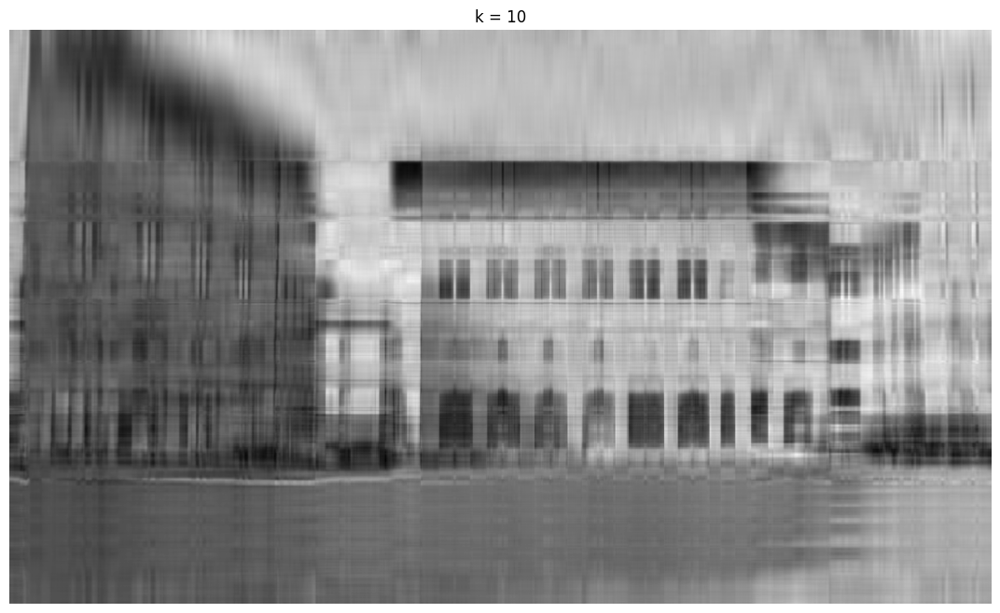

<!DOCTYPE html>


<html lang="en" data-content_root="./" >

  <head>
    <meta charset="utf-8" />
    <meta name="viewport" content="width=device-width, initial-scale=1.0" /><meta name="viewport" content="width=device-width, initial-scale=1" />

    <title>Week 44, Convolutional Neural Networks (CNN) &#8212; Applied Data Analysis and Machine Learning</title>
  
  
  
  <script data-cfasync="false">
    document.documentElement.dataset.mode = localStorage.getItem("mode") || "";
    document.documentElement.dataset.theme = localStorage.getItem("theme") || "";
  </script>
  <!-- 
    this give us a css class that will be invisible only if js is disabled 
  -->
  <noscript>
    <style>
      .pst-js-only { display: none !important; }

    </style>
  </noscript>
  
  <!-- Loaded before other Sphinx assets -->
  <link href="_static/styles/theme.css?digest=26a4bc78f4c0ddb94549" rel="stylesheet" />
<link href="_static/styles/pydata-sphinx-theme.css?digest=26a4bc78f4c0ddb94549" rel="stylesheet" />

    <link rel="stylesheet" type="text/css" href="_static/pygments.css?v=fa44fd50" />
    <link rel="stylesheet" type="text/css" href="_static/styles/sphinx-book-theme.css?v=a3416100" />
    <link rel="stylesheet" type="text/css" href="_static/togglebutton.css?v=13237357" />
    <link rel="stylesheet" type="text/css" href="_static/copybutton.css?v=76b2166b" />
    <link rel="stylesheet" type="text/css" href="_static/mystnb.4510f1fc1dee50b3e5859aac5469c37c29e427902b24a333a5f9fcb2f0b3ac41.css?v=be8a1c11" />
    <link rel="stylesheet" type="text/css" href="_static/sphinx-thebe.css?v=4fa983c6" />
    <link rel="stylesheet" type="text/css" href="_static/sphinx-design.min.css?v=95c83b7e" />
  
  <!-- So that users can add custom icons -->
  <script src="_static/scripts/fontawesome.js?digest=26a4bc78f4c0ddb94549"></script>
  <!-- Pre-loaded scripts that we'll load fully later -->
  <link rel="preload" as="script" href="_static/scripts/bootstrap.js?digest=26a4bc78f4c0ddb94549" />
<link rel="preload" as="script" href="_static/scripts/pydata-sphinx-theme.js?digest=26a4bc78f4c0ddb94549" />

    <script src="_static/documentation_options.js?v=9eb32ce0"></script>
    <script src="_static/doctools.js?v=9a2dae69"></script>
    <script src="_static/sphinx_highlight.js?v=dc90522c"></script>
    <script src="_static/clipboard.min.js?v=a7894cd8"></script>
    <script src="_static/copybutton.js?v=f281be69"></script>
    <script src="_static/scripts/sphinx-book-theme.js?v=887ef09a"></script>
    <script>let toggleHintShow = 'Click to show';</script>
    <script>let toggleHintHide = 'Click to hide';</script>
    <script>let toggleOpenOnPrint = 'true';</script>
    <script src="_static/togglebutton.js?v=4a39c7ea"></script>
    <script>var togglebuttonSelector = '.toggle, .admonition.dropdown';</script>
    <script src="_static/design-tabs.js?v=f930bc37"></script>
    <script>const THEBE_JS_URL = "https://unpkg.com/thebe@0.8.2/lib/index.js"; const thebe_selector = ".thebe,.cell"; const thebe_selector_input = "pre"; const thebe_selector_output = ".output, .cell_output"</script>
    <script async="async" src="_static/sphinx-thebe.js?v=c100c467"></script>
    <script>var togglebuttonSelector = '.toggle, .admonition.dropdown';</script>
    <script>const THEBE_JS_URL = "https://unpkg.com/thebe@0.8.2/lib/index.js"; const thebe_selector = ".thebe,.cell"; const thebe_selector_input = "pre"; const thebe_selector_output = ".output, .cell_output"</script>
    <script>window.MathJax = {"options": {"processHtmlClass": "tex2jax_process|mathjax_process|math|output_area"}}</script>
    <script defer="defer" src="https://cdn.jsdelivr.net/npm/mathjax@3/es5/tex-mml-chtml.js"></script>
    <script>DOCUMENTATION_OPTIONS.pagename = 'week44';</script>
    <link rel="index" title="Index" href="genindex.html" />
    <link rel="search" title="Search" href="search.html" />
    <link rel="next" title="Week 45, Convolutional Neural Networks (CCNs) and Recurrent Neural Networks (RNNs)" href="week45.html" />
    <link rel="prev" title="Exercises week 43" href="exercisesweek43.html" />
  <meta name="viewport" content="width=device-width, initial-scale=1"/>
  <meta name="docsearch:language" content="en"/>
  <meta name="docsearch:version" content="" />
  </head>
  
  
  <body data-bs-spy="scroll" data-bs-target=".bd-toc-nav" data-offset="180" data-bs-root-margin="0px 0px -60%" data-default-mode="">

  
  
  <div id="pst-skip-link" class="skip-link d-print-none"><a href="#main-content">Skip to main content</a></div>
  
  <div id="pst-scroll-pixel-helper"></div>
  
  <button type="button" class="btn rounded-pill" id="pst-back-to-top">
    <i class="fa-solid fa-arrow-up"></i>Back to top</button>

  
  <dialog id="pst-search-dialog">
    
<form class="bd-search d-flex align-items-center"
      action="search.html"
      method="get">
  <i class="fa-solid fa-magnifying-glass"></i>
  <input type="search"
         class="form-control"
         name="q"
         placeholder="Search this book..."
         aria-label="Search this book..."
         autocomplete="off"
         autocorrect="off"
         autocapitalize="off"
         spellcheck="false"/>
  <span class="search-button__kbd-shortcut"><kbd class="kbd-shortcut__modifier">Ctrl</kbd>+<kbd>K</kbd></span>
</form>
  </dialog>

  <div class="pst-async-banner-revealer d-none">
  <aside id="bd-header-version-warning" class="d-none d-print-none" aria-label="Version warning"></aside>
</div>

  
    <header class="bd-header navbar navbar-expand-lg bd-navbar d-print-none">
    </header>
  

  <div class="bd-container">
    <div class="bd-container__inner bd-page-width">
      
      
      
      <dialog id="pst-primary-sidebar-modal"></dialog>
      <div id="pst-primary-sidebar" class="bd-sidebar-primary bd-sidebar">
        

  
  <div class="sidebar-header-items sidebar-primary__section">
    
    
    
    
  </div>
  
    <div class="sidebar-primary-items__start sidebar-primary__section">
        <div class="sidebar-primary-item">

  
    
  

<a class="navbar-brand logo" href="intro.html">
  
  
  
  
  
    
    
      
    
    
    
    
  
  
</a></div>
        <div class="sidebar-primary-item">

<button class="btn search-button-field search-button__button pst-js-only" title="Search" aria-label="Search" data-bs-placement="bottom" data-bs-toggle="tooltip">
 <i class="fa-solid fa-magnifying-glass"></i>
 <span class="search-button__default-text">Search</span>
 <span class="search-button__kbd-shortcut"><kbd class="kbd-shortcut__modifier">Ctrl</kbd>+<kbd class="kbd-shortcut__modifier">K</kbd></span>
</button></div>
        <div class="sidebar-primary-item"><nav class="bd-links bd-docs-nav" aria-label="Main">
    <div class="bd-toc-item navbar-nav active">
        
        <ul class="nav bd-sidenav bd-sidenav__home-link">
            <li class="toctree-l1">
                <a class="reference internal" href="intro.html">
                    Applied Data Analysis and Machine Learning
                </a>
            </li>
        </ul>
        <p aria-level="2" class="caption" role="heading"><span class="caption-text">About the course</span></p>
<ul class="nav bd-sidenav">
<li class="toctree-l1"><a class="reference internal" href="schedule.html">Teaching schedule with links to material</a></li>
<li class="toctree-l1"><a class="reference internal" href="teachers.html">Teachers and Grading</a></li>
<li class="toctree-l1"><a class="reference internal" href="textbooks.html">Textbooks</a></li>

</ul>
<p aria-level="2" class="caption" role="heading"><span class="caption-text">Review of Statistics with Resampling Techniques and Linear Algebra</span></p>
<ul class="nav bd-sidenav">
<li class="toctree-l1"><a class="reference internal" href="statistics.html">1. Elements of Probability Theory and Statistical Data Analysis</a></li>
<li class="toctree-l1"><a class="reference internal" href="linalg.html">2. Linear Algebra, Handling of Arrays and more Python Features</a></li>
</ul>
<p aria-level="2" class="caption" role="heading"><span class="caption-text">From Regression to Support Vector Machines</span></p>
<ul class="nav bd-sidenav">
<li class="toctree-l1"><a class="reference internal" href="chapter1.html">3. Linear Regression</a></li>
<li class="toctree-l1"><a class="reference internal" href="chapter2.html">4. Ridge and Lasso Regression</a></li>
<li class="toctree-l1"><a class="reference internal" href="chapter3.html">5. Resampling Methods</a></li>
<li class="toctree-l1"><a class="reference internal" href="chapter4.html">6. Logistic Regression</a></li>
<li class="toctree-l1"><a class="reference internal" href="chapteroptimization.html">7. Optimization, the central part of any Machine Learning algortithm</a></li>
<li class="toctree-l1"><a class="reference internal" href="chapter5.html">8. Support Vector Machines, overarching aims</a></li>
</ul>
<p aria-level="2" class="caption" role="heading"><span class="caption-text">Decision Trees, Ensemble Methods and Boosting</span></p>
<ul class="nav bd-sidenav">
<li class="toctree-l1"><a class="reference internal" href="chapter6.html">9. Decision trees, overarching aims</a></li>
<li class="toctree-l1"><a class="reference internal" href="chapter7.html">10. Ensemble Methods: From a Single Tree to Many Trees and Extreme Boosting, Meet the Jungle of Methods</a></li>
</ul>
<p aria-level="2" class="caption" role="heading"><span class="caption-text">Dimensionality Reduction</span></p>
<ul class="nav bd-sidenav">
<li class="toctree-l1"><a class="reference internal" href="chapter8.html">11. Basic ideas of the Principal Component Analysis (PCA)</a></li>
<li class="toctree-l1"><a class="reference internal" href="clustering.html">12. Clustering and Unsupervised Learning</a></li>
</ul>
<p aria-level="2" class="caption" role="heading"><span class="caption-text">Deep Learning Methods</span></p>
<ul class="nav bd-sidenav">
<li class="toctree-l1"><a class="reference internal" href="chapter9.html">13. Neural networks</a></li>
<li class="toctree-l1"><a class="reference internal" href="chapter10.html">14. Building a Feed Forward Neural Network</a></li>
<li class="toctree-l1"><a class="reference internal" href="chapter11.html">15. Solving Differential Equations  with Deep Learning</a></li>
<li class="toctree-l1"><a class="reference internal" href="chapter12.html">16. Convolutional Neural Networks</a></li>
<li class="toctree-l1"><a class="reference internal" href="chapter13.html">17. Recurrent neural networks: Overarching view</a></li>

</ul>
<p aria-level="2" class="caption" role="heading"><span class="caption-text">Weekly material, notes and exercises</span></p>
<ul class="current nav bd-sidenav">
<li class="toctree-l1"><a class="reference internal" href="exercisesweek34.html">Exercises week 34</a></li>
<li class="toctree-l1"><a class="reference internal" href="week34.html">Week 34: Introduction to the course, Logistics and Practicalities</a></li>
<li class="toctree-l1"><a class="reference internal" href="exercisesweek35.html">Exercises week 35</a></li>
<li class="toctree-l1"><a class="reference internal" href="week35.html">Week 35: From Ordinary Linear Regression to Ridge and Lasso Regression</a></li>
<li class="toctree-l1"><a class="reference internal" href="exercisesweek36.html">Exercises week 36</a></li>
<li class="toctree-l1"><a class="reference internal" href="week36.html">Week 36: Linear Regression and Statistical interpretations</a></li>
<li class="toctree-l1"><a class="reference internal" href="exercisesweek37.html">Exercises week 37</a></li>
<li class="toctree-l1"><a class="reference internal" href="week37.html">Week 37: Statistical interpretations and Resampling Methods</a></li>
<li class="toctree-l1"><a class="reference internal" href="exercisesweek38.html">Exercises week 38</a></li>
<li class="toctree-l1"><a class="reference internal" href="week38.html">Week 38: Logistic Regression and Optimization</a></li>
<li class="toctree-l1"><a class="reference internal" href="exercisesweek39.html">Exercises week 39</a></li>
<li class="toctree-l1"><a class="reference internal" href="week39.html">Week 39: Optimization and  Gradient Methods</a></li>
<li class="toctree-l1"><a class="reference internal" href="week40.html">Week 40: Gradient descent methods (continued) and start Neural networks</a></li>
<li class="toctree-l1"><a class="reference internal" href="exercisesweek41.html">Exercises week 41</a></li>


<li class="toctree-l1"><a class="reference internal" href="week41.html">Week 41 Neural networks and constructing a neural network code</a></li>
<li class="toctree-l1"><a class="reference internal" href="exercisesweek42.html">Exercises week 42</a></li>


<li class="toctree-l1"><a class="reference internal" href="week42.html">Week 42 Constructing a Neural Network code with examples</a></li>
<li class="toctree-l1"><a class="reference internal" href="additionweek42.html">Exercises Week 42: Logistic Regression and Optimization, reminders from week 38 and week 40</a></li>
<li class="toctree-l1"><a class="reference internal" href="week43.html">Week 43: Deep Learning: Constructing a Neural Network code and solving differential equations</a></li>
<li class="toctree-l1"><a class="reference internal" href="exercisesweek43.html">Exercises week 43</a></li>


<li class="toctree-l1 current active"><a class="current reference internal" href="#">Week 44,  Convolutional Neural Networks (CNN)</a></li>
<li class="toctree-l1"><a class="reference internal" href="week45.html">Week 45,  Convolutional Neural Networks (CCNs) and Recurrent Neural Networks (RNNs)</a></li>
<li class="toctree-l1"><a class="reference internal" href="week46.html">Week 46: Decision Trees, Ensemble methods  and Random Forests</a></li>
<li class="toctree-l1"><a class="reference internal" href="week47.html">Week 47: From Decision Trees to Ensemble Methods, Random Forests and Boosting Methods</a></li>
<li class="toctree-l1"><a class="reference internal" href="exercisesweek47.html">Exercise week 47</a></li>

<li class="toctree-l1"><a class="reference internal" href="week48.html">Week 48: Gradient boosting  and summary of course</a></li>
<li class="toctree-l1"><a class="reference internal" href="exercisesweek48.html">Exercises week 48</a></li>

</ul>
<p aria-level="2" class="caption" role="heading"><span class="caption-text">Projects</span></p>
<ul class="nav bd-sidenav">
<li class="toctree-l1"><a class="reference internal" href="project1.html">Project 1 on Machine Learning, deadline October 7 (midnight), 2024</a></li>
<li class="toctree-l1"><a class="reference internal" href="project2.html">Project 2 on Machine Learning, deadline November 4 (Midnight)</a></li>
<li class="toctree-l1"><a class="reference internal" href="project3.html">Project 3 on Machine Learning, deadline December 9 (midnight), 2024</a></li>

</ul>

    </div>
</nav></div>
    </div>
  
  
  <div class="sidebar-primary-items__end sidebar-primary__section">
  </div>
  
  <div id="rtd-footer-container"></div>


      </div>
      
      <main id="main-content" class="bd-main" role="main">
        
        

<div class="sbt-scroll-pixel-helper"></div>

          <div class="bd-content">
            <div class="bd-article-container">
              
              <div class="bd-header-article d-print-none">
<div class="header-article-items header-article__inner">
  
    <div class="header-article-items__start">
      
        <div class="header-article-item"><button class="sidebar-toggle primary-toggle btn btn-sm" title="Toggle primary sidebar" data-bs-placement="bottom" data-bs-toggle="tooltip">
  <span class="fa-solid fa-bars"></span>
</button></div>
      
    </div>
  
  
    <div class="header-article-items__end">
      
        <div class="header-article-item">

<div class="article-header-buttons">


<div class="dropdown dropdown-launch-buttons">
  <button class="btn dropdown-toggle" type="button" data-bs-toggle="dropdown" aria-expanded="false" aria-label="Launch interactive content">
    <i class="fas fa-rocket"></i>
  </button>
  <ul class="dropdown-menu">
      
      
      
      <li><a href="https://mybinder.org/v2/git/https%3A//compphysics.github.io/MachineLearning/doc/LectureNotes/_build/html/index.html/master?urlpath=tree/week44.ipynb" target="_blank"
   class="btn btn-sm dropdown-item"
   title="Launch on Binder"
   data-bs-placement="left" data-bs-toggle="tooltip"
>
  

<span class="btn__icon-container">
  
    
  </span>
<span class="btn__text-container">Binder</span>
</a>
</li>
      
  </ul>
</div>


<div class="dropdown dropdown-download-buttons">
  <button class="btn dropdown-toggle" type="button" data-bs-toggle="dropdown" aria-expanded="false" aria-label="Download this page">
    <i class="fas fa-download"></i>
  </button>
  <ul class="dropdown-menu">
      
      
      
      <li><a href="_sources/week44.ipynb" target="_blank"
   class="btn btn-sm btn-download-source-button dropdown-item"
   title="Download source file"
   data-bs-placement="left" data-bs-toggle="tooltip"
>
  

<span class="btn__icon-container">
  <i class="fas fa-file"></i>
  </span>
<span class="btn__text-container">.ipynb</span>
</a>
</li>
      
      
      
      
      <li>
<button onclick="window.print()"
  class="btn btn-sm btn-download-pdf-button dropdown-item"
  title="Print to PDF"
  data-bs-placement="left" data-bs-toggle="tooltip"
>
  

<span class="btn__icon-container">
  <i class="fas fa-file-pdf"></i>
  </span>
<span class="btn__text-container">.pdf</span>
</button>
</li>
      
  </ul>
</div>


<button onclick="toggleFullScreen()"
  class="btn btn-sm btn-fullscreen-button"
  title="Fullscreen mode"
  data-bs-placement="bottom" data-bs-toggle="tooltip"
>
  

<span class="btn__icon-container">
  <i class="fas fa-expand"></i>
  </span>

</button>


<button class="btn btn-sm nav-link pst-navbar-icon theme-switch-button pst-js-only" aria-label="Color mode" data-bs-title="Color mode"  data-bs-placement="bottom" data-bs-toggle="tooltip">
  <i class="theme-switch fa-solid fa-sun                fa-lg" data-mode="light" title="Light"></i>
  <i class="theme-switch fa-solid fa-moon               fa-lg" data-mode="dark"  title="Dark"></i>
  <i class="theme-switch fa-solid fa-circle-half-stroke fa-lg" data-mode="auto"  title="System Settings"></i>
</button>


<button class="btn btn-sm pst-navbar-icon search-button search-button__button pst-js-only" title="Search" aria-label="Search" data-bs-placement="bottom" data-bs-toggle="tooltip">
    <i class="fa-solid fa-magnifying-glass fa-lg"></i>
</button>
<button class="sidebar-toggle secondary-toggle btn btn-sm" title="Toggle secondary sidebar" data-bs-placement="bottom" data-bs-toggle="tooltip">
    <span class="fa-solid fa-list"></span>
</button>
</div></div>
      
    </div>
  
</div>
</div>
              
              

<div id="jb-print-docs-body" class="onlyprint">
    <h1>Week 44,  Convolutional Neural Networks (CNN)</h1>
    <!-- Table of contents -->
    <div id="print-main-content">
        <div id="jb-print-toc">
            
            <div>
                <h2> Contents </h2>
            </div>
            <nav aria-label="Page">
                <ul class="visible nav section-nav flex-column">
<li class="toc-h2 nav-item toc-entry"><a class="reference internal nav-link" href="#plan-for-week-44">Plan for week 44</a></li>
<li class="toc-h2 nav-item toc-entry"><a class="reference internal nav-link" href="#lab-sessions-on-tuesday-and-wednesday">Lab  sessions on Tuesday and Wednesday</a></li>
<li class="toc-h2 nav-item toc-entry"><a class="reference internal nav-link" href="#material-for-lecture-monday-october-28">Material for Lecture Monday October 28</a></li>
<li class="toc-h2 nav-item toc-entry"><a class="reference internal nav-link" href="#convolutional-neural-networks-recognizing-images">Convolutional Neural Networks (recognizing images)</a></li>
<li class="toc-h2 nav-item toc-entry"><a class="reference internal nav-link" href="#what-is-the-difference">What is the Difference</a></li>
<li class="toc-h2 nav-item toc-entry"><a class="reference internal nav-link" href="#neural-networks-vs-cnns">Neural Networks vs CNNs</a></li>
<li class="toc-h2 nav-item toc-entry"><a class="reference internal nav-link" href="#why-cnns-for-images-sound-files-medical-images-from-ct-scans-etc">Why CNNS for images, sound files, medical images from CT scans etc?</a></li>
<li class="toc-h2 nav-item toc-entry"><a class="reference internal nav-link" href="#regular-nns-dont-scale-well-to-full-images">Regular NNs don’t scale well to full images</a></li>
<li class="toc-h2 nav-item toc-entry"><a class="reference internal nav-link" href="#d-volumes-of-neurons">3D volumes of neurons</a></li>
<li class="toc-h2 nav-item toc-entry"><a class="reference internal nav-link" href="#more-on-dimensionalities">More on Dimensionalities</a></li>
<li class="toc-h2 nav-item toc-entry"><a class="reference internal nav-link" href="#further-remarks">Further remarks</a></li>
<li class="toc-h2 nav-item toc-entry"><a class="reference internal nav-link" href="#layers-used-to-build-cnns">Layers used to build CNNs</a></li>
<li class="toc-h2 nav-item toc-entry"><a class="reference internal nav-link" href="#transforming-images">Transforming images</a></li>
<li class="toc-h2 nav-item toc-entry"><a class="reference internal nav-link" href="#cnns-in-brief">CNNs in brief</a></li>
<li class="toc-h2 nav-item toc-entry"><a class="reference internal nav-link" href="#a-deep-cnn-model-from-raschka-et-al">A deep CNN model (From Raschka et al)</a></li>
<li class="toc-h2 nav-item toc-entry"><a class="reference internal nav-link" href="#key-idea">Key Idea</a></li>
<li class="toc-h2 nav-item toc-entry"><a class="reference internal nav-link" href="#how-to-do-image-compression-before-the-era-of-deep-learning">How to do image compression before the era of deep learning</a></li>
<li class="toc-h2 nav-item toc-entry"><a class="reference internal nav-link" href="#the-svd-example">The SVD example</a></li>
<li class="toc-h2 nav-item toc-entry"><a class="reference internal nav-link" href="#mathematics-of-cnns">Mathematics of CNNs</a></li>
<li class="toc-h2 nav-item toc-entry"><a class="reference internal nav-link" href="#convolution-examples-polynomial-multiplication">Convolution Examples: Polynomial multiplication</a></li>
<li class="toc-h2 nav-item toc-entry"><a class="reference internal nav-link" href="#efficient-polynomial-multiplication">Efficient Polynomial Multiplication</a></li>
<li class="toc-h2 nav-item toc-entry"><a class="reference internal nav-link" href="#further-simplification">Further simplification</a></li>
<li class="toc-h2 nav-item toc-entry"><a class="reference internal nav-link" href="#a-more-efficient-way-of-coding-the-above-convolution">A more efficient way of coding the above Convolution</a></li>
<li class="toc-h2 nav-item toc-entry"><a class="reference internal nav-link" href="#commutative-process">Commutative process</a></li>
<li class="toc-h2 nav-item toc-entry"><a class="reference internal nav-link" href="#toeplitz-matrices">Toeplitz matrices</a></li>
<li class="toc-h2 nav-item toc-entry"><a class="reference internal nav-link" href="#fourier-series-and-toeplitz-matrices">Fourier series and Toeplitz matrices</a></li>
<li class="toc-h2 nav-item toc-entry"><a class="reference internal nav-link" href="#generalizing-the-above-one-dimensional-case">Generalizing the above one-dimensional case</a></li>
<li class="toc-h2 nav-item toc-entry"><a class="reference internal nav-link" href="#memory-considerations">Memory considerations</a></li>
<li class="toc-h2 nav-item toc-entry"><a class="reference internal nav-link" href="#padding">Padding</a></li>
<li class="toc-h2 nav-item toc-entry"><a class="reference internal nav-link" href="#new-vector">New vector</a></li>
<li class="toc-h2 nav-item toc-entry"><a class="reference internal nav-link" href="#rewriting-as-dot-products">Rewriting as dot products</a></li>
<li class="toc-h2 nav-item toc-entry"><a class="reference internal nav-link" href="#cross-correlation">Cross correlation</a></li>
<li class="toc-h2 nav-item toc-entry"><a class="reference internal nav-link" href="#two-dimensional-objects">Two-dimensional objects</a></li>
<li class="toc-h2 nav-item toc-entry"><a class="reference internal nav-link" href="#cnns-in-more-detail-simple-example">CNNs in more detail, simple example</a></li>
<li class="toc-h2 nav-item toc-entry"><a class="reference internal nav-link" href="#the-convolution-stage">The convolution stage</a></li>
<li class="toc-h2 nav-item toc-entry"><a class="reference internal nav-link" href="#finding-the-number-of-parameters">Finding the number of parameters</a></li>
<li class="toc-h2 nav-item toc-entry"><a class="reference internal nav-link" href="#new-image-or-volume">New image (or volume)</a></li>
<li class="toc-h2 nav-item toc-entry"><a class="reference internal nav-link" href="#parameters-to-train-common-settings">Parameters to train, common settings</a></li>
<li class="toc-h2 nav-item toc-entry"><a class="reference internal nav-link" href="#examples-of-cnn-setups">Examples of CNN setups</a></li>
<li class="toc-h2 nav-item toc-entry"><a class="reference internal nav-link" href="#summarizing-performing-a-general-discrete-convolution-from-raschka-et-al">Summarizing: Performing a general discrete convolution (From Raschka et al)</a></li>
<li class="toc-h2 nav-item toc-entry"><a class="reference internal nav-link" href="#pooling">Pooling</a></li>
<li class="toc-h2 nav-item toc-entry"><a class="reference internal nav-link" href="#pooling-arithmetic">Pooling arithmetic</a></li>
<li class="toc-h2 nav-item toc-entry"><a class="reference internal nav-link" href="#pooling-types-from-raschka-et-al">Pooling types (From Raschka et al)</a></li>
<li class="toc-h2 nav-item toc-entry"><a class="reference internal nav-link" href="#building-convolutional-neural-networks-in-tensorflow-and-keras">Building convolutional neural networks in Tensorflow and Keras</a></li>
<li class="toc-h2 nav-item toc-entry"><a class="reference internal nav-link" href="#setting-it-up">Setting it up</a></li>
<li class="toc-h2 nav-item toc-entry"><a class="reference internal nav-link" href="#the-mnist-dataset-again">The MNIST dataset again</a></li>
<li class="toc-h2 nav-item toc-entry"><a class="reference internal nav-link" href="#strong-correlations">Strong correlations</a></li>
<li class="toc-h2 nav-item toc-entry"><a class="reference internal nav-link" href="#layers-of-a-cnn">Layers of a CNN</a></li>
<li class="toc-h2 nav-item toc-entry"><a class="reference internal nav-link" href="#systematic-reduction">Systematic reduction</a></li>
<li class="toc-h2 nav-item toc-entry"><a class="reference internal nav-link" href="#prerequisites-collect-and-pre-process-data">Prerequisites: Collect and pre-process data</a></li>
<li class="toc-h2 nav-item toc-entry"><a class="reference internal nav-link" href="#importing-keras-and-tensorflow">Importing Keras and Tensorflow</a></li>
<li class="toc-h2 nav-item toc-entry"><a class="reference internal nav-link" href="#running-with-keras">Running with Keras</a></li>
<li class="toc-h2 nav-item toc-entry"><a class="reference internal nav-link" href="#final-part">Final part</a></li>
<li class="toc-h2 nav-item toc-entry"><a class="reference internal nav-link" href="#final-visualization">Final visualization</a></li>
<li class="toc-h2 nav-item toc-entry"><a class="reference internal nav-link" href="#the-cifar01-data-set">The CIFAR01 data set</a></li>
<li class="toc-h2 nav-item toc-entry"><a class="reference internal nav-link" href="#verifying-the-data-set">Verifying the data set</a></li>
<li class="toc-h2 nav-item toc-entry"><a class="reference internal nav-link" href="#set-up-the-model">Set up  the model</a></li>
<li class="toc-h2 nav-item toc-entry"><a class="reference internal nav-link" href="#add-dense-layers-on-top">Add Dense layers on top</a></li>
<li class="toc-h2 nav-item toc-entry"><a class="reference internal nav-link" href="#compile-and-train-the-model">Compile and train the model</a></li>
<li class="toc-h2 nav-item toc-entry"><a class="reference internal nav-link" href="#finally-evaluate-the-model">Finally, evaluate the model</a></li>
<li class="toc-h2 nav-item toc-entry"><a class="reference internal nav-link" href="#building-our-own-cnn-code">Building our own CNN code</a><ul class="nav section-nav flex-column">
<li class="toc-h3 nav-item toc-entry"><a class="reference internal nav-link" href="#list-of-contents">List of contents:</a></li>
<li class="toc-h3 nav-item toc-entry"><a class="reference internal nav-link" href="#schedulers">Schedulers</a></li>
<li class="toc-h3 nav-item toc-entry"><a class="reference internal nav-link" href="#usage-of-schedulers">Usage of schedulers</a></li>
<li class="toc-h3 nav-item toc-entry"><a class="reference internal nav-link" href="#cost-functions">Cost functions</a></li>
<li class="toc-h3 nav-item toc-entry"><a class="reference internal nav-link" href="#usage-of-cost-functions">Usage of cost functions</a></li>
<li class="toc-h3 nav-item toc-entry"><a class="reference internal nav-link" href="#activation-functions">Activation functions</a></li>
<li class="toc-h3 nav-item toc-entry"><a class="reference internal nav-link" href="#usage-of-activation-functions">Usage of activation functions</a></li>
<li class="toc-h3 nav-item toc-entry"><a class="reference internal nav-link" href="#convolution">Convolution</a></li>
<li class="toc-h3 nav-item toc-entry"><a class="reference internal nav-link" href="#layers">Layers</a></li>
<li class="toc-h3 nav-item toc-entry"><a class="reference internal nav-link" href="#convolution2dlayer-convolution-in-a-hidden-layer">Convolution2DLayer: convolution in a hidden layer</a></li>
<li class="toc-h3 nav-item toc-entry"><a class="reference internal nav-link" href="#backpropagation-in-the-convolutional-layer">Backpropagation in the convolutional layer</a></li>
<li class="toc-h3 nav-item toc-entry"><a class="reference internal nav-link" href="#demonstration">Demonstration</a></li>
<li class="toc-h3 nav-item toc-entry"><a class="reference internal nav-link" href="#pooling-layer">Pooling Layer</a></li>
<li class="toc-h3 nav-item toc-entry"><a class="reference internal nav-link" href="#flattening-layer">Flattening Layer</a></li>
<li class="toc-h3 nav-item toc-entry"><a class="reference internal nav-link" href="#fully-connected-layers">Fully Connected Layers</a></li>
<li class="toc-h3 nav-item toc-entry"><a class="reference internal nav-link" href="#optimized-convolution2dlayer">Optimized Convolution2DLayer</a></li>
<li class="toc-h3 nav-item toc-entry"><a class="reference internal nav-link" href="#the-convolutional-neural-network-cnn">The Convolutional Neural Network (CNN)</a></li>
<li class="toc-h3 nav-item toc-entry"><a class="reference internal nav-link" href="#usage-of-cnn-code">Usage of CNN code</a></li>
<li class="toc-h3 nav-item toc-entry"><a class="reference internal nav-link" href="#additional-remarks">Additional Remarks</a></li>
<li class="toc-h3 nav-item toc-entry"><a class="reference internal nav-link" href="#remarks-on-the-speed">Remarks on the speed</a></li>
<li class="toc-h3 nav-item toc-entry"><a class="reference internal nav-link" href="#convolution-using-separable-kernels">Convolution using separable kernels</a></li>
<li class="toc-h3 nav-item toc-entry"><a class="reference internal nav-link" href="#convolution-in-the-fourier-domain">Convolution in the Fourier domain</a></li>
</ul>
</li>
</ul>
            </nav>
        </div>
    </div>
</div>

              
                
<div id="searchbox"></div>
                <article class="bd-article">
                  
  <!-- HTML file automatically generated from DocOnce source (https://github.com/doconce/doconce/)
doconce format html week44.do.txt --no_mako -->
<!-- dom:TITLE: Week 44,  Convolutional Neural Networks (CNN) --><section class="tex2jax_ignore mathjax_ignore" id="week-44-convolutional-neural-networks-cnn">
<h1>Week 44,  Convolutional Neural Networks (CNN)<a class="headerlink" href="#week-44-convolutional-neural-networks-cnn" title="Link to this heading">#</a></h1>
<p><strong>Morten Hjorth-Jensen</strong>, Department of Physics, University of Oslo, Norway</p>
<p>Date: <strong>October 28</strong></p>
<section id="plan-for-week-44">
<h2>Plan for week 44<a class="headerlink" href="#plan-for-week-44" title="Link to this heading">#</a></h2>
<p><strong>Material for the lecture Monday October 28, 2024.</strong></p>
<ol class="arabic simple">
<li><p>Convolutional  Neural Networks</p></li>
<li><p>Readings and Videos:</p></li>
</ol>
<ul class="simple">
<li><p>These lecture notes at <a class="github reference external" href="https://github.com/CompPhysics/MachineLearning/blob/master/doc/pub/week44/ipynb/week44.ipynb">CompPhysics/MachineLearning</a></p></li>
<li><p>For a more in depth discussion on  neural networks we recommend Goodfellow et al chapter 9. See also chapter 11 and 12 on practicalities and applications</p></li>
<li><p>Reading suggestions for implementation of CNNs see Rashcka et al.’s chapter 14 at <a class="github reference external" href="https://github.com/rasbt/machine-learning-book/tree/main/ch14">rasbt/machine-learning-book</a>.</p></li>
<li><p>Video on Deep Learning at <a class="reference external" href="https://www.youtube.com/playlist?list=PLZHQObOWTQDNU6R1_67000Dx_ZCJB-3pi">https://www.youtube.com/playlist?list=PLZHQObOWTQDNU6R1_67000Dx_ZCJB-3pi</a></p></li>
<li><p>Video  on Convolutional Neural Networks from MIT at <a class="reference external" href="https://www.youtube.com/watch?v=iaSUYvmCekI&amp;amp;ab_channel=AlexanderAmini">https://www.youtube.com/watch?v=iaSUYvmCekI&amp;ab_channel=AlexanderAmini</a></p></li>
<li><p>Video on CNNs from Stanford at <a class="reference external" href="https://www.youtube.com/watch?v=bNb2fEVKeEo&amp;amp;list=PLC1qU-LWwrF64f4QKQT-Vg5Wr4qEE1Zxk&amp;amp;index=6&amp;amp;ab_channel=StanfordUniversitySchoolofEngineering">https://www.youtube.com/watch?v=bNb2fEVKeEo&amp;list=PLC1qU-LWwrF64f4QKQT-Vg5Wr4qEE1Zxk&amp;index=6&amp;ab_channel=StanfordUniversitySchoolofEngineering</a></p></li>
<li><p>Video of lecture October 28 at <a class="reference external" href="https://youtu.be/rfrSfikAz94">https://youtu.be/rfrSfikAz94</a></p></li>
<li><p>Whiteboard notes at <a class="github reference external" href="https://github.com/CompPhysics/MachineLearning/blob/master/doc/HandWrittenNotes/2024/NotesOctober28">CompPhysics/MachineLearning</a></p></li>
</ul>
</section>
<section id="lab-sessions-on-tuesday-and-wednesday">
<h2>Lab  sessions on Tuesday and Wednesday<a class="headerlink" href="#lab-sessions-on-tuesday-and-wednesday" title="Link to this heading">#</a></h2>
<ul class="simple">
<li><p>Main focus is discussion of and work on project 2</p></li>
<li><p>If you did not get time to finish the exercises from week 43, you can also keep working on them and hand in this coming Friday</p></li>
</ul>
</section>
<section id="material-for-lecture-monday-october-28">
<h2>Material for Lecture Monday October 28<a class="headerlink" href="#material-for-lecture-monday-october-28" title="Link to this heading">#</a></h2>
</section>
<section id="convolutional-neural-networks-recognizing-images">
<h2>Convolutional Neural Networks (recognizing images)<a class="headerlink" href="#convolutional-neural-networks-recognizing-images" title="Link to this heading">#</a></h2>
<p>Convolutional neural networks (CNNs) were developed during the last
decade of the previous century, with a focus on character recognition
tasks. Nowadays, CNNs are a central element in the spectacular success
of deep learning methods. The success in for example image
classifications have made them a central tool for most machine
learning practitioners.</p>
<p>CNNs are very similar to ordinary Neural Networks.
They are made up of neurons that have learnable weights and
biases. Each neuron receives some inputs, performs a dot product and
optionally follows it with a non-linearity. The whole network still
expresses a single differentiable score function: from the raw image
pixels on one end to class scores at the other. And they still have a
loss function (for example Softmax) on the last (fully-connected) layer
and all the tips/tricks we developed for learning regular Neural
Networks still apply (back propagation, gradient descent etc etc).</p>
</section>
<section id="what-is-the-difference">
<h2>What is the Difference<a class="headerlink" href="#what-is-the-difference" title="Link to this heading">#</a></h2>
<p><strong>CNN architectures make the explicit assumption that
the inputs are images, which allows us to encode certain properties
into the architecture. These then make the forward function more
efficient to implement and vastly reduce the amount of parameters in
the network.</strong></p>
</section>
<section id="neural-networks-vs-cnns">
<h2>Neural Networks vs CNNs<a class="headerlink" href="#neural-networks-vs-cnns" title="Link to this heading">#</a></h2>
<p>Neural networks are defined as <strong>affine transformations</strong>, that is
a vector is received as input and is multiplied with a matrix of so-called weights (our unknown paramters) to produce an
output (to which a bias vector is usually added before passing the result
through a nonlinear activation function). This is applicable to any type of input, be it an
image, a sound clip or an unordered collection of features: whatever their
dimensionality, their representation can always be flattened into a vector
before the transformation.</p>
</section>
<section id="why-cnns-for-images-sound-files-medical-images-from-ct-scans-etc">
<h2>Why CNNS for images, sound files, medical images from CT scans etc?<a class="headerlink" href="#why-cnns-for-images-sound-files-medical-images-from-ct-scans-etc" title="Link to this heading">#</a></h2>
<p>However, when we consider images, sound clips and many other similar kinds of data, these data  have an intrinsic
structure. More formally, they share these important properties:</p>
<ul class="simple">
<li><p>They are stored as multi-dimensional arrays (think of the pixels of a figure) .</p></li>
<li><p>They feature one or more axes for which ordering matters (e.g., width and height axes for an image, time axis for a sound clip).</p></li>
<li><p>One axis, called the channel axis, is used to access different views of the data (e.g., the red, green and blue channels of a color image, or the left and right channels of a stereo audio track).</p></li>
</ul>
<p>These properties are not exploited when an affine transformation is applied; in
fact, all the axes are treated in the same way and the topological information
is not taken into account. Still, taking advantage of the implicit structure of
the data may prove very handy in solving some tasks, like computer vision and
speech recognition, and in these cases it would be best to preserve it. This is
where discrete convolutions come into play.</p>
<p>A discrete convolution is a linear transformation that preserves this notion of
ordering. It is sparse (only a few input units contribute to a given output
unit) and reuses parameters (the same weights are applied to multiple locations
in the input).</p>
</section>
<section id="regular-nns-dont-scale-well-to-full-images">
<h2>Regular NNs don’t scale well to full images<a class="headerlink" href="#regular-nns-dont-scale-well-to-full-images" title="Link to this heading">#</a></h2>
<p>As an example, consider
an image of size <span class="math notranslate nohighlight">\(32\times 32\times 3\)</span> (32 wide, 32 high, 3 color channels), so a
single fully-connected neuron in a first hidden layer of a regular
Neural Network would have <span class="math notranslate nohighlight">\(32\times 32\times 3 = 3072\)</span> weights. This amount still
seems manageable, but clearly this fully-connected structure does not
scale to larger images. For example, an image of more respectable
size, say <span class="math notranslate nohighlight">\(200\times 200\times 3\)</span>, would lead to neurons that have
<span class="math notranslate nohighlight">\(200\times 200\times 3 = 120,000\)</span> weights.</p>
<p>We could have
several such neurons, and the parameters would add up quickly! Clearly,
this full connectivity is wasteful and the huge number of parameters
would quickly lead to possible overfitting.</p>
<!-- dom:FIGURE: [figslides/nn.jpeg, width=500 frac=0.6]  A regular 3-layer Neural Network. -->
<!-- begin figure -->
<p><p style="font-size: 0.9em"><i>Figure 1: A regular 3-layer Neural Network.</i></p></p>
<!-- end figure --></section>
<section id="d-volumes-of-neurons">
<h2>3D volumes of neurons<a class="headerlink" href="#d-volumes-of-neurons" title="Link to this heading">#</a></h2>
<p>Convolutional Neural Networks take advantage of the fact that the
input consists of images and they constrain the architecture in a more
sensible way.</p>
<p>In particular, unlike a regular Neural Network, the
layers of a CNN have neurons arranged in 3 dimensions: width,
height, depth. (Note that the word depth here refers to the third
dimension of an activation volume, not to the depth of a full Neural
Network, which can refer to the total number of layers in a network.)</p>
<p>To understand it better, the above example of an image
with an input volume of
activations has dimensions <span class="math notranslate nohighlight">\(32\times 32\times 3\)</span> (width, height,
depth respectively).</p>
<p>The neurons in a layer will
only be connected to a small region of the layer before it, instead of
all of the neurons in a fully-connected manner. Moreover, the final
output layer could  for this specific image have dimensions <span class="math notranslate nohighlight">\(1\times 1 \times 10\)</span>,
because by the
end of the CNN architecture we will reduce the full image into a
single vector of class scores, arranged along the depth
dimension.</p>
<!-- dom:FIGURE: [figslides/cnn.jpeg, width=500 frac=0.6]  A CNN arranges its neurons in three dimensions (width, height, depth), as visualized in one of the layers. Every layer of a CNN transforms the 3D input volume to a 3D output volume of neuron activations. In this example, the red input layer holds the image, so its width and height would be the dimensions of the image, and the depth would be 3 (Red, Green, Blue channels). -->
<!-- begin figure -->
<p><p style="font-size: 0.9em"><i>Figure 1: A CNN arranges its neurons in three dimensions (width, height, depth), as visualized in one of the layers. Every layer of a CNN transforms the 3D input volume to a 3D output volume of neuron activations. In this example, the red input layer holds the image, so its width and height would be the dimensions of the image, and the depth would be 3 (Red, Green, Blue channels).</i></p></p>
<!-- end figure --></section>
<section id="more-on-dimensionalities">
<h2>More on Dimensionalities<a class="headerlink" href="#more-on-dimensionalities" title="Link to this heading">#</a></h2>
<p>In fields like signal processing (and imaging as well), one designs
so-called filters. These filters are defined by the convolutions and
are often hand-crafted. One may specify filters for smoothing, edge
detection, frequency reshaping, and similar operations. However with
neural networks the idea is to automatically learn the filters and use
many of them in conjunction with non-linear operations (activation
functions).</p>
<p>As an example consider a neural network operating on sound sequence
data.  Assume that we an input vector <span class="math notranslate nohighlight">\(\boldsymbol{x}\)</span> of length <span class="math notranslate nohighlight">\(d=10^6\)</span>.  We
construct then a neural network with onle hidden layer only with
<span class="math notranslate nohighlight">\(10^4\)</span> nodes. This means that we will have a weight matrix with
<span class="math notranslate nohighlight">\(10^4\times 10^6=10^{10}\)</span> weights to be determined, together with <span class="math notranslate nohighlight">\(10^4\)</span> biases.</p>
<p>Assume furthermore that we have an output layer which is meant to train whether the sound sequence represents a human voice (true) or something else (false).
It means that we have only one output node. But since this output node connects to <span class="math notranslate nohighlight">\(10^4\)</span> nodes in the hidden layer, there are in total <span class="math notranslate nohighlight">\(10^4\)</span> weights to be determined for the output layer, plus one bias. In total we have</p>
<div class="math notranslate nohighlight">
\[
\mathrm{NumberParameters}=10^{10}+10^4+10^4+1 \approx 10^{10},
\]</div>
<p>that is ten billion parameters to determine.</p>
</section>
<section id="further-remarks">
<h2>Further remarks<a class="headerlink" href="#further-remarks" title="Link to this heading">#</a></h2>
<p>The main principles that justify convolutions is locality of
information and repetion of patterns within the signal. Sound samples
of the input in adjacent spots are much more likely to affect each
other than those that are very far away. Similarly, sounds are
repeated in multiple times in the signal. While slightly simplistic,
reasoning about such a sound example demonstrates this. The same
principles then apply to images and other similar data.</p>
</section>
<section id="layers-used-to-build-cnns">
<h2>Layers used to build CNNs<a class="headerlink" href="#layers-used-to-build-cnns" title="Link to this heading">#</a></h2>
<p>A simple CNN is a sequence of layers, and every layer of a CNN
transforms one volume of activations to another through a
differentiable function. We use three main types of layers to build
CNN architectures: Convolutional Layer, Pooling Layer, and
Fully-Connected Layer (exactly as seen in regular Neural Networks). We
will stack these layers to form a full CNN architecture.</p>
<p>A simple CNN for image classification could have the architecture:</p>
<ul class="simple">
<li><p><strong>INPUT</strong> (<span class="math notranslate nohighlight">\(32\times 32 \times 3\)</span>) will hold the raw pixel values of the image, in this case an image of width 32, height 32, and with three color channels R,G,B.</p></li>
<li><p><strong>CONV</strong> (convolutional )layer will compute the output of neurons that are connected to local regions in the input, each computing a dot product between their weights and a small region they are connected to in the input volume. This may result in volume such as <span class="math notranslate nohighlight">\([32\times 32\times 12]\)</span> if we decided to use 12 filters.</p></li>
<li><p><strong>RELU</strong> layer will apply an elementwise activation function, such as the <span class="math notranslate nohighlight">\(max(0,x)\)</span> thresholding at zero. This leaves the size of the volume unchanged (<span class="math notranslate nohighlight">\([32\times 32\times 12]\)</span>).</p></li>
<li><p><strong>POOL</strong> (pooling) layer will perform a downsampling operation along the spatial dimensions (width, height), resulting in volume such as <span class="math notranslate nohighlight">\([16\times 16\times 12]\)</span>.</p></li>
<li><p><strong>FC</strong> (i.e. fully-connected) layer will compute the class scores, resulting in volume of size <span class="math notranslate nohighlight">\([1\times 1\times 10]\)</span>, where each of the 10 numbers correspond to a class score, such as among the 10 categories of the MNIST images we considered above . As with ordinary Neural Networks and as the name implies, each neuron in this layer will be connected to all the numbers in the previous volume.</p></li>
</ul>
</section>
<section id="transforming-images">
<h2>Transforming images<a class="headerlink" href="#transforming-images" title="Link to this heading">#</a></h2>
<p>CNNs transform the original image layer by layer from the original
pixel values to the final class scores.</p>
<p>Observe that some layers contain
parameters and other don’t. In particular, the CNN layers perform
transformations that are a function of not only the activations in the
input volume, but also of the parameters (the weights and biases of
the neurons). On the other hand, the RELU/POOL layers will implement a
fixed function. The parameters in the CONV/FC layers will be trained
with gradient descent so that the class scores that the CNN computes
are consistent with the labels in the training set for each image.</p>
</section>
<section id="cnns-in-brief">
<h2>CNNs in brief<a class="headerlink" href="#cnns-in-brief" title="Link to this heading">#</a></h2>
<p>In summary:</p>
<ul class="simple">
<li><p>A CNN architecture is in the simplest case a list of Layers that transform the image volume into an output volume (e.g. holding the class scores)</p></li>
<li><p>There are a few distinct types of Layers (e.g. CONV/FC/RELU/POOL are by far the most popular)</p></li>
<li><p>Each Layer accepts an input 3D volume and transforms it to an output 3D volume through a differentiable function</p></li>
<li><p>Each Layer may or may not have parameters (e.g. CONV/FC do, RELU/POOL don’t)</p></li>
<li><p>Each Layer may or may not have additional hyperparameters (e.g. CONV/FC/POOL do, RELU doesn’t)</p></li>
</ul>
</section>
<section id="a-deep-cnn-model-from-raschka-et-al">
<h2>A deep CNN model (<a class="reference external" href="https://github.com/rasbt/machine-learning-book">From Raschka et al</a>)<a class="headerlink" href="#a-deep-cnn-model-from-raschka-et-al" title="Link to this heading">#</a></h2>
<!-- dom:FIGURE: [figslides/deepcnn.png, width=500 frac=0.67]  A deep CNN -->
<!-- begin figure -->
<p><p style="font-size: 0.9em"><i>Figure 1: A deep CNN</i></p></p>
<!-- end figure --></section>
<section id="key-idea">
<h2>Key Idea<a class="headerlink" href="#key-idea" title="Link to this heading">#</a></h2>
<p>A dense neural network is representd by an affine operation (like matrix-matrix multiplication) where all parameters are included.</p>
<p>The key idea in CNNs for say imaging is that in images neighbor pixels tend to be related! So we connect
only neighboring neurons in the input instead of connecting all with the first hidden layer.</p>
<p>We say we perform a filtering (convolution is the mathematical operation).</p>
</section>
<section id="how-to-do-image-compression-before-the-era-of-deep-learning">
<h2>How to do image compression before the era of deep learning<a class="headerlink" href="#how-to-do-image-compression-before-the-era-of-deep-learning" title="Link to this heading">#</a></h2>
<p>The singular-value decomposition (SVD) algorithm has been for decades one of the standard ways of compressing images.
The <a class="reference external" href="https://compphysics.github.io/MachineLearning/doc/LectureNotes/_build/html/chapter2.html#the-singular-value-decomposition">lectures on the SVD</a> give many of the essential details concerning the SVD.</p>
<p>The orthogonal vectors which are obtained from the SVD, can be used to
project down the dimensionality of a given image. In the example here
we gray-scale an image and downsize it.</p>
<p>This recipe relies on us being able to actually perform the SVD. For
large images, and in particular with many images to reconstruct, using the SVD
may quickly become an overwhelming task. With the advent of efficient deep
learning methods like CNNs and later generative methods, these methods
have become in the last years the premier way of performing image
analysis. In particular for classification problems with labelled images.</p>
</section>
<section id="the-svd-example">
<h2>The SVD example<a class="headerlink" href="#the-svd-example" title="Link to this heading">#</a></h2>
<div class="cell docutils container">
<div class="cell_input docutils container">
<div class="highlight-ipython3 notranslate"><div class="highlight"><pre><span></span><span class="o">%</span><span class="k">matplotlib</span> inline

<span class="kn">from</span> <span class="nn">matplotlib.image</span> <span class="kn">import</span> <span class="n">imread</span>
<span class="kn">import</span> <span class="nn">matplotlib.pyplot</span> <span class="k">as</span> <span class="nn">plt</span>
<span class="kn">import</span> <span class="nn">scipy.linalg</span> <span class="k">as</span> <span class="nn">ln</span>
<span class="kn">import</span> <span class="nn">numpy</span> <span class="k">as</span> <span class="nn">np</span>
<span class="kn">import</span> <span class="nn">os</span>
<span class="kn">from</span> <span class="nn">PIL</span> <span class="kn">import</span> <span class="n">Image</span>
<span class="kn">from</span> <span class="nn">math</span> <span class="kn">import</span> <span class="n">log10</span><span class="p">,</span> <span class="n">sqrt</span> 
<span class="n">plt</span><span class="o">.</span><span class="n">rcParams</span><span class="p">[</span><span class="s1">&#39;figure.figsize&#39;</span><span class="p">]</span> <span class="o">=</span> <span class="p">[</span><span class="mi">16</span><span class="p">,</span> <span class="mi">8</span><span class="p">]</span>
<span class="c1"># Import image</span>
<span class="n">A</span> <span class="o">=</span> <span class="n">imread</span><span class="p">(</span><span class="n">os</span><span class="o">.</span><span class="n">path</span><span class="o">.</span><span class="n">join</span><span class="p">(</span><span class="s2">&quot;figslides/photo1.jpg&quot;</span><span class="p">))</span>
<span class="n">X</span> <span class="o">=</span> <span class="n">A</span><span class="o">.</span><span class="n">dot</span><span class="p">([</span><span class="mf">0.299</span><span class="p">,</span> <span class="mf">0.5870</span><span class="p">,</span> <span class="mf">0.114</span><span class="p">])</span> <span class="c1"># Convert RGB to grayscale</span>
<span class="n">img</span> <span class="o">=</span> <span class="n">plt</span><span class="o">.</span><span class="n">imshow</span><span class="p">(</span><span class="n">X</span><span class="p">)</span>
<span class="c1"># convert to gray</span>
<span class="n">img</span><span class="o">.</span><span class="n">set_cmap</span><span class="p">(</span><span class="s1">&#39;gray&#39;</span><span class="p">)</span>
<span class="n">plt</span><span class="o">.</span><span class="n">axis</span><span class="p">(</span><span class="s1">&#39;off&#39;</span><span class="p">)</span>
<span class="n">plt</span><span class="o">.</span><span class="n">show</span><span class="p">()</span>
<span class="c1"># Call image size</span>
<span class="nb">print</span><span class="p">(</span><span class="s1">&#39;: </span><span class="si">%s</span><span class="s1">&#39;</span><span class="o">%</span><span class="k">str</span>(X.shape))


<span class="c1"># split the matrix into U, S, VT</span>
<span class="n">U</span><span class="p">,</span> <span class="n">S</span><span class="p">,</span> <span class="n">VT</span> <span class="o">=</span> <span class="n">np</span><span class="o">.</span><span class="n">linalg</span><span class="o">.</span><span class="n">svd</span><span class="p">(</span><span class="n">X</span><span class="p">,</span><span class="n">full_matrices</span><span class="o">=</span><span class="kc">False</span><span class="p">)</span>
<span class="n">S</span> <span class="o">=</span> <span class="n">np</span><span class="o">.</span><span class="n">diag</span><span class="p">(</span><span class="n">S</span><span class="p">)</span>
<span class="n">m</span> <span class="o">=</span> <span class="mi">800</span> <span class="c1"># Image&#39;s width</span>
<span class="n">n</span> <span class="o">=</span> <span class="mi">1200</span> <span class="c1"># Image&#39;s height</span>
<span class="n">j</span> <span class="o">=</span> <span class="mi">0</span>
<span class="c1"># Try compression with different k vectors (these represent projections):</span>
<span class="k">for</span> <span class="n">k</span> <span class="ow">in</span> <span class="p">(</span><span class="mi">5</span><span class="p">,</span><span class="mi">10</span><span class="p">,</span> <span class="mi">20</span><span class="p">,</span> <span class="mi">100</span><span class="p">,</span><span class="mi">200</span><span class="p">,</span><span class="mi">400</span><span class="p">,</span><span class="mi">500</span><span class="p">):</span>
    <span class="c1"># Original size of the image</span>
    <span class="n">originalSize</span> <span class="o">=</span> <span class="n">m</span> <span class="o">*</span> <span class="n">n</span> 
    <span class="c1"># Size after compressed</span>
    <span class="n">compressedSize</span> <span class="o">=</span> <span class="n">k</span> <span class="o">*</span> <span class="p">(</span><span class="mi">1</span> <span class="o">+</span> <span class="n">m</span> <span class="o">+</span> <span class="n">n</span><span class="p">)</span> 
    <span class="c1"># The projection of the original image</span>
    <span class="n">Xapprox</span> <span class="o">=</span> <span class="n">U</span><span class="p">[:,:</span><span class="n">k</span><span class="p">]</span> <span class="o">@</span> <span class="n">S</span><span class="p">[</span><span class="mi">0</span><span class="p">:</span><span class="n">k</span><span class="p">,:</span><span class="n">k</span><span class="p">]</span> <span class="o">@</span> <span class="n">VT</span><span class="p">[:</span><span class="n">k</span><span class="p">,:]</span>
    <span class="n">plt</span><span class="o">.</span><span class="n">figure</span><span class="p">(</span><span class="n">j</span><span class="o">+</span><span class="mi">1</span><span class="p">)</span>
    <span class="n">j</span> <span class="o">+=</span> <span class="mi">1</span>
    <span class="n">img</span> <span class="o">=</span> <span class="n">plt</span><span class="o">.</span><span class="n">imshow</span><span class="p">(</span><span class="n">Xapprox</span><span class="p">)</span>
    <span class="n">img</span><span class="o">.</span><span class="n">set_cmap</span><span class="p">(</span><span class="s1">&#39;gray&#39;</span><span class="p">)</span>
    
    <span class="n">plt</span><span class="o">.</span><span class="n">axis</span><span class="p">(</span><span class="s1">&#39;off&#39;</span><span class="p">)</span>
    <span class="n">plt</span><span class="o">.</span><span class="n">title</span><span class="p">(</span><span class="s1">&#39;k = &#39;</span> <span class="o">+</span> <span class="nb">str</span><span class="p">(</span><span class="n">k</span><span class="p">))</span>
    <span class="n">plt</span><span class="o">.</span><span class="n">show</span><span class="p">()</span> 
    <span class="nb">print</span><span class="p">(</span><span class="s1">&#39;Original size of image:&#39;</span><span class="p">)</span>
    <span class="nb">print</span><span class="p">(</span><span class="n">originalSize</span><span class="p">)</span>
    <span class="nb">print</span><span class="p">(</span><span class="s1">&#39;Compression rate as Compressed image / Original size:&#39;</span><span class="p">)</span>
    <span class="n">ratio</span> <span class="o">=</span> <span class="n">compressedSize</span> <span class="o">*</span> <span class="mf">1.0</span> <span class="o">/</span> <span class="n">originalSize</span>
    <span class="nb">print</span><span class="p">(</span><span class="n">ratio</span><span class="p">)</span>
    <span class="nb">print</span><span class="p">(</span><span class="s1">&#39;Compression rate is &#39;</span> <span class="o">+</span> <span class="nb">str</span><span class="p">(</span> <span class="nb">round</span><span class="p">(</span><span class="n">ratio</span> <span class="o">*</span> <span class="mi">100</span> <span class="p">,</span><span class="mi">2</span><span class="p">))</span> <span class="o">+</span> <span class="s1">&#39;%&#39;</span> <span class="p">)</span>  
    <span class="c1"># Estimate MQA</span>
    <span class="n">x</span><span class="o">=</span> <span class="n">X</span><span class="o">.</span><span class="n">astype</span><span class="p">(</span><span class="s2">&quot;float&quot;</span><span class="p">)</span>
    <span class="n">y</span><span class="o">=</span><span class="n">Xapprox</span><span class="o">.</span><span class="n">astype</span><span class="p">(</span><span class="s2">&quot;float&quot;</span><span class="p">)</span>
    <span class="n">err</span> <span class="o">=</span> <span class="n">np</span><span class="o">.</span><span class="n">sum</span><span class="p">((</span><span class="n">x</span> <span class="o">-</span> <span class="n">y</span><span class="p">)</span> <span class="o">**</span> <span class="mi">2</span><span class="p">)</span>
    <span class="n">err</span> <span class="o">/=</span> <span class="nb">float</span><span class="p">(</span><span class="n">X</span><span class="o">.</span><span class="n">shape</span><span class="p">[</span><span class="mi">0</span><span class="p">]</span> <span class="o">*</span> <span class="n">Xapprox</span><span class="o">.</span><span class="n">shape</span><span class="p">[</span><span class="mi">1</span><span class="p">])</span>
    <span class="nb">print</span><span class="p">(</span><span class="s1">&#39;The mean-square deviation &#39;</span><span class="o">+</span> <span class="nb">str</span><span class="p">(</span><span class="nb">round</span><span class="p">(</span> <span class="n">err</span><span class="p">)))</span>
    <span class="n">max_pixel</span> <span class="o">=</span> <span class="mf">255.0</span>
    <span class="c1"># Estimate Signal Noise Ratio</span>
    <span class="n">srv</span> <span class="o">=</span> <span class="mi">20</span> <span class="o">*</span> <span class="p">(</span><span class="n">log10</span><span class="p">(</span><span class="n">max_pixel</span> <span class="o">/</span> <span class="n">sqrt</span><span class="p">(</span><span class="n">err</span><span class="p">)))</span>
    <span class="nb">print</span><span class="p">(</span><span class="s1">&#39;Signa to noise ratio &#39;</span><span class="o">+</span> <span class="nb">str</span><span class="p">(</span><span class="nb">round</span><span class="p">(</span><span class="n">srv</span><span class="p">))</span> <span class="o">+</span><span class="s1">&#39;dB&#39;</span><span class="p">)</span>
</pre></div>
</div>
</div>
<div class="cell_output docutils container">

<div class="output stream highlight-myst-ansi notranslate"><div class="highlight"><pre><span></span>: (2128, 3636)
</pre></div>
</div>

<div class="output stream highlight-myst-ansi notranslate"><div class="highlight"><pre><span></span>Original size of image:
960000
Compression rate as Compressed image / Original size:
0.010421875
Compression rate is 1.04%
The mean-square deviation 993
Signa to noise ratio 18dB
</pre></div>
</div>

<div class="output stream highlight-myst-ansi notranslate"><div class="highlight"><pre><span></span>Original size of image:
960000
Compression rate as Compressed image / Original size:
0.02084375
Compression rate is 2.08%
The mean-square deviation 590
Signa to noise ratio 20dB
</pre></div>
</div>

<div class="output stream highlight-myst-ansi notranslate"><div class="highlight"><pre><span></span>Original size of image:
960000
Compression rate as Compressed image / Original size:
0.0416875
Compression rate is 4.17%
The mean-square deviation 341
Signa to noise ratio 23dB
</pre></div>
</div>

<div class="output stream highlight-myst-ansi notranslate"><div class="highlight"><pre><span></span>Original size of image:
960000
Compression rate as Compressed image / Original size:
0.2084375
Compression rate is 20.84%
The mean-square deviation 70
Signa to noise ratio 30dB
</pre></div>
</div>

<div class="output stream highlight-myst-ansi notranslate"><div class="highlight"><pre><span></span>Original size of image:
960000
Compression rate as Compressed image / Original size:
0.416875
Compression rate is 41.69%
The mean-square deviation 26
Signa to noise ratio 34dB
</pre></div>
</div>

<div class="output stream highlight-myst-ansi notranslate"><div class="highlight"><pre><span></span>Original size of image:
960000
Compression rate as Compressed image / Original size:
0.83375
Compression rate is 83.38%
The mean-square deviation 6
Signa to noise ratio 41dB
</pre></div>
</div>

<div class="output stream highlight-myst-ansi notranslate"><div class="highlight"><pre><span></span>Original size of image:
960000
Compression rate as Compressed image / Original size:
1.0421875
Compression rate is 104.22%
The mean-square deviation 3
Signa to noise ratio 43dB
</pre></div>
</div>
</div>
</div>
</section>
<section id="mathematics-of-cnns">
<h2>Mathematics of CNNs<a class="headerlink" href="#mathematics-of-cnns" title="Link to this heading">#</a></h2>
<p>The mathematics of CNNs is based on the mathematical operation of
<strong>convolution</strong>.  In mathematics (in particular in functional analysis),
convolution is represented by mathematical operations (integration,
summation etc) on two functions in order to produce a third function
that expresses how the shape of one gets modified by the other.
Convolution has a plethora of applications in a variety of
disciplines, spanning from statistics to signal processing, computer
vision, solutions of differential equations,linear algebra,
engineering, and yes, machine learning.</p>
<p>Mathematically, convolution is defined as follows (one-dimensional example):
Let us define a continuous function <span class="math notranslate nohighlight">\(y(t)\)</span> given by</p>
<div class="math notranslate nohighlight">
\[
y(t) = \int x(a) w(t-a) da,
\]</div>
<p>where <span class="math notranslate nohighlight">\(x(a)\)</span> represents a so-called input and <span class="math notranslate nohighlight">\(w(t-a)\)</span> is normally called the weight function or kernel.</p>
<p>The above integral is written in  a more compact form as</p>
<div class="math notranslate nohighlight">
\[
y(t) = \left(x * w\right)(t).
\]</div>
<p>The discretized version reads</p>
<div class="math notranslate nohighlight">
\[
y(t) = \sum_{a=-\infty}^{a=\infty}x(a)w(t-a).
\]</div>
<p>Computing the inverse of the above convolution operations is known as deconvolution and the process is commutative.</p>
<p>How can we use this? And what does it mean? Let us study some familiar examples first.</p>
</section>
<section id="convolution-examples-polynomial-multiplication">
<h2>Convolution Examples: Polynomial multiplication<a class="headerlink" href="#convolution-examples-polynomial-multiplication" title="Link to this heading">#</a></h2>
<p>Our first example is that of a multiplication between two polynomials,
which we will rewrite in terms of the mathematics of convolution. In
the final stage, since the problem here is a discrete one, we will
recast the final expression in terms of a matrix-vector
multiplication, where the matrix is a so-called <a class="reference external" href="https://link.springer.com/book/10.1007/978-93-86279-04-0">Toeplitz matrix
</a>.</p>
<p>Let us look a the following polynomials to second and third order, respectively:</p>
<div class="math notranslate nohighlight">
\[
p(t) = \alpha_0+\alpha_1 t+\alpha_2 t^2,
\]</div>
<p>and</p>
<div class="math notranslate nohighlight">
\[
s(t) = \beta_0+\beta_1 t+\beta_2 t^2+\beta_3 t^3.
\]</div>
<p>The polynomial multiplication gives us a new polynomial of degree <span class="math notranslate nohighlight">\(5\)</span></p>
<div class="math notranslate nohighlight">
\[
z(t) = \delta_0+\delta_1 t+\delta_2 t^2+\delta_3 t^3+\delta_4 t^4+\delta_5 t^5.
\]</div>
</section>
<section id="efficient-polynomial-multiplication">
<h2>Efficient Polynomial Multiplication<a class="headerlink" href="#efficient-polynomial-multiplication" title="Link to this heading">#</a></h2>
<p>Computing polynomial products can be implemented efficiently if we rewrite the more brute force multiplications using convolution.
We note first that the new coefficients are given as</p>
<div class="math notranslate nohighlight">
\[\begin{split}
\begin{split}
\delta_0=&amp;\alpha_0\beta_0\\
\delta_1=&amp;\alpha_1\beta_0+\alpha_0\beta_1\\
\delta_2=&amp;\alpha_0\beta_2+\alpha_1\beta_1+\alpha_2\beta_0\\
\delta_3=&amp;\alpha_1\beta_2+\alpha_2\beta_1+\alpha_0\beta_3\\
\delta_4=&amp;\alpha_2\beta_2+\alpha_1\beta_3\\
\delta_5=&amp;\alpha_2\beta_3.\\
\end{split}
\end{split}\]</div>
<p>We note that <span class="math notranslate nohighlight">\(\alpha_i=0\)</span> except for <span class="math notranslate nohighlight">\(i\in \left\{0,1,2\right\}\)</span> and <span class="math notranslate nohighlight">\(\beta_i=0\)</span> except for <span class="math notranslate nohighlight">\(i\in\left\{0,1,2,3\right\}\)</span>.</p>
<p>We can then rewrite the coefficients <span class="math notranslate nohighlight">\(\delta_j\)</span> using a discrete convolution as</p>
<div class="math notranslate nohighlight">
\[
\delta_j = \sum_{i=-\infty}^{i=\infty}\alpha_i\beta_{j-i}=(\alpha * \beta)_j,
\]</div>
<p>or as a double sum with restriction <span class="math notranslate nohighlight">\(l=i+j\)</span></p>
<div class="math notranslate nohighlight">
\[
\delta_l = \sum_{ij}\alpha_i\beta_{j}.
\]</div>
</section>
<section id="further-simplification">
<h2>Further simplification<a class="headerlink" href="#further-simplification" title="Link to this heading">#</a></h2>
<p>Although we may have redundant operations with some few zeros for <span class="math notranslate nohighlight">\(\beta_i\)</span>, we can rewrite the above sum in a more compact way as</p>
<div class="math notranslate nohighlight">
\[
\delta_i = \sum_{k=0}^{k=m-1}\alpha_k\beta_{i-k},
\]</div>
<p>where <span class="math notranslate nohighlight">\(m=3\)</span> in our case, the maximum length of
the vector <span class="math notranslate nohighlight">\(\alpha\)</span>. Note that the vector <span class="math notranslate nohighlight">\(\boldsymbol{\beta}\)</span> has length <span class="math notranslate nohighlight">\(n=4\)</span>. Below we will find an even more efficient representation.</p>
</section>
<section id="a-more-efficient-way-of-coding-the-above-convolution">
<h2>A more efficient way of coding the above Convolution<a class="headerlink" href="#a-more-efficient-way-of-coding-the-above-convolution" title="Link to this heading">#</a></h2>
<p>Since we only have a finite number of <span class="math notranslate nohighlight">\(\alpha\)</span> and <span class="math notranslate nohighlight">\(\beta\)</span> values
which are non-zero, we can rewrite the above convolution expressions
as a matrix-vector multiplication</p>
<div class="math notranslate nohighlight">
\[\begin{split}
\boldsymbol{\delta}=\begin{bmatrix}\alpha_0 &amp; 0 &amp; 0 &amp; 0 \\
                            \alpha_1 &amp; \alpha_0 &amp; 0 &amp; 0 \\
			    \alpha_2 &amp; \alpha_1 &amp; \alpha_0 &amp; 0 \\
			    0 &amp; \alpha_2 &amp; \alpha_1 &amp; \alpha_0 \\
			    0 &amp; 0 &amp; \alpha_2 &amp; \alpha_1 \\
			    0 &amp; 0 &amp; 0 &amp; \alpha_2
			    \end{bmatrix}\begin{bmatrix} \beta_0 \\ \beta_1 \\ \beta_2 \\ \beta_3\end{bmatrix}.
\end{split}\]</div>
</section>
<section id="commutative-process">
<h2>Commutative process<a class="headerlink" href="#commutative-process" title="Link to this heading">#</a></h2>
<p>The process is commutative and we can easily see that we can rewrite the multiplication in terms of  a matrix holding <span class="math notranslate nohighlight">\(\beta\)</span> and a vector holding <span class="math notranslate nohighlight">\(\alpha\)</span>.
In this case we have</p>
<div class="math notranslate nohighlight">
\[\begin{split}
\boldsymbol{\delta}=\begin{bmatrix}\beta_0 &amp; 0 &amp; 0  \\
                            \beta_1 &amp; \beta_0 &amp; 0  \\
			    \beta_2 &amp; \beta_1 &amp; \beta_0  \\
			    \beta_3 &amp; \beta_2 &amp; \beta_1 \\
			    0 &amp; \beta_3 &amp; \beta_2 \\
			    0 &amp; 0 &amp; \beta_3
			    \end{bmatrix}\begin{bmatrix} \alpha_0 \\ \alpha_1 \\ \alpha_2\end{bmatrix}.
\end{split}\]</div>
<p>Note that the use of these matrices is for mathematical purposes only
and not implementation purposes.  When implementing the above equation
we do not encode (and allocate memory) the matrices explicitely.  We
rather code the convolutions in the minimal memory footprint that they
require.</p>
</section>
<section id="toeplitz-matrices">
<h2>Toeplitz matrices<a class="headerlink" href="#toeplitz-matrices" title="Link to this heading">#</a></h2>
<p>The above matrices are examples of so-called <a class="reference external" href="https://link.springer.com/book/10.1007/978-93-86279-04-0">Toeplitz
matrices</a>. A
Toeplitz matrix is a matrix in which each descending diagonal from
left to right is constant. For instance the last matrix, which we
rewrite as</p>
<div class="math notranslate nohighlight">
\[\begin{split}
\boldsymbol{A}=\begin{bmatrix}a_0 &amp; 0 &amp; 0  \\
                            a_1 &amp; a_0 &amp; 0  \\
			    a_2 &amp; a_1 &amp; a_0  \\
			    a_3 &amp; a_2 &amp; a_1 \\
			    0 &amp; a_3 &amp; a_2 \\
			    0 &amp; 0 &amp; a_3
			    \end{bmatrix},
\end{split}\]</div>
<p>with elements <span class="math notranslate nohighlight">\(a_{ii}=a_{i+1,j+1}=a_{i-j}\)</span> is an example of a Toeplitz
matrix. Such a matrix does not need to be a square matrix.  Toeplitz
matrices are also closely connected with Fourier series, because the multiplication operator by a trigonometric
polynomial, compressed to a finite-dimensional space, can be
represented by such a matrix. The example above shows that we can
represent linear convolution as multiplication of a Toeplitz matrix by
a vector.</p>
</section>
<section id="fourier-series-and-toeplitz-matrices">
<h2>Fourier series and Toeplitz matrices<a class="headerlink" href="#fourier-series-and-toeplitz-matrices" title="Link to this heading">#</a></h2>
<p>This is an active and ogoing research area concerning CNNs. The following articles may be of interest</p>
<ol class="arabic simple">
<li><p><a class="reference external" href="https://www.sciencedirect.com/topics/engineering/convolution-theorem#:~:text=The%20convolution%20theorem%20(together%20with,k%20)%20G%20(%20k%20)%20.">Read more about the convolution theorem and Fouriers series</a></p></li>
<li><p><a class="reference external" href="https://www.sciencedirect.com/science/article/pii/S1568494623006257">Fourier Transform Layer</a></p></li>
</ol>
</section>
<section id="generalizing-the-above-one-dimensional-case">
<h2>Generalizing the above one-dimensional case<a class="headerlink" href="#generalizing-the-above-one-dimensional-case" title="Link to this heading">#</a></h2>
<p>In order to align the above simple case with the more general
convolution cases, we rename <span class="math notranslate nohighlight">\(\boldsymbol{\alpha}\)</span>, whose length is <span class="math notranslate nohighlight">\(m=3\)</span>,
with <span class="math notranslate nohighlight">\(\boldsymbol{w}\)</span>.  We will interpret <span class="math notranslate nohighlight">\(\boldsymbol{w}\)</span> as a weight/filter function
with which we want to perform the convolution with an input variable
<span class="math notranslate nohighlight">\(\boldsymbol{x}\)</span> of length <span class="math notranslate nohighlight">\(n\)</span>.  We will assume always that the filter
<span class="math notranslate nohighlight">\(\boldsymbol{w}\)</span> has dimensionality <span class="math notranslate nohighlight">\(m \le n\)</span>.</p>
<p>We replace thus <span class="math notranslate nohighlight">\(\boldsymbol{\beta}\)</span> with <span class="math notranslate nohighlight">\(\boldsymbol{x}\)</span> and <span class="math notranslate nohighlight">\(\boldsymbol{\delta}\)</span> with <span class="math notranslate nohighlight">\(\boldsymbol{y}\)</span> and have</p>
<div class="math notranslate nohighlight">
\[
y(i)= \left(x*w\right)(i)= \sum_{k=0}^{k=m-1}w(k)x(i-k),
\]</div>
<p>where <span class="math notranslate nohighlight">\(m=3\)</span> in our case, the maximum length of the vector <span class="math notranslate nohighlight">\(\boldsymbol{w}\)</span>.
Here the symbol <span class="math notranslate nohighlight">\(*\)</span> represents the mathematical operation of convolution.</p>
</section>
<section id="memory-considerations">
<h2>Memory considerations<a class="headerlink" href="#memory-considerations" title="Link to this heading">#</a></h2>
<p>This expression leaves us however with some terms with negative
indices, for example <span class="math notranslate nohighlight">\(x(-1)\)</span> and <span class="math notranslate nohighlight">\(x(-2)\)</span> which may not be defined. Our
vector <span class="math notranslate nohighlight">\(\boldsymbol{x}\)</span> has components <span class="math notranslate nohighlight">\(x(0)\)</span>, <span class="math notranslate nohighlight">\(x(1)\)</span>, <span class="math notranslate nohighlight">\(x(2)\)</span> and <span class="math notranslate nohighlight">\(x(3)\)</span>.</p>
<p>The index <span class="math notranslate nohighlight">\(j\)</span> for <span class="math notranslate nohighlight">\(\boldsymbol{x}\)</span> runs from <span class="math notranslate nohighlight">\(j=0\)</span> to <span class="math notranslate nohighlight">\(j=3\)</span> since <span class="math notranslate nohighlight">\(\boldsymbol{x}\)</span> is meant to
represent a third-order polynomial.</p>
<p>Furthermore, the index <span class="math notranslate nohighlight">\(i\)</span> runs from <span class="math notranslate nohighlight">\(i=0\)</span> to <span class="math notranslate nohighlight">\(i=5\)</span> since <span class="math notranslate nohighlight">\(\boldsymbol{y}\)</span>
contains the coefficients of a fifth-order polynomial.  When <span class="math notranslate nohighlight">\(i=5\)</span> we
may also have values of <span class="math notranslate nohighlight">\(x(4)\)</span> and <span class="math notranslate nohighlight">\(x(5)\)</span> which are not defined.</p>
</section>
<section id="padding">
<h2>Padding<a class="headerlink" href="#padding" title="Link to this heading">#</a></h2>
<p>The solution to this is what is called <strong>padding</strong>!  We simply define a
new vector <span class="math notranslate nohighlight">\(x\)</span> with two added elements set to zero before <span class="math notranslate nohighlight">\(x(0)\)</span> and
two new elements after <span class="math notranslate nohighlight">\(x(3)\)</span> set to zero. That is, we augment the
length of <span class="math notranslate nohighlight">\(\boldsymbol{x}\)</span> from <span class="math notranslate nohighlight">\(n=4\)</span> to <span class="math notranslate nohighlight">\(n+2P=8\)</span>, where <span class="math notranslate nohighlight">\(P=2\)</span> is the padding
constant (a new hyperparameter), see discussions below as well.</p>
</section>
<section id="new-vector">
<h2>New vector<a class="headerlink" href="#new-vector" title="Link to this heading">#</a></h2>
<p>We have a new vector defined as <span class="math notranslate nohighlight">\(x(0)=0\)</span>, <span class="math notranslate nohighlight">\(x(1)=0\)</span>,
<span class="math notranslate nohighlight">\(x(2)=\beta_0\)</span>, <span class="math notranslate nohighlight">\(x(3)=\beta_1\)</span>, <span class="math notranslate nohighlight">\(x(4)=\beta_2\)</span>, <span class="math notranslate nohighlight">\(x(5)=\beta_3\)</span>,
<span class="math notranslate nohighlight">\(x(6)=0\)</span>, and <span class="math notranslate nohighlight">\(x(7)=0\)</span>.</p>
<p>We have added four new elements, which
are all zero. The benefit is that we can rewrite the equation for
<span class="math notranslate nohighlight">\(\boldsymbol{y}\)</span>, with <span class="math notranslate nohighlight">\(i=0,1,\dots,5\)</span>,</p>
<div class="math notranslate nohighlight">
\[
y(i) = \sum_{k=0}^{k=m-1}w(k)x(i+(m-1)-k).
\]</div>
<p>As an example, we have</p>
<div class="math notranslate nohighlight">
\[
y(4)=x(6)w(0)+x(5)w(1)+x(4)w(2)=0\times \alpha_0+\beta_3\alpha_1+\beta_2\alpha_2,
\]</div>
<p>as before except that we have an additional term <span class="math notranslate nohighlight">\(x(6)w(0)\)</span>, which is zero.</p>
<p>Similarly, for the fifth-order term we have</p>
<div class="math notranslate nohighlight">
\[
y(5)=x(7)w(0)+x(6)w(1)+x(5)w(2)=0\times \alpha_0+0\times\alpha_1+\beta_3\alpha_2.
\]</div>
<p>The zeroth-order term is</p>
<div class="math notranslate nohighlight">
\[
y(0)=x(2)w(0)+x(1)w(1)+x(0)w(2)=\beta_0 \alpha_0+0\times\alpha_1+0\times\alpha_2=\alpha_0\beta_0.
\]</div>
</section>
<section id="rewriting-as-dot-products">
<h2>Rewriting as dot products<a class="headerlink" href="#rewriting-as-dot-products" title="Link to this heading">#</a></h2>
<p>If we now flip the filter/weight vector, with the following term as a typical example</p>
<div class="math notranslate nohighlight">
\[
y(0)=x(2)w(0)+x(1)w(1)+x(0)w(2)=x(2)\tilde{w}(2)+x(1)\tilde{w}(1)+x(0)\tilde{w}(0),
\]</div>
<p>with <span class="math notranslate nohighlight">\(\tilde{w}(0)=w(2)\)</span>, <span class="math notranslate nohighlight">\(\tilde{w}(1)=w(1)\)</span>, and <span class="math notranslate nohighlight">\(\tilde{w}(2)=w(0)\)</span>, we can then rewrite the above sum as a dot product of
<span class="math notranslate nohighlight">\(x(i:i+(m-1))\tilde{w}\)</span> for element <span class="math notranslate nohighlight">\(y(i)\)</span>, where <span class="math notranslate nohighlight">\(x(i:i+(m-1))\)</span> is simply a patch of <span class="math notranslate nohighlight">\(\boldsymbol{x}\)</span> of size <span class="math notranslate nohighlight">\(m-1\)</span>.</p>
<p>The padding <span class="math notranslate nohighlight">\(P\)</span> we have introduced for the convolution stage is just
another hyperparameter which is introduced as part of the
architecture. Similarly, below we will also introduce another
hyperparameter called <strong>Stride</strong> <span class="math notranslate nohighlight">\(S\)</span>.</p>
</section>
<section id="cross-correlation">
<h2>Cross correlation<a class="headerlink" href="#cross-correlation" title="Link to this heading">#</a></h2>
<p>In essentially all applications one uses what is called cross correlation instead of the standard convolution described above.
This means that multiplication is performed in the same direction and instead of the general expression we have discussed above (with infinite sums)</p>
<div class="math notranslate nohighlight">
\[
y(i) = \sum_{k=-\infty}^{k=\infty}w(k)x(i-k),
\]</div>
<p>we have now</p>
<div class="math notranslate nohighlight">
\[
y(i) = \sum_{k=-\infty}^{k=\infty}w(k)x(i+k).
\]</div>
<p>Both TensorFlow and PyTorch (as well as our own code example below),
implement the last equation, although it is normally referred to as
convolution.  The same padding rules and stride rules discussed below
apply to this expression as well.</p>
<p>We leave it as an exercise for you to convince yourself that the example we have discussed till now, gives the same final expression using the last expression.</p>
</section>
<section id="two-dimensional-objects">
<h2>Two-dimensional objects<a class="headerlink" href="#two-dimensional-objects" title="Link to this heading">#</a></h2>
<p>We are now ready to start studying the discrete convolutions relevant for convolutional neural networks.
We often use convolutions over more than one dimension at a time. If
we have a two-dimensional image <span class="math notranslate nohighlight">\(X\)</span> as input, we can have a <strong>filter</strong>
defined by a two-dimensional <strong>kernel/weight/filter</strong> <span class="math notranslate nohighlight">\(W\)</span>. This leads to an output <span class="math notranslate nohighlight">\(Y\)</span></p>
<div class="math notranslate nohighlight">
\[
Y(i,j)=(X * W)(i,j) = \sum_m\sum_n X(m,n)W(i-m,j-n).
\]</div>
<p>Convolution is a commutative process, which means we can rewrite this equation as</p>
<div class="math notranslate nohighlight">
\[
Y(i,j)=(X * W)(i,j) = \sum_m\sum_n X(i-m,j-n)W(m,n).
\]</div>
<p>Normally the latter is more straightforward to implement in a machine
larning library since there is less variation in the range of values
of <span class="math notranslate nohighlight">\(m\)</span> and <span class="math notranslate nohighlight">\(n\)</span>.</p>
<p>As mentioned above, most deep learning libraries implement
cross-correlation instead of convolution (although it is referred to as
convolution)</p>
<div class="math notranslate nohighlight">
\[
Y(i,j)=(X * W)(i,j) = \sum_m\sum_n X(i+m,j+n)W(m,n).
\]</div>
</section>
<section id="cnns-in-more-detail-simple-example">
<h2>CNNs in more detail, simple example<a class="headerlink" href="#cnns-in-more-detail-simple-example" title="Link to this heading">#</a></h2>
<p>Let assume we have an input matrix <span class="math notranslate nohighlight">\(X\)</span> of dimensionality <span class="math notranslate nohighlight">\(3\times 3\)</span>
and a <span class="math notranslate nohighlight">\(2\times 2\)</span> filter <span class="math notranslate nohighlight">\(W\)</span> given by the following matrices</p>
<div class="math notranslate nohighlight">
\[\begin{split}
\boldsymbol{X}=\begin{bmatrix}x_{00} &amp; x_{01} &amp; x_{02}  \\
                      x_{10} &amp; x_{11} &amp; x_{12}  \\
	              x_{20} &amp; x_{21} &amp; x_{22} \end{bmatrix},
\end{split}\]</div>
<p>and</p>
<div class="math notranslate nohighlight">
\[\begin{split}
\boldsymbol{W}=\begin{bmatrix}w_{00} &amp; w_{01} \\
	              w_{10} &amp; w_{11}\end{bmatrix}.
\end{split}\]</div>
<p>We introduce now the hyperparameter <span class="math notranslate nohighlight">\(S\)</span> <strong>stride</strong>. Stride represents how the filter <span class="math notranslate nohighlight">\(W\)</span> moves the convolution process on the matrix <span class="math notranslate nohighlight">\(X\)</span>.
We strongly recommend the repository on <a class="reference external" href="https://github.com/vdumoulin/conv_arithmetic">Arithmetic of deep learning by Dumoulin and Visin</a></p>
<p>Here we set the stride equal to <span class="math notranslate nohighlight">\(S=1\)</span>, which means that, starting with the element <span class="math notranslate nohighlight">\(x_{00}\)</span>, the filter will act on <span class="math notranslate nohighlight">\(2\times 2\)</span> submatrices each time, starting with the upper corner and moving according to the stride value column by column.</p>
<p>Here we perform the operation</p>
<div class="math notranslate nohighlight">
\[
Y_(i,j)=(X * W)(i,j) = \sum_m\sum_n X(i-m,j-n)W(m,n),
\]</div>
<p>and obtain</p>
<div class="math notranslate nohighlight">
\[\begin{split}
\boldsymbol{Y}=\begin{bmatrix}x_{00}w_{00}+x_{01}w_{01}+x_{10}w_{10}+x_{11}w_{11} &amp; x_{01}w_{00}+x_{02}w_{01}+x_{11}w_{10}+x_{12}w_{11}  \\
	              x_{10}w_{00}+x_{11}w_{01}+x_{20}w_{10}+x_{21}w_{11} &amp; x_{11}w_{00}+x_{12}w_{01}+x_{21}w_{10}+x_{22}w_{11}\end{bmatrix}.
\end{split}\]</div>
<p>We can rewrite this operation in terms of a matrix-vector multiplication by defining a new vector where we flatten out the inputs as a vector <span class="math notranslate nohighlight">\(\boldsymbol{X}'\)</span> of length <span class="math notranslate nohighlight">\(9\)</span> and
a matrix <span class="math notranslate nohighlight">\(\boldsymbol{W}'\)</span> with dimension <span class="math notranslate nohighlight">\(4\times 9\)</span> as</p>
<div class="math notranslate nohighlight">
\[\begin{split}
\boldsymbol{X}'=\begin{bmatrix}x_{00} \\ x_{01} \\ x_{02} \\ x_{10} \\ x_{11} \\ x_{12} \\ x_{20} \\ x_{21} \\ x_{22} \end{bmatrix},
\end{split}\]</div>
<p>and the new matrix</p>
<div class="math notranslate nohighlight">
\[\begin{split}
\boldsymbol{W}'=\begin{bmatrix} w_{00} &amp; w_{01} &amp; 0 &amp; w_{10} &amp; w_{11} &amp; 0 &amp; 0 &amp; 0 &amp; 0 \\
                        0  &amp; w_{00} &amp; w_{01} &amp; 0 &amp; w_{10} &amp; w_{11} &amp; 0 &amp; 0 &amp; 0 \\
			0 &amp; 0 &amp; 0 &amp; w_{00} &amp; w_{01} &amp; 0 &amp; w_{10} &amp; w_{11} &amp; 0  \\
                        0 &amp; 0 &amp; 0 &amp; 0 &amp; w_{00} &amp; w_{01} &amp; 0 &amp; w_{10} &amp; w_{11}\end{bmatrix}.
\end{split}\]</div>
<p>We see easily that performing the matrix-vector multiplication <span class="math notranslate nohighlight">\(\boldsymbol{W}'\boldsymbol{X}'\)</span> is the same as the above convolution with stride <span class="math notranslate nohighlight">\(S=1\)</span>, that is</p>
<div class="math notranslate nohighlight">
\[
Y=(\boldsymbol{W}*\boldsymbol{X}),
\]</div>
<p>is now given by <span class="math notranslate nohighlight">\(\boldsymbol{W}'\boldsymbol{X}'\)</span> which is a vector of length <span class="math notranslate nohighlight">\(4\)</span> instead of the originally resulting  <span class="math notranslate nohighlight">\(2\times 2\)</span> output matrix.</p>
</section>
<section id="the-convolution-stage">
<h2>The convolution stage<a class="headerlink" href="#the-convolution-stage" title="Link to this heading">#</a></h2>
<p>The convolution stage, where we apply different filters <span class="math notranslate nohighlight">\(\boldsymbol{W}\)</span> in
order to reduce the dimensionality of an image, adds, in addition to
the weights and biases (to be trained by the back propagation
algorithm) that define the filters, two new hyperparameters, the so-called
<strong>padding</strong> <span class="math notranslate nohighlight">\(P\)</span> and the stride <span class="math notranslate nohighlight">\(S\)</span>.</p>
</section>
<section id="finding-the-number-of-parameters">
<h2>Finding the number of parameters<a class="headerlink" href="#finding-the-number-of-parameters" title="Link to this heading">#</a></h2>
<p>In the above example we have an input matrix of dimension <span class="math notranslate nohighlight">\(3\times
3\)</span>. In general we call the input for an input volume and it is defined
by its width <span class="math notranslate nohighlight">\(H_1\)</span>, height <span class="math notranslate nohighlight">\(H_1\)</span> and depth <span class="math notranslate nohighlight">\(D_1\)</span>. If we have the
standard three color channels <span class="math notranslate nohighlight">\(D_1=3\)</span>.</p>
<p>The above example has <span class="math notranslate nohighlight">\(W_1=H_1=3\)</span> and <span class="math notranslate nohighlight">\(D_1=1\)</span>.</p>
<p>When we introduce the filter we have the following additional hyperparameters</p>
<ol class="arabic simple">
<li><p><span class="math notranslate nohighlight">\(K\)</span> the number of filters. It is common to perform the convolution of the input several times since by experience shrinking the input too fast does not work well</p></li>
<li><p><span class="math notranslate nohighlight">\(F\)</span> as the filter’s spatial extent</p></li>
<li><p><span class="math notranslate nohighlight">\(S\)</span> as the stride parameter</p></li>
<li><p><span class="math notranslate nohighlight">\(P\)</span> as the padding parameter</p></li>
</ol>
<p>These parameters are defined by the architecture of the network and are not included in the training.</p>
</section>
<section id="new-image-or-volume">
<h2>New image (or volume)<a class="headerlink" href="#new-image-or-volume" title="Link to this heading">#</a></h2>
<p>Acting with the filter on the input volume produces an output volume
which is defined by its width <span class="math notranslate nohighlight">\(W_2\)</span>, its height <span class="math notranslate nohighlight">\(H_2\)</span> and its depth
<span class="math notranslate nohighlight">\(D_2\)</span>.</p>
<p>These are defined by the following relations</p>
<div class="math notranslate nohighlight">
\[
W_2 = \frac{(W_1-F+2P)}{S}+1,
\]</div>
<div class="math notranslate nohighlight">
\[
H_2 = \frac{(H_1-F+2P)}{S}+1,
\]</div>
<p>and <span class="math notranslate nohighlight">\(D_2=K\)</span>.</p>
</section>
<section id="parameters-to-train-common-settings">
<h2>Parameters to train, common settings<a class="headerlink" href="#parameters-to-train-common-settings" title="Link to this heading">#</a></h2>
<p>With parameter sharing, the convolution involves thus  for each filter  <span class="math notranslate nohighlight">\(F\times F\times D_1\)</span> weights plus one bias parameter.</p>
<p>In total we have</p>
<div class="math notranslate nohighlight">
\[
\left(F\times F\times D_1\right) \times K+K_{\mathrm{biases}},
\]</div>
<p>parameters to train by back propagation.</p>
<p>It is common to let <span class="math notranslate nohighlight">\(K\)</span> come in powers of <span class="math notranslate nohighlight">\(2\)</span>, that is <span class="math notranslate nohighlight">\(32\)</span>, <span class="math notranslate nohighlight">\(64\)</span>, <span class="math notranslate nohighlight">\(128\)</span> etc.</p>
<p><strong>Common settings.</strong></p>
<ol class="arabic simple">
<li><p><span class="math notranslate nohighlight">\(\begin{array}{c} F=3 &amp; S=1 &amp; P=1 \end{array}\)</span></p></li>
<li><p><span class="math notranslate nohighlight">\(\begin{array}{c} F=5 &amp; S=1 &amp; P=2 \end{array}\)</span></p></li>
<li><p><span class="math notranslate nohighlight">\(\begin{array}{c} F=5 &amp; S=2 &amp; P=\mathrm{open} \end{array}\)</span></p></li>
<li><p><span class="math notranslate nohighlight">\(\begin{array}{c} F=1 &amp; S=1 &amp; P=0 \end{array}\)</span></p></li>
</ol>
</section>
<section id="examples-of-cnn-setups">
<h2>Examples of CNN setups<a class="headerlink" href="#examples-of-cnn-setups" title="Link to this heading">#</a></h2>
<p>Let us assume we have an input volume <span class="math notranslate nohighlight">\(V\)</span> given by an image of dimensionality
<span class="math notranslate nohighlight">\(32\times 32 \times 3\)</span>, that is three color channels and <span class="math notranslate nohighlight">\(32\times 32\)</span> pixels.</p>
<p>We apply a filter of dimension <span class="math notranslate nohighlight">\(5\times 5\)</span> ten times with stride <span class="math notranslate nohighlight">\(S=1\)</span> and padding <span class="math notranslate nohighlight">\(P=0\)</span>.</p>
<p>The output volume is given by <span class="math notranslate nohighlight">\((32-5)/1+1=28\)</span>, resulting in ten images
of dimensionality <span class="math notranslate nohighlight">\(28\times 28\times 3\)</span>.</p>
<p>The total number of parameters to train for each filter is then
<span class="math notranslate nohighlight">\(5\times 5\times 3+1\)</span>, where the last parameter is the bias. This
gives us <span class="math notranslate nohighlight">\(76\)</span> parameters for each filter, leading to a total of <span class="math notranslate nohighlight">\(760\)</span>
parameters for the ten filters.</p>
<p>How many parameters will a filter of dimensionality <span class="math notranslate nohighlight">\(3\times 3\)</span>
(adding color channels) result in if we produce <span class="math notranslate nohighlight">\(32\)</span> new images? Use <span class="math notranslate nohighlight">\(S=1\)</span> and <span class="math notranslate nohighlight">\(P=0\)</span>.</p>
<p>Note that strides constitute a form of <strong>subsampling</strong>. As an alternative to
being interpreted as a measure of how much the kernel/filter is translated, strides
can also be viewed as how much of the output is retained. For instance, moving
the kernel by hops of two is equivalent to moving the kernel by hops of one but
retaining only odd output elements.</p>
</section>
<section id="summarizing-performing-a-general-discrete-convolution-from-raschka-et-al">
<h2>Summarizing: Performing a general discrete convolution (<a class="reference external" href="https://github.com/rasbt/machine-learning-book">From Raschka et al</a>)<a class="headerlink" href="#summarizing-performing-a-general-discrete-convolution-from-raschka-et-al" title="Link to this heading">#</a></h2>
<!-- dom:FIGURE: [figslides/discreteconv1.png, width=500 frac=0.67]  A deep CNN -->
<!-- begin figure -->
<p><p style="font-size: 0.9em"><i>Figure 1: A deep CNN</i></p></p>
<!-- end figure --></section>
<section id="pooling">
<h2>Pooling<a class="headerlink" href="#pooling" title="Link to this heading">#</a></h2>
<p>In addition to discrete convolutions themselves, <strong>pooling</strong> operations
make up another important building block in CNNs. Pooling operations reduce
the size of feature maps by using some function to summarize subregions, such
as taking the average or the maximum value.</p>
<p>Pooling works by sliding a window across the input and feeding the content of
the window to a <strong>pooling function</strong>. In some sense, pooling works very much
like a discrete convolution, but replaces the linear combination described by
the kernel with some other function.</p>
</section>
<section id="pooling-arithmetic">
<h2>Pooling arithmetic<a class="headerlink" href="#pooling-arithmetic" title="Link to this heading">#</a></h2>
<p>In a neural network, pooling layers provide invariance to small translations of
the input. The most common kind of pooling is <strong>max pooling</strong>, which
consists in splitting the input in (usually non-overlapping) patches and
outputting the maximum value of each patch. Other kinds of pooling exist, e.g.,
mean or average pooling, which all share the same idea of aggregating the input
locally by applying a non-linearity to the content of some patches.</p>
</section>
<section id="pooling-types-from-raschka-et-al">
<h2>Pooling types (<a class="reference external" href="https://github.com/rasbt/machine-learning-book">From Raschka et al</a>)<a class="headerlink" href="#pooling-types-from-raschka-et-al" title="Link to this heading">#</a></h2>
<!-- dom:FIGURE: [figslides/maxpooling.png, width=500 frac=0.67]  A deep CNN -->
<!-- begin figure -->
<p><p style="font-size: 0.9em"><i>Figure 1: A deep CNN</i></p></p>
<!-- end figure --></section>
<section id="building-convolutional-neural-networks-in-tensorflow-and-keras">
<h2>Building convolutional neural networks in Tensorflow and Keras<a class="headerlink" href="#building-convolutional-neural-networks-in-tensorflow-and-keras" title="Link to this heading">#</a></h2>
<p>As discussed above, CNNs are neural networks built from the assumption that the inputs
to the network are 2D images. This is important because the number of features or pixels in images
grows very fast with the image size, and an enormous number of weights and biases are needed in order to build an accurate network.</p>
<p>As before, we still have our input, a hidden layer and an output. What’s novel about convolutional networks
are the <strong>convolutional</strong> and <strong>pooling</strong> layers stacked in pairs between the input and the hidden layer.
In addition, the data is no longer represented as a 2D feature matrix, instead each input is a number of 2D
matrices, typically 1 for each color dimension (Red, Green, Blue).</p>
</section>
<section id="setting-it-up">
<h2>Setting it up<a class="headerlink" href="#setting-it-up" title="Link to this heading">#</a></h2>
<p>It means that to represent the entire
dataset of images, we require a 4D matrix or <strong>tensor</strong>. This tensor has the dimensions:</p>
<div class="math notranslate nohighlight">
\[
(n_{inputs},\, n_{pixels, width},\, n_{pixels, height},\, depth) .
\]</div>
</section>
<section id="the-mnist-dataset-again">
<h2>The MNIST dataset again<a class="headerlink" href="#the-mnist-dataset-again" title="Link to this heading">#</a></h2>
<p>The MNIST dataset consists of grayscale images with a pixel size of
<span class="math notranslate nohighlight">\(28\times 28\)</span>, meaning we require <span class="math notranslate nohighlight">\(28 \times 28 = 724\)</span> weights to each
neuron in the first hidden layer.</p>
<p>If we were to analyze images of size <span class="math notranslate nohighlight">\(128\times 128\)</span> we would require
<span class="math notranslate nohighlight">\(128 \times 128 = 16384\)</span> weights to each neuron. Even worse if we were
dealing with color images, as most images are, we have an image matrix
of size <span class="math notranslate nohighlight">\(128\times 128\)</span> for each color dimension (Red, Green, Blue),
meaning 3 times the number of weights <span class="math notranslate nohighlight">\(= 49152\)</span> are required for every
single neuron in the first hidden layer.</p>
</section>
<section id="strong-correlations">
<h2>Strong correlations<a class="headerlink" href="#strong-correlations" title="Link to this heading">#</a></h2>
<p>Images typically have strong local correlations, meaning that a small
part of the image varies little from its neighboring regions. If for
example we have an image of a blue car, we can roughly assume that a
small blue part of the image is surrounded by other blue regions.</p>
<p>Therefore, instead of connecting every single pixel to a neuron in the
first hidden layer, as we have previously done with deep neural
networks, we can instead connect each neuron to a small part of the
image (in all 3 RGB depth dimensions).  The size of each small area is
fixed, and known as a <a class="reference external" href="https://en.wikipedia.org/wiki/Receptive_field">receptive</a>.</p>
</section>
<section id="layers-of-a-cnn">
<h2>Layers of a CNN<a class="headerlink" href="#layers-of-a-cnn" title="Link to this heading">#</a></h2>
<p>The layers of a convolutional neural network arrange neurons in 3D: width, height and depth.<br />
The input image is typically a square matrix of depth 3.</p>
<p>A <strong>convolution</strong> is performed on the image which outputs
a 3D volume of neurons. The weights to the input are arranged in a number of 2D matrices, known as <strong>filters</strong>.</p>
<p>Each filter slides along the input image, taking the dot product
between each small part of the image and the filter, in all depth
dimensions. This is then passed through a non-linear function,
typically the <strong>Rectified Linear (ReLu)</strong> function, which serves as the
activation of the neurons in the first convolutional layer. This is
further passed through a <strong>pooling layer</strong>, which reduces the size of the
convolutional layer, e.g. by taking the maximum or average across some
small regions, and this serves as input to the next convolutional
layer.</p>
</section>
<section id="systematic-reduction">
<h2>Systematic reduction<a class="headerlink" href="#systematic-reduction" title="Link to this heading">#</a></h2>
<p>By systematically reducing the size of the input volume, through
convolution and pooling, the network should create representations of
small parts of the input, and then from them assemble representations
of larger areas.  The final pooling layer is flattened to serve as
input to a hidden layer, such that each neuron in the final pooling
layer is connected to every single neuron in the hidden layer. This
then serves as input to the output layer, e.g. a softmax output for
classification.</p>
</section>
<section id="prerequisites-collect-and-pre-process-data">
<h2>Prerequisites: Collect and pre-process data<a class="headerlink" href="#prerequisites-collect-and-pre-process-data" title="Link to this heading">#</a></h2>
<div class="cell docutils container">
<div class="cell_input docutils container">
<div class="highlight-ipython3 notranslate"><div class="highlight"><pre><span></span><span class="c1"># import necessary packages</span>
<span class="kn">import</span> <span class="nn">numpy</span> <span class="k">as</span> <span class="nn">np</span>
<span class="kn">import</span> <span class="nn">matplotlib.pyplot</span> <span class="k">as</span> <span class="nn">plt</span>
<span class="kn">from</span> <span class="nn">sklearn</span> <span class="kn">import</span> <span class="n">datasets</span>


<span class="c1"># ensure the same random numbers appear every time</span>
<span class="n">np</span><span class="o">.</span><span class="n">random</span><span class="o">.</span><span class="n">seed</span><span class="p">(</span><span class="mi">0</span><span class="p">)</span>

<span class="c1"># display images in notebook</span>
<span class="o">%</span><span class="k">matplotlib</span> inline
<span class="n">plt</span><span class="o">.</span><span class="n">rcParams</span><span class="p">[</span><span class="s1">&#39;figure.figsize&#39;</span><span class="p">]</span> <span class="o">=</span> <span class="p">(</span><span class="mi">12</span><span class="p">,</span><span class="mi">12</span><span class="p">)</span>


<span class="c1"># download MNIST dataset</span>
<span class="n">digits</span> <span class="o">=</span> <span class="n">datasets</span><span class="o">.</span><span class="n">load_digits</span><span class="p">()</span>

<span class="c1"># define inputs and labels</span>
<span class="n">inputs</span> <span class="o">=</span> <span class="n">digits</span><span class="o">.</span><span class="n">images</span>
<span class="n">labels</span> <span class="o">=</span> <span class="n">digits</span><span class="o">.</span><span class="n">target</span>

<span class="c1"># RGB images have a depth of 3</span>
<span class="c1"># our images are grayscale so they should have a depth of 1</span>
<span class="n">inputs</span> <span class="o">=</span> <span class="n">inputs</span><span class="p">[:,:,:,</span><span class="n">np</span><span class="o">.</span><span class="n">newaxis</span><span class="p">]</span>

<span class="nb">print</span><span class="p">(</span><span class="s2">&quot;inputs = (n_inputs, pixel_width, pixel_height, depth) = &quot;</span> <span class="o">+</span> <span class="nb">str</span><span class="p">(</span><span class="n">inputs</span><span class="o">.</span><span class="n">shape</span><span class="p">))</span>
<span class="nb">print</span><span class="p">(</span><span class="s2">&quot;labels = (n_inputs) = &quot;</span> <span class="o">+</span> <span class="nb">str</span><span class="p">(</span><span class="n">labels</span><span class="o">.</span><span class="n">shape</span><span class="p">))</span>


<span class="c1"># choose some random images to display</span>
<span class="n">n_inputs</span> <span class="o">=</span> <span class="nb">len</span><span class="p">(</span><span class="n">inputs</span><span class="p">)</span>
<span class="n">indices</span> <span class="o">=</span> <span class="n">np</span><span class="o">.</span><span class="n">arange</span><span class="p">(</span><span class="n">n_inputs</span><span class="p">)</span>
<span class="n">random_indices</span> <span class="o">=</span> <span class="n">np</span><span class="o">.</span><span class="n">random</span><span class="o">.</span><span class="n">choice</span><span class="p">(</span><span class="n">indices</span><span class="p">,</span> <span class="n">size</span><span class="o">=</span><span class="mi">5</span><span class="p">)</span>

<span class="k">for</span> <span class="n">i</span><span class="p">,</span> <span class="n">image</span> <span class="ow">in</span> <span class="nb">enumerate</span><span class="p">(</span><span class="n">digits</span><span class="o">.</span><span class="n">images</span><span class="p">[</span><span class="n">random_indices</span><span class="p">]):</span>
    <span class="n">plt</span><span class="o">.</span><span class="n">subplot</span><span class="p">(</span><span class="mi">1</span><span class="p">,</span> <span class="mi">5</span><span class="p">,</span> <span class="n">i</span><span class="o">+</span><span class="mi">1</span><span class="p">)</span>
    <span class="n">plt</span><span class="o">.</span><span class="n">axis</span><span class="p">(</span><span class="s1">&#39;off&#39;</span><span class="p">)</span>
    <span class="n">plt</span><span class="o">.</span><span class="n">imshow</span><span class="p">(</span><span class="n">image</span><span class="p">,</span> <span class="n">cmap</span><span class="o">=</span><span class="n">plt</span><span class="o">.</span><span class="n">cm</span><span class="o">.</span><span class="n">gray_r</span><span class="p">,</span> <span class="n">interpolation</span><span class="o">=</span><span class="s1">&#39;nearest&#39;</span><span class="p">)</span>
    <span class="n">plt</span><span class="o">.</span><span class="n">title</span><span class="p">(</span><span class="s2">&quot;Label: </span><span class="si">%d</span><span class="s2">&quot;</span> <span class="o">%</span> <span class="n">digits</span><span class="o">.</span><span class="n">target</span><span class="p">[</span><span class="n">random_indices</span><span class="p">[</span><span class="n">i</span><span class="p">]])</span>
<span class="n">plt</span><span class="o">.</span><span class="n">show</span><span class="p">()</span>
</pre></div>
</div>
</div>
<div class="cell_output docutils container">
<div class="output stream highlight-myst-ansi notranslate"><div class="highlight"><pre><span></span>inputs = (n_inputs, pixel_width, pixel_height, depth) = (1797, 8, 8, 1)
labels = (n_inputs) = (1797,)
</pre></div>
</div>

</div>
</div>
</section>
<section id="importing-keras-and-tensorflow">
<h2>Importing Keras and Tensorflow<a class="headerlink" href="#importing-keras-and-tensorflow" title="Link to this heading">#</a></h2>
<div class="cell docutils container">
<div class="cell_input docutils container">
<div class="highlight-ipython3 notranslate"><div class="highlight"><pre><span></span><span class="kn">from</span> <span class="nn">tensorflow.keras</span> <span class="kn">import</span> <span class="n">datasets</span><span class="p">,</span> <span class="n">layers</span><span class="p">,</span> <span class="n">models</span>
<span class="kn">from</span> <span class="nn">tensorflow.keras.layers</span> <span class="kn">import</span> <span class="n">Input</span>
<span class="kn">from</span> <span class="nn">tensorflow.keras.models</span> <span class="kn">import</span> <span class="n">Sequential</span>      <span class="c1">#This allows appending layers to existing models</span>
<span class="kn">from</span> <span class="nn">tensorflow.keras.layers</span> <span class="kn">import</span> <span class="n">Dense</span>           <span class="c1">#This allows defining the characteristics of a particular layer</span>
<span class="kn">from</span> <span class="nn">tensorflow.keras</span> <span class="kn">import</span> <span class="n">optimizers</span>             <span class="c1">#This allows using whichever optimiser we want (sgd,adam,RMSprop)</span>
<span class="kn">from</span> <span class="nn">tensorflow.keras</span> <span class="kn">import</span> <span class="n">regularizers</span>           <span class="c1">#This allows using whichever regularizer we want (l1,l2,l1_l2)</span>
<span class="kn">from</span> <span class="nn">tensorflow.keras.utils</span> <span class="kn">import</span> <span class="n">to_categorical</span>   <span class="c1">#This allows using categorical cross entropy as the cost function</span>
<span class="c1">#from tensorflow.keras import Conv2D</span>
<span class="c1">#from tensorflow.keras import MaxPooling2D</span>
<span class="c1">#from tensorflow.keras import Flatten</span>

<span class="kn">from</span> <span class="nn">sklearn.model_selection</span> <span class="kn">import</span> <span class="n">train_test_split</span>

<span class="c1"># representation of labels</span>
<span class="n">labels</span> <span class="o">=</span> <span class="n">to_categorical</span><span class="p">(</span><span class="n">labels</span><span class="p">)</span>

<span class="c1"># split into train and test data</span>
<span class="c1"># one-liner from scikit-learn library</span>
<span class="n">train_size</span> <span class="o">=</span> <span class="mf">0.8</span>
<span class="n">test_size</span> <span class="o">=</span> <span class="mi">1</span> <span class="o">-</span> <span class="n">train_size</span>
<span class="n">X_train</span><span class="p">,</span> <span class="n">X_test</span><span class="p">,</span> <span class="n">Y_train</span><span class="p">,</span> <span class="n">Y_test</span> <span class="o">=</span> <span class="n">train_test_split</span><span class="p">(</span><span class="n">inputs</span><span class="p">,</span> <span class="n">labels</span><span class="p">,</span> <span class="n">train_size</span><span class="o">=</span><span class="n">train_size</span><span class="p">,</span>
                                                    <span class="n">test_size</span><span class="o">=</span><span class="n">test_size</span><span class="p">)</span>
</pre></div>
</div>
</div>
</div>
</section>
<section id="running-with-keras">
<h2>Running with Keras<a class="headerlink" href="#running-with-keras" title="Link to this heading">#</a></h2>
<div class="cell docutils container">
<div class="cell_input docutils container">
<div class="highlight-ipython3 notranslate"><div class="highlight"><pre><span></span><span class="k">def</span> <span class="nf">create_convolutional_neural_network_keras</span><span class="p">(</span><span class="n">input_shape</span><span class="p">,</span> <span class="n">receptive_field</span><span class="p">,</span>
                                              <span class="n">n_filters</span><span class="p">,</span> <span class="n">n_neurons_connected</span><span class="p">,</span> <span class="n">n_categories</span><span class="p">,</span>
                                              <span class="n">eta</span><span class="p">,</span> <span class="n">lmbd</span><span class="p">):</span>
    <span class="n">model</span> <span class="o">=</span> <span class="n">Sequential</span><span class="p">()</span>
    <span class="n">model</span><span class="o">.</span><span class="n">add</span><span class="p">(</span><span class="n">layers</span><span class="o">.</span><span class="n">Conv2D</span><span class="p">(</span><span class="n">n_filters</span><span class="p">,</span> <span class="p">(</span><span class="n">receptive_field</span><span class="p">,</span> <span class="n">receptive_field</span><span class="p">),</span> <span class="n">input_shape</span><span class="o">=</span><span class="n">input_shape</span><span class="p">,</span> <span class="n">padding</span><span class="o">=</span><span class="s1">&#39;same&#39;</span><span class="p">,</span>
              <span class="n">activation</span><span class="o">=</span><span class="s1">&#39;relu&#39;</span><span class="p">,</span> <span class="n">kernel_regularizer</span><span class="o">=</span><span class="n">regularizers</span><span class="o">.</span><span class="n">l2</span><span class="p">(</span><span class="n">lmbd</span><span class="p">)))</span>
    <span class="n">model</span><span class="o">.</span><span class="n">add</span><span class="p">(</span><span class="n">layers</span><span class="o">.</span><span class="n">MaxPooling2D</span><span class="p">(</span><span class="n">pool_size</span><span class="o">=</span><span class="p">(</span><span class="mi">2</span><span class="p">,</span> <span class="mi">2</span><span class="p">)))</span>
    <span class="n">model</span><span class="o">.</span><span class="n">add</span><span class="p">(</span><span class="n">layers</span><span class="o">.</span><span class="n">Flatten</span><span class="p">())</span>
    <span class="n">model</span><span class="o">.</span><span class="n">add</span><span class="p">(</span><span class="n">layers</span><span class="o">.</span><span class="n">Dense</span><span class="p">(</span><span class="n">n_neurons_connected</span><span class="p">,</span> <span class="n">activation</span><span class="o">=</span><span class="s1">&#39;relu&#39;</span><span class="p">,</span> <span class="n">kernel_regularizer</span><span class="o">=</span><span class="n">regularizers</span><span class="o">.</span><span class="n">l2</span><span class="p">(</span><span class="n">lmbd</span><span class="p">)))</span>
    <span class="n">model</span><span class="o">.</span><span class="n">add</span><span class="p">(</span><span class="n">layers</span><span class="o">.</span><span class="n">Dense</span><span class="p">(</span><span class="n">n_categories</span><span class="p">,</span> <span class="n">activation</span><span class="o">=</span><span class="s1">&#39;softmax&#39;</span><span class="p">,</span> <span class="n">kernel_regularizer</span><span class="o">=</span><span class="n">regularizers</span><span class="o">.</span><span class="n">l2</span><span class="p">(</span><span class="n">lmbd</span><span class="p">)))</span>
    
    <span class="n">sgd</span> <span class="o">=</span> <span class="n">optimizers</span><span class="o">.</span><span class="n">SGD</span><span class="p">(</span><span class="n">learning_rate</span><span class="o">=</span><span class="n">eta</span><span class="p">)</span>
    <span class="n">model</span><span class="o">.</span><span class="n">compile</span><span class="p">(</span><span class="n">loss</span><span class="o">=</span><span class="s1">&#39;categorical_crossentropy&#39;</span><span class="p">,</span> <span class="n">optimizer</span><span class="o">=</span><span class="n">sgd</span><span class="p">,</span> <span class="n">metrics</span><span class="o">=</span><span class="p">[</span><span class="s1">&#39;accuracy&#39;</span><span class="p">])</span>
    
    <span class="k">return</span> <span class="n">model</span>

<span class="n">epochs</span> <span class="o">=</span> <span class="mi">100</span>
<span class="n">batch_size</span> <span class="o">=</span> <span class="mi">100</span>
<span class="n">input_shape</span> <span class="o">=</span> <span class="n">X_train</span><span class="o">.</span><span class="n">shape</span><span class="p">[</span><span class="mi">1</span><span class="p">:</span><span class="mi">4</span><span class="p">]</span>
<span class="n">receptive_field</span> <span class="o">=</span> <span class="mi">3</span>
<span class="n">n_filters</span> <span class="o">=</span> <span class="mi">10</span>
<span class="n">n_neurons_connected</span> <span class="o">=</span> <span class="mi">50</span>
<span class="n">n_categories</span> <span class="o">=</span> <span class="mi">10</span>

<span class="n">eta_vals</span> <span class="o">=</span> <span class="n">np</span><span class="o">.</span><span class="n">logspace</span><span class="p">(</span><span class="o">-</span><span class="mi">5</span><span class="p">,</span> <span class="mi">1</span><span class="p">,</span> <span class="mi">7</span><span class="p">)</span>
<span class="n">lmbd_vals</span> <span class="o">=</span> <span class="n">np</span><span class="o">.</span><span class="n">logspace</span><span class="p">(</span><span class="o">-</span><span class="mi">5</span><span class="p">,</span> <span class="mi">1</span><span class="p">,</span> <span class="mi">7</span><span class="p">)</span>
</pre></div>
</div>
</div>
</div>
</section>
<section id="final-part">
<h2>Final part<a class="headerlink" href="#final-part" title="Link to this heading">#</a></h2>
<div class="cell docutils container">
<div class="cell_input docutils container">
<div class="highlight-ipython3 notranslate"><div class="highlight"><pre><span></span><span class="n">CNN_keras</span> <span class="o">=</span> <span class="n">np</span><span class="o">.</span><span class="n">zeros</span><span class="p">((</span><span class="nb">len</span><span class="p">(</span><span class="n">eta_vals</span><span class="p">),</span> <span class="nb">len</span><span class="p">(</span><span class="n">lmbd_vals</span><span class="p">)),</span> <span class="n">dtype</span><span class="o">=</span><span class="nb">object</span><span class="p">)</span>
        
<span class="k">for</span> <span class="n">i</span><span class="p">,</span> <span class="n">eta</span> <span class="ow">in</span> <span class="nb">enumerate</span><span class="p">(</span><span class="n">eta_vals</span><span class="p">):</span>
    <span class="k">for</span> <span class="n">j</span><span class="p">,</span> <span class="n">lmbd</span> <span class="ow">in</span> <span class="nb">enumerate</span><span class="p">(</span><span class="n">lmbd_vals</span><span class="p">):</span>
        <span class="n">CNN</span> <span class="o">=</span> <span class="n">create_convolutional_neural_network_keras</span><span class="p">(</span><span class="n">input_shape</span><span class="p">,</span> <span class="n">receptive_field</span><span class="p">,</span>
                                              <span class="n">n_filters</span><span class="p">,</span> <span class="n">n_neurons_connected</span><span class="p">,</span> <span class="n">n_categories</span><span class="p">,</span>
                                              <span class="n">eta</span><span class="p">,</span> <span class="n">lmbd</span><span class="p">)</span>
        <span class="n">CNN</span><span class="o">.</span><span class="n">fit</span><span class="p">(</span><span class="n">X_train</span><span class="p">,</span> <span class="n">Y_train</span><span class="p">,</span> <span class="n">epochs</span><span class="o">=</span><span class="n">epochs</span><span class="p">,</span> <span class="n">batch_size</span><span class="o">=</span><span class="n">batch_size</span><span class="p">,</span> <span class="n">verbose</span><span class="o">=</span><span class="mi">0</span><span class="p">)</span>
        <span class="n">scores</span> <span class="o">=</span> <span class="n">CNN</span><span class="o">.</span><span class="n">evaluate</span><span class="p">(</span><span class="n">X_test</span><span class="p">,</span> <span class="n">Y_test</span><span class="p">)</span>
        
        <span class="n">CNN_keras</span><span class="p">[</span><span class="n">i</span><span class="p">][</span><span class="n">j</span><span class="p">]</span> <span class="o">=</span> <span class="n">CNN</span>
        
        <span class="nb">print</span><span class="p">(</span><span class="s2">&quot;Learning rate = &quot;</span><span class="p">,</span> <span class="n">eta</span><span class="p">)</span>
        <span class="nb">print</span><span class="p">(</span><span class="s2">&quot;Lambda = &quot;</span><span class="p">,</span> <span class="n">lmbd</span><span class="p">)</span>
        <span class="nb">print</span><span class="p">(</span><span class="s2">&quot;Test accuracy: </span><span class="si">%.3f</span><span class="s2">&quot;</span> <span class="o">%</span> <span class="n">scores</span><span class="p">[</span><span class="mi">1</span><span class="p">])</span>
        <span class="nb">print</span><span class="p">()</span>
</pre></div>
</div>
</div>
<div class="cell_output docutils container">
<div class="output stderr highlight-myst-ansi notranslate"><div class="highlight"><pre><span></span>/Users/mhjensen/miniforge3/envs/myenv/lib/python3.9/site-packages/keras/src/layers/convolutional/base_conv.py:107: UserWarning: Do not pass an `input_shape`/`input_dim` argument to a layer. When using Sequential models, prefer using an `Input(shape)` object as the first layer in the model instead.
  super().__init__(activity_regularizer=activity_regularizer, **kwargs)
</pre></div>
</div>
<div class="output stream highlight-myst-ansi notranslate"><div class="highlight"><pre><span></span><span class=" -Color -Color-Bold"> 1/12</span> <span class=" -Color -Color-Green">━</span><span class=" -Color -Color-White">━━━━━━━━━━━━━━━━━━━</span> <span class=" -Color -Color-Bold">1s</span> 176ms/step - accuracy: 0.0625 - loss: 2.4493
</pre></div>
</div>
<div class="output stream highlight-myst-ansi notranslate"><div class="highlight"><pre><span></span>
<span class=" -Color -Color-Bold"> 8/12</span> <span class=" -Color -Color-Green">━━━━━━━━━━━━━</span><span class=" -Color -Color-White">━━━━━━━</span> <span class=" -Color -Color-Bold">0s</span> 8ms/step - accuracy: 0.1149 - loss: 2.4557  
</pre></div>
</div>
<div class="output stream highlight-myst-ansi notranslate"><div class="highlight"><pre><span></span>
<span class=" -Color -Color-Bold">12/12</span> <span class=" -Color -Color-Green">━━━━━━━━━━━━━━━━━━━━</span> <span class=" -Color -Color-Bold">0s</span> 31ms/step - accuracy: 0.1176 - loss: 2.4545
</pre></div>
</div>
<div class="output stream highlight-myst-ansi notranslate"><div class="highlight"><pre><span></span>
<span class=" -Color -Color-Bold">12/12</span> <span class=" -Color -Color-Green">━━━━━━━━━━━━━━━━━━━━</span> <span class=" -Color -Color-Bold">1s</span> 32ms/step - accuracy: 0.1184 - loss: 2.4540
</pre></div>
</div>
<div class="output stream highlight-myst-ansi notranslate"><div class="highlight"><pre><span></span>Learning rate =  1e-05
Lambda =  1e-05
Test accuracy: 0.128
</pre></div>
</div>
<div class="output traceback highlight-ipythontb notranslate"><div class="highlight"><pre><span></span><span class="gt">---------------------------------------------------------------------------</span>
<span class="ne">KeyboardInterrupt</span><span class="g g-Whitespace">                         </span>Traceback (most recent call last)
<span class="n">Cell</span> <span class="n">In</span><span class="p">[</span><span class="mi">5</span><span class="p">],</span> <span class="n">line</span> <span class="mi">8</span>
<span class="g g-Whitespace">      </span><span class="mi">4</span> <span class="k">for</span> <span class="n">j</span><span class="p">,</span> <span class="n">lmbd</span> <span class="ow">in</span> <span class="nb">enumerate</span><span class="p">(</span><span class="n">lmbd_vals</span><span class="p">):</span>
<span class="g g-Whitespace">      </span><span class="mi">5</span>     <span class="n">CNN</span> <span class="o">=</span> <span class="n">create_convolutional_neural_network_keras</span><span class="p">(</span><span class="n">input_shape</span><span class="p">,</span> <span class="n">receptive_field</span><span class="p">,</span>
<span class="g g-Whitespace">      </span><span class="mi">6</span>                                           <span class="n">n_filters</span><span class="p">,</span> <span class="n">n_neurons_connected</span><span class="p">,</span> <span class="n">n_categories</span><span class="p">,</span>
<span class="g g-Whitespace">      </span><span class="mi">7</span>                                           <span class="n">eta</span><span class="p">,</span> <span class="n">lmbd</span><span class="p">)</span>
<span class="ne">----&gt; </span><span class="mi">8</span>     <span class="n">CNN</span><span class="o">.</span><span class="n">fit</span><span class="p">(</span><span class="n">X_train</span><span class="p">,</span> <span class="n">Y_train</span><span class="p">,</span> <span class="n">epochs</span><span class="o">=</span><span class="n">epochs</span><span class="p">,</span> <span class="n">batch_size</span><span class="o">=</span><span class="n">batch_size</span><span class="p">,</span> <span class="n">verbose</span><span class="o">=</span><span class="mi">0</span><span class="p">)</span>
<span class="g g-Whitespace">      </span><span class="mi">9</span>     <span class="n">scores</span> <span class="o">=</span> <span class="n">CNN</span><span class="o">.</span><span class="n">evaluate</span><span class="p">(</span><span class="n">X_test</span><span class="p">,</span> <span class="n">Y_test</span><span class="p">)</span>
<span class="g g-Whitespace">     </span><span class="mi">11</span>     <span class="n">CNN_keras</span><span class="p">[</span><span class="n">i</span><span class="p">][</span><span class="n">j</span><span class="p">]</span> <span class="o">=</span> <span class="n">CNN</span>

<span class="nn">File ~/miniforge3/envs/myenv/lib/python3.9/site-packages/keras/src/utils/traceback_utils.py:117,</span> in <span class="ni">filter_traceback.&lt;locals&gt;.error_handler</span><span class="nt">(*args, **kwargs)</span>
<span class="g g-Whitespace">    </span><span class="mi">115</span> <span class="n">filtered_tb</span> <span class="o">=</span> <span class="kc">None</span>
<span class="g g-Whitespace">    </span><span class="mi">116</span> <span class="k">try</span><span class="p">:</span>
<span class="ne">--&gt; </span><span class="mi">117</span>     <span class="k">return</span> <span class="n">fn</span><span class="p">(</span><span class="o">*</span><span class="n">args</span><span class="p">,</span> <span class="o">**</span><span class="n">kwargs</span><span class="p">)</span>
<span class="g g-Whitespace">    </span><span class="mi">118</span> <span class="k">except</span> <span class="ne">Exception</span> <span class="k">as</span> <span class="n">e</span><span class="p">:</span>
<span class="g g-Whitespace">    </span><span class="mi">119</span>     <span class="n">filtered_tb</span> <span class="o">=</span> <span class="n">_process_traceback_frames</span><span class="p">(</span><span class="n">e</span><span class="o">.</span><span class="n">__traceback__</span><span class="p">)</span>

<span class="nn">File ~/miniforge3/envs/myenv/lib/python3.9/site-packages/keras/src/backend/tensorflow/trainer.py:320,</span> in <span class="ni">TensorFlowTrainer.fit</span><span class="nt">(self, x, y, batch_size, epochs, verbose, callbacks, validation_split, validation_data, shuffle, class_weight, sample_weight, initial_epoch, steps_per_epoch, validation_steps, validation_batch_size, validation_freq)</span>
<span class="g g-Whitespace">    </span><span class="mi">318</span> <span class="k">for</span> <span class="n">step</span><span class="p">,</span> <span class="n">iterator</span> <span class="ow">in</span> <span class="n">epoch_iterator</span><span class="o">.</span><span class="n">enumerate_epoch</span><span class="p">():</span>
<span class="g g-Whitespace">    </span><span class="mi">319</span>     <span class="n">callbacks</span><span class="o">.</span><span class="n">on_train_batch_begin</span><span class="p">(</span><span class="n">step</span><span class="p">)</span>
<span class="ne">--&gt; </span><span class="mi">320</span>     <span class="n">logs</span> <span class="o">=</span> <span class="bp">self</span><span class="o">.</span><span class="n">train_function</span><span class="p">(</span><span class="n">iterator</span><span class="p">)</span>
<span class="g g-Whitespace">    </span><span class="mi">321</span>     <span class="n">callbacks</span><span class="o">.</span><span class="n">on_train_batch_end</span><span class="p">(</span><span class="n">step</span><span class="p">,</span> <span class="n">logs</span><span class="p">)</span>
<span class="g g-Whitespace">    </span><span class="mi">322</span>     <span class="k">if</span> <span class="bp">self</span><span class="o">.</span><span class="n">stop_training</span><span class="p">:</span>

<span class="nn">File ~/miniforge3/envs/myenv/lib/python3.9/site-packages/tensorflow/python/util/traceback_utils.py:150,</span> in <span class="ni">filter_traceback.&lt;locals&gt;.error_handler</span><span class="nt">(*args, **kwargs)</span>
<span class="g g-Whitespace">    </span><span class="mi">148</span> <span class="n">filtered_tb</span> <span class="o">=</span> <span class="kc">None</span>
<span class="g g-Whitespace">    </span><span class="mi">149</span> <span class="k">try</span><span class="p">:</span>
<span class="ne">--&gt; </span><span class="mi">150</span>   <span class="k">return</span> <span class="n">fn</span><span class="p">(</span><span class="o">*</span><span class="n">args</span><span class="p">,</span> <span class="o">**</span><span class="n">kwargs</span><span class="p">)</span>
<span class="g g-Whitespace">    </span><span class="mi">151</span> <span class="k">except</span> <span class="ne">Exception</span> <span class="k">as</span> <span class="n">e</span><span class="p">:</span>
<span class="g g-Whitespace">    </span><span class="mi">152</span>   <span class="n">filtered_tb</span> <span class="o">=</span> <span class="n">_process_traceback_frames</span><span class="p">(</span><span class="n">e</span><span class="o">.</span><span class="n">__traceback__</span><span class="p">)</span>

<span class="nn">File ~/miniforge3/envs/myenv/lib/python3.9/site-packages/tensorflow/python/eager/polymorphic_function/polymorphic_function.py:833,</span> in <span class="ni">Function.__call__</span><span class="nt">(self, *args, **kwds)</span>
<span class="g g-Whitespace">    </span><span class="mi">830</span> <span class="n">compiler</span> <span class="o">=</span> <span class="s2">&quot;xla&quot;</span> <span class="k">if</span> <span class="bp">self</span><span class="o">.</span><span class="n">_jit_compile</span> <span class="k">else</span> <span class="s2">&quot;nonXla&quot;</span>
<span class="g g-Whitespace">    </span><span class="mi">832</span> <span class="k">with</span> <span class="n">OptionalXlaContext</span><span class="p">(</span><span class="bp">self</span><span class="o">.</span><span class="n">_jit_compile</span><span class="p">):</span>
<span class="ne">--&gt; </span><span class="mi">833</span>   <span class="n">result</span> <span class="o">=</span> <span class="bp">self</span><span class="o">.</span><span class="n">_call</span><span class="p">(</span><span class="o">*</span><span class="n">args</span><span class="p">,</span> <span class="o">**</span><span class="n">kwds</span><span class="p">)</span>
<span class="g g-Whitespace">    </span><span class="mi">835</span> <span class="n">new_tracing_count</span> <span class="o">=</span> <span class="bp">self</span><span class="o">.</span><span class="n">experimental_get_tracing_count</span><span class="p">()</span>
<span class="g g-Whitespace">    </span><span class="mi">836</span> <span class="n">without_tracing</span> <span class="o">=</span> <span class="p">(</span><span class="n">tracing_count</span> <span class="o">==</span> <span class="n">new_tracing_count</span><span class="p">)</span>

<span class="nn">File ~/miniforge3/envs/myenv/lib/python3.9/site-packages/tensorflow/python/eager/polymorphic_function/polymorphic_function.py:878,</span> in <span class="ni">Function._call</span><span class="nt">(self, *args, **kwds)</span>
<span class="g g-Whitespace">    </span><span class="mi">875</span> <span class="bp">self</span><span class="o">.</span><span class="n">_lock</span><span class="o">.</span><span class="n">release</span><span class="p">()</span>
<span class="g g-Whitespace">    </span><span class="mi">876</span> <span class="c1"># In this case we have not created variables on the first call. So we can</span>
<span class="g g-Whitespace">    </span><span class="mi">877</span> <span class="c1"># run the first trace but we should fail if variables are created.</span>
<span class="ne">--&gt; </span><span class="mi">878</span> <span class="n">results</span> <span class="o">=</span> <span class="n">tracing_compilation</span><span class="o">.</span><span class="n">call_function</span><span class="p">(</span>
<span class="g g-Whitespace">    </span><span class="mi">879</span>     <span class="n">args</span><span class="p">,</span> <span class="n">kwds</span><span class="p">,</span> <span class="bp">self</span><span class="o">.</span><span class="n">_variable_creation_config</span>
<span class="g g-Whitespace">    </span><span class="mi">880</span> <span class="p">)</span>
<span class="g g-Whitespace">    </span><span class="mi">881</span> <span class="k">if</span> <span class="bp">self</span><span class="o">.</span><span class="n">_created_variables</span><span class="p">:</span>
<span class="g g-Whitespace">    </span><span class="mi">882</span>   <span class="k">raise</span> <span class="ne">ValueError</span><span class="p">(</span><span class="s2">&quot;Creating variables on a non-first call to a function&quot;</span>
<span class="g g-Whitespace">    </span><span class="mi">883</span>                    <span class="s2">&quot; decorated with tf.function.&quot;</span><span class="p">)</span>

<span class="nn">File ~/miniforge3/envs/myenv/lib/python3.9/site-packages/tensorflow/python/eager/polymorphic_function/tracing_compilation.py:139,</span> in <span class="ni">call_function</span><span class="nt">(args, kwargs, tracing_options)</span>
<span class="g g-Whitespace">    </span><span class="mi">137</span> <span class="n">bound_args</span> <span class="o">=</span> <span class="n">function</span><span class="o">.</span><span class="n">function_type</span><span class="o">.</span><span class="n">bind</span><span class="p">(</span><span class="o">*</span><span class="n">args</span><span class="p">,</span> <span class="o">**</span><span class="n">kwargs</span><span class="p">)</span>
<span class="g g-Whitespace">    </span><span class="mi">138</span> <span class="n">flat_inputs</span> <span class="o">=</span> <span class="n">function</span><span class="o">.</span><span class="n">function_type</span><span class="o">.</span><span class="n">unpack_inputs</span><span class="p">(</span><span class="n">bound_args</span><span class="p">)</span>
<span class="ne">--&gt; </span><span class="mi">139</span> <span class="k">return</span> <span class="n">function</span><span class="o">.</span><span class="n">_call_flat</span><span class="p">(</span>  <span class="c1"># pylint: disable=protected-access</span>
<span class="g g-Whitespace">    </span><span class="mi">140</span>     <span class="n">flat_inputs</span><span class="p">,</span> <span class="n">captured_inputs</span><span class="o">=</span><span class="n">function</span><span class="o">.</span><span class="n">captured_inputs</span>
<span class="g g-Whitespace">    </span><span class="mi">141</span> <span class="p">)</span>

<span class="nn">File ~/miniforge3/envs/myenv/lib/python3.9/site-packages/tensorflow/python/eager/polymorphic_function/concrete_function.py:1322,</span> in <span class="ni">ConcreteFunction._call_flat</span><span class="nt">(self, tensor_inputs, captured_inputs)</span>
<span class="g g-Whitespace">   </span><span class="mi">1318</span> <span class="n">possible_gradient_type</span> <span class="o">=</span> <span class="n">gradients_util</span><span class="o">.</span><span class="n">PossibleTapeGradientTypes</span><span class="p">(</span><span class="n">args</span><span class="p">)</span>
<span class="g g-Whitespace">   </span><span class="mi">1319</span> <span class="k">if</span> <span class="p">(</span><span class="n">possible_gradient_type</span> <span class="o">==</span> <span class="n">gradients_util</span><span class="o">.</span><span class="n">POSSIBLE_GRADIENT_TYPES_NONE</span>
<span class="g g-Whitespace">   </span><span class="mi">1320</span>     <span class="ow">and</span> <span class="n">executing_eagerly</span><span class="p">):</span>
<span class="g g-Whitespace">   </span><span class="mi">1321</span>   <span class="c1"># No tape is watching; skip to running the function.</span>
<span class="ne">-&gt; </span><span class="mi">1322</span>   <span class="k">return</span> <span class="bp">self</span><span class="o">.</span><span class="n">_inference_function</span><span class="o">.</span><span class="n">call_preflattened</span><span class="p">(</span><span class="n">args</span><span class="p">)</span>
<span class="g g-Whitespace">   </span><span class="mi">1323</span> <span class="n">forward_backward</span> <span class="o">=</span> <span class="bp">self</span><span class="o">.</span><span class="n">_select_forward_and_backward_functions</span><span class="p">(</span>
<span class="g g-Whitespace">   </span><span class="mi">1324</span>     <span class="n">args</span><span class="p">,</span>
<span class="g g-Whitespace">   </span><span class="mi">1325</span>     <span class="n">possible_gradient_type</span><span class="p">,</span>
<span class="g g-Whitespace">   </span><span class="mi">1326</span>     <span class="n">executing_eagerly</span><span class="p">)</span>
<span class="g g-Whitespace">   </span><span class="mi">1327</span> <span class="n">forward_function</span><span class="p">,</span> <span class="n">args_with_tangents</span> <span class="o">=</span> <span class="n">forward_backward</span><span class="o">.</span><span class="n">forward</span><span class="p">()</span>

<span class="nn">File ~/miniforge3/envs/myenv/lib/python3.9/site-packages/tensorflow/python/eager/polymorphic_function/atomic_function.py:216,</span> in <span class="ni">AtomicFunction.call_preflattened</span><span class="nt">(self, args)</span>
<span class="g g-Whitespace">    </span><span class="mi">214</span> <span class="k">def</span> <span class="nf">call_preflattened</span><span class="p">(</span><span class="bp">self</span><span class="p">,</span> <span class="n">args</span><span class="p">:</span> <span class="n">Sequence</span><span class="p">[</span><span class="n">core</span><span class="o">.</span><span class="n">Tensor</span><span class="p">])</span> <span class="o">-&gt;</span> <span class="n">Any</span><span class="p">:</span>
<span class="g g-Whitespace">    </span><span class="mi">215</span><span class="w">   </span><span class="sd">&quot;&quot;&quot;Calls with flattened tensor inputs and returns the structured output.&quot;&quot;&quot;</span>
<span class="ne">--&gt; </span><span class="mi">216</span>   <span class="n">flat_outputs</span> <span class="o">=</span> <span class="bp">self</span><span class="o">.</span><span class="n">call_flat</span><span class="p">(</span><span class="o">*</span><span class="n">args</span><span class="p">)</span>
<span class="g g-Whitespace">    </span><span class="mi">217</span>   <span class="k">return</span> <span class="bp">self</span><span class="o">.</span><span class="n">function_type</span><span class="o">.</span><span class="n">pack_output</span><span class="p">(</span><span class="n">flat_outputs</span><span class="p">)</span>

<span class="nn">File ~/miniforge3/envs/myenv/lib/python3.9/site-packages/tensorflow/python/eager/polymorphic_function/atomic_function.py:251,</span> in <span class="ni">AtomicFunction.call_flat</span><span class="nt">(self, *args)</span>
<span class="g g-Whitespace">    </span><span class="mi">249</span> <span class="k">with</span> <span class="n">record</span><span class="o">.</span><span class="n">stop_recording</span><span class="p">():</span>
<span class="g g-Whitespace">    </span><span class="mi">250</span>   <span class="k">if</span> <span class="bp">self</span><span class="o">.</span><span class="n">_bound_context</span><span class="o">.</span><span class="n">executing_eagerly</span><span class="p">():</span>
<span class="ne">--&gt; </span><span class="mi">251</span>     <span class="n">outputs</span> <span class="o">=</span> <span class="bp">self</span><span class="o">.</span><span class="n">_bound_context</span><span class="o">.</span><span class="n">call_function</span><span class="p">(</span>
<span class="g g-Whitespace">    </span><span class="mi">252</span>         <span class="bp">self</span><span class="o">.</span><span class="n">name</span><span class="p">,</span>
<span class="g g-Whitespace">    </span><span class="mi">253</span>         <span class="nb">list</span><span class="p">(</span><span class="n">args</span><span class="p">),</span>
<span class="g g-Whitespace">    </span><span class="mi">254</span>         <span class="nb">len</span><span class="p">(</span><span class="bp">self</span><span class="o">.</span><span class="n">function_type</span><span class="o">.</span><span class="n">flat_outputs</span><span class="p">),</span>
<span class="g g-Whitespace">    </span><span class="mi">255</span>     <span class="p">)</span>
<span class="g g-Whitespace">    </span><span class="mi">256</span>   <span class="k">else</span><span class="p">:</span>
<span class="g g-Whitespace">    </span><span class="mi">257</span>     <span class="n">outputs</span> <span class="o">=</span> <span class="n">make_call_op_in_graph</span><span class="p">(</span>
<span class="g g-Whitespace">    </span><span class="mi">258</span>         <span class="bp">self</span><span class="p">,</span>
<span class="g g-Whitespace">    </span><span class="mi">259</span>         <span class="nb">list</span><span class="p">(</span><span class="n">args</span><span class="p">),</span>
<span class="g g-Whitespace">    </span><span class="mi">260</span>         <span class="bp">self</span><span class="o">.</span><span class="n">_bound_context</span><span class="o">.</span><span class="n">function_call_options</span><span class="o">.</span><span class="n">as_attrs</span><span class="p">(),</span>
<span class="g g-Whitespace">    </span><span class="mi">261</span>     <span class="p">)</span>

<span class="nn">File ~/miniforge3/envs/myenv/lib/python3.9/site-packages/tensorflow/python/eager/context.py:1500,</span> in <span class="ni">Context.call_function</span><span class="nt">(self, name, tensor_inputs, num_outputs)</span>
<span class="g g-Whitespace">   </span><span class="mi">1498</span> <span class="n">cancellation_context</span> <span class="o">=</span> <span class="n">cancellation</span><span class="o">.</span><span class="n">context</span><span class="p">()</span>
<span class="g g-Whitespace">   </span><span class="mi">1499</span> <span class="k">if</span> <span class="n">cancellation_context</span> <span class="ow">is</span> <span class="kc">None</span><span class="p">:</span>
<span class="ne">-&gt; </span><span class="mi">1500</span>   <span class="n">outputs</span> <span class="o">=</span> <span class="n">execute</span><span class="o">.</span><span class="n">execute</span><span class="p">(</span>
<span class="g g-Whitespace">   </span><span class="mi">1501</span>       <span class="n">name</span><span class="o">.</span><span class="n">decode</span><span class="p">(</span><span class="s2">&quot;utf-8&quot;</span><span class="p">),</span>
<span class="g g-Whitespace">   </span><span class="mi">1502</span>       <span class="n">num_outputs</span><span class="o">=</span><span class="n">num_outputs</span><span class="p">,</span>
<span class="g g-Whitespace">   </span><span class="mi">1503</span>       <span class="n">inputs</span><span class="o">=</span><span class="n">tensor_inputs</span><span class="p">,</span>
<span class="g g-Whitespace">   </span><span class="mi">1504</span>       <span class="n">attrs</span><span class="o">=</span><span class="n">attrs</span><span class="p">,</span>
<span class="g g-Whitespace">   </span><span class="mi">1505</span>       <span class="n">ctx</span><span class="o">=</span><span class="bp">self</span><span class="p">,</span>
<span class="g g-Whitespace">   </span><span class="mi">1506</span>   <span class="p">)</span>
<span class="g g-Whitespace">   </span><span class="mi">1507</span> <span class="k">else</span><span class="p">:</span>
<span class="g g-Whitespace">   </span><span class="mi">1508</span>   <span class="n">outputs</span> <span class="o">=</span> <span class="n">execute</span><span class="o">.</span><span class="n">execute_with_cancellation</span><span class="p">(</span>
<span class="g g-Whitespace">   </span><span class="mi">1509</span>       <span class="n">name</span><span class="o">.</span><span class="n">decode</span><span class="p">(</span><span class="s2">&quot;utf-8&quot;</span><span class="p">),</span>
<span class="g g-Whitespace">   </span><span class="mi">1510</span>       <span class="n">num_outputs</span><span class="o">=</span><span class="n">num_outputs</span><span class="p">,</span>
   <span class="p">(</span><span class="o">...</span><span class="p">)</span>
<span class="g g-Whitespace">   </span><span class="mi">1514</span>       <span class="n">cancellation_manager</span><span class="o">=</span><span class="n">cancellation_context</span><span class="p">,</span>
<span class="g g-Whitespace">   </span><span class="mi">1515</span>   <span class="p">)</span>

<span class="nn">File ~/miniforge3/envs/myenv/lib/python3.9/site-packages/tensorflow/python/eager/execute.py:53,</span> in <span class="ni">quick_execute</span><span class="nt">(op_name, num_outputs, inputs, attrs, ctx, name)</span>
<span class="g g-Whitespace">     </span><span class="mi">51</span> <span class="k">try</span><span class="p">:</span>
<span class="g g-Whitespace">     </span><span class="mi">52</span>   <span class="n">ctx</span><span class="o">.</span><span class="n">ensure_initialized</span><span class="p">()</span>
<span class="ne">---&gt; </span><span class="mi">53</span>   <span class="n">tensors</span> <span class="o">=</span> <span class="n">pywrap_tfe</span><span class="o">.</span><span class="n">TFE_Py_Execute</span><span class="p">(</span><span class="n">ctx</span><span class="o">.</span><span class="n">_handle</span><span class="p">,</span> <span class="n">device_name</span><span class="p">,</span> <span class="n">op_name</span><span class="p">,</span>
<span class="g g-Whitespace">     </span><span class="mi">54</span>                                       <span class="n">inputs</span><span class="p">,</span> <span class="n">attrs</span><span class="p">,</span> <span class="n">num_outputs</span><span class="p">)</span>
<span class="g g-Whitespace">     </span><span class="mi">55</span> <span class="k">except</span> <span class="n">core</span><span class="o">.</span><span class="n">_NotOkStatusException</span> <span class="k">as</span> <span class="n">e</span><span class="p">:</span>
<span class="g g-Whitespace">     </span><span class="mi">56</span>   <span class="k">if</span> <span class="n">name</span> <span class="ow">is</span> <span class="ow">not</span> <span class="kc">None</span><span class="p">:</span>

<span class="ne">KeyboardInterrupt</span>: 
</pre></div>
</div>
</div>
</div>
</section>
<section id="final-visualization">
<h2>Final visualization<a class="headerlink" href="#final-visualization" title="Link to this heading">#</a></h2>
<div class="cell docutils container">
<div class="cell_input docutils container">
<div class="highlight-ipython3 notranslate"><div class="highlight"><pre><span></span><span class="c1"># visual representation of grid search</span>
<span class="c1"># uses seaborn heatmap, could probably do this in matplotlib</span>
<span class="kn">import</span> <span class="nn">seaborn</span> <span class="k">as</span> <span class="nn">sns</span>

<span class="n">sns</span><span class="o">.</span><span class="n">set</span><span class="p">()</span>

<span class="n">train_accuracy</span> <span class="o">=</span> <span class="n">np</span><span class="o">.</span><span class="n">zeros</span><span class="p">((</span><span class="nb">len</span><span class="p">(</span><span class="n">eta_vals</span><span class="p">),</span> <span class="nb">len</span><span class="p">(</span><span class="n">lmbd_vals</span><span class="p">)))</span>
<span class="n">test_accuracy</span> <span class="o">=</span> <span class="n">np</span><span class="o">.</span><span class="n">zeros</span><span class="p">((</span><span class="nb">len</span><span class="p">(</span><span class="n">eta_vals</span><span class="p">),</span> <span class="nb">len</span><span class="p">(</span><span class="n">lmbd_vals</span><span class="p">)))</span>

<span class="k">for</span> <span class="n">i</span> <span class="ow">in</span> <span class="nb">range</span><span class="p">(</span><span class="nb">len</span><span class="p">(</span><span class="n">eta_vals</span><span class="p">)):</span>
    <span class="k">for</span> <span class="n">j</span> <span class="ow">in</span> <span class="nb">range</span><span class="p">(</span><span class="nb">len</span><span class="p">(</span><span class="n">lmbd_vals</span><span class="p">)):</span>
        <span class="n">CNN</span> <span class="o">=</span> <span class="n">CNN_keras</span><span class="p">[</span><span class="n">i</span><span class="p">][</span><span class="n">j</span><span class="p">]</span>

        <span class="n">train_accuracy</span><span class="p">[</span><span class="n">i</span><span class="p">][</span><span class="n">j</span><span class="p">]</span> <span class="o">=</span> <span class="n">CNN</span><span class="o">.</span><span class="n">evaluate</span><span class="p">(</span><span class="n">X_train</span><span class="p">,</span> <span class="n">Y_train</span><span class="p">)[</span><span class="mi">1</span><span class="p">]</span>
        <span class="n">test_accuracy</span><span class="p">[</span><span class="n">i</span><span class="p">][</span><span class="n">j</span><span class="p">]</span> <span class="o">=</span> <span class="n">CNN</span><span class="o">.</span><span class="n">evaluate</span><span class="p">(</span><span class="n">X_test</span><span class="p">,</span> <span class="n">Y_test</span><span class="p">)[</span><span class="mi">1</span><span class="p">]</span>

        
<span class="n">fig</span><span class="p">,</span> <span class="n">ax</span> <span class="o">=</span> <span class="n">plt</span><span class="o">.</span><span class="n">subplots</span><span class="p">(</span><span class="n">figsize</span> <span class="o">=</span> <span class="p">(</span><span class="mi">10</span><span class="p">,</span> <span class="mi">10</span><span class="p">))</span>
<span class="n">sns</span><span class="o">.</span><span class="n">heatmap</span><span class="p">(</span><span class="n">train_accuracy</span><span class="p">,</span> <span class="n">annot</span><span class="o">=</span><span class="kc">True</span><span class="p">,</span> <span class="n">ax</span><span class="o">=</span><span class="n">ax</span><span class="p">,</span> <span class="n">cmap</span><span class="o">=</span><span class="s2">&quot;viridis&quot;</span><span class="p">)</span>
<span class="n">ax</span><span class="o">.</span><span class="n">set_title</span><span class="p">(</span><span class="s2">&quot;Training Accuracy&quot;</span><span class="p">)</span>
<span class="n">ax</span><span class="o">.</span><span class="n">set_ylabel</span><span class="p">(</span><span class="s2">&quot;$\eta$&quot;</span><span class="p">)</span>
<span class="n">ax</span><span class="o">.</span><span class="n">set_xlabel</span><span class="p">(</span><span class="s2">&quot;$\lambda$&quot;</span><span class="p">)</span>
<span class="n">plt</span><span class="o">.</span><span class="n">show</span><span class="p">()</span>

<span class="n">fig</span><span class="p">,</span> <span class="n">ax</span> <span class="o">=</span> <span class="n">plt</span><span class="o">.</span><span class="n">subplots</span><span class="p">(</span><span class="n">figsize</span> <span class="o">=</span> <span class="p">(</span><span class="mi">10</span><span class="p">,</span> <span class="mi">10</span><span class="p">))</span>
<span class="n">sns</span><span class="o">.</span><span class="n">heatmap</span><span class="p">(</span><span class="n">test_accuracy</span><span class="p">,</span> <span class="n">annot</span><span class="o">=</span><span class="kc">True</span><span class="p">,</span> <span class="n">ax</span><span class="o">=</span><span class="n">ax</span><span class="p">,</span> <span class="n">cmap</span><span class="o">=</span><span class="s2">&quot;viridis&quot;</span><span class="p">)</span>
<span class="n">ax</span><span class="o">.</span><span class="n">set_title</span><span class="p">(</span><span class="s2">&quot;Test Accuracy&quot;</span><span class="p">)</span>
<span class="n">ax</span><span class="o">.</span><span class="n">set_ylabel</span><span class="p">(</span><span class="s2">&quot;$\eta$&quot;</span><span class="p">)</span>
<span class="n">ax</span><span class="o">.</span><span class="n">set_xlabel</span><span class="p">(</span><span class="s2">&quot;$\lambda$&quot;</span><span class="p">)</span>
<span class="n">plt</span><span class="o">.</span><span class="n">show</span><span class="p">()</span>
</pre></div>
</div>
</div>
</div>
</section>
<section id="the-cifar01-data-set">
<h2>The CIFAR01 data set<a class="headerlink" href="#the-cifar01-data-set" title="Link to this heading">#</a></h2>
<p>The CIFAR10 dataset contains 60,000 color images in 10 classes, with
6,000 images in each class. The dataset is divided into 50,000
training images and 10,000 testing images. The classes are mutually
exclusive and there is no overlap between them.</p>
<div class="cell docutils container">
<div class="cell_input docutils container">
<div class="highlight-ipython3 notranslate"><div class="highlight"><pre><span></span><span class="kn">import</span> <span class="nn">tensorflow</span> <span class="k">as</span> <span class="nn">tf</span>

<span class="kn">from</span> <span class="nn">tensorflow.keras</span> <span class="kn">import</span> <span class="n">datasets</span><span class="p">,</span> <span class="n">layers</span><span class="p">,</span> <span class="n">models</span>
<span class="kn">import</span> <span class="nn">matplotlib.pyplot</span> <span class="k">as</span> <span class="nn">plt</span>

<span class="c1"># We import the data set</span>
<span class="p">(</span><span class="n">train_images</span><span class="p">,</span> <span class="n">train_labels</span><span class="p">),</span> <span class="p">(</span><span class="n">test_images</span><span class="p">,</span> <span class="n">test_labels</span><span class="p">)</span> <span class="o">=</span> <span class="n">datasets</span><span class="o">.</span><span class="n">cifar10</span><span class="o">.</span><span class="n">load_data</span><span class="p">()</span>

<span class="c1"># Normalize pixel values to be between 0 and 1 by dividing by 255. </span>
<span class="n">train_images</span><span class="p">,</span> <span class="n">test_images</span> <span class="o">=</span> <span class="n">train_images</span> <span class="o">/</span> <span class="mf">255.0</span><span class="p">,</span> <span class="n">test_images</span> <span class="o">/</span> <span class="mf">255.0</span>
</pre></div>
</div>
</div>
</div>
</section>
<section id="verifying-the-data-set">
<h2>Verifying the data set<a class="headerlink" href="#verifying-the-data-set" title="Link to this heading">#</a></h2>
<p>To verify that the dataset looks correct, let’s plot the first 25 images from the training set and display the class name below each image.</p>
<div class="cell docutils container">
<div class="cell_input docutils container">
<div class="highlight-ipython3 notranslate"><div class="highlight"><pre><span></span><span class="n">class_names</span> <span class="o">=</span> <span class="p">[</span><span class="s1">&#39;airplane&#39;</span><span class="p">,</span> <span class="s1">&#39;automobile&#39;</span><span class="p">,</span> <span class="s1">&#39;bird&#39;</span><span class="p">,</span> <span class="s1">&#39;cat&#39;</span><span class="p">,</span> <span class="s1">&#39;deer&#39;</span><span class="p">,</span>
               <span class="s1">&#39;dog&#39;</span><span class="p">,</span> <span class="s1">&#39;frog&#39;</span><span class="p">,</span> <span class="s1">&#39;horse&#39;</span><span class="p">,</span> <span class="s1">&#39;ship&#39;</span><span class="p">,</span> <span class="s1">&#39;truck&#39;</span><span class="p">]</span>
<span class="n">plt</span><span class="o">.</span><span class="n">figure</span><span class="p">(</span><span class="n">figsize</span><span class="o">=</span><span class="p">(</span><span class="mi">10</span><span class="p">,</span><span class="mi">10</span><span class="p">))</span>
<span class="k">for</span> <span class="n">i</span> <span class="ow">in</span> <span class="nb">range</span><span class="p">(</span><span class="mi">25</span><span class="p">):</span>
    <span class="n">plt</span><span class="o">.</span><span class="n">subplot</span><span class="p">(</span><span class="mi">5</span><span class="p">,</span><span class="mi">5</span><span class="p">,</span><span class="n">i</span><span class="o">+</span><span class="mi">1</span><span class="p">)</span>
    <span class="n">plt</span><span class="o">.</span><span class="n">xticks</span><span class="p">([])</span>
    <span class="n">plt</span><span class="o">.</span><span class="n">yticks</span><span class="p">([])</span>
    <span class="n">plt</span><span class="o">.</span><span class="n">grid</span><span class="p">(</span><span class="kc">False</span><span class="p">)</span>
    <span class="n">plt</span><span class="o">.</span><span class="n">imshow</span><span class="p">(</span><span class="n">train_images</span><span class="p">[</span><span class="n">i</span><span class="p">],</span> <span class="n">cmap</span><span class="o">=</span><span class="n">plt</span><span class="o">.</span><span class="n">cm</span><span class="o">.</span><span class="n">binary</span><span class="p">)</span>
    <span class="c1"># The CIFAR labels happen to be arrays, </span>
    <span class="c1"># which is why you need the extra index</span>
    <span class="n">plt</span><span class="o">.</span><span class="n">xlabel</span><span class="p">(</span><span class="n">class_names</span><span class="p">[</span><span class="n">train_labels</span><span class="p">[</span><span class="n">i</span><span class="p">][</span><span class="mi">0</span><span class="p">]])</span>
<span class="n">plt</span><span class="o">.</span><span class="n">show</span><span class="p">()</span>
</pre></div>
</div>
</div>
</div>
</section>
<section id="set-up-the-model">
<h2>Set up  the model<a class="headerlink" href="#set-up-the-model" title="Link to this heading">#</a></h2>
<p>The 6 lines of code below define the convolutional base using a common pattern: a stack of Conv2D and MaxPooling2D layers.</p>
<p>As input, a CNN takes tensors of shape (image_height, image_width, color_channels), ignoring the batch size. If you are new to these dimensions, color_channels refers to (R,G,B). In this example, you will configure our CNN to process inputs of shape (32, 32, 3), which is the format of CIFAR images. You can do this by passing the argument input_shape to our first layer.</p>
<div class="cell docutils container">
<div class="cell_input docutils container">
<div class="highlight-ipython3 notranslate"><div class="highlight"><pre><span></span><span class="n">model</span> <span class="o">=</span> <span class="n">models</span><span class="o">.</span><span class="n">Sequential</span><span class="p">()</span>
<span class="n">model</span><span class="o">.</span><span class="n">add</span><span class="p">(</span><span class="n">layers</span><span class="o">.</span><span class="n">Conv2D</span><span class="p">(</span><span class="mi">32</span><span class="p">,</span> <span class="p">(</span><span class="mi">3</span><span class="p">,</span> <span class="mi">3</span><span class="p">),</span> <span class="n">activation</span><span class="o">=</span><span class="s1">&#39;relu&#39;</span><span class="p">,</span> <span class="n">input_shape</span><span class="o">=</span><span class="p">(</span><span class="mi">32</span><span class="p">,</span> <span class="mi">32</span><span class="p">,</span> <span class="mi">3</span><span class="p">)))</span>
<span class="n">model</span><span class="o">.</span><span class="n">add</span><span class="p">(</span><span class="n">layers</span><span class="o">.</span><span class="n">MaxPooling2D</span><span class="p">((</span><span class="mi">2</span><span class="p">,</span> <span class="mi">2</span><span class="p">)))</span>
<span class="n">model</span><span class="o">.</span><span class="n">add</span><span class="p">(</span><span class="n">layers</span><span class="o">.</span><span class="n">Conv2D</span><span class="p">(</span><span class="mi">64</span><span class="p">,</span> <span class="p">(</span><span class="mi">3</span><span class="p">,</span> <span class="mi">3</span><span class="p">),</span> <span class="n">activation</span><span class="o">=</span><span class="s1">&#39;relu&#39;</span><span class="p">))</span>
<span class="n">model</span><span class="o">.</span><span class="n">add</span><span class="p">(</span><span class="n">layers</span><span class="o">.</span><span class="n">MaxPooling2D</span><span class="p">((</span><span class="mi">2</span><span class="p">,</span> <span class="mi">2</span><span class="p">)))</span>
<span class="n">model</span><span class="o">.</span><span class="n">add</span><span class="p">(</span><span class="n">layers</span><span class="o">.</span><span class="n">Conv2D</span><span class="p">(</span><span class="mi">64</span><span class="p">,</span> <span class="p">(</span><span class="mi">3</span><span class="p">,</span> <span class="mi">3</span><span class="p">),</span> <span class="n">activation</span><span class="o">=</span><span class="s1">&#39;relu&#39;</span><span class="p">))</span>

<span class="c1"># Let&#39;s display the architecture of our model so far.</span>

<span class="n">model</span><span class="o">.</span><span class="n">summary</span><span class="p">()</span>
</pre></div>
</div>
</div>
</div>
<p>You can see that the output of every Conv2D and MaxPooling2D layer is a 3D tensor of shape (height, width, channels). The width and height dimensions tend to shrink as you go deeper in the network. The number of output channels for each Conv2D layer is controlled by the first argument (e.g., 32 or 64). Typically, as the width and height shrink, you can afford (computationally) to add more output channels in each Conv2D layer.</p>
</section>
<section id="add-dense-layers-on-top">
<h2>Add Dense layers on top<a class="headerlink" href="#add-dense-layers-on-top" title="Link to this heading">#</a></h2>
<p>To complete our model, you will feed the last output tensor from the
convolutional base (of shape (4, 4, 64)) into one or more Dense layers
to perform classification. Dense layers take vectors as input (which
are 1D), while the current output is a 3D tensor. First, you will
flatten (or unroll) the 3D output to 1D, then add one or more Dense
layers on top. CIFAR has 10 output classes, so you use a final Dense
layer with 10 outputs and a softmax activation.</p>
<div class="cell docutils container">
<div class="cell_input docutils container">
<div class="highlight-ipython3 notranslate"><div class="highlight"><pre><span></span><span class="n">model</span><span class="o">.</span><span class="n">add</span><span class="p">(</span><span class="n">layers</span><span class="o">.</span><span class="n">Flatten</span><span class="p">())</span>
<span class="n">model</span><span class="o">.</span><span class="n">add</span><span class="p">(</span><span class="n">layers</span><span class="o">.</span><span class="n">Dense</span><span class="p">(</span><span class="mi">64</span><span class="p">,</span> <span class="n">activation</span><span class="o">=</span><span class="s1">&#39;relu&#39;</span><span class="p">))</span>
<span class="n">model</span><span class="o">.</span><span class="n">add</span><span class="p">(</span><span class="n">layers</span><span class="o">.</span><span class="n">Dense</span><span class="p">(</span><span class="mi">10</span><span class="p">))</span>
<span class="c1"># Here&#39;s the complete architecture of our model</span>

<span class="n">model</span><span class="o">.</span><span class="n">summary</span><span class="p">()</span>
</pre></div>
</div>
</div>
</div>
<p>As you can see, our (4, 4, 64) outputs were flattened into vectors of shape (1024) before going through two Dense layers.</p>
</section>
<section id="compile-and-train-the-model">
<h2>Compile and train the model<a class="headerlink" href="#compile-and-train-the-model" title="Link to this heading">#</a></h2>
<div class="cell docutils container">
<div class="cell_input docutils container">
<div class="highlight-ipython3 notranslate"><div class="highlight"><pre><span></span><span class="n">model</span><span class="o">.</span><span class="n">compile</span><span class="p">(</span><span class="n">optimizer</span><span class="o">=</span><span class="s1">&#39;adam&#39;</span><span class="p">,</span>
              <span class="n">loss</span><span class="o">=</span><span class="n">tf</span><span class="o">.</span><span class="n">keras</span><span class="o">.</span><span class="n">losses</span><span class="o">.</span><span class="n">SparseCategoricalCrossentropy</span><span class="p">(</span><span class="n">from_logits</span><span class="o">=</span><span class="kc">True</span><span class="p">),</span>
              <span class="n">metrics</span><span class="o">=</span><span class="p">[</span><span class="s1">&#39;accuracy&#39;</span><span class="p">])</span>

<span class="n">history</span> <span class="o">=</span> <span class="n">model</span><span class="o">.</span><span class="n">fit</span><span class="p">(</span><span class="n">train_images</span><span class="p">,</span> <span class="n">train_labels</span><span class="p">,</span> <span class="n">epochs</span><span class="o">=</span><span class="mi">10</span><span class="p">,</span> 
                    <span class="n">validation_data</span><span class="o">=</span><span class="p">(</span><span class="n">test_images</span><span class="p">,</span> <span class="n">test_labels</span><span class="p">))</span>
</pre></div>
</div>
</div>
</div>
</section>
<section id="finally-evaluate-the-model">
<h2>Finally, evaluate the model<a class="headerlink" href="#finally-evaluate-the-model" title="Link to this heading">#</a></h2>
<div class="cell docutils container">
<div class="cell_input docutils container">
<div class="highlight-ipython3 notranslate"><div class="highlight"><pre><span></span><span class="n">plt</span><span class="o">.</span><span class="n">plot</span><span class="p">(</span><span class="n">history</span><span class="o">.</span><span class="n">history</span><span class="p">[</span><span class="s1">&#39;accuracy&#39;</span><span class="p">],</span> <span class="n">label</span><span class="o">=</span><span class="s1">&#39;accuracy&#39;</span><span class="p">)</span>
<span class="n">plt</span><span class="o">.</span><span class="n">plot</span><span class="p">(</span><span class="n">history</span><span class="o">.</span><span class="n">history</span><span class="p">[</span><span class="s1">&#39;val_accuracy&#39;</span><span class="p">],</span> <span class="n">label</span> <span class="o">=</span> <span class="s1">&#39;val_accuracy&#39;</span><span class="p">)</span>
<span class="n">plt</span><span class="o">.</span><span class="n">xlabel</span><span class="p">(</span><span class="s1">&#39;Epoch&#39;</span><span class="p">)</span>
<span class="n">plt</span><span class="o">.</span><span class="n">ylabel</span><span class="p">(</span><span class="s1">&#39;Accuracy&#39;</span><span class="p">)</span>
<span class="n">plt</span><span class="o">.</span><span class="n">ylim</span><span class="p">([</span><span class="mf">0.5</span><span class="p">,</span> <span class="mi">1</span><span class="p">])</span>
<span class="n">plt</span><span class="o">.</span><span class="n">legend</span><span class="p">(</span><span class="n">loc</span><span class="o">=</span><span class="s1">&#39;lower right&#39;</span><span class="p">)</span>

<span class="n">test_loss</span><span class="p">,</span> <span class="n">test_acc</span> <span class="o">=</span> <span class="n">model</span><span class="o">.</span><span class="n">evaluate</span><span class="p">(</span><span class="n">test_images</span><span class="p">,</span>  <span class="n">test_labels</span><span class="p">,</span> <span class="n">verbose</span><span class="o">=</span><span class="mi">2</span><span class="p">)</span>

<span class="nb">print</span><span class="p">(</span><span class="n">test_acc</span><span class="p">)</span>
</pre></div>
</div>
</div>
</div>
</section>
<section id="building-our-own-cnn-code">
<h2>Building our own CNN code<a class="headerlink" href="#building-our-own-cnn-code" title="Link to this heading">#</a></h2>
<p>Here we present a flexible and readable python code for a CNN
implemented with NumPy. We will present the code, showcase how to use
the codebase and fit a CNN that yields a 99% accuracy on the 28x28
MNIST dataset within reasonable time.</p>
<p><strong>The codes here were developed by Eric Reber and Gregor Kajda during spring 2023.</strong></p>
<p>The CNN is compatible with all schedulers, cost functions and
activation functions discussed in constructing our neural network
codes.</p>
<p>The CNN code consists of different types of Layer classes, including
Convolution2DLayer, Pooling2DLayer, FlattenLayer, FullyConnectedLayer
and OutputLayer, which can be added to the CNN object using the
interface of the CNN class. This allows you to easily construct your
own CNN, as well as allowing you to get used to an interface similar
to that of TensorFlow which is used for real world applications.</p>
<p>Another important feature of this code is that it throws errors if
unreasonable decisions are made (for example using a kernel that is
larger than the image, not using a FlattenLayer, etc), and provides
the user with an informative error message.</p>
<section id="list-of-contents">
<h3>List of contents:<a class="headerlink" href="#list-of-contents" title="Link to this heading">#</a></h3>
<ol class="arabic simple">
<li><p>Schedulers</p></li>
<li><p>Activation Functions</p></li>
<li><p>Cost Functions</p></li>
<li><p>Convolution</p></li>
<li><p>Layers</p></li>
<li><p>CNN</p></li>
<li><p>Some final remarks</p></li>
</ol>
</section>
<section id="schedulers">
<h3>Schedulers<a class="headerlink" href="#schedulers" title="Link to this heading">#</a></h3>
<p>The code below shows object oriented implementations of the Constant,
Momentum, Adagrad, AdagradMomentum, RMS prop and Adam schedulers. All
of the classes belong to the shared abstract Scheduler class, and
share the update_change() and reset() methods allowing for any of the
schedulers to be seamlessly used during the training stage, as will
later be shown in the fit() method of the neural
network. Update_change() only has one parameter, the gradient
(<span class="math notranslate nohighlight">\(\delta^{l}_{j}a^{l-1}_k\)</span>), and returns the change which will be
subtracted from the weights. The reset() function takes no parameters,
and resets the desired variables. For Constant and Momentum, reset
does nothing.</p>
<div class="cell docutils container">
<div class="cell_input docutils container">
<div class="highlight-ipython3 notranslate"><div class="highlight"><pre><span></span><span class="kn">import</span> <span class="nn">autograd.numpy</span> <span class="k">as</span> <span class="nn">np</span>

<span class="k">class</span> <span class="nc">Scheduler</span><span class="p">:</span>
<span class="w">    </span><span class="sd">&quot;&quot;&quot;</span>
<span class="sd">    Abstract class for Schedulers</span>
<span class="sd">    &quot;&quot;&quot;</span>

    <span class="k">def</span> <span class="fm">__init__</span><span class="p">(</span><span class="bp">self</span><span class="p">,</span> <span class="n">eta</span><span class="p">):</span>
        <span class="bp">self</span><span class="o">.</span><span class="n">eta</span> <span class="o">=</span> <span class="n">eta</span>

    <span class="c1"># should be overwritten</span>
    <span class="k">def</span> <span class="nf">update_change</span><span class="p">(</span><span class="bp">self</span><span class="p">,</span> <span class="n">gradient</span><span class="p">):</span>
        <span class="k">raise</span> <span class="ne">NotImplementedError</span>

    <span class="c1"># overwritten if needed</span>
    <span class="k">def</span> <span class="nf">reset</span><span class="p">(</span><span class="bp">self</span><span class="p">):</span>
        <span class="k">pass</span>


<span class="k">class</span> <span class="nc">Constant</span><span class="p">(</span><span class="n">Scheduler</span><span class="p">):</span>
    <span class="k">def</span> <span class="fm">__init__</span><span class="p">(</span><span class="bp">self</span><span class="p">,</span> <span class="n">eta</span><span class="p">):</span>
        <span class="nb">super</span><span class="p">()</span><span class="o">.</span><span class="fm">__init__</span><span class="p">(</span><span class="n">eta</span><span class="p">)</span>

    <span class="k">def</span> <span class="nf">update_change</span><span class="p">(</span><span class="bp">self</span><span class="p">,</span> <span class="n">gradient</span><span class="p">):</span>
        <span class="k">return</span> <span class="bp">self</span><span class="o">.</span><span class="n">eta</span> <span class="o">*</span> <span class="n">gradient</span>
    
    <span class="k">def</span> <span class="nf">reset</span><span class="p">(</span><span class="bp">self</span><span class="p">):</span>
        <span class="k">pass</span>


<span class="k">class</span> <span class="nc">Momentum</span><span class="p">(</span><span class="n">Scheduler</span><span class="p">):</span>
    <span class="k">def</span> <span class="fm">__init__</span><span class="p">(</span><span class="bp">self</span><span class="p">,</span> <span class="n">eta</span><span class="p">:</span> <span class="nb">float</span><span class="p">,</span> <span class="n">momentum</span><span class="p">:</span> <span class="nb">float</span><span class="p">):</span>
        <span class="nb">super</span><span class="p">()</span><span class="o">.</span><span class="fm">__init__</span><span class="p">(</span><span class="n">eta</span><span class="p">)</span>
        <span class="bp">self</span><span class="o">.</span><span class="n">momentum</span> <span class="o">=</span> <span class="n">momentum</span>
        <span class="bp">self</span><span class="o">.</span><span class="n">change</span> <span class="o">=</span> <span class="mi">0</span>

    <span class="k">def</span> <span class="nf">update_change</span><span class="p">(</span><span class="bp">self</span><span class="p">,</span> <span class="n">gradient</span><span class="p">):</span>
        <span class="bp">self</span><span class="o">.</span><span class="n">change</span> <span class="o">=</span> <span class="bp">self</span><span class="o">.</span><span class="n">momentum</span> <span class="o">*</span> <span class="bp">self</span><span class="o">.</span><span class="n">change</span> <span class="o">+</span> <span class="bp">self</span><span class="o">.</span><span class="n">eta</span> <span class="o">*</span> <span class="n">gradient</span>
        <span class="k">return</span> <span class="bp">self</span><span class="o">.</span><span class="n">change</span>

    <span class="k">def</span> <span class="nf">reset</span><span class="p">(</span><span class="bp">self</span><span class="p">):</span>
        <span class="k">pass</span>


<span class="k">class</span> <span class="nc">Adagrad</span><span class="p">(</span><span class="n">Scheduler</span><span class="p">):</span>
    <span class="k">def</span> <span class="fm">__init__</span><span class="p">(</span><span class="bp">self</span><span class="p">,</span> <span class="n">eta</span><span class="p">):</span>
        <span class="nb">super</span><span class="p">()</span><span class="o">.</span><span class="fm">__init__</span><span class="p">(</span><span class="n">eta</span><span class="p">)</span>
        <span class="bp">self</span><span class="o">.</span><span class="n">G_t</span> <span class="o">=</span> <span class="kc">None</span>

    <span class="k">def</span> <span class="nf">update_change</span><span class="p">(</span><span class="bp">self</span><span class="p">,</span> <span class="n">gradient</span><span class="p">):</span>
        <span class="n">delta</span> <span class="o">=</span> <span class="mf">1e-8</span>  <span class="c1"># avoid division ny zero</span>

        <span class="k">if</span> <span class="bp">self</span><span class="o">.</span><span class="n">G_t</span> <span class="ow">is</span> <span class="kc">None</span><span class="p">:</span>
            <span class="bp">self</span><span class="o">.</span><span class="n">G_t</span> <span class="o">=</span> <span class="n">np</span><span class="o">.</span><span class="n">zeros</span><span class="p">((</span><span class="n">gradient</span><span class="o">.</span><span class="n">shape</span><span class="p">[</span><span class="mi">0</span><span class="p">],</span> <span class="n">gradient</span><span class="o">.</span><span class="n">shape</span><span class="p">[</span><span class="mi">0</span><span class="p">]))</span>

        <span class="bp">self</span><span class="o">.</span><span class="n">G_t</span> <span class="o">+=</span> <span class="n">gradient</span> <span class="o">@</span> <span class="n">gradient</span><span class="o">.</span><span class="n">T</span>

        <span class="n">G_t_inverse</span> <span class="o">=</span> <span class="mi">1</span> <span class="o">/</span> <span class="p">(</span>
            <span class="n">delta</span> <span class="o">+</span> <span class="n">np</span><span class="o">.</span><span class="n">sqrt</span><span class="p">(</span><span class="n">np</span><span class="o">.</span><span class="n">reshape</span><span class="p">(</span><span class="n">np</span><span class="o">.</span><span class="n">diagonal</span><span class="p">(</span><span class="bp">self</span><span class="o">.</span><span class="n">G_t</span><span class="p">),</span> <span class="p">(</span><span class="bp">self</span><span class="o">.</span><span class="n">G_t</span><span class="o">.</span><span class="n">shape</span><span class="p">[</span><span class="mi">0</span><span class="p">],</span> <span class="mi">1</span><span class="p">)))</span>
        <span class="p">)</span>
        <span class="k">return</span> <span class="bp">self</span><span class="o">.</span><span class="n">eta</span> <span class="o">*</span> <span class="n">gradient</span> <span class="o">*</span> <span class="n">G_t_inverse</span>

    <span class="k">def</span> <span class="nf">reset</span><span class="p">(</span><span class="bp">self</span><span class="p">):</span>
        <span class="bp">self</span><span class="o">.</span><span class="n">G_t</span> <span class="o">=</span> <span class="kc">None</span>


<span class="k">class</span> <span class="nc">AdagradMomentum</span><span class="p">(</span><span class="n">Scheduler</span><span class="p">):</span>
    <span class="k">def</span> <span class="fm">__init__</span><span class="p">(</span><span class="bp">self</span><span class="p">,</span> <span class="n">eta</span><span class="p">,</span> <span class="n">momentum</span><span class="p">):</span>
        <span class="nb">super</span><span class="p">()</span><span class="o">.</span><span class="fm">__init__</span><span class="p">(</span><span class="n">eta</span><span class="p">)</span>
        <span class="bp">self</span><span class="o">.</span><span class="n">G_t</span> <span class="o">=</span> <span class="kc">None</span>
        <span class="bp">self</span><span class="o">.</span><span class="n">momentum</span> <span class="o">=</span> <span class="n">momentum</span>
        <span class="bp">self</span><span class="o">.</span><span class="n">change</span> <span class="o">=</span> <span class="mi">0</span>

    <span class="k">def</span> <span class="nf">update_change</span><span class="p">(</span><span class="bp">self</span><span class="p">,</span> <span class="n">gradient</span><span class="p">):</span>
        <span class="n">delta</span> <span class="o">=</span> <span class="mf">1e-8</span>  <span class="c1"># avoid division ny zero</span>

        <span class="k">if</span> <span class="bp">self</span><span class="o">.</span><span class="n">G_t</span> <span class="ow">is</span> <span class="kc">None</span><span class="p">:</span>
            <span class="bp">self</span><span class="o">.</span><span class="n">G_t</span> <span class="o">=</span> <span class="n">np</span><span class="o">.</span><span class="n">zeros</span><span class="p">((</span><span class="n">gradient</span><span class="o">.</span><span class="n">shape</span><span class="p">[</span><span class="mi">0</span><span class="p">],</span> <span class="n">gradient</span><span class="o">.</span><span class="n">shape</span><span class="p">[</span><span class="mi">0</span><span class="p">]))</span>

        <span class="bp">self</span><span class="o">.</span><span class="n">G_t</span> <span class="o">+=</span> <span class="n">gradient</span> <span class="o">@</span> <span class="n">gradient</span><span class="o">.</span><span class="n">T</span>

        <span class="n">G_t_inverse</span> <span class="o">=</span> <span class="mi">1</span> <span class="o">/</span> <span class="p">(</span>
            <span class="n">delta</span> <span class="o">+</span> <span class="n">np</span><span class="o">.</span><span class="n">sqrt</span><span class="p">(</span><span class="n">np</span><span class="o">.</span><span class="n">reshape</span><span class="p">(</span><span class="n">np</span><span class="o">.</span><span class="n">diagonal</span><span class="p">(</span><span class="bp">self</span><span class="o">.</span><span class="n">G_t</span><span class="p">),</span> <span class="p">(</span><span class="bp">self</span><span class="o">.</span><span class="n">G_t</span><span class="o">.</span><span class="n">shape</span><span class="p">[</span><span class="mi">0</span><span class="p">],</span> <span class="mi">1</span><span class="p">)))</span>
        <span class="p">)</span>
        <span class="bp">self</span><span class="o">.</span><span class="n">change</span> <span class="o">=</span> <span class="bp">self</span><span class="o">.</span><span class="n">change</span> <span class="o">*</span> <span class="bp">self</span><span class="o">.</span><span class="n">momentum</span> <span class="o">+</span> <span class="bp">self</span><span class="o">.</span><span class="n">eta</span> <span class="o">*</span> <span class="n">gradient</span> <span class="o">*</span> <span class="n">G_t_inverse</span>
        <span class="k">return</span> <span class="bp">self</span><span class="o">.</span><span class="n">change</span>

    <span class="k">def</span> <span class="nf">reset</span><span class="p">(</span><span class="bp">self</span><span class="p">):</span>
        <span class="bp">self</span><span class="o">.</span><span class="n">G_t</span> <span class="o">=</span> <span class="kc">None</span>


<span class="k">class</span> <span class="nc">RMS_prop</span><span class="p">(</span><span class="n">Scheduler</span><span class="p">):</span>
    <span class="k">def</span> <span class="fm">__init__</span><span class="p">(</span><span class="bp">self</span><span class="p">,</span> <span class="n">eta</span><span class="p">,</span> <span class="n">rho</span><span class="p">):</span>
        <span class="nb">super</span><span class="p">()</span><span class="o">.</span><span class="fm">__init__</span><span class="p">(</span><span class="n">eta</span><span class="p">)</span>
        <span class="bp">self</span><span class="o">.</span><span class="n">rho</span> <span class="o">=</span> <span class="n">rho</span>
        <span class="bp">self</span><span class="o">.</span><span class="n">second</span> <span class="o">=</span> <span class="mf">0.0</span>

    <span class="k">def</span> <span class="nf">update_change</span><span class="p">(</span><span class="bp">self</span><span class="p">,</span> <span class="n">gradient</span><span class="p">):</span>
        <span class="n">delta</span> <span class="o">=</span> <span class="mf">1e-8</span>  <span class="c1"># avoid division ny zero</span>
        <span class="bp">self</span><span class="o">.</span><span class="n">second</span> <span class="o">=</span> <span class="bp">self</span><span class="o">.</span><span class="n">rho</span> <span class="o">*</span> <span class="bp">self</span><span class="o">.</span><span class="n">second</span> <span class="o">+</span> <span class="p">(</span><span class="mi">1</span> <span class="o">-</span> <span class="bp">self</span><span class="o">.</span><span class="n">rho</span><span class="p">)</span> <span class="o">*</span> <span class="n">gradient</span> <span class="o">*</span> <span class="n">gradient</span>
        <span class="k">return</span> <span class="bp">self</span><span class="o">.</span><span class="n">eta</span> <span class="o">*</span> <span class="n">gradient</span> <span class="o">/</span> <span class="p">(</span><span class="n">np</span><span class="o">.</span><span class="n">sqrt</span><span class="p">(</span><span class="bp">self</span><span class="o">.</span><span class="n">second</span> <span class="o">+</span> <span class="n">delta</span><span class="p">))</span>

    <span class="k">def</span> <span class="nf">reset</span><span class="p">(</span><span class="bp">self</span><span class="p">):</span>
        <span class="bp">self</span><span class="o">.</span><span class="n">second</span> <span class="o">=</span> <span class="mf">0.0</span>


<span class="k">class</span> <span class="nc">Adam</span><span class="p">(</span><span class="n">Scheduler</span><span class="p">):</span>
    <span class="k">def</span> <span class="fm">__init__</span><span class="p">(</span><span class="bp">self</span><span class="p">,</span> <span class="n">eta</span><span class="p">,</span> <span class="n">rho</span><span class="p">,</span> <span class="n">rho2</span><span class="p">):</span>
        <span class="nb">super</span><span class="p">()</span><span class="o">.</span><span class="fm">__init__</span><span class="p">(</span><span class="n">eta</span><span class="p">)</span>
        <span class="bp">self</span><span class="o">.</span><span class="n">rho</span> <span class="o">=</span> <span class="n">rho</span>
        <span class="bp">self</span><span class="o">.</span><span class="n">rho2</span> <span class="o">=</span> <span class="n">rho2</span>
        <span class="bp">self</span><span class="o">.</span><span class="n">moment</span> <span class="o">=</span> <span class="mi">0</span>
        <span class="bp">self</span><span class="o">.</span><span class="n">second</span> <span class="o">=</span> <span class="mi">0</span>
        <span class="bp">self</span><span class="o">.</span><span class="n">n_epochs</span> <span class="o">=</span> <span class="mi">1</span>

    <span class="k">def</span> <span class="nf">update_change</span><span class="p">(</span><span class="bp">self</span><span class="p">,</span> <span class="n">gradient</span><span class="p">):</span>
        <span class="n">delta</span> <span class="o">=</span> <span class="mf">1e-8</span>  <span class="c1"># avoid division ny zero</span>

        <span class="bp">self</span><span class="o">.</span><span class="n">moment</span> <span class="o">=</span> <span class="bp">self</span><span class="o">.</span><span class="n">rho</span> <span class="o">*</span> <span class="bp">self</span><span class="o">.</span><span class="n">moment</span> <span class="o">+</span> <span class="p">(</span><span class="mi">1</span> <span class="o">-</span> <span class="bp">self</span><span class="o">.</span><span class="n">rho</span><span class="p">)</span> <span class="o">*</span> <span class="n">gradient</span>
        <span class="bp">self</span><span class="o">.</span><span class="n">second</span> <span class="o">=</span> <span class="bp">self</span><span class="o">.</span><span class="n">rho2</span> <span class="o">*</span> <span class="bp">self</span><span class="o">.</span><span class="n">second</span> <span class="o">+</span> <span class="p">(</span><span class="mi">1</span> <span class="o">-</span> <span class="bp">self</span><span class="o">.</span><span class="n">rho2</span><span class="p">)</span> <span class="o">*</span> <span class="n">gradient</span> <span class="o">*</span> <span class="n">gradient</span>

        <span class="n">moment_corrected</span> <span class="o">=</span> <span class="bp">self</span><span class="o">.</span><span class="n">moment</span> <span class="o">/</span> <span class="p">(</span><span class="mi">1</span> <span class="o">-</span> <span class="bp">self</span><span class="o">.</span><span class="n">rho</span><span class="o">**</span><span class="bp">self</span><span class="o">.</span><span class="n">n_epochs</span><span class="p">)</span>
        <span class="n">second_corrected</span> <span class="o">=</span> <span class="bp">self</span><span class="o">.</span><span class="n">second</span> <span class="o">/</span> <span class="p">(</span><span class="mi">1</span> <span class="o">-</span> <span class="bp">self</span><span class="o">.</span><span class="n">rho2</span><span class="o">**</span><span class="bp">self</span><span class="o">.</span><span class="n">n_epochs</span><span class="p">)</span>

        <span class="k">return</span> <span class="bp">self</span><span class="o">.</span><span class="n">eta</span> <span class="o">*</span> <span class="n">moment_corrected</span> <span class="o">/</span> <span class="p">(</span><span class="n">np</span><span class="o">.</span><span class="n">sqrt</span><span class="p">(</span><span class="n">second_corrected</span> <span class="o">+</span> <span class="n">delta</span><span class="p">))</span>

    <span class="k">def</span> <span class="nf">reset</span><span class="p">(</span><span class="bp">self</span><span class="p">):</span>
        <span class="bp">self</span><span class="o">.</span><span class="n">n_epochs</span> <span class="o">+=</span> <span class="mi">1</span>
        <span class="bp">self</span><span class="o">.</span><span class="n">moment</span> <span class="o">=</span> <span class="mi">0</span>
        <span class="bp">self</span><span class="o">.</span><span class="n">second</span> <span class="o">=</span> <span class="mi">0</span>
</pre></div>
</div>
</div>
</div>
</section>
<section id="usage-of-schedulers">
<h3>Usage of schedulers<a class="headerlink" href="#usage-of-schedulers" title="Link to this heading">#</a></h3>
<p>To initalize a scheduler, simply create the object and pass in the necessary parameters such as the learning rate and the momentum as shown below. As the Scheduler class is an abstract class it should not called directly, and will raise an error upon usage.</p>
<div class="cell docutils container">
<div class="cell_input docutils container">
<div class="highlight-ipython3 notranslate"><div class="highlight"><pre><span></span><span class="n">momentum_scheduler</span> <span class="o">=</span> <span class="n">Momentum</span><span class="p">(</span><span class="n">eta</span><span class="o">=</span><span class="mf">1e-3</span><span class="p">,</span> <span class="n">momentum</span><span class="o">=</span><span class="mf">0.9</span><span class="p">)</span>
<span class="n">adam_scheduler</span> <span class="o">=</span> <span class="n">Adam</span><span class="p">(</span><span class="n">eta</span><span class="o">=</span><span class="mf">1e-3</span><span class="p">,</span> <span class="n">rho</span><span class="o">=</span><span class="mf">0.9</span><span class="p">,</span> <span class="n">rho2</span><span class="o">=</span><span class="mf">0.999</span><span class="p">)</span>
</pre></div>
</div>
</div>
</div>
<p>Here is a small example for how a segment of code using schedulers could look. Switching out the schedulers is simple.</p>
<div class="cell docutils container">
<div class="cell_input docutils container">
<div class="highlight-ipython3 notranslate"><div class="highlight"><pre><span></span><span class="n">weights</span> <span class="o">=</span> <span class="n">np</span><span class="o">.</span><span class="n">ones</span><span class="p">((</span><span class="mi">3</span><span class="p">,</span><span class="mi">3</span><span class="p">))</span>
<span class="nb">print</span><span class="p">(</span><span class="sa">f</span><span class="s2">&quot;Before scheduler:</span><span class="se">\n</span><span class="si">{</span><span class="n">weights</span><span class="si">=}</span><span class="s2">&quot;</span><span class="p">)</span>

<span class="n">epochs</span> <span class="o">=</span> <span class="mi">10</span>
<span class="k">for</span> <span class="n">e</span> <span class="ow">in</span> <span class="nb">range</span><span class="p">(</span><span class="n">epochs</span><span class="p">):</span>
    <span class="n">gradient</span> <span class="o">=</span> <span class="n">np</span><span class="o">.</span><span class="n">random</span><span class="o">.</span><span class="n">rand</span><span class="p">(</span><span class="mi">3</span><span class="p">,</span> <span class="mi">3</span><span class="p">)</span>
    <span class="n">change</span> <span class="o">=</span> <span class="n">adam_scheduler</span><span class="o">.</span><span class="n">update_change</span><span class="p">(</span><span class="n">gradient</span><span class="p">)</span>
    <span class="n">weights</span> <span class="o">=</span> <span class="n">weights</span> <span class="o">-</span> <span class="n">change</span>
    <span class="n">adam_scheduler</span><span class="o">.</span><span class="n">reset</span><span class="p">()</span>

<span class="nb">print</span><span class="p">(</span><span class="sa">f</span><span class="s2">&quot;</span><span class="se">\n</span><span class="s2">After scheduler:</span><span class="se">\n</span><span class="si">{</span><span class="n">weights</span><span class="si">=}</span><span class="s2">&quot;</span><span class="p">)</span>
</pre></div>
</div>
</div>
</div>
</section>
<section id="cost-functions">
<h3>Cost functions<a class="headerlink" href="#cost-functions" title="Link to this heading">#</a></h3>
<p>In this section we will quickly look at cost functions that can be
used when creating the neural network. Every cost function takes the
target vector as its parameter, and returns a function valued only at
X such that it may easily be differentiated.</p>
<div class="cell docutils container">
<div class="cell_input docutils container">
<div class="highlight-ipython3 notranslate"><div class="highlight"><pre><span></span><span class="k">def</span> <span class="nf">CostOLS</span><span class="p">(</span><span class="n">target</span><span class="p">):</span>
<span class="w">    </span><span class="sd">&quot;&quot;&quot;</span>
<span class="sd">    Return OLS function valued only at X, so</span>
<span class="sd">    that it may be easily differentiated</span>
<span class="sd">    &quot;&quot;&quot;</span>

    <span class="k">def</span> <span class="nf">func</span><span class="p">(</span><span class="n">X</span><span class="p">):</span>
        <span class="k">return</span> <span class="p">(</span><span class="mf">1.0</span> <span class="o">/</span> <span class="n">target</span><span class="o">.</span><span class="n">shape</span><span class="p">[</span><span class="mi">0</span><span class="p">])</span> <span class="o">*</span> <span class="n">np</span><span class="o">.</span><span class="n">sum</span><span class="p">((</span><span class="n">target</span> <span class="o">-</span> <span class="n">X</span><span class="p">)</span> <span class="o">**</span> <span class="mi">2</span><span class="p">)</span>

    <span class="k">return</span> <span class="n">func</span>


<span class="k">def</span> <span class="nf">CostLogReg</span><span class="p">(</span><span class="n">target</span><span class="p">):</span>
<span class="w">    </span><span class="sd">&quot;&quot;&quot;</span>
<span class="sd">    Return Logistic Regression cost function</span>
<span class="sd">    valued only at X, so that it may be easily differentiated</span>
<span class="sd">    &quot;&quot;&quot;</span>

    <span class="k">def</span> <span class="nf">func</span><span class="p">(</span><span class="n">X</span><span class="p">):</span>
        <span class="k">return</span> <span class="o">-</span><span class="p">(</span><span class="mf">1.0</span> <span class="o">/</span> <span class="n">target</span><span class="o">.</span><span class="n">shape</span><span class="p">[</span><span class="mi">0</span><span class="p">])</span> <span class="o">*</span> <span class="n">np</span><span class="o">.</span><span class="n">sum</span><span class="p">(</span>
            <span class="p">(</span><span class="n">target</span> <span class="o">*</span> <span class="n">np</span><span class="o">.</span><span class="n">log</span><span class="p">(</span><span class="n">X</span> <span class="o">+</span> <span class="mf">10e-10</span><span class="p">))</span> <span class="o">+</span> <span class="p">((</span><span class="mi">1</span> <span class="o">-</span> <span class="n">target</span><span class="p">)</span> <span class="o">*</span> <span class="n">np</span><span class="o">.</span><span class="n">log</span><span class="p">(</span><span class="mi">1</span> <span class="o">-</span> <span class="n">X</span> <span class="o">+</span> <span class="mf">10e-10</span><span class="p">))</span>
        <span class="p">)</span>

    <span class="k">return</span> <span class="n">func</span>


<span class="k">def</span> <span class="nf">CostCrossEntropy</span><span class="p">(</span><span class="n">target</span><span class="p">):</span>
<span class="w">    </span><span class="sd">&quot;&quot;&quot;</span>
<span class="sd">    Return cross entropy cost function valued only at X, so</span>
<span class="sd">    that it may be easily differentiated</span>
<span class="sd">    &quot;&quot;&quot;</span>
    
    <span class="k">def</span> <span class="nf">func</span><span class="p">(</span><span class="n">X</span><span class="p">):</span>
        <span class="k">return</span> <span class="o">-</span><span class="p">(</span><span class="mf">1.0</span> <span class="o">/</span> <span class="n">target</span><span class="o">.</span><span class="n">size</span><span class="p">)</span> <span class="o">*</span> <span class="n">np</span><span class="o">.</span><span class="n">sum</span><span class="p">(</span><span class="n">target</span> <span class="o">*</span> <span class="n">np</span><span class="o">.</span><span class="n">log</span><span class="p">(</span><span class="n">X</span> <span class="o">+</span> <span class="mf">10e-10</span><span class="p">))</span>

    <span class="k">return</span> <span class="n">func</span>
</pre></div>
</div>
</div>
</div>
</section>
<section id="usage-of-cost-functions">
<h3>Usage of cost functions<a class="headerlink" href="#usage-of-cost-functions" title="Link to this heading">#</a></h3>
<p>Below we will provide a short example of how these cost function may
be used to obtain results if you wish to test them out on your own
using AutoGrad’s automatic differentiation.</p>
<div class="cell docutils container">
<div class="cell_input docutils container">
<div class="highlight-ipython3 notranslate"><div class="highlight"><pre><span></span><span class="kn">from</span> <span class="nn">autograd</span> <span class="kn">import</span> <span class="n">grad</span>

<span class="n">target</span> <span class="o">=</span> <span class="n">np</span><span class="o">.</span><span class="n">array</span><span class="p">([[</span><span class="mi">1</span><span class="p">,</span> <span class="mi">2</span><span class="p">,</span> <span class="mi">3</span><span class="p">]])</span><span class="o">.</span><span class="n">T</span>
<span class="n">a</span> <span class="o">=</span> <span class="n">np</span><span class="o">.</span><span class="n">array</span><span class="p">([[</span><span class="mi">4</span><span class="p">,</span> <span class="mi">5</span><span class="p">,</span> <span class="mi">6</span><span class="p">]])</span><span class="o">.</span><span class="n">T</span>

<span class="n">cost_func</span> <span class="o">=</span> <span class="n">CostCrossEntropy</span>
<span class="n">cost_func_derivative</span> <span class="o">=</span> <span class="n">grad</span><span class="p">(</span><span class="n">cost_func</span><span class="p">(</span><span class="n">target</span><span class="p">))</span>

<span class="n">valued_at_a</span> <span class="o">=</span> <span class="n">cost_func_derivative</span><span class="p">(</span><span class="n">a</span><span class="p">)</span>
<span class="nb">print</span><span class="p">(</span><span class="sa">f</span><span class="s2">&quot;Derivative of cost function </span><span class="si">{</span><span class="n">cost_func</span><span class="o">.</span><span class="vm">__name__</span><span class="si">}</span><span class="s2"> valued at a:</span><span class="se">\n</span><span class="si">{</span><span class="n">valued_at_a</span><span class="si">}</span><span class="s2">&quot;</span><span class="p">)</span>
</pre></div>
</div>
</div>
</div>
</section>
<section id="activation-functions">
<h3>Activation functions<a class="headerlink" href="#activation-functions" title="Link to this heading">#</a></h3>
<p>Finally, before we look at the layers that make up the neural network,
we will look at the activation functions which can be specified
between the hidden layers and as the output function. Each function
can be valued for any given vector or matrix X, and can be
differentiated via derivate().</p>
<div class="cell docutils container">
<div class="cell_input docutils container">
<div class="highlight-ipython3 notranslate"><div class="highlight"><pre><span></span><span class="kn">import</span> <span class="nn">autograd.numpy</span> <span class="k">as</span> <span class="nn">np</span>
<span class="kn">from</span> <span class="nn">autograd</span> <span class="kn">import</span> <span class="n">elementwise_grad</span>

<span class="k">def</span> <span class="nf">identity</span><span class="p">(</span><span class="n">X</span><span class="p">):</span>
    <span class="k">return</span> <span class="n">X</span>


<span class="k">def</span> <span class="nf">sigmoid</span><span class="p">(</span><span class="n">X</span><span class="p">):</span>
    <span class="k">try</span><span class="p">:</span>
        <span class="k">return</span> <span class="mf">1.0</span> <span class="o">/</span> <span class="p">(</span><span class="mi">1</span> <span class="o">+</span> <span class="n">np</span><span class="o">.</span><span class="n">exp</span><span class="p">(</span><span class="o">-</span><span class="n">X</span><span class="p">))</span>
    <span class="k">except</span> <span class="ne">FloatingPointError</span><span class="p">:</span>
        <span class="k">return</span> <span class="n">np</span><span class="o">.</span><span class="n">where</span><span class="p">(</span><span class="n">X</span> <span class="o">&gt;</span> <span class="n">np</span><span class="o">.</span><span class="n">zeros</span><span class="p">(</span><span class="n">X</span><span class="o">.</span><span class="n">shape</span><span class="p">),</span> <span class="n">np</span><span class="o">.</span><span class="n">ones</span><span class="p">(</span><span class="n">X</span><span class="o">.</span><span class="n">shape</span><span class="p">),</span> <span class="n">np</span><span class="o">.</span><span class="n">zeros</span><span class="p">(</span><span class="n">X</span><span class="o">.</span><span class="n">shape</span><span class="p">))</span>


<span class="k">def</span> <span class="nf">softmax</span><span class="p">(</span><span class="n">X</span><span class="p">):</span>
    <span class="n">X</span> <span class="o">=</span> <span class="n">X</span> <span class="o">-</span> <span class="n">np</span><span class="o">.</span><span class="n">max</span><span class="p">(</span><span class="n">X</span><span class="p">,</span> <span class="n">axis</span><span class="o">=-</span><span class="mi">1</span><span class="p">,</span> <span class="n">keepdims</span><span class="o">=</span><span class="kc">True</span><span class="p">)</span>
    <span class="n">delta</span> <span class="o">=</span> <span class="mf">10e-10</span>
    <span class="k">return</span> <span class="n">np</span><span class="o">.</span><span class="n">exp</span><span class="p">(</span><span class="n">X</span><span class="p">)</span> <span class="o">/</span> <span class="p">(</span><span class="n">np</span><span class="o">.</span><span class="n">sum</span><span class="p">(</span><span class="n">np</span><span class="o">.</span><span class="n">exp</span><span class="p">(</span><span class="n">X</span><span class="p">),</span> <span class="n">axis</span><span class="o">=-</span><span class="mi">1</span><span class="p">,</span> <span class="n">keepdims</span><span class="o">=</span><span class="kc">True</span><span class="p">)</span> <span class="o">+</span> <span class="n">delta</span><span class="p">)</span>


<span class="k">def</span> <span class="nf">RELU</span><span class="p">(</span><span class="n">X</span><span class="p">):</span>
    <span class="k">return</span> <span class="n">np</span><span class="o">.</span><span class="n">where</span><span class="p">(</span><span class="n">X</span> <span class="o">&gt;</span> <span class="n">np</span><span class="o">.</span><span class="n">zeros</span><span class="p">(</span><span class="n">X</span><span class="o">.</span><span class="n">shape</span><span class="p">),</span> <span class="n">X</span><span class="p">,</span> <span class="n">np</span><span class="o">.</span><span class="n">zeros</span><span class="p">(</span><span class="n">X</span><span class="o">.</span><span class="n">shape</span><span class="p">))</span>


<span class="k">def</span> <span class="nf">LRELU</span><span class="p">(</span><span class="n">X</span><span class="p">):</span>
    <span class="n">delta</span> <span class="o">=</span> <span class="mf">10e-4</span>
    <span class="k">return</span> <span class="n">np</span><span class="o">.</span><span class="n">where</span><span class="p">(</span><span class="n">X</span> <span class="o">&gt;</span> <span class="n">np</span><span class="o">.</span><span class="n">zeros</span><span class="p">(</span><span class="n">X</span><span class="o">.</span><span class="n">shape</span><span class="p">),</span> <span class="n">X</span><span class="p">,</span> <span class="n">delta</span> <span class="o">*</span> <span class="n">X</span><span class="p">)</span>


<span class="k">def</span> <span class="nf">derivate</span><span class="p">(</span><span class="n">func</span><span class="p">):</span>
    <span class="k">if</span> <span class="n">func</span><span class="o">.</span><span class="vm">__name__</span> <span class="o">==</span> <span class="s2">&quot;RELU&quot;</span><span class="p">:</span>

        <span class="k">def</span> <span class="nf">func</span><span class="p">(</span><span class="n">X</span><span class="p">):</span>
            <span class="k">return</span> <span class="n">np</span><span class="o">.</span><span class="n">where</span><span class="p">(</span><span class="n">X</span> <span class="o">&gt;</span> <span class="mi">0</span><span class="p">,</span> <span class="mi">1</span><span class="p">,</span> <span class="mi">0</span><span class="p">)</span>

        <span class="k">return</span> <span class="n">func</span>

    <span class="k">elif</span> <span class="n">func</span><span class="o">.</span><span class="vm">__name__</span> <span class="o">==</span> <span class="s2">&quot;LRELU&quot;</span><span class="p">:</span>

        <span class="k">def</span> <span class="nf">func</span><span class="p">(</span><span class="n">X</span><span class="p">):</span>
            <span class="n">delta</span> <span class="o">=</span> <span class="mf">10e-4</span>
            <span class="k">return</span> <span class="n">np</span><span class="o">.</span><span class="n">where</span><span class="p">(</span><span class="n">X</span> <span class="o">&gt;</span> <span class="mi">0</span><span class="p">,</span> <span class="mi">1</span><span class="p">,</span> <span class="n">delta</span><span class="p">)</span>

        <span class="k">return</span> <span class="n">func</span>

    <span class="k">else</span><span class="p">:</span>
        <span class="k">return</span> <span class="n">elementwise_grad</span><span class="p">(</span><span class="n">func</span><span class="p">)</span>
</pre></div>
</div>
</div>
</div>
</section>
<section id="usage-of-activation-functions">
<h3>Usage of activation functions<a class="headerlink" href="#usage-of-activation-functions" title="Link to this heading">#</a></h3>
<p>Below we present a short demonstration of how to use an activation
function. The derivative of the activation function will be important
when calculating the output delta term during backpropagation. Note
that derivate() can also be used for cost functions for a more
generalized approach.</p>
<div class="cell docutils container">
<div class="cell_input docutils container">
<div class="highlight-ipython3 notranslate"><div class="highlight"><pre><span></span><span class="n">z</span> <span class="o">=</span> <span class="n">np</span><span class="o">.</span><span class="n">array</span><span class="p">([[</span><span class="mi">4</span><span class="p">,</span> <span class="mi">5</span><span class="p">,</span> <span class="mi">6</span><span class="p">]])</span><span class="o">.</span><span class="n">T</span>
<span class="nb">print</span><span class="p">(</span><span class="sa">f</span><span class="s2">&quot;Input to activation function:</span><span class="se">\n</span><span class="si">{</span><span class="n">z</span><span class="si">}</span><span class="s2">&quot;</span><span class="p">)</span>

<span class="n">act_func</span> <span class="o">=</span> <span class="n">sigmoid</span>
<span class="n">a</span> <span class="o">=</span> <span class="n">act_func</span><span class="p">(</span><span class="n">z</span><span class="p">)</span>
<span class="nb">print</span><span class="p">(</span><span class="sa">f</span><span class="s2">&quot;</span><span class="se">\n</span><span class="s2">Output from </span><span class="si">{</span><span class="n">act_func</span><span class="o">.</span><span class="vm">__name__</span><span class="si">}</span><span class="s2"> activation function:</span><span class="se">\n</span><span class="si">{</span><span class="n">a</span><span class="si">}</span><span class="s2">&quot;</span><span class="p">)</span>

<span class="n">act_func_derivative</span> <span class="o">=</span> <span class="n">derivate</span><span class="p">(</span><span class="n">act_func</span><span class="p">)</span>
<span class="n">valued_at_z</span> <span class="o">=</span> <span class="n">act_func_derivative</span><span class="p">(</span><span class="n">a</span><span class="p">)</span>
<span class="nb">print</span><span class="p">(</span><span class="sa">f</span><span class="s2">&quot;</span><span class="se">\n</span><span class="s2">Derivative of </span><span class="si">{</span><span class="n">act_func</span><span class="o">.</span><span class="vm">__name__</span><span class="si">}</span><span class="s2"> activation function valued at z:</span><span class="se">\n</span><span class="si">{</span><span class="n">valued_at_z</span><span class="si">}</span><span class="s2">&quot;</span><span class="p">)</span>
</pre></div>
</div>
</div>
</div>
</section>
<section id="convolution">
<h3>Convolution<a class="headerlink" href="#convolution" title="Link to this heading">#</a></h3>
<p>In order to construct a convolutional neural network (CNN), it is
crucial to comprehend the fundamental principles of convolution and
how it aids in extracting information from images. Convolution, at its
core, is merely a mathematical operation between two functions that
yields another function. It is represented by an integral between two
functions, which is typically expressed as:</p>
<div class="math notranslate nohighlight">
\[
(f \ast g)(t):=\int_{-\infty}^{\infty} f(\tau) g(t-\tau) d \tau.
\]</div>
<p>Here, <span class="math notranslate nohighlight">\(f\)</span> and <span class="math notranslate nohighlight">\(g\)</span> are the two functions on which we want to perform an
operation. The outcome of the convolution operation is represented by
<span class="math notranslate nohighlight">\((f \ast g)\)</span>, and it is derived by sliding the function <span class="math notranslate nohighlight">\(g\)</span> over <span class="math notranslate nohighlight">\(f\)</span> and
computing the integral of their product at each position. If both
functions are continuous, convolution takes the form shown
above. However, if we discretize both <span class="math notranslate nohighlight">\(f\)</span> and <span class="math notranslate nohighlight">\(g\)</span>, the convolution
operation will take the form of a sum between the elements of <span class="math notranslate nohighlight">\(f\)</span> and <span class="math notranslate nohighlight">\(g\)</span>:</p>
<div class="math notranslate nohighlight">
\[
(f \ast g)[n]=\sum_{m=0}^{n-1} f(m) g(n-m).
\]</div>
<p>The key idea we utilize to extract the information contained in an
image is to slide an <span class="math notranslate nohighlight">\(m \times n\)</span> matrix <span class="math notranslate nohighlight">\(g\)</span> over an <span class="math notranslate nohighlight">\(m \times n\)</span>
matrix <span class="math notranslate nohighlight">\(f\)</span>. In our case, <span class="math notranslate nohighlight">\(f\)</span> represents the image, while <span class="math notranslate nohighlight">\(g\)</span>
represents the kernel, oftentimes called a filter. However, since our
convolution will be a two-dimensional variant, we need to extend our
mathematical formula with an additional summation:</p>
<div class="math notranslate nohighlight">
\[
(f \ast g)(i, j)\sum_{m=0}^{M-1}\sum_{n=0}^{N-1} f(m,n) g(i-m, j-n).
\]</div>
<p>It is imperative to note that the size of the kernel g is
significantly smaller than the size of the input image f, thereby
reducing the amount of computation necessary for feature
extraction. Furthermore, the kernel is usually a trainable parameter
in a convolutional neural network, allowing the network to learn
appropriate kernels for specific tasks.</p>
<p>To give you an example of how 2D convolution works in practice,
suppose we have an image <span class="math notranslate nohighlight">\(f\)</span> of dimension <span class="math notranslate nohighlight">\(6 \times 6\)</span></p>
<div class="math notranslate nohighlight">
\[\begin{split}
f = \begin{bmatrix}
4 &amp; 1 &amp; 2 &amp; 9 &amp; 8 &amp; 6 \\
9 &amp; 5 &amp; 9 &amp; 5 &amp; 8 &amp; 5 \\
1 &amp; 5 &amp; 9 &amp; 7 &amp; 6 &amp; 4 \\
2 &amp; 9 &amp; 8 &amp; 3 &amp; 7 &amp; 1 \\
8 &amp; 1 &amp; 6 &amp; 4 &amp; 2 &amp; 2 \\
1 &amp; 0 &amp; 5 &amp; 7 &amp; 8 &amp; 2 \\
\end{bmatrix}
\end{split}\]</div>
<p>and a <span class="math notranslate nohighlight">\(3 \times 3\)</span> kernel <span class="math notranslate nohighlight">\(g\)</span> called a low-pass filter. Note that the
kernel is usually rotated by 180 degrees during convolution, however
this has no effect on this kernel.</p>
<div class="math notranslate nohighlight">
\[\begin{split}
g = \frac{1}{9}
\begin{bmatrix}
1 &amp; 1 &amp; 1 \\
1 &amp; 1 &amp; 1 \\
1 &amp; 1 &amp; 1 \\
\end{bmatrix}
\end{split}\]</div>
<p>In order to filter the image, we have to extract a <span class="math notranslate nohighlight">\(3 \times 3\)</span>
element from the upper left corner of <span class="math notranslate nohighlight">\(f\)</span>, and perform element-wise
multiplication of the extracted image pixels with the elements of the
kernel <span class="math notranslate nohighlight">\(g\)</span>:</p>
<div class="math notranslate nohighlight">
\[\begin{split}
\begin{bmatrix}
4 &amp; 1 &amp; 2 \\
9 &amp; 5 &amp; 9 \\
1 &amp; 5 &amp; 9 \\
\end{bmatrix}
\cdot
\begin{bmatrix}
\frac{1}{9} &amp; \frac{1}{9} &amp; \frac{1}{9} \\
\frac{1}{9} &amp; \frac{1}{9} &amp; \frac{1}{9} \\
\frac{1}{9} &amp; \frac{1}{9} &amp; \frac{1}{9} \\
\end{bmatrix}
=
\begin{bmatrix}
\frac{4}{9} &amp; \frac{1}{9} &amp; \frac{2}{9} \\
\frac{9}{9} &amp; \frac{5}{9} &amp; \frac{9}{9} \\
\frac{1}{9} &amp; \frac{5}{9} &amp; \frac{9}{9} \\
\end {bmatrix}
= \boldsymbol{A}
\end{split}\]</div>
<p>Then, following the multiplication, we summarize all the elements of the resulting matrix <span class="math notranslate nohighlight">\(\boldsymbol{A}\)</span>:</p>
<div class="math notranslate nohighlight">
\[
(f \ast g)(0, 0)= \sum_{i=0}^{2} \sum_{j=0}^{2} a_{i,j} = 5,
\]</div>
<p>which corresponds to the first element of the filtered image <span class="math notranslate nohighlight">\((f \ast g)\)</span>.</p>
<p>Here we use a stride of <span class="math notranslate nohighlight">\(S=1\)</span>, a parameter denoted <span class="math notranslate nohighlight">\(S\)</span> which describes how
many indexes we move the kernel <span class="math notranslate nohighlight">\(g\)</span> to the right before repeating the
calculations above for the next <span class="math notranslate nohighlight">\(3 \times 3\)</span> element of the image
<span class="math notranslate nohighlight">\(f\)</span>. It is usually presumed that <span class="math notranslate nohighlight">\(S=1\)</span>, however, larger values for <span class="math notranslate nohighlight">\(S\)</span>
can be used to reduce the dimentionality of the filtered image such
that the convolution operation is more computationally efficient. In
the context of a convolutional neural network, this will become very
useful.</p>
<p>The full result of the convolution is:</p>
<div class="math notranslate nohighlight">
\[\begin{split}
(f \ast g) =
\begin{bmatrix}
5 &amp; 5.78 &amp; 7 &amp; 6.44 \\
6.33 &amp; 6.67 &amp; 6.89 &amp; 5.11 \\
5.44 &amp; 5.78 &amp; 5.78 &amp; 4 \\
4.44 &amp; 4.78 &amp; 5.56 &amp; 4 \\
\end{bmatrix}
\end{split}\]</div>
<p>The result is markedly smaller in shape than the original image. This
occurs when using convolution without first padding the image with
additional columns and rows, allowing us to keep the original image
shape after sliding the kernel over the image.  How many rows and
columns we wish to pad the image with depends strictly on the shape of
the kernel, as we wish to pad the image with <span class="math notranslate nohighlight">\(r\)</span> additional rows and
<span class="math notranslate nohighlight">\(c\)</span> additional columns.</p>
<div class="math notranslate nohighlight">
\[\begin{split}
r =\lfloor \frac{\mathrm{kernel height}}{2} \rfloor \cdot 2 \\
c =\lfloor \frac{\mathrm{kernel width}}{2} \rfloor \cdot 2
\end{split}\]</div>
<p>Note the notation <span class="math notranslate nohighlight">\(\lfloor \frac{\mathrm{kernel width}}{2} \rfloor\)</span> means that
we floor the result of the division, meaning we round down to a whole
number in case <span class="math notranslate nohighlight">\(\frac{\mathrm{kernel width}}{2}\)</span> results in a floating point
number.</p>
<p>Using those simple equations, we find out by how much we have to
extend the dimensions of the original image. Before proceeding,
however, we might ask what we shall fill the additional rows and
columns with? One of the most common approaches to padding is
zero-padding, which as the name suggest, involves filling the rows and
columns with zeros. This is the approach that we will be using for
this demonstration. If we apply this padding to out original <span class="math notranslate nohighlight">\(6 \times 6\)</span>
image, the result will be an <span class="math notranslate nohighlight">\(8 \times 8\)</span> image as the kernel has a width and
height of 3. Note that the original image is encapsuled by the
zero-padded rows and columns:</p>
<div class="math notranslate nohighlight">
\[\begin{split}
\begin{bmatrix}
0 &amp; 0 &amp; 0 &amp; 0 &amp; 0 &amp; 0 &amp; 0 &amp; 0 \\
0 &amp; 4 &amp; 1 &amp; 2 &amp; 9 &amp; 8 &amp; 6 &amp; 0 \\
0 &amp; 9 &amp; 5 &amp; 9 &amp; 5 &amp; 8 &amp; 5 &amp; 0 \\
0 &amp; 1 &amp; 5 &amp; 9 &amp; 7 &amp; 6 &amp; 4 &amp; 0 \\
0 &amp; 2 &amp; 9 &amp; 8 &amp; 3 &amp; 7 &amp; 1 &amp; 0 \\
0 &amp; 8 &amp; 1 &amp; 6 &amp; 4 &amp; 2 &amp; 2 &amp; 0 \\
0 &amp; 1 &amp; 0 &amp; 5 &amp; 7 &amp; 8 &amp; 2 &amp; 0 \\
0 &amp; 0 &amp; 0 &amp; 0 &amp; 0 &amp; 0 &amp; 0 &amp; 0 \\
\end{bmatrix}.
\end{split}\]</div>
<p>Below we have provided code that demonstrates padding and
convolution. As you will see when we run the code, the size of the
image will remain unchanged when using padding.~</p>
<div class="cell docutils container">
<div class="cell_input docutils container">
<div class="highlight-ipython3 notranslate"><div class="highlight"><pre><span></span><span class="kn">import</span> <span class="nn">numpy</span> <span class="k">as</span> <span class="nn">np</span>

<span class="k">def</span> <span class="nf">padding</span><span class="p">(</span><span class="n">image</span><span class="p">,</span> <span class="n">kernel</span><span class="p">):</span>
    <span class="c1"># calculate r and c</span>
    <span class="n">r</span> <span class="o">=</span> <span class="p">(</span><span class="n">kernel</span><span class="o">.</span><span class="n">shape</span><span class="p">[</span><span class="mi">0</span><span class="p">]</span> <span class="o">//</span> <span class="mi">2</span><span class="p">)</span> <span class="o">*</span> <span class="mi">2</span>
    <span class="n">c</span> <span class="o">=</span> <span class="p">(</span><span class="n">kernel</span><span class="o">.</span><span class="n">shape</span><span class="p">[</span><span class="mi">1</span><span class="p">]</span> <span class="o">//</span> <span class="mi">2</span><span class="p">)</span> <span class="o">*</span> <span class="mi">2</span>
    
    <span class="c1"># padded image dimensions</span>
    <span class="n">padded_height</span> <span class="o">=</span> <span class="n">image</span><span class="o">.</span><span class="n">shape</span><span class="p">[</span><span class="mi">0</span><span class="p">]</span> <span class="o">+</span> <span class="n">r</span>
    <span class="n">padded_width</span> <span class="o">=</span> <span class="n">image</span><span class="o">.</span><span class="n">shape</span><span class="p">[</span><span class="mi">1</span><span class="p">]</span> <span class="o">+</span> <span class="n">c</span>
    
    <span class="c1"># for more readable code</span>
    <span class="n">k_half_height</span> <span class="o">=</span> <span class="n">kernel</span><span class="o">.</span><span class="n">shape</span><span class="p">[</span><span class="mi">0</span><span class="p">]</span> <span class="o">//</span> <span class="mi">2</span>
    <span class="n">k_half_width</span> <span class="o">=</span> <span class="n">kernel</span><span class="o">.</span><span class="n">shape</span><span class="p">[</span><span class="mi">1</span><span class="p">]</span> <span class="o">//</span> <span class="mi">2</span>

    <span class="c1"># zero matrix with padded dimensions</span>
    <span class="n">padded_img</span> <span class="o">=</span> <span class="n">np</span><span class="o">.</span><span class="n">zeros</span><span class="p">((</span><span class="n">padded_height</span><span class="p">,</span> <span class="n">padded_width</span><span class="p">))</span>

    <span class="c1"># place image into zero matrix</span>
    <span class="n">padded_img</span><span class="p">[</span><span class="n">k_half_height</span> <span class="p">:</span> <span class="n">padded_height</span> <span class="o">-</span> <span class="n">k_half_height</span><span class="p">,</span>
               <span class="n">k_half_width</span> <span class="p">:</span> <span class="n">padded_width</span> <span class="o">-</span> <span class="n">k_half_width</span><span class="p">]</span> <span class="o">=</span> <span class="n">image</span><span class="p">[:,</span> <span class="p">:]</span>

    <span class="k">return</span> <span class="n">padded_img</span>

<span class="k">def</span> <span class="nf">convolve</span><span class="p">(</span><span class="n">original_image</span><span class="p">,</span> <span class="n">padded_image</span><span class="p">,</span> <span class="n">kernel</span><span class="p">,</span> <span class="n">stride</span><span class="o">=</span><span class="mi">1</span><span class="p">):</span>
    <span class="c1"># rotate kernel by 180 degrees</span>
    <span class="n">kernel</span> <span class="o">=</span> <span class="n">np</span><span class="o">.</span><span class="n">rot90</span><span class="p">(</span><span class="n">np</span><span class="o">.</span><span class="n">rot90</span><span class="p">(</span><span class="n">kernel</span><span class="p">))</span>

    <span class="c1"># note that kernel height // 2 is written as &#39;m&#39;</span>
    <span class="c1"># and kernel width // 2 as &#39;n&#39; in the mathematical notation</span>
    <span class="n">m</span> <span class="o">=</span> <span class="n">kernel</span><span class="o">.</span><span class="n">shape</span><span class="p">[</span><span class="mi">0</span><span class="p">]</span> <span class="o">//</span> <span class="mi">2</span>
    <span class="n">n</span> <span class="o">=</span> <span class="n">kernel</span><span class="o">.</span><span class="n">shape</span><span class="p">[</span><span class="mi">1</span><span class="p">]</span> <span class="o">//</span> <span class="mi">2</span>
    
    <span class="n">r</span> <span class="o">=</span> <span class="p">(</span><span class="n">kernel</span><span class="o">.</span><span class="n">shape</span><span class="p">[</span><span class="mi">0</span><span class="p">]</span> <span class="o">//</span> <span class="mi">2</span><span class="p">)</span> <span class="o">*</span> <span class="mi">2</span>
    <span class="n">c</span> <span class="o">=</span> <span class="p">(</span><span class="n">kernel</span><span class="o">.</span><span class="n">shape</span><span class="p">[</span><span class="mi">1</span><span class="p">]</span> <span class="o">//</span> <span class="mi">2</span><span class="p">)</span> <span class="o">*</span> <span class="mi">2</span>
    
    <span class="c1"># initialize output array</span>
    <span class="n">convolved_image</span> <span class="o">=</span> <span class="n">np</span><span class="o">.</span><span class="n">zeros</span><span class="p">(</span><span class="n">original_image</span><span class="o">.</span><span class="n">shape</span><span class="p">)</span>
    <span class="n">image_height</span> <span class="o">=</span> <span class="n">original_image</span><span class="o">.</span><span class="n">shape</span><span class="p">[</span><span class="mi">0</span><span class="p">]</span>
    <span class="n">image_width</span> <span class="o">=</span> <span class="n">original_image</span><span class="o">.</span><span class="n">shape</span><span class="p">[</span><span class="mi">1</span><span class="p">]</span>

    <span class="c1"># the convolution</span>
    <span class="k">for</span> <span class="n">i</span> <span class="ow">in</span> <span class="nb">range</span><span class="p">(</span><span class="n">m</span><span class="p">,</span> <span class="n">image_height</span> <span class="o">+</span> <span class="n">m</span><span class="p">,</span> <span class="n">stride</span><span class="p">):</span>
        <span class="k">for</span> <span class="n">j</span> <span class="ow">in</span> <span class="nb">range</span><span class="p">(</span><span class="n">n</span><span class="p">,</span> <span class="n">image_width</span> <span class="o">+</span> <span class="n">n</span><span class="p">,</span> <span class="n">stride</span><span class="p">):</span>
            <span class="n">convolved_image</span><span class="p">[</span><span class="n">i</span><span class="o">-</span><span class="n">m</span><span class="p">,</span> <span class="n">j</span><span class="o">-</span><span class="n">n</span><span class="p">]</span> <span class="o">=</span> <span class="n">np</span><span class="o">.</span><span class="n">sum</span><span class="p">(</span>
                <span class="n">padded_image</span><span class="p">[</span><span class="n">i</span> <span class="p">:</span> <span class="n">i</span> <span class="o">+</span> <span class="n">m</span><span class="p">,</span> <span class="n">j</span> <span class="p">:</span> <span class="n">j</span> <span class="o">+</span> <span class="n">n</span><span class="p">]</span>
                <span class="o">*</span> <span class="n">kernel</span>
            <span class="p">)</span>
            
    <span class="k">return</span> <span class="n">convolved_image</span>

<span class="k">def</span> <span class="nf">convolve</span><span class="p">(</span><span class="n">image</span><span class="p">,</span> <span class="n">kernel</span><span class="p">,</span> <span class="n">stride</span><span class="o">=</span><span class="mi">1</span><span class="p">):</span>
    <span class="k">for</span> <span class="n">i</span> <span class="ow">in</span> <span class="nb">range</span><span class="p">(</span><span class="mi">2</span><span class="p">):</span>
        <span class="n">kernel</span> <span class="o">=</span> <span class="n">np</span><span class="o">.</span><span class="n">rot90</span><span class="p">(</span><span class="n">kernel</span><span class="p">)</span>

    <span class="n">k_half_height</span> <span class="o">=</span> <span class="n">kernel</span><span class="o">.</span><span class="n">shape</span><span class="p">[</span><span class="mi">0</span><span class="p">]</span> <span class="o">//</span> <span class="mi">2</span>
    <span class="n">k_half_width</span> <span class="o">=</span> <span class="n">kernel</span><span class="o">.</span><span class="n">shape</span><span class="p">[</span><span class="mi">0</span><span class="p">]</span> <span class="o">//</span> <span class="mi">2</span>

    <span class="n">conv_image</span> <span class="o">=</span> <span class="n">np</span><span class="o">.</span><span class="n">zeros</span><span class="p">(</span><span class="n">image</span><span class="o">.</span><span class="n">shape</span><span class="p">)</span>
    <span class="n">pad_image</span> <span class="o">=</span> <span class="n">padding</span><span class="p">(</span><span class="n">image</span><span class="p">,</span> <span class="n">kernel</span><span class="p">)</span>

    <span class="k">for</span> <span class="n">i</span> <span class="ow">in</span> <span class="nb">range</span><span class="p">(</span><span class="n">k_half_height</span><span class="p">,</span> <span class="n">conv_image</span><span class="o">.</span><span class="n">shape</span><span class="p">[</span><span class="mi">0</span><span class="p">]</span> <span class="o">+</span> <span class="n">k_half_height</span><span class="p">,</span> <span class="n">stride</span><span class="p">):</span>
        <span class="k">for</span> <span class="n">j</span> <span class="ow">in</span> <span class="nb">range</span><span class="p">(</span><span class="n">k_half_width</span><span class="p">,</span> <span class="n">conv_image</span><span class="o">.</span><span class="n">shape</span><span class="p">[</span><span class="mi">1</span><span class="p">]</span> <span class="o">+</span> <span class="n">k_half_width</span><span class="p">,</span> <span class="n">stride</span><span class="p">):</span>
            <span class="n">conv_image</span><span class="p">[</span><span class="n">i</span> <span class="o">-</span> <span class="n">k_half_height</span><span class="p">,</span> <span class="n">j</span> <span class="o">-</span> <span class="n">k_half_width</span><span class="p">]</span> <span class="o">=</span> <span class="n">np</span><span class="o">.</span><span class="n">sum</span><span class="p">(</span>
                <span class="n">pad_image</span><span class="p">[</span>
                    <span class="n">i</span> <span class="o">-</span> <span class="n">k_half_height</span> <span class="p">:</span> <span class="n">i</span> <span class="o">+</span> <span class="n">k_half_height</span> <span class="o">+</span> <span class="mi">1</span><span class="p">,</span> <span class="n">j</span> <span class="o">-</span> <span class="n">k_half_width</span> <span class="p">:</span> <span class="n">j</span> <span class="o">+</span> <span class="n">k_half_width</span> <span class="o">+</span> <span class="mi">1</span>
                <span class="p">]</span>
                <span class="o">*</span> <span class="n">kernel</span>
            <span class="p">)</span>

    <span class="k">return</span> <span class="n">conv_image</span>
</pre></div>
</div>
</div>
</div>
<p>Fun fact: When filtering images, you will see that convolution
involves rotating the kernel by 180 degrees.  However, this is not the
case when applying convolution in a CNN, where the same operation that is not
rotated by 180 degrees is called cross-correlation, which is normally implemented in most libraries.</p>
<div class="cell docutils container">
<div class="cell_input docutils container">
<div class="highlight-ipython3 notranslate"><div class="highlight"><pre><span></span><span class="n">original_image</span> <span class="o">=</span> <span class="n">np</span><span class="o">.</span><span class="n">array</span><span class="p">([[</span><span class="mi">4</span><span class="p">,</span> <span class="mi">1</span><span class="p">,</span> <span class="mi">2</span><span class="p">,</span> <span class="mi">9</span><span class="p">,</span> <span class="mi">8</span><span class="p">,</span> <span class="mi">6</span><span class="p">],</span>
                 <span class="p">[</span><span class="mi">9</span><span class="p">,</span> <span class="mi">5</span><span class="p">,</span> <span class="mi">9</span><span class="p">,</span> <span class="mi">5</span><span class="p">,</span> <span class="mi">8</span><span class="p">,</span> <span class="mi">5</span><span class="p">],</span>
                 <span class="p">[</span><span class="mi">1</span><span class="p">,</span> <span class="mi">5</span><span class="p">,</span> <span class="mi">9</span><span class="p">,</span> <span class="mi">7</span><span class="p">,</span> <span class="mi">6</span><span class="p">,</span> <span class="mi">4</span><span class="p">],</span>
                 <span class="p">[</span><span class="mi">2</span><span class="p">,</span> <span class="mi">9</span><span class="p">,</span> <span class="mi">8</span><span class="p">,</span> <span class="mi">3</span><span class="p">,</span> <span class="mi">7</span><span class="p">,</span> <span class="mi">1</span><span class="p">],</span>
                 <span class="p">[</span><span class="mi">8</span><span class="p">,</span> <span class="mi">1</span><span class="p">,</span> <span class="mi">6</span><span class="p">,</span> <span class="mi">4</span><span class="p">,</span> <span class="mi">2</span><span class="p">,</span> <span class="mi">2</span><span class="p">],</span>
                 <span class="p">[</span><span class="mi">1</span><span class="p">,</span> <span class="mi">0</span><span class="p">,</span> <span class="mi">5</span><span class="p">,</span> <span class="mi">7</span><span class="p">,</span> <span class="mi">8</span><span class="p">,</span> <span class="mi">2</span><span class="p">]])</span>

<span class="n">kernel</span> <span class="o">=</span> <span class="p">(</span><span class="mi">1</span><span class="o">/</span><span class="mi">9</span><span class="p">)</span><span class="o">*</span><span class="n">np</span><span class="o">.</span><span class="n">ones</span><span class="p">((</span><span class="mi">3</span><span class="p">,</span><span class="mi">3</span><span class="p">))</span>

<span class="nb">print</span><span class="p">(</span><span class="sa">f</span><span class="s2">&quot;</span><span class="si">{</span><span class="n">original_image</span><span class="o">.</span><span class="n">shape</span><span class="si">=}</span><span class="s2">&quot;</span><span class="p">)</span>

<span class="c1"># note that convolve() performs padding</span>
<span class="n">convolved_image</span> <span class="o">=</span> <span class="n">convolve</span><span class="p">(</span><span class="n">original_image</span><span class="p">,</span> <span class="n">kernel</span><span class="p">,</span> <span class="n">stride</span><span class="o">=</span><span class="mi">1</span><span class="p">)</span>

<span class="nb">print</span><span class="p">(</span><span class="sa">f</span><span class="s2">&quot;</span><span class="si">{</span><span class="n">convolved_image</span><span class="o">.</span><span class="n">shape</span><span class="si">=}</span><span class="s2">&quot;</span><span class="p">)</span>
</pre></div>
</div>
</div>
</div>
<p>As you can see, the resulting image is of the same size as the
original image. To round of our demonstration of convolution, we will
present the results of convolution using commonly used kernels. In a
CNN, the values of the kernels are randomly initialized, and then
learned during training. These kernels will extract information
regarding the picture, such as for example the edge detection filter
demonstrated below extracts the edges present in the picture. Of
course, there is no guarantee that the CNN will learn an edge
detection filter, but this should provide some intuiton as to how the
CNN is able to use kernels to make better predictions than a regular
feed forward neural network.</p>
<div class="cell docutils container">
<div class="cell_input docutils container">
<div class="highlight-ipython3 notranslate"><div class="highlight"><pre><span></span><span class="c1"># Now an example using a real image and first a gaussian low-pass filter and then a Sobel filter</span>
<span class="kn">import</span> <span class="nn">numpy</span> <span class="k">as</span> <span class="nn">np</span>
<span class="kn">import</span> <span class="nn">imageio.v3</span> <span class="k">as</span> <span class="nn">imageio</span>
<span class="kn">import</span> <span class="nn">matplotlib.pyplot</span> <span class="k">as</span> <span class="nn">plt</span>
<span class="kn">import</span> <span class="nn">time</span>

<span class="k">def</span> <span class="nf">generate_gauss_mask</span><span class="p">(</span><span class="n">sigma</span><span class="p">,</span> <span class="n">K</span><span class="o">=</span><span class="mi">1</span><span class="p">):</span>
    <span class="n">side</span> <span class="o">=</span> <span class="n">np</span><span class="o">.</span><span class="n">ceil</span><span class="p">(</span><span class="mi">1</span> <span class="o">+</span> <span class="mi">8</span> <span class="o">*</span> <span class="n">sigma</span><span class="p">)</span>
    <span class="n">y</span><span class="p">,</span> <span class="n">x</span> <span class="o">=</span> <span class="n">np</span><span class="o">.</span><span class="n">mgrid</span><span class="p">[</span><span class="o">-</span><span class="n">side</span> <span class="o">//</span> <span class="mi">2</span> <span class="o">+</span> <span class="mi">1</span> <span class="p">:</span> <span class="p">(</span><span class="n">side</span> <span class="o">//</span> <span class="mi">2</span><span class="p">)</span> <span class="o">+</span> <span class="mi">1</span><span class="p">,</span> <span class="o">-</span><span class="n">side</span> <span class="o">//</span> <span class="mi">2</span> <span class="o">+</span> <span class="mi">1</span> <span class="p">:</span> <span class="p">(</span><span class="n">side</span> <span class="o">//</span> <span class="mi">2</span><span class="p">)</span> <span class="o">+</span> <span class="mi">1</span><span class="p">]</span>
    <span class="n">ker_coef</span> <span class="o">=</span> <span class="n">K</span> <span class="o">/</span> <span class="p">(</span><span class="mi">2</span> <span class="o">*</span> <span class="n">np</span><span class="o">.</span><span class="n">pi</span> <span class="o">*</span> <span class="n">sigma</span><span class="o">**</span><span class="mi">2</span><span class="p">)</span>
    <span class="n">g</span> <span class="o">=</span> <span class="n">np</span><span class="o">.</span><span class="n">exp</span><span class="p">(</span><span class="o">-</span><span class="p">((</span><span class="n">x</span><span class="o">**</span><span class="mi">2</span> <span class="o">+</span> <span class="n">y</span><span class="o">**</span><span class="mi">2</span><span class="p">)</span> <span class="o">/</span> <span class="p">(</span><span class="mf">2.0</span> <span class="o">*</span> <span class="n">sigma</span><span class="o">**</span><span class="mi">2</span><span class="p">)))</span>

    <span class="k">return</span> <span class="n">g</span><span class="p">,</span> <span class="n">ker_coef</span>


<span class="n">img_path</span> <span class="o">=</span> <span class="s2">&quot;data/IMG-2167.JPG&quot;</span>
<span class="n">image_of_cute_dog</span> <span class="o">=</span> <span class="n">imageio</span><span class="o">.</span><span class="n">imread</span><span class="p">(</span><span class="n">img_path</span><span class="p">,</span> <span class="n">mode</span><span class="o">=</span><span class="s1">&#39;L&#39;</span><span class="p">)</span>

<span class="n">plt</span><span class="o">.</span><span class="n">imshow</span><span class="p">(</span><span class="n">image_of_cute_dog</span><span class="p">,</span> <span class="n">cmap</span><span class="o">=</span><span class="s2">&quot;gray&quot;</span><span class="p">,</span> <span class="n">vmin</span><span class="o">=</span><span class="mi">0</span><span class="p">,</span> <span class="n">vmax</span><span class="o">=</span><span class="mi">255</span><span class="p">,</span> <span class="n">aspect</span><span class="o">=</span><span class="s2">&quot;auto&quot;</span><span class="p">)</span>
<span class="n">plt</span><span class="o">.</span><span class="n">title</span><span class="p">(</span><span class="s2">&quot;Original image&quot;</span><span class="p">)</span>
<span class="n">plt</span><span class="o">.</span><span class="n">show</span><span class="p">()</span>

<span class="n">gauss</span><span class="p">,</span> <span class="n">kernel</span> <span class="o">=</span> <span class="n">generate_gauss_mask</span><span class="p">(</span><span class="n">sigma</span><span class="o">=</span><span class="mi">6</span><span class="p">)</span>
<span class="n">gauss_kernel</span> <span class="o">=</span> <span class="n">gauss</span><span class="o">*</span><span class="n">kernel</span>

<span class="n">filtered_image</span> <span class="o">=</span> <span class="n">convolve</span><span class="p">(</span><span class="n">image_of_cute_dog</span><span class="p">,</span> <span class="n">gauss_kernel</span><span class="p">)</span>
<span class="n">plt</span><span class="o">.</span><span class="n">imshow</span><span class="p">(</span><span class="n">filtered_image</span><span class="p">,</span> <span class="n">cmap</span><span class="o">=</span><span class="s2">&quot;gray&quot;</span><span class="p">,</span> <span class="n">vmin</span><span class="o">=</span><span class="mi">0</span><span class="p">,</span> <span class="n">vmax</span><span class="o">=</span><span class="mi">255</span><span class="p">,</span> <span class="n">aspect</span><span class="o">=</span><span class="s2">&quot;auto&quot;</span><span class="p">)</span>
<span class="n">plt</span><span class="o">.</span><span class="n">title</span><span class="p">(</span><span class="s2">&quot;Result of convolution with gauss kernel (blurring filter)&quot;</span><span class="p">)</span>
<span class="n">plt</span><span class="o">.</span><span class="n">show</span><span class="p">()</span>

<span class="n">sobel_kernel</span> <span class="o">=</span> <span class="n">np</span><span class="o">.</span><span class="n">array</span><span class="p">([[</span><span class="mi">1</span><span class="p">,</span> <span class="mi">2</span><span class="p">,</span> <span class="mi">1</span><span class="p">],</span>
                    <span class="p">[</span><span class="mi">0</span><span class="p">,</span> <span class="mi">0</span><span class="p">,</span> <span class="mi">0</span><span class="p">],</span> 
                    <span class="p">[</span><span class="o">-</span><span class="mi">1</span><span class="p">,</span> <span class="o">-</span><span class="mi">2</span><span class="p">,</span> <span class="o">-</span><span class="mi">1</span><span class="p">]])</span>

<span class="n">filtered_image</span> <span class="o">=</span> <span class="n">convolve</span><span class="p">(</span><span class="n">image_of_cute_dog</span><span class="p">,</span> <span class="n">sobel_kernel</span><span class="p">)</span>

<span class="n">plt</span><span class="o">.</span><span class="n">imshow</span><span class="p">(</span><span class="n">filtered_image</span><span class="p">,</span> <span class="n">cmap</span><span class="o">=</span><span class="s2">&quot;gray&quot;</span><span class="p">,</span> <span class="n">vmin</span><span class="o">=</span><span class="mi">0</span><span class="p">,</span> <span class="n">vmax</span><span class="o">=</span><span class="mi">255</span><span class="p">,</span> <span class="n">aspect</span><span class="o">=</span><span class="s2">&quot;auto&quot;</span><span class="p">)</span>
<span class="n">plt</span><span class="o">.</span><span class="n">title</span><span class="p">(</span><span class="s2">&quot;Result of convolution with sobel kernel (edge detection filter)&quot;</span><span class="p">)</span>
<span class="n">plt</span><span class="o">.</span><span class="n">show</span><span class="p">()</span>
</pre></div>
</div>
</div>
</div>
</section>
<section id="layers">
<h3>Layers<a class="headerlink" href="#layers" title="Link to this heading">#</a></h3>
<p>The code below initialises global variables for readability and
describes the abstract class Layers. This is not important in order to
understand the CNN, but is benefitial for organizing the code neatly.</p>
<div class="cell docutils container">
<div class="cell_input docutils container">
<div class="highlight-ipython3 notranslate"><div class="highlight"><pre><span></span><span class="kn">import</span> <span class="nn">math</span>
<span class="kn">import</span> <span class="nn">autograd.numpy</span> <span class="k">as</span> <span class="nn">np</span>
<span class="kn">from</span> <span class="nn">copy</span> <span class="kn">import</span> <span class="n">deepcopy</span><span class="p">,</span> <span class="n">copy</span>
<span class="kn">from</span> <span class="nn">autograd</span> <span class="kn">import</span> <span class="n">grad</span>
<span class="kn">from</span> <span class="nn">typing</span> <span class="kn">import</span> <span class="n">Callable</span>

<span class="c1"># global variables for index readability</span>
<span class="n">input_index</span> <span class="o">=</span> <span class="mi">0</span>
<span class="n">node_index</span> <span class="o">=</span> <span class="mi">1</span>
<span class="n">bias_index</span> <span class="o">=</span> <span class="mi">1</span>
<span class="n">input_channel_index</span> <span class="o">=</span> <span class="mi">1</span>
<span class="n">feature_maps_index</span> <span class="o">=</span> <span class="mi">1</span>
<span class="n">height_index</span> <span class="o">=</span> <span class="mi">2</span>
<span class="n">width_index</span> <span class="o">=</span> <span class="mi">3</span>
<span class="n">kernel_feature_maps_index</span> <span class="o">=</span> <span class="mi">1</span>
<span class="n">kernel_input_channels_index</span> <span class="o">=</span> <span class="mi">0</span>


<span class="k">class</span> <span class="nc">Layer</span><span class="p">:</span>
    <span class="k">def</span> <span class="fm">__init__</span><span class="p">(</span><span class="bp">self</span><span class="p">,</span> <span class="n">seed</span><span class="p">):</span>
        <span class="bp">self</span><span class="o">.</span><span class="n">seed</span> <span class="o">=</span> <span class="n">seed</span>

    <span class="k">def</span> <span class="nf">_feedforward</span><span class="p">(</span><span class="bp">self</span><span class="p">):</span>
        <span class="k">raise</span> <span class="ne">NotImplementedError</span>

    <span class="k">def</span> <span class="nf">_backpropagate</span><span class="p">(</span><span class="bp">self</span><span class="p">):</span>
        <span class="k">raise</span> <span class="ne">NotImplementedError</span>

    <span class="k">def</span> <span class="nf">_reset_weights</span><span class="p">(</span><span class="bp">self</span><span class="p">,</span> <span class="n">previous_nodes</span><span class="p">):</span>
        <span class="k">raise</span> <span class="ne">NotImplementedError</span>
</pre></div>
</div>
</div>
</div>
</section>
<section id="convolution2dlayer-convolution-in-a-hidden-layer">
<h3>Convolution2DLayer: convolution in a hidden layer<a class="headerlink" href="#convolution2dlayer-convolution-in-a-hidden-layer" title="Link to this heading">#</a></h3>
<p>After establishing the foundational understanding of applying
convolution to spatial data, let us delve into the intricate workings
of a convolutional layer in a Convolutional Neural Network (CNN). The
primary function of convolution, as previously discussed, is to
extract pertinent information from images while simultaneously
decreasing the scale of our data. To initiate the image processing, we
shall begin by partitioning the images into color channels (unless the
image is grayscale), comprising three primary colors: red, green, and
blue. We will subsequently utilize trainable kernels to construct a
higher-dimensional encoding of each channel called feature
maps. Successive layers will receive these feature maps as inputs,
generating further encodings, albeit with reduced dimensions. The term
trainable kernels denotes the initialization of pre-defined
kernel-shaped weights, which we will then train via backpropagation,
similar to how weights are trained in a Feedforward Neural Network.</p>
<p>To ensure seamless integration between our implementation of the
convolutional layer and popular machine learning frameworks like
Tensorflow (Keras) and PyTorch, we have adopted a design pattern that
mirrors the construction of models using these APIs. This involves
implementing our convolutional layer as a Python class or object,
which allows for a more modular and flexible approach to building
neural networks. By structuring our code in this way, users can easily
incorporate our implementation into their existing machine learning
pipelines without having to make significant changes to their
codebase. Additionally, this design pattern promotes code reusability
and makes it easier to maintain and update our convolutional layer
implementation over time.</p>
<p>Note that the Convolution2DLayer takes in an activation function as a parameter, as it also performs non-linearity.</p>
<div class="cell docutils container">
<div class="cell_input docutils container">
<div class="highlight-ipython3 notranslate"><div class="highlight"><pre><span></span><span class="k">class</span> <span class="nc">Convolution2DLayer</span><span class="p">(</span><span class="n">Layer</span><span class="p">):</span>
    <span class="k">def</span> <span class="fm">__init__</span><span class="p">(</span>
        <span class="bp">self</span><span class="p">,</span>
        <span class="n">input_channels</span><span class="p">,</span>
        <span class="n">feature_maps</span><span class="p">,</span>
        <span class="n">kernel_height</span><span class="p">,</span>
        <span class="n">kernel_width</span><span class="p">,</span>
        <span class="n">v_stride</span><span class="p">,</span>
        <span class="n">h_stride</span><span class="p">,</span>
        <span class="n">pad</span><span class="p">,</span>
        <span class="n">act_func</span><span class="p">:</span> <span class="n">Callable</span><span class="p">,</span>
        <span class="n">seed</span><span class="o">=</span><span class="kc">None</span><span class="p">,</span>
        <span class="n">reset_weights_independently</span><span class="o">=</span><span class="kc">True</span><span class="p">,</span>
    <span class="p">):</span>
        <span class="nb">super</span><span class="p">()</span><span class="o">.</span><span class="fm">__init__</span><span class="p">(</span><span class="n">seed</span><span class="p">)</span>
        <span class="bp">self</span><span class="o">.</span><span class="n">input_channels</span> <span class="o">=</span> <span class="n">input_channels</span>
        <span class="bp">self</span><span class="o">.</span><span class="n">feature_maps</span> <span class="o">=</span> <span class="n">feature_maps</span>
        <span class="bp">self</span><span class="o">.</span><span class="n">kernel_height</span> <span class="o">=</span> <span class="n">kernel_height</span>
        <span class="bp">self</span><span class="o">.</span><span class="n">kernel_width</span> <span class="o">=</span> <span class="n">kernel_width</span>
        <span class="bp">self</span><span class="o">.</span><span class="n">v_stride</span> <span class="o">=</span> <span class="n">v_stride</span>
        <span class="bp">self</span><span class="o">.</span><span class="n">h_stride</span> <span class="o">=</span> <span class="n">h_stride</span>
        <span class="bp">self</span><span class="o">.</span><span class="n">pad</span> <span class="o">=</span> <span class="n">pad</span>
        <span class="bp">self</span><span class="o">.</span><span class="n">act_func</span> <span class="o">=</span> <span class="n">act_func</span>

        <span class="c1"># such that the layer can be used on its own</span>
        <span class="c1"># outside of the CNN module</span>
        <span class="k">if</span> <span class="n">reset_weights_independently</span> <span class="o">==</span> <span class="kc">True</span><span class="p">:</span>
            <span class="bp">self</span><span class="o">.</span><span class="n">_reset_weights_independently</span><span class="p">()</span>

    <span class="k">def</span> <span class="nf">_feedforward</span><span class="p">(</span><span class="bp">self</span><span class="p">,</span> <span class="n">X_batch</span><span class="p">):</span>
        <span class="c1"># note that the shape of X_batch = [inputs, input_maps, img_height, img_width]</span>

        <span class="c1"># pad the input batch</span>
        <span class="n">X_batch_padded</span> <span class="o">=</span> <span class="bp">self</span><span class="o">.</span><span class="n">_padding</span><span class="p">(</span><span class="n">X_batch</span><span class="p">)</span>

        <span class="c1"># calculate height_index and width_index after stride</span>
        <span class="n">strided_height</span> <span class="o">=</span> <span class="nb">int</span><span class="p">(</span><span class="n">np</span><span class="o">.</span><span class="n">ceil</span><span class="p">(</span><span class="n">X_batch</span><span class="o">.</span><span class="n">shape</span><span class="p">[</span><span class="n">height_index</span><span class="p">]</span> <span class="o">/</span> <span class="bp">self</span><span class="o">.</span><span class="n">v_stride</span><span class="p">))</span>
        <span class="n">strided_width</span> <span class="o">=</span> <span class="nb">int</span><span class="p">(</span><span class="n">np</span><span class="o">.</span><span class="n">ceil</span><span class="p">(</span><span class="n">X_batch</span><span class="o">.</span><span class="n">shape</span><span class="p">[</span><span class="n">width_index</span><span class="p">]</span> <span class="o">/</span> <span class="bp">self</span><span class="o">.</span><span class="n">h_stride</span><span class="p">))</span>

        <span class="c1"># create output array</span>
        <span class="n">output</span> <span class="o">=</span> <span class="n">np</span><span class="o">.</span><span class="n">ndarray</span><span class="p">(</span>
            <span class="p">(</span>
                <span class="n">X_batch</span><span class="o">.</span><span class="n">shape</span><span class="p">[</span><span class="n">input_index</span><span class="p">],</span>
                <span class="bp">self</span><span class="o">.</span><span class="n">feature_maps</span><span class="p">,</span>
                <span class="n">strided_height</span><span class="p">,</span>
                <span class="n">strided_width</span><span class="p">,</span>
            <span class="p">)</span>
        <span class="p">)</span>

        <span class="c1"># save input and output for backpropagation</span>
        <span class="bp">self</span><span class="o">.</span><span class="n">X_batch_feedforward</span> <span class="o">=</span> <span class="n">X_batch</span>
        <span class="bp">self</span><span class="o">.</span><span class="n">output_shape</span> <span class="o">=</span> <span class="n">output</span><span class="o">.</span><span class="n">shape</span>

        <span class="c1"># checking for errors, no need to look here :)</span>
        <span class="bp">self</span><span class="o">.</span><span class="n">_check_for_errors</span><span class="p">()</span>

        <span class="c1"># convolve input with kernel</span>
        <span class="k">for</span> <span class="n">img</span> <span class="ow">in</span> <span class="nb">range</span><span class="p">(</span><span class="n">X_batch</span><span class="o">.</span><span class="n">shape</span><span class="p">[</span><span class="n">input_index</span><span class="p">]):</span>
            <span class="k">for</span> <span class="n">chin</span> <span class="ow">in</span> <span class="nb">range</span><span class="p">(</span><span class="bp">self</span><span class="o">.</span><span class="n">input_channels</span><span class="p">):</span>
                <span class="k">for</span> <span class="n">fmap</span> <span class="ow">in</span> <span class="nb">range</span><span class="p">(</span><span class="bp">self</span><span class="o">.</span><span class="n">feature_maps</span><span class="p">):</span>
                    <span class="n">out_h</span> <span class="o">=</span> <span class="mi">0</span>
                    <span class="k">for</span> <span class="n">h</span> <span class="ow">in</span> <span class="nb">range</span><span class="p">(</span><span class="mi">0</span><span class="p">,</span> <span class="n">X_batch</span><span class="o">.</span><span class="n">shape</span><span class="p">[</span><span class="n">height_index</span><span class="p">],</span> <span class="bp">self</span><span class="o">.</span><span class="n">v_stride</span><span class="p">):</span>
                        <span class="n">out_w</span> <span class="o">=</span> <span class="mi">0</span>
                        <span class="k">for</span> <span class="n">w</span> <span class="ow">in</span> <span class="nb">range</span><span class="p">(</span><span class="mi">0</span><span class="p">,</span> <span class="n">X_batch</span><span class="o">.</span><span class="n">shape</span><span class="p">[</span><span class="n">width_index</span><span class="p">],</span> <span class="bp">self</span><span class="o">.</span><span class="n">h_stride</span><span class="p">):</span>
                            <span class="n">output</span><span class="p">[</span><span class="n">img</span><span class="p">,</span> <span class="n">fmap</span><span class="p">,</span> <span class="n">out_h</span><span class="p">,</span> <span class="n">out_w</span><span class="p">]</span> <span class="o">=</span> <span class="n">np</span><span class="o">.</span><span class="n">sum</span><span class="p">(</span>
                                <span class="n">X_batch_padded</span><span class="p">[</span>
                                    <span class="n">img</span><span class="p">,</span>
                                    <span class="n">chin</span><span class="p">,</span>
                                    <span class="n">h</span> <span class="p">:</span> <span class="n">h</span> <span class="o">+</span> <span class="bp">self</span><span class="o">.</span><span class="n">kernel_height</span><span class="p">,</span>
                                    <span class="n">w</span> <span class="p">:</span> <span class="n">w</span> <span class="o">+</span> <span class="bp">self</span><span class="o">.</span><span class="n">kernel_width</span><span class="p">,</span>
                                <span class="p">]</span>
                                <span class="o">*</span> <span class="bp">self</span><span class="o">.</span><span class="n">kernel</span><span class="p">[</span><span class="n">chin</span><span class="p">,</span> <span class="n">fmap</span><span class="p">,</span> <span class="p">:,</span> <span class="p">:]</span>
                            <span class="p">)</span>
                            <span class="n">out_w</span> <span class="o">+=</span> <span class="mi">1</span>
                        <span class="n">out_h</span> <span class="o">+=</span> <span class="mi">1</span>

        <span class="c1"># Pay attention to the fact that we&#39;re not rotating the kernel by 180 degrees when filtering the image in</span>
        <span class="c1"># the convolutional layer, as convolution in terms of Machine Learning is a procedure known as cross-correlation</span>
        <span class="c1"># in image processing and signal processing</span>

        <span class="c1"># return a</span>
        <span class="k">return</span> <span class="bp">self</span><span class="o">.</span><span class="n">act_func</span><span class="p">(</span><span class="n">output</span> <span class="o">/</span> <span class="p">(</span><span class="bp">self</span><span class="o">.</span><span class="n">kernel_height</span><span class="p">))</span>

    <span class="k">def</span> <span class="nf">_backpropagate</span><span class="p">(</span><span class="bp">self</span><span class="p">,</span> <span class="n">delta_term_next</span><span class="p">):</span>
        <span class="c1"># intiate matrices</span>
        <span class="n">delta_term</span> <span class="o">=</span> <span class="n">np</span><span class="o">.</span><span class="n">zeros</span><span class="p">((</span><span class="bp">self</span><span class="o">.</span><span class="n">X_batch_feedforward</span><span class="o">.</span><span class="n">shape</span><span class="p">))</span>
        <span class="n">gradient_kernel</span> <span class="o">=</span> <span class="n">np</span><span class="o">.</span><span class="n">zeros</span><span class="p">((</span><span class="bp">self</span><span class="o">.</span><span class="n">kernel</span><span class="o">.</span><span class="n">shape</span><span class="p">))</span>

        <span class="c1"># pad input for convolution</span>
        <span class="n">X_batch_padded</span> <span class="o">=</span> <span class="bp">self</span><span class="o">.</span><span class="n">_padding</span><span class="p">(</span><span class="bp">self</span><span class="o">.</span><span class="n">X_batch_feedforward</span><span class="p">)</span>

        <span class="c1"># Since an activation function is used at the output of the convolution layer, its derivative</span>
        <span class="c1"># has to be accounted for in the backpropagation -&gt; as if ReLU was a layer on its own.</span>
        <span class="n">act_derivative</span> <span class="o">=</span> <span class="n">derivate</span><span class="p">(</span><span class="bp">self</span><span class="o">.</span><span class="n">act_func</span><span class="p">)</span>
        <span class="n">delta_term_next</span> <span class="o">=</span> <span class="n">act_derivative</span><span class="p">(</span><span class="n">delta_term_next</span><span class="p">)</span>

        <span class="c1"># fill in 0&#39;s for values removed by vertical stride in feedforward</span>
        <span class="k">if</span> <span class="bp">self</span><span class="o">.</span><span class="n">v_stride</span> <span class="o">&gt;</span> <span class="mi">1</span><span class="p">:</span>
            <span class="n">v_ind</span> <span class="o">=</span> <span class="mi">1</span>
            <span class="k">for</span> <span class="n">i</span> <span class="ow">in</span> <span class="nb">range</span><span class="p">(</span><span class="n">delta_term_next</span><span class="o">.</span><span class="n">shape</span><span class="p">[</span><span class="n">height_index</span><span class="p">]):</span>
                <span class="k">for</span> <span class="n">j</span> <span class="ow">in</span> <span class="nb">range</span><span class="p">(</span><span class="bp">self</span><span class="o">.</span><span class="n">v_stride</span> <span class="o">-</span> <span class="mi">1</span><span class="p">):</span>
                    <span class="n">delta_term_next</span> <span class="o">=</span> <span class="n">np</span><span class="o">.</span><span class="n">insert</span><span class="p">(</span>
                        <span class="n">delta_term_next</span><span class="p">,</span> <span class="n">v_ind</span><span class="p">,</span> <span class="mi">0</span><span class="p">,</span> <span class="n">axis</span><span class="o">=</span><span class="n">height_index</span>
                    <span class="p">)</span>
                <span class="n">v_ind</span> <span class="o">+=</span> <span class="bp">self</span><span class="o">.</span><span class="n">v_stride</span>

        <span class="c1"># fill in 0&#39;s for values removed by horizontal stride in feedforward</span>
        <span class="k">if</span> <span class="bp">self</span><span class="o">.</span><span class="n">h_stride</span> <span class="o">&gt;</span> <span class="mi">1</span><span class="p">:</span>
            <span class="n">h_ind</span> <span class="o">=</span> <span class="mi">1</span>
            <span class="k">for</span> <span class="n">i</span> <span class="ow">in</span> <span class="nb">range</span><span class="p">(</span><span class="n">delta_term_next</span><span class="o">.</span><span class="n">shape</span><span class="p">[</span><span class="n">width_index</span><span class="p">]):</span>
                <span class="k">for</span> <span class="n">k</span> <span class="ow">in</span> <span class="nb">range</span><span class="p">(</span><span class="bp">self</span><span class="o">.</span><span class="n">h_stride</span> <span class="o">-</span> <span class="mi">1</span><span class="p">):</span>
                    <span class="n">delta_term_next</span> <span class="o">=</span> <span class="n">np</span><span class="o">.</span><span class="n">insert</span><span class="p">(</span>
                        <span class="n">delta_term_next</span><span class="p">,</span> <span class="n">h_ind</span><span class="p">,</span> <span class="mi">0</span><span class="p">,</span> <span class="n">axis</span><span class="o">=</span><span class="n">width_index</span>
                    <span class="p">)</span>
                <span class="n">h_ind</span> <span class="o">+=</span> <span class="bp">self</span><span class="o">.</span><span class="n">h_stride</span>

        <span class="c1"># crops out 0-rows and 0-columns</span>
        <span class="n">delta_term_next</span> <span class="o">=</span> <span class="n">delta_term_next</span><span class="p">[</span>
            <span class="p">:,</span>
            <span class="p">:,</span>
            <span class="p">:</span> <span class="bp">self</span><span class="o">.</span><span class="n">X_batch_feedforward</span><span class="o">.</span><span class="n">shape</span><span class="p">[</span><span class="n">height_index</span><span class="p">],</span>
            <span class="p">:</span> <span class="bp">self</span><span class="o">.</span><span class="n">X_batch_feedforward</span><span class="o">.</span><span class="n">shape</span><span class="p">[</span><span class="n">width_index</span><span class="p">],</span>
        <span class="p">]</span>

        <span class="c1"># the gradient received from the next layer also needs to be padded</span>
        <span class="n">delta_term_next</span> <span class="o">=</span> <span class="bp">self</span><span class="o">.</span><span class="n">_padding</span><span class="p">(</span><span class="n">delta_term_next</span><span class="p">)</span>

        <span class="c1"># calculate delta term by convolving next delta term with kernel</span>
        <span class="k">for</span> <span class="n">img</span> <span class="ow">in</span> <span class="nb">range</span><span class="p">(</span><span class="bp">self</span><span class="o">.</span><span class="n">X_batch_feedforward</span><span class="o">.</span><span class="n">shape</span><span class="p">[</span><span class="n">input_index</span><span class="p">]):</span>
            <span class="k">for</span> <span class="n">chin</span> <span class="ow">in</span> <span class="nb">range</span><span class="p">(</span><span class="bp">self</span><span class="o">.</span><span class="n">input_channels</span><span class="p">):</span>
                <span class="k">for</span> <span class="n">fmap</span> <span class="ow">in</span> <span class="nb">range</span><span class="p">(</span><span class="bp">self</span><span class="o">.</span><span class="n">feature_maps</span><span class="p">):</span>
                    <span class="k">for</span> <span class="n">h</span> <span class="ow">in</span> <span class="nb">range</span><span class="p">(</span><span class="bp">self</span><span class="o">.</span><span class="n">X_batch_feedforward</span><span class="o">.</span><span class="n">shape</span><span class="p">[</span><span class="n">height_index</span><span class="p">]):</span>
                        <span class="k">for</span> <span class="n">w</span> <span class="ow">in</span> <span class="nb">range</span><span class="p">(</span><span class="bp">self</span><span class="o">.</span><span class="n">X_batch_feedforward</span><span class="o">.</span><span class="n">shape</span><span class="p">[</span><span class="n">width_index</span><span class="p">]):</span>
                            <span class="n">delta_term</span><span class="p">[</span><span class="n">img</span><span class="p">,</span> <span class="n">chin</span><span class="p">,</span> <span class="n">h</span><span class="p">,</span> <span class="n">w</span><span class="p">]</span> <span class="o">=</span> <span class="n">np</span><span class="o">.</span><span class="n">sum</span><span class="p">(</span>
                                <span class="n">delta_term_next</span><span class="p">[</span>
                                    <span class="n">img</span><span class="p">,</span>
                                    <span class="n">fmap</span><span class="p">,</span>
                                    <span class="n">h</span> <span class="p">:</span> <span class="n">h</span> <span class="o">+</span> <span class="bp">self</span><span class="o">.</span><span class="n">kernel_height</span><span class="p">,</span>
                                    <span class="n">w</span> <span class="p">:</span> <span class="n">w</span> <span class="o">+</span> <span class="bp">self</span><span class="o">.</span><span class="n">kernel_width</span><span class="p">,</span>
                                <span class="p">]</span>
                                <span class="o">*</span> <span class="n">np</span><span class="o">.</span><span class="n">rot90</span><span class="p">(</span><span class="n">np</span><span class="o">.</span><span class="n">rot90</span><span class="p">(</span><span class="bp">self</span><span class="o">.</span><span class="n">kernel</span><span class="p">[</span><span class="n">chin</span><span class="p">,</span> <span class="n">fmap</span><span class="p">,</span> <span class="p">:,</span> <span class="p">:]))</span>
                            <span class="p">)</span>

        <span class="c1"># calculate gradient for kernel for weight update</span>
        <span class="c1"># also via convolution</span>
        <span class="k">for</span> <span class="n">chin</span> <span class="ow">in</span> <span class="nb">range</span><span class="p">(</span><span class="bp">self</span><span class="o">.</span><span class="n">input_channels</span><span class="p">):</span>
            <span class="k">for</span> <span class="n">fmap</span> <span class="ow">in</span> <span class="nb">range</span><span class="p">(</span><span class="bp">self</span><span class="o">.</span><span class="n">feature_maps</span><span class="p">):</span>
                <span class="k">for</span> <span class="n">k_x</span> <span class="ow">in</span> <span class="nb">range</span><span class="p">(</span><span class="bp">self</span><span class="o">.</span><span class="n">kernel_height</span><span class="p">):</span>
                    <span class="k">for</span> <span class="n">k_y</span> <span class="ow">in</span> <span class="nb">range</span><span class="p">(</span><span class="bp">self</span><span class="o">.</span><span class="n">kernel_width</span><span class="p">):</span>
                        <span class="n">gradient_kernel</span><span class="p">[</span><span class="n">chin</span><span class="p">,</span> <span class="n">fmap</span><span class="p">,</span> <span class="n">k_x</span><span class="p">,</span> <span class="n">k_y</span><span class="p">]</span> <span class="o">=</span> <span class="n">np</span><span class="o">.</span><span class="n">sum</span><span class="p">(</span>
                            <span class="n">X_batch_padded</span><span class="p">[</span>
                                <span class="n">img</span><span class="p">,</span>
                                <span class="n">chin</span><span class="p">,</span>
                                <span class="n">h</span> <span class="p">:</span> <span class="n">h</span> <span class="o">+</span> <span class="bp">self</span><span class="o">.</span><span class="n">kernel_height</span><span class="p">,</span>
                                <span class="n">w</span> <span class="p">:</span> <span class="n">w</span> <span class="o">+</span> <span class="bp">self</span><span class="o">.</span><span class="n">kernel_width</span><span class="p">,</span>
                            <span class="p">]</span>
                            <span class="o">*</span> <span class="n">delta_term_next</span><span class="p">[</span>
                                <span class="n">img</span><span class="p">,</span>
                                <span class="n">fmap</span><span class="p">,</span>
                                <span class="n">h</span> <span class="p">:</span> <span class="n">h</span> <span class="o">+</span> <span class="bp">self</span><span class="o">.</span><span class="n">kernel_height</span><span class="p">,</span>
                                <span class="n">w</span> <span class="p">:</span> <span class="n">w</span> <span class="o">+</span> <span class="bp">self</span><span class="o">.</span><span class="n">kernel_width</span><span class="p">,</span>
                            <span class="p">]</span>
                        <span class="p">)</span>
        <span class="c1"># all kernels are updated with weight gradient of kernel</span>
        <span class="bp">self</span><span class="o">.</span><span class="n">kernel</span> <span class="o">-=</span> <span class="n">gradient_kernel</span>

        <span class="c1"># return delta term</span>
        <span class="k">return</span> <span class="n">delta_term</span>

    <span class="k">def</span> <span class="nf">_padding</span><span class="p">(</span><span class="bp">self</span><span class="p">,</span> <span class="n">X_batch</span><span class="p">,</span> <span class="n">batch_type</span><span class="o">=</span><span class="s2">&quot;image&quot;</span><span class="p">):</span>

        <span class="c1"># same padding for images</span>
        <span class="k">if</span> <span class="bp">self</span><span class="o">.</span><span class="n">pad</span> <span class="o">==</span> <span class="s2">&quot;same&quot;</span> <span class="ow">and</span> <span class="n">batch_type</span> <span class="o">==</span> <span class="s2">&quot;image&quot;</span><span class="p">:</span>
            <span class="n">padded_height</span> <span class="o">=</span> <span class="n">X_batch</span><span class="o">.</span><span class="n">shape</span><span class="p">[</span><span class="n">height_index</span><span class="p">]</span> <span class="o">+</span> <span class="p">(</span><span class="bp">self</span><span class="o">.</span><span class="n">kernel_height</span> <span class="o">//</span> <span class="mi">2</span><span class="p">)</span> <span class="o">*</span> <span class="mi">2</span>
            <span class="n">padded_width</span> <span class="o">=</span> <span class="n">X_batch</span><span class="o">.</span><span class="n">shape</span><span class="p">[</span><span class="n">width_index</span><span class="p">]</span> <span class="o">+</span> <span class="p">(</span><span class="bp">self</span><span class="o">.</span><span class="n">kernel_width</span> <span class="o">//</span> <span class="mi">2</span><span class="p">)</span> <span class="o">*</span> <span class="mi">2</span>
            <span class="n">half_kernel_height</span> <span class="o">=</span> <span class="bp">self</span><span class="o">.</span><span class="n">kernel_height</span> <span class="o">//</span> <span class="mi">2</span>
            <span class="n">half_kernel_width</span> <span class="o">=</span> <span class="bp">self</span><span class="o">.</span><span class="n">kernel_width</span> <span class="o">//</span> <span class="mi">2</span>

            <span class="c1"># initialize padded array</span>
            <span class="n">X_batch_padded</span> <span class="o">=</span> <span class="n">np</span><span class="o">.</span><span class="n">ndarray</span><span class="p">(</span>
                <span class="p">(</span>
                    <span class="n">X_batch</span><span class="o">.</span><span class="n">shape</span><span class="p">[</span><span class="n">input_index</span><span class="p">],</span>
                    <span class="n">X_batch</span><span class="o">.</span><span class="n">shape</span><span class="p">[</span><span class="n">feature_maps_index</span><span class="p">],</span>
                    <span class="n">padded_height</span><span class="p">,</span>
                    <span class="n">padded_width</span><span class="p">,</span>
                <span class="p">)</span>
            <span class="p">)</span>

            <span class="c1"># zero pad all images in X_batch</span>
            <span class="k">for</span> <span class="n">img</span> <span class="ow">in</span> <span class="nb">range</span><span class="p">(</span><span class="n">X_batch</span><span class="o">.</span><span class="n">shape</span><span class="p">[</span><span class="n">input_index</span><span class="p">]):</span>
                <span class="n">padded_img</span> <span class="o">=</span> <span class="n">np</span><span class="o">.</span><span class="n">zeros</span><span class="p">(</span>
                    <span class="p">(</span><span class="n">X_batch</span><span class="o">.</span><span class="n">shape</span><span class="p">[</span><span class="n">feature_maps_index</span><span class="p">],</span> <span class="n">padded_height</span><span class="p">,</span> <span class="n">padded_width</span><span class="p">)</span>
                <span class="p">)</span>
                <span class="n">padded_img</span><span class="p">[</span>
                    <span class="p">:,</span>
                    <span class="n">half_kernel_height</span> <span class="p">:</span> <span class="n">padded_height</span> <span class="o">-</span> <span class="n">half_kernel_height</span><span class="p">,</span>
                    <span class="n">half_kernel_width</span> <span class="p">:</span> <span class="n">padded_width</span> <span class="o">-</span> <span class="n">half_kernel_width</span><span class="p">,</span>
                <span class="p">]</span> <span class="o">=</span> <span class="n">X_batch</span><span class="p">[</span><span class="n">img</span><span class="p">,</span> <span class="p">:,</span> <span class="p">:,</span> <span class="p">:]</span>
                <span class="n">X_batch_padded</span><span class="p">[</span><span class="n">img</span><span class="p">,</span> <span class="p">:,</span> <span class="p">:,</span> <span class="p">:]</span> <span class="o">=</span> <span class="n">padded_img</span><span class="p">[:,</span> <span class="p">:,</span> <span class="p">:]</span>

            <span class="k">return</span> <span class="n">X_batch_padded</span>

        <span class="c1"># same padding for gradients</span>
        <span class="k">elif</span> <span class="bp">self</span><span class="o">.</span><span class="n">pad</span> <span class="o">==</span> <span class="s2">&quot;same&quot;</span> <span class="ow">and</span> <span class="n">batch_type</span> <span class="o">==</span> <span class="s2">&quot;grad&quot;</span><span class="p">:</span>
            <span class="n">padded_height</span> <span class="o">=</span> <span class="n">X_batch</span><span class="o">.</span><span class="n">shape</span><span class="p">[</span><span class="n">height_index</span><span class="p">]</span> <span class="o">+</span> <span class="p">(</span><span class="bp">self</span><span class="o">.</span><span class="n">kernel_height</span> <span class="o">//</span> <span class="mi">2</span><span class="p">)</span> <span class="o">*</span> <span class="mi">2</span>
            <span class="n">padded_width</span> <span class="o">=</span> <span class="n">X_batch</span><span class="o">.</span><span class="n">shape</span><span class="p">[</span><span class="n">width_index</span><span class="p">]</span> <span class="o">+</span> <span class="p">(</span><span class="bp">self</span><span class="o">.</span><span class="n">kernel_width</span> <span class="o">//</span> <span class="mi">2</span><span class="p">)</span> <span class="o">*</span> <span class="mi">2</span>
            <span class="n">half_kernel_height</span> <span class="o">=</span> <span class="bp">self</span><span class="o">.</span><span class="n">kernel_height</span> <span class="o">//</span> <span class="mi">2</span>
            <span class="n">half_kernel_width</span> <span class="o">=</span> <span class="bp">self</span><span class="o">.</span><span class="n">kernel_width</span> <span class="o">//</span> <span class="mi">2</span>

            <span class="c1"># initialize padded array</span>
            <span class="n">delta_term_padded</span> <span class="o">=</span> <span class="n">np</span><span class="o">.</span><span class="n">zeros</span><span class="p">(</span>
                <span class="p">(</span>
                    <span class="n">X_batch</span><span class="o">.</span><span class="n">shape</span><span class="p">[</span><span class="n">input_index</span><span class="p">],</span>
                    <span class="n">X_batch</span><span class="o">.</span><span class="n">shape</span><span class="p">[</span><span class="n">feature_maps_index</span><span class="p">],</span>
                    <span class="n">padded_height</span><span class="p">,</span>
                    <span class="n">padded_width</span><span class="p">,</span>
                <span class="p">)</span>
            <span class="p">)</span>

            <span class="c1"># zero pad delta term</span>
            <span class="n">delta_term_padded</span><span class="p">[</span>
                <span class="p">:,</span> <span class="p">:,</span> <span class="p">:</span> <span class="n">X_batch</span><span class="o">.</span><span class="n">shape</span><span class="p">[</span><span class="n">height_index</span><span class="p">],</span> <span class="p">:</span> <span class="n">X_batch</span><span class="o">.</span><span class="n">shape</span><span class="p">[</span><span class="n">width_index</span><span class="p">]</span>
            <span class="p">]</span> <span class="o">=</span> <span class="n">X_batch</span><span class="p">[:,</span> <span class="p">:,</span> <span class="p">:,</span> <span class="p">:]</span>

            <span class="k">return</span> <span class="n">delta_term_padded</span>

        <span class="k">else</span><span class="p">:</span>
            <span class="k">return</span> <span class="n">X_batch</span>

    <span class="k">def</span> <span class="nf">_reset_weights_independently</span><span class="p">(</span><span class="bp">self</span><span class="p">):</span>
        <span class="c1"># sets seed to remove randomness inbetween runs</span>
        <span class="k">if</span> <span class="bp">self</span><span class="o">.</span><span class="n">seed</span> <span class="ow">is</span> <span class="ow">not</span> <span class="kc">None</span><span class="p">:</span>
            <span class="n">np</span><span class="o">.</span><span class="n">random</span><span class="o">.</span><span class="n">seed</span><span class="p">(</span><span class="bp">self</span><span class="o">.</span><span class="n">seed</span><span class="p">)</span>

        <span class="c1"># initializes kernel matrix</span>
        <span class="bp">self</span><span class="o">.</span><span class="n">kernel</span> <span class="o">=</span> <span class="n">np</span><span class="o">.</span><span class="n">ndarray</span><span class="p">(</span>
            <span class="p">(</span>
                <span class="bp">self</span><span class="o">.</span><span class="n">input_channels</span><span class="p">,</span>
                <span class="bp">self</span><span class="o">.</span><span class="n">feature_maps</span><span class="p">,</span>
                <span class="bp">self</span><span class="o">.</span><span class="n">kernel_height</span><span class="p">,</span>
                <span class="bp">self</span><span class="o">.</span><span class="n">kernel_width</span><span class="p">,</span>
            <span class="p">)</span>
        <span class="p">)</span>

        <span class="c1"># randomly initializes weights</span>
        <span class="k">for</span> <span class="n">chin</span> <span class="ow">in</span> <span class="nb">range</span><span class="p">(</span><span class="bp">self</span><span class="o">.</span><span class="n">kernel</span><span class="o">.</span><span class="n">shape</span><span class="p">[</span><span class="n">kernel_input_channels_index</span><span class="p">]):</span>
            <span class="k">for</span> <span class="n">fmap</span> <span class="ow">in</span> <span class="nb">range</span><span class="p">(</span><span class="bp">self</span><span class="o">.</span><span class="n">kernel</span><span class="o">.</span><span class="n">shape</span><span class="p">[</span><span class="n">kernel_feature_maps_index</span><span class="p">]):</span>
                <span class="bp">self</span><span class="o">.</span><span class="n">kernel</span><span class="p">[</span><span class="n">chin</span><span class="p">,</span> <span class="n">fmap</span><span class="p">,</span> <span class="p">:,</span> <span class="p">:]</span> <span class="o">=</span> <span class="n">np</span><span class="o">.</span><span class="n">random</span><span class="o">.</span><span class="n">rand</span><span class="p">(</span>
                    <span class="bp">self</span><span class="o">.</span><span class="n">kernel_height</span><span class="p">,</span> <span class="bp">self</span><span class="o">.</span><span class="n">kernel_width</span>
                <span class="p">)</span>

    <span class="k">def</span> <span class="nf">_reset_weights</span><span class="p">(</span><span class="bp">self</span><span class="p">,</span> <span class="n">previous_nodes</span><span class="p">):</span>
        <span class="c1"># sets weights</span>
        <span class="bp">self</span><span class="o">.</span><span class="n">_reset_weights_independently</span><span class="p">()</span>

        <span class="c1"># returns shape of output used for subsequent layer&#39;s weight initiation</span>
        <span class="n">strided_height</span> <span class="o">=</span> <span class="nb">int</span><span class="p">(</span>
            <span class="n">np</span><span class="o">.</span><span class="n">ceil</span><span class="p">(</span><span class="n">previous_nodes</span><span class="o">.</span><span class="n">shape</span><span class="p">[</span><span class="n">height_index</span><span class="p">]</span> <span class="o">/</span> <span class="bp">self</span><span class="o">.</span><span class="n">v_stride</span><span class="p">)</span>
        <span class="p">)</span>
        <span class="n">strided_width</span> <span class="o">=</span> <span class="nb">int</span><span class="p">(</span><span class="n">np</span><span class="o">.</span><span class="n">ceil</span><span class="p">(</span><span class="n">previous_nodes</span><span class="o">.</span><span class="n">shape</span><span class="p">[</span><span class="n">width_index</span><span class="p">]</span> <span class="o">/</span> <span class="bp">self</span><span class="o">.</span><span class="n">h_stride</span><span class="p">))</span>
        <span class="n">next_nodes</span> <span class="o">=</span> <span class="n">np</span><span class="o">.</span><span class="n">ones</span><span class="p">(</span>
            <span class="p">(</span>
                <span class="n">previous_nodes</span><span class="o">.</span><span class="n">shape</span><span class="p">[</span><span class="n">input_index</span><span class="p">],</span>
                <span class="bp">self</span><span class="o">.</span><span class="n">feature_maps</span><span class="p">,</span>
                <span class="n">strided_height</span><span class="p">,</span>
                <span class="n">strided_width</span><span class="p">,</span>
            <span class="p">)</span>
        <span class="p">)</span>
        <span class="k">return</span> <span class="n">next_nodes</span> <span class="o">/</span> <span class="bp">self</span><span class="o">.</span><span class="n">kernel_height</span>

    <span class="k">def</span> <span class="nf">_check_for_errors</span><span class="p">(</span><span class="bp">self</span><span class="p">):</span>
        <span class="k">if</span> <span class="bp">self</span><span class="o">.</span><span class="n">X_batch_feedforward</span><span class="o">.</span><span class="n">shape</span><span class="p">[</span><span class="n">input_channel_index</span><span class="p">]</span> <span class="o">!=</span> <span class="bp">self</span><span class="o">.</span><span class="n">input_channels</span><span class="p">:</span>
            <span class="k">raise</span> <span class="ne">AssertionError</span><span class="p">(</span>
                <span class="sa">f</span><span class="s2">&quot;ERROR: Number of input channels in data (</span><span class="si">{</span><span class="bp">self</span><span class="o">.</span><span class="n">X_batch_feedforward</span><span class="o">.</span><span class="n">shape</span><span class="p">[</span><span class="n">input_channel_index</span><span class="p">]</span><span class="si">}</span><span class="s2">) is not equal to input channels in Convolution2DLayerOPT (</span><span class="si">{</span><span class="bp">self</span><span class="o">.</span><span class="n">input_channels</span><span class="si">}</span><span class="s2">)! Please change the number of input channels of the Convolution2DLayer such that they are equal&quot;</span>
            <span class="p">)</span>
</pre></div>
</div>
</div>
</div>
</section>
<section id="backpropagation-in-the-convolutional-layer">
<h3>Backpropagation in the convolutional layer<a class="headerlink" href="#backpropagation-in-the-convolutional-layer" title="Link to this heading">#</a></h3>
<p>As you may have noticed, we have not yet explained how the
backpropagation algorithm works in a convolutional layer. However,
having covered all other major details about convolutional layers, we
are now prepared to do so. It should come as no surprise that the
calculation of delta terms at each convolutional layer takes the form
of convolution. After the gradient has been propagated backwards
through the flattening layer, where it was reshaped into an
appropriate form, calculating the update value for the kernel is
simply a matter of convolving the output gradient with the input of
the layer for which we are updating the weights. For more detail, this
article serves as an excellent resource, see
<a class="reference external" href="https://pavisj.medium.com/convolutions-and-backpropagations-46026a8f5d2c">https://pavisj.medium.com/convolutions-and-backpropagations-46026a8f5d2c</a></p>
</section>
<section id="demonstration">
<h3>Demonstration<a class="headerlink" href="#demonstration" title="Link to this heading">#</a></h3>
<p>We can use the convolutional layer above to perform a simple convolution on an image of the now familiar cute dog.</p>
<div class="cell docutils container">
<div class="cell_input docutils container">
<div class="highlight-ipython3 notranslate"><div class="highlight"><pre><span></span><span class="kn">import</span> <span class="nn">numpy</span> <span class="k">as</span> <span class="nn">np</span>
<span class="kn">import</span> <span class="nn">imageio.v3</span> <span class="k">as</span> <span class="nn">imageio</span>
<span class="kn">import</span> <span class="nn">matplotlib.pyplot</span> <span class="k">as</span> <span class="nn">plt</span>

<span class="k">def</span> <span class="nf">plot_convolution_result</span><span class="p">(</span><span class="n">X</span><span class="p">,</span> <span class="n">layer</span><span class="p">):</span>
    <span class="n">plt</span><span class="o">.</span><span class="n">imshow</span><span class="p">(</span><span class="n">X</span><span class="p">[</span><span class="mi">0</span><span class="p">,</span> <span class="mi">0</span><span class="p">,</span> <span class="p">:,</span> <span class="p">:],</span> <span class="n">vmin</span><span class="o">=</span><span class="mi">0</span><span class="p">,</span> <span class="n">vmax</span><span class="o">=</span><span class="mi">255</span><span class="p">,</span> <span class="n">cmap</span><span class="o">=</span><span class="s2">&quot;gray&quot;</span><span class="p">)</span>
    <span class="n">plt</span><span class="o">.</span><span class="n">title</span><span class="p">(</span><span class="s2">&quot;Original image&quot;</span><span class="p">)</span>
    <span class="n">plt</span><span class="o">.</span><span class="n">colorbar</span><span class="p">()</span>
    <span class="n">plt</span><span class="o">.</span><span class="n">show</span><span class="p">()</span>
    <span class="n">conv_result</span> <span class="o">=</span> <span class="n">layer</span><span class="o">.</span><span class="n">_feedforward</span><span class="p">(</span><span class="n">X</span><span class="p">)</span>
    <span class="n">plt</span><span class="o">.</span><span class="n">title</span><span class="p">(</span><span class="s2">&quot;Result of convolutional layer&quot;</span><span class="p">)</span>
    <span class="n">plt</span><span class="o">.</span><span class="n">imshow</span><span class="p">(</span><span class="n">conv_result</span><span class="p">[</span><span class="mi">0</span><span class="p">,</span> <span class="mi">0</span><span class="p">,</span> <span class="p">:,</span> <span class="p">:],</span> <span class="n">vmin</span><span class="o">=</span><span class="mi">0</span><span class="p">,</span> <span class="n">vmax</span><span class="o">=</span><span class="mi">255</span><span class="p">,</span> <span class="n">cmap</span><span class="o">=</span><span class="s2">&quot;gray&quot;</span><span class="p">)</span>
    <span class="n">plt</span><span class="o">.</span><span class="n">colorbar</span><span class="p">()</span>
    <span class="n">plt</span><span class="o">.</span><span class="n">show</span><span class="p">()</span>

<span class="c1"># create layer</span>
<span class="n">layer</span> <span class="o">=</span> <span class="n">Convolution2DLayer</span><span class="p">(</span>
    <span class="n">input_channels</span><span class="o">=</span><span class="mi">3</span><span class="p">,</span>
    <span class="n">feature_maps</span><span class="o">=</span><span class="mi">1</span><span class="p">,</span>
    <span class="n">kernel_height</span><span class="o">=</span><span class="mi">4</span><span class="p">,</span>
    <span class="n">kernel_width</span><span class="o">=</span><span class="mi">4</span><span class="p">,</span>
    <span class="n">v_stride</span><span class="o">=</span><span class="mi">2</span><span class="p">,</span>
    <span class="n">h_stride</span><span class="o">=</span><span class="mi">2</span><span class="p">,</span>
    <span class="n">pad</span><span class="o">=</span><span class="s2">&quot;same&quot;</span><span class="p">,</span>
    <span class="n">act_func</span><span class="o">=</span><span class="n">identity</span><span class="p">,</span>
    <span class="n">seed</span><span class="o">=</span><span class="mi">2023</span><span class="p">,</span>
    <span class="p">)</span>

<span class="c1"># read in image path, make data correct format</span>
<span class="n">img_path</span> <span class="o">=</span> <span class="n">img_path</span> <span class="o">=</span> <span class="s2">&quot;data/IMG-2167.JPG&quot;</span>
<span class="n">image_of_cute_dog</span> <span class="o">=</span> <span class="n">imageio</span><span class="o">.</span><span class="n">imread</span><span class="p">(</span><span class="n">img_path</span><span class="p">)</span>
<span class="n">image_shape</span> <span class="o">=</span> <span class="n">image_of_cute_dog</span><span class="o">.</span><span class="n">shape</span>
<span class="n">image_of_cute_dog</span> <span class="o">=</span> <span class="n">image_of_cute_dog</span><span class="o">.</span><span class="n">reshape</span><span class="p">(</span><span class="mi">1</span><span class="p">,</span> <span class="n">image_shape</span><span class="p">[</span><span class="mi">0</span><span class="p">],</span> <span class="n">image_shape</span><span class="p">[</span><span class="mi">1</span><span class="p">],</span> <span class="n">image_shape</span><span class="p">[</span><span class="mi">2</span><span class="p">])</span>
<span class="n">image_of_cute_dog</span> <span class="o">=</span> <span class="n">image_of_cute_dog</span><span class="o">.</span><span class="n">transpose</span><span class="p">(</span><span class="mi">0</span><span class="p">,</span> <span class="mi">3</span><span class="p">,</span> <span class="mi">1</span><span class="p">,</span> <span class="mi">2</span><span class="p">)</span>

<span class="c1"># plot the result of the convolution</span>
<span class="n">plot_convolution_result</span><span class="p">(</span><span class="n">image_of_cute_dog</span><span class="p">,</span> <span class="n">layer</span><span class="p">)</span>
</pre></div>
</div>
</div>
</div>
<p>We cobserve that the result has half the pixels on each axis due to
the fact that we’ve used a horizontal and vertical stride of 2. The
result of this convolution is not very insightfull, as the kernel has
completely random values for the first feedforward pass. However, as
we perform multiple forward and backward passes, the results of the
convolution should provide identifying features of the image it uses
for classification.</p>
<p>Note that image data usually comes in many different shapes and sizes,
but for our CNN we require the input data be formatted as [Number of
inputs, input channels, input height, input width]. Occasionally, the
data you come accross use will be formatted like this, but on many
occasions reshaping and transposing the dimensions is sadly necessary.</p>
</section>
<section id="pooling-layer">
<h3>Pooling Layer<a class="headerlink" href="#pooling-layer" title="Link to this heading">#</a></h3>
<p>The pooling layer is another widely used type of layer in
convolutional neural networks that enables data downsampling to a more
manageable size. Despite recent technological advancements that allow
for convolution without excessive size reduction of the data, the
pooling layer still remains a fundamental component of convolutional
neural networks. It can be used before, after, or in between
convolutional layers, although finding the optimal placement of layers
and network depth requires experimentation to achieve the best
performance for a given problem. The code we provide allows you to
perform two types of pooling known as max pooling and average pooling.</p>
<div class="cell docutils container">
<div class="cell_input docutils container">
<div class="highlight-ipython3 notranslate"><div class="highlight"><pre><span></span><span class="k">class</span> <span class="nc">Pooling2DLayer</span><span class="p">(</span><span class="n">Layer</span><span class="p">):</span>
    <span class="k">def</span> <span class="fm">__init__</span><span class="p">(</span>
        <span class="bp">self</span><span class="p">,</span>
        <span class="n">kernel_height</span><span class="p">,</span>
        <span class="n">kernel_width</span><span class="p">,</span>
        <span class="n">v_stride</span><span class="p">,</span>
        <span class="n">h_stride</span><span class="p">,</span>
        <span class="n">pooling</span><span class="o">=</span><span class="s2">&quot;max&quot;</span><span class="p">,</span>
        <span class="n">seed</span><span class="o">=</span><span class="kc">None</span><span class="p">,</span>
    <span class="p">):</span>
        <span class="nb">super</span><span class="p">()</span><span class="o">.</span><span class="fm">__init__</span><span class="p">(</span><span class="n">seed</span><span class="p">)</span>
        <span class="bp">self</span><span class="o">.</span><span class="n">kernel_height</span> <span class="o">=</span> <span class="n">kernel_height</span>
        <span class="bp">self</span><span class="o">.</span><span class="n">kernel_width</span> <span class="o">=</span> <span class="n">kernel_width</span>
        <span class="bp">self</span><span class="o">.</span><span class="n">v_stride</span> <span class="o">=</span> <span class="n">v_stride</span>
        <span class="bp">self</span><span class="o">.</span><span class="n">h_stride</span> <span class="o">=</span> <span class="n">h_stride</span>
        <span class="bp">self</span><span class="o">.</span><span class="n">pooling</span> <span class="o">=</span> <span class="n">pooling</span>

    <span class="k">def</span> <span class="nf">_feedforward</span><span class="p">(</span><span class="bp">self</span><span class="p">,</span> <span class="n">X_batch</span><span class="p">):</span>
        <span class="c1"># Saving the input for use in the backwardpass</span>
        <span class="bp">self</span><span class="o">.</span><span class="n">X_batch_feedforward</span> <span class="o">=</span> <span class="n">X_batch</span>

        <span class="c1"># check if user is silly</span>
        <span class="bp">self</span><span class="o">.</span><span class="n">_check_for_errors</span><span class="p">()</span>

        <span class="c1"># Computing the size of the feature maps based on kernel size and the stride parameter</span>
        <span class="n">strided_height</span> <span class="o">=</span> <span class="p">(</span>
            <span class="n">X_batch</span><span class="o">.</span><span class="n">shape</span><span class="p">[</span><span class="n">height_index</span><span class="p">]</span> <span class="o">-</span> <span class="bp">self</span><span class="o">.</span><span class="n">kernel_height</span>
        <span class="p">)</span> <span class="o">//</span> <span class="bp">self</span><span class="o">.</span><span class="n">v_stride</span> <span class="o">+</span> <span class="mi">1</span>
        <span class="k">if</span> <span class="n">X_batch</span><span class="o">.</span><span class="n">shape</span><span class="p">[</span><span class="n">height_index</span><span class="p">]</span> <span class="o">==</span> <span class="n">X_batch</span><span class="o">.</span><span class="n">shape</span><span class="p">[</span><span class="n">width_index</span><span class="p">]:</span>
            <span class="n">strided_width</span> <span class="o">=</span> <span class="n">strided_height</span>
        <span class="k">else</span><span class="p">:</span>
            <span class="n">strided_width</span> <span class="o">=</span> <span class="p">(</span>
                <span class="n">X_batch</span><span class="o">.</span><span class="n">shape</span><span class="p">[</span><span class="n">width_index</span><span class="p">]</span> <span class="o">-</span> <span class="bp">self</span><span class="o">.</span><span class="n">kernel_width</span>
            <span class="p">)</span> <span class="o">//</span> <span class="bp">self</span><span class="o">.</span><span class="n">h_stride</span> <span class="o">+</span> <span class="mi">1</span>

        <span class="c1"># initialize output array</span>
        <span class="n">output</span> <span class="o">=</span> <span class="n">np</span><span class="o">.</span><span class="n">ndarray</span><span class="p">(</span>
            <span class="p">(</span>
                <span class="n">X_batch</span><span class="o">.</span><span class="n">shape</span><span class="p">[</span><span class="n">input_index</span><span class="p">],</span>
                <span class="n">X_batch</span><span class="o">.</span><span class="n">shape</span><span class="p">[</span><span class="n">feature_maps_index</span><span class="p">],</span>
                <span class="n">strided_height</span><span class="p">,</span>
                <span class="n">strided_width</span><span class="p">,</span>
            <span class="p">)</span>
        <span class="p">)</span>

        <span class="c1"># select pooling action, either max or average pooling</span>
        <span class="k">if</span> <span class="bp">self</span><span class="o">.</span><span class="n">pooling</span> <span class="o">==</span> <span class="s2">&quot;max&quot;</span><span class="p">:</span>
            <span class="bp">self</span><span class="o">.</span><span class="n">pooling_action</span> <span class="o">=</span> <span class="n">np</span><span class="o">.</span><span class="n">max</span>
        <span class="k">elif</span> <span class="bp">self</span><span class="o">.</span><span class="n">pooling</span> <span class="o">==</span> <span class="s2">&quot;average&quot;</span><span class="p">:</span>
            <span class="bp">self</span><span class="o">.</span><span class="n">pooling_action</span> <span class="o">=</span> <span class="n">np</span><span class="o">.</span><span class="n">mean</span>

        <span class="c1"># pool based on kernel size and stride</span>
        <span class="k">for</span> <span class="n">img</span> <span class="ow">in</span> <span class="nb">range</span><span class="p">(</span><span class="n">output</span><span class="o">.</span><span class="n">shape</span><span class="p">[</span><span class="n">input_index</span><span class="p">]):</span>
            <span class="k">for</span> <span class="n">fmap</span> <span class="ow">in</span> <span class="nb">range</span><span class="p">(</span><span class="n">output</span><span class="o">.</span><span class="n">shape</span><span class="p">[</span><span class="n">feature_maps_index</span><span class="p">]):</span>
                <span class="k">for</span> <span class="n">h</span> <span class="ow">in</span> <span class="nb">range</span><span class="p">(</span><span class="n">strided_height</span><span class="p">):</span>
                    <span class="k">for</span> <span class="n">w</span> <span class="ow">in</span> <span class="nb">range</span><span class="p">(</span><span class="n">strided_width</span><span class="p">):</span>
                        <span class="n">output</span><span class="p">[</span><span class="n">img</span><span class="p">,</span> <span class="n">fmap</span><span class="p">,</span> <span class="n">h</span><span class="p">,</span> <span class="n">w</span><span class="p">]</span> <span class="o">=</span> <span class="bp">self</span><span class="o">.</span><span class="n">pooling_action</span><span class="p">(</span>
                            <span class="n">X_batch</span><span class="p">[</span>
                                <span class="n">img</span><span class="p">,</span>
                                <span class="n">fmap</span><span class="p">,</span>
                                <span class="p">(</span><span class="n">h</span> <span class="o">*</span> <span class="bp">self</span><span class="o">.</span><span class="n">v_stride</span><span class="p">)</span> <span class="p">:</span> <span class="p">(</span><span class="n">h</span> <span class="o">*</span> <span class="bp">self</span><span class="o">.</span><span class="n">v_stride</span><span class="p">)</span>
                                <span class="o">+</span> <span class="bp">self</span><span class="o">.</span><span class="n">kernel_height</span><span class="p">,</span>
                                <span class="p">(</span><span class="n">w</span> <span class="o">*</span> <span class="bp">self</span><span class="o">.</span><span class="n">h_stride</span><span class="p">)</span> <span class="p">:</span> <span class="p">(</span><span class="n">w</span> <span class="o">*</span> <span class="bp">self</span><span class="o">.</span><span class="n">h_stride</span><span class="p">)</span>
                                <span class="o">+</span> <span class="bp">self</span><span class="o">.</span><span class="n">kernel_width</span><span class="p">,</span>
                            <span class="p">]</span>
                        <span class="p">)</span>

        <span class="c1"># output for feedforward in next layer</span>
        <span class="k">return</span> <span class="n">output</span>

    <span class="k">def</span> <span class="nf">_backpropagate</span><span class="p">(</span><span class="bp">self</span><span class="p">,</span> <span class="n">delta_term_next</span><span class="p">):</span>
        <span class="c1"># initiate delta term array</span>
        <span class="n">delta_term</span> <span class="o">=</span> <span class="n">np</span><span class="o">.</span><span class="n">zeros</span><span class="p">((</span><span class="bp">self</span><span class="o">.</span><span class="n">X_batch_feedforward</span><span class="o">.</span><span class="n">shape</span><span class="p">))</span>

        <span class="k">for</span> <span class="n">img</span> <span class="ow">in</span> <span class="nb">range</span><span class="p">(</span><span class="n">delta_term_next</span><span class="o">.</span><span class="n">shape</span><span class="p">[</span><span class="n">input_index</span><span class="p">]):</span>
            <span class="k">for</span> <span class="n">fmap</span> <span class="ow">in</span> <span class="nb">range</span><span class="p">(</span><span class="n">delta_term_next</span><span class="o">.</span><span class="n">shape</span><span class="p">[</span><span class="n">feature_maps_index</span><span class="p">]):</span>
                <span class="k">for</span> <span class="n">h</span> <span class="ow">in</span> <span class="nb">range</span><span class="p">(</span><span class="mi">0</span><span class="p">,</span> <span class="n">delta_term_next</span><span class="o">.</span><span class="n">shape</span><span class="p">[</span><span class="n">height_index</span><span class="p">],</span> <span class="bp">self</span><span class="o">.</span><span class="n">v_stride</span><span class="p">):</span>
                    <span class="k">for</span> <span class="n">w</span> <span class="ow">in</span> <span class="nb">range</span><span class="p">(</span>
                        <span class="mi">0</span><span class="p">,</span> <span class="n">delta_term_next</span><span class="o">.</span><span class="n">shape</span><span class="p">[</span><span class="n">width_index</span><span class="p">],</span> <span class="bp">self</span><span class="o">.</span><span class="n">h_stride</span>
                    <span class="p">):</span>
                        <span class="c1"># max pooling</span>
                        <span class="k">if</span> <span class="bp">self</span><span class="o">.</span><span class="n">pooling</span> <span class="o">==</span> <span class="s2">&quot;max&quot;</span><span class="p">:</span>
                            <span class="c1"># get window</span>
                            <span class="n">window</span> <span class="o">=</span> <span class="bp">self</span><span class="o">.</span><span class="n">X_batch_feedforward</span><span class="p">[</span>
                                <span class="n">img</span><span class="p">,</span>
                                <span class="n">fmap</span><span class="p">,</span>
                                <span class="n">h</span> <span class="p">:</span> <span class="n">h</span> <span class="o">+</span> <span class="bp">self</span><span class="o">.</span><span class="n">kernel_height</span><span class="p">,</span>
                                <span class="n">w</span> <span class="p">:</span> <span class="n">w</span> <span class="o">+</span> <span class="bp">self</span><span class="o">.</span><span class="n">kernel_width</span><span class="p">,</span>
                            <span class="p">]</span>

                            <span class="c1"># find max values indices in window</span>
                            <span class="n">max_h</span><span class="p">,</span> <span class="n">max_w</span> <span class="o">=</span> <span class="n">np</span><span class="o">.</span><span class="n">unravel_index</span><span class="p">(</span>
                                <span class="n">window</span><span class="o">.</span><span class="n">argmax</span><span class="p">(),</span> <span class="n">window</span><span class="o">.</span><span class="n">shape</span>
                            <span class="p">)</span>

                            <span class="c1"># set values in new, upsampled delta term</span>
                            <span class="n">delta_term</span><span class="p">[</span>
                                <span class="n">img</span><span class="p">,</span>
                                <span class="n">fmap</span><span class="p">,</span>
                                <span class="p">(</span><span class="n">h</span> <span class="o">+</span> <span class="n">max_h</span><span class="p">),</span>
                                <span class="p">(</span><span class="n">w</span> <span class="o">+</span> <span class="n">max_w</span><span class="p">),</span>
                            <span class="p">]</span> <span class="o">+=</span> <span class="n">delta_term_next</span><span class="p">[</span><span class="n">img</span><span class="p">,</span> <span class="n">fmap</span><span class="p">,</span> <span class="n">h</span><span class="p">,</span> <span class="n">w</span><span class="p">]</span>

                        <span class="c1"># average pooling</span>
                        <span class="k">if</span> <span class="bp">self</span><span class="o">.</span><span class="n">pooling</span> <span class="o">==</span> <span class="s2">&quot;average&quot;</span><span class="p">:</span>
                            <span class="n">delta_term</span><span class="p">[</span>
                                <span class="n">img</span><span class="p">,</span>
                                <span class="n">fmap</span><span class="p">,</span>
                                <span class="n">h</span> <span class="p">:</span> <span class="n">h</span> <span class="o">+</span> <span class="bp">self</span><span class="o">.</span><span class="n">kernel_height</span><span class="p">,</span>
                                <span class="n">w</span> <span class="p">:</span> <span class="n">w</span> <span class="o">+</span> <span class="bp">self</span><span class="o">.</span><span class="n">kernel_width</span><span class="p">,</span>
                            <span class="p">]</span> <span class="o">=</span> <span class="p">(</span>
                                <span class="n">delta_term_next</span><span class="p">[</span><span class="n">img</span><span class="p">,</span> <span class="n">fmap</span><span class="p">,</span> <span class="n">h</span><span class="p">,</span> <span class="n">w</span><span class="p">]</span>
                                <span class="o">/</span> <span class="bp">self</span><span class="o">.</span><span class="n">kernel_height</span>
                                <span class="o">/</span> <span class="bp">self</span><span class="o">.</span><span class="n">kernel_width</span>
                            <span class="p">)</span>
        <span class="c1"># returns input to backpropagation in previous layer</span>
        <span class="k">return</span> <span class="n">delta_term</span>

    <span class="k">def</span> <span class="nf">_reset_weights</span><span class="p">(</span><span class="bp">self</span><span class="p">,</span> <span class="n">previous_nodes</span><span class="p">):</span>
        <span class="c1"># calculate strided height, strided width</span>
        <span class="n">strided_height</span> <span class="o">=</span> <span class="p">(</span>
            <span class="n">previous_nodes</span><span class="o">.</span><span class="n">shape</span><span class="p">[</span><span class="n">height_index</span><span class="p">]</span> <span class="o">-</span> <span class="bp">self</span><span class="o">.</span><span class="n">kernel_height</span>
        <span class="p">)</span> <span class="o">//</span> <span class="bp">self</span><span class="o">.</span><span class="n">v_stride</span> <span class="o">+</span> <span class="mi">1</span>
        <span class="k">if</span> <span class="n">previous_nodes</span><span class="o">.</span><span class="n">shape</span><span class="p">[</span><span class="n">height_index</span><span class="p">]</span> <span class="o">==</span> <span class="n">previous_nodes</span><span class="o">.</span><span class="n">shape</span><span class="p">[</span><span class="n">width_index</span><span class="p">]:</span>
            <span class="n">strided_width</span> <span class="o">=</span> <span class="n">strided_height</span>
        <span class="k">else</span><span class="p">:</span>
            <span class="n">strided_width</span> <span class="o">=</span> <span class="p">(</span>
                <span class="n">previous_nodes</span><span class="o">.</span><span class="n">shape</span><span class="p">[</span><span class="n">width_index</span><span class="p">]</span> <span class="o">-</span> <span class="bp">self</span><span class="o">.</span><span class="n">kernel_width</span>
            <span class="p">)</span> <span class="o">//</span> <span class="bp">self</span><span class="o">.</span><span class="n">h_stride</span> <span class="o">+</span> <span class="mi">1</span>

        <span class="c1"># initiate output array</span>
        <span class="n">output</span> <span class="o">=</span> <span class="n">np</span><span class="o">.</span><span class="n">ones</span><span class="p">(</span>
            <span class="p">(</span>
                <span class="n">previous_nodes</span><span class="o">.</span><span class="n">shape</span><span class="p">[</span><span class="n">input_index</span><span class="p">],</span>
                <span class="n">previous_nodes</span><span class="o">.</span><span class="n">shape</span><span class="p">[</span><span class="n">feature_maps_index</span><span class="p">],</span>
                <span class="n">strided_height</span><span class="p">,</span>
                <span class="n">strided_width</span><span class="p">,</span>
            <span class="p">)</span>
        <span class="p">)</span>

        <span class="c1"># returns output with shape used for reset weights in next layer</span>
        <span class="k">return</span> <span class="n">output</span>

    <span class="k">def</span> <span class="nf">_check_for_errors</span><span class="p">(</span><span class="bp">self</span><span class="p">):</span>
        <span class="c1"># check if input is smaller than kernel size -&gt; error</span>
        <span class="k">assert</span> <span class="p">(</span>
            <span class="bp">self</span><span class="o">.</span><span class="n">X_batch_feedforward</span><span class="o">.</span><span class="n">shape</span><span class="p">[</span><span class="n">width_index</span><span class="p">]</span> <span class="o">&gt;=</span> <span class="bp">self</span><span class="o">.</span><span class="n">kernel_width</span>
        <span class="p">),</span> <span class="sa">f</span><span class="s2">&quot;ERROR: Pooling kernel width_index (</span><span class="si">{</span><span class="bp">self</span><span class="o">.</span><span class="n">kernel_width</span><span class="si">}</span><span class="s2">) larger than data width_index (</span><span class="si">{</span><span class="bp">self</span><span class="o">.</span><span class="n">X_batch_feedforward</span><span class="o">.</span><span class="n">input</span><span class="o">.</span><span class="n">shape</span><span class="p">[</span><span class="mi">2</span><span class="p">]</span><span class="si">}</span><span class="s2">), please lower the kernel width_index of the Pooling2DLayer&quot;</span>
        <span class="k">assert</span> <span class="p">(</span>
            <span class="bp">self</span><span class="o">.</span><span class="n">X_batch_feedforward</span><span class="o">.</span><span class="n">shape</span><span class="p">[</span><span class="n">height_index</span><span class="p">]</span> <span class="o">&gt;=</span> <span class="bp">self</span><span class="o">.</span><span class="n">kernel_height</span>
        <span class="p">),</span> <span class="sa">f</span><span class="s2">&quot;ERROR: Pooling kernel height_index (</span><span class="si">{</span><span class="bp">self</span><span class="o">.</span><span class="n">kernel_height</span><span class="si">}</span><span class="s2">) larger than data height_index (</span><span class="si">{</span><span class="bp">self</span><span class="o">.</span><span class="n">X_batch_feedforward</span><span class="o">.</span><span class="n">input</span><span class="o">.</span><span class="n">shape</span><span class="p">[</span><span class="mi">3</span><span class="p">]</span><span class="si">}</span><span class="s2">), please lower the kernel height_index of the Pooling2DLayer&quot;</span>
</pre></div>
</div>
</div>
</div>
</section>
<section id="flattening-layer">
<h3>Flattening Layer<a class="headerlink" href="#flattening-layer" title="Link to this heading">#</a></h3>
<p>Before we can begin building our first CNN model, we need to introduce
the flattening layer. As its name suggests, the flattening layer
transforms the data into a one-dimensional vector that can be fed into
the feedforward layers of our network. This layer plays a crucial role
in preparing the data for further processing in the
network. Additionally, the flattening layer is responsible for
reshaping the gradient to the proper shape during
backpropagation. This ensures that the kernels are correctly updated,
allowing for effective learning in the network.</p>
<div class="cell docutils container">
<div class="cell_input docutils container">
<div class="highlight-ipython3 notranslate"><div class="highlight"><pre><span></span><span class="k">class</span> <span class="nc">FlattenLayer</span><span class="p">(</span><span class="n">Layer</span><span class="p">):</span>
    <span class="k">def</span> <span class="fm">__init__</span><span class="p">(</span><span class="bp">self</span><span class="p">,</span> <span class="n">act_func</span><span class="o">=</span><span class="n">LRELU</span><span class="p">,</span> <span class="n">seed</span><span class="o">=</span><span class="kc">None</span><span class="p">):</span>
        <span class="nb">super</span><span class="p">()</span><span class="o">.</span><span class="fm">__init__</span><span class="p">(</span><span class="n">seed</span><span class="p">)</span>
        <span class="bp">self</span><span class="o">.</span><span class="n">act_func</span> <span class="o">=</span> <span class="n">act_func</span>

    <span class="k">def</span> <span class="nf">_feedforward</span><span class="p">(</span><span class="bp">self</span><span class="p">,</span> <span class="n">X_batch</span><span class="p">):</span>
        <span class="c1"># save input for backpropagation</span>
        <span class="bp">self</span><span class="o">.</span><span class="n">X_batch_feedforward_shape</span> <span class="o">=</span> <span class="n">X_batch</span><span class="o">.</span><span class="n">shape</span>
        <span class="c1"># Remember, the data has the following shape: (I, FM, H, W, ) in the convolutional layers</span>
        <span class="c1"># whilst the data has the shape (I, FM * H * W) in the fully connected layers</span>
        <span class="c1"># I = Inputs, FM = Feature Maps, H = Height and W = Width.</span>
        <span class="n">X_batch</span> <span class="o">=</span> <span class="n">X_batch</span><span class="o">.</span><span class="n">reshape</span><span class="p">(</span>
            <span class="n">X_batch</span><span class="o">.</span><span class="n">shape</span><span class="p">[</span><span class="n">input_index</span><span class="p">],</span>
            <span class="n">X_batch</span><span class="o">.</span><span class="n">shape</span><span class="p">[</span><span class="n">feature_maps_index</span><span class="p">]</span>
            <span class="o">*</span> <span class="n">X_batch</span><span class="o">.</span><span class="n">shape</span><span class="p">[</span><span class="n">height_index</span><span class="p">]</span>
            <span class="o">*</span> <span class="n">X_batch</span><span class="o">.</span><span class="n">shape</span><span class="p">[</span><span class="n">width_index</span><span class="p">],</span>
        <span class="p">)</span>

        <span class="c1"># add bias to a</span>
        <span class="bp">self</span><span class="o">.</span><span class="n">z_matrix</span> <span class="o">=</span> <span class="n">X_batch</span>
        <span class="n">bias</span> <span class="o">=</span> <span class="n">np</span><span class="o">.</span><span class="n">ones</span><span class="p">((</span><span class="n">X_batch</span><span class="o">.</span><span class="n">shape</span><span class="p">[</span><span class="n">input_index</span><span class="p">],</span> <span class="mi">1</span><span class="p">))</span> <span class="o">*</span> <span class="mf">0.01</span>
        <span class="bp">self</span><span class="o">.</span><span class="n">a_matrix</span> <span class="o">=</span> <span class="n">np</span><span class="o">.</span><span class="n">hstack</span><span class="p">([</span><span class="n">bias</span><span class="p">,</span> <span class="n">X_batch</span><span class="p">])</span>

        <span class="c1"># return a, the input to feedforward in next layer</span>
        <span class="k">return</span> <span class="bp">self</span><span class="o">.</span><span class="n">a_matrix</span>

    <span class="k">def</span> <span class="nf">_backpropagate</span><span class="p">(</span><span class="bp">self</span><span class="p">,</span> <span class="n">weights_next</span><span class="p">,</span> <span class="n">delta_term_next</span><span class="p">):</span>
        <span class="n">activation_derivative</span> <span class="o">=</span> <span class="n">derivate</span><span class="p">(</span><span class="bp">self</span><span class="o">.</span><span class="n">act_func</span><span class="p">)</span>

        <span class="c1"># calculate delta term</span>
        <span class="n">delta_term</span> <span class="o">=</span> <span class="p">(</span>
            <span class="n">weights_next</span><span class="p">[</span><span class="n">bias_index</span><span class="p">:,</span> <span class="p">:]</span> <span class="o">@</span> <span class="n">delta_term_next</span><span class="o">.</span><span class="n">T</span>
        <span class="p">)</span><span class="o">.</span><span class="n">T</span> <span class="o">*</span> <span class="n">activation_derivative</span><span class="p">(</span><span class="bp">self</span><span class="o">.</span><span class="n">z_matrix</span><span class="p">)</span>

        <span class="c1"># FlattenLayer does not update weights</span>
        <span class="c1"># reshapes delta layer to convolutional layer data format [Input, Feature_Maps, Height, Width]</span>
        <span class="k">return</span> <span class="n">delta_term</span><span class="o">.</span><span class="n">reshape</span><span class="p">(</span><span class="bp">self</span><span class="o">.</span><span class="n">X_batch_feedforward_shape</span><span class="p">)</span>

    <span class="k">def</span> <span class="nf">_reset_weights</span><span class="p">(</span><span class="bp">self</span><span class="p">,</span> <span class="n">previous_nodes</span><span class="p">):</span>
        <span class="c1"># note that the previous nodes to the FlattenLayer are from the convolutional layers</span>
        <span class="n">previous_nodes</span> <span class="o">=</span> <span class="n">previous_nodes</span><span class="o">.</span><span class="n">reshape</span><span class="p">(</span>
            <span class="n">previous_nodes</span><span class="o">.</span><span class="n">shape</span><span class="p">[</span><span class="n">input_index</span><span class="p">],</span>
            <span class="n">previous_nodes</span><span class="o">.</span><span class="n">shape</span><span class="p">[</span><span class="n">feature_maps_index</span><span class="p">]</span>
            <span class="o">*</span> <span class="n">previous_nodes</span><span class="o">.</span><span class="n">shape</span><span class="p">[</span><span class="n">height_index</span><span class="p">]</span>
            <span class="o">*</span> <span class="n">previous_nodes</span><span class="o">.</span><span class="n">shape</span><span class="p">[</span><span class="n">width_index</span><span class="p">],</span>
        <span class="p">)</span>

        <span class="c1"># return shape used in reset_weights in next layer</span>
        <span class="k">return</span> <span class="n">previous_nodes</span><span class="o">.</span><span class="n">shape</span><span class="p">[</span><span class="n">node_index</span><span class="p">]</span>

    <span class="k">def</span> <span class="nf">get_prev_a</span><span class="p">(</span><span class="bp">self</span><span class="p">):</span>
        <span class="k">return</span> <span class="bp">self</span><span class="o">.</span><span class="n">a_matrix</span>
</pre></div>
</div>
</div>
</div>
</section>
<section id="fully-connected-layers">
<h3>Fully Connected Layers<a class="headerlink" href="#fully-connected-layers" title="Link to this heading">#</a></h3>
<p>Finally, the result from the flatten layer will pass to a series of
fully connected layers, which function as a normal feed forward neural
network. The fully connected layers are split into two classes;
FullyConnectedLayer which acts as a hidden layer, and OutputLayer,
which acts as the single output layer at the end of the CNN. If one
wishes to use this codebase to construct a normal feed forward neural
network, it must start with a FlattenLayer due to techincal details
regarding weight intitialization. However many FullyConnectedLayers
can be added to the CNN, and in each layer the amount of nodes, which
activation function and scheduler to use can be specified. In
practice, the scheduler will be specified in the CNN object
initialization, and inherited if no other scheduler is specified.</p>
<div class="cell docutils container">
<div class="cell_input docutils container">
<div class="highlight-ipython3 notranslate"><div class="highlight"><pre><span></span><span class="k">class</span> <span class="nc">FullyConnectedLayer</span><span class="p">(</span><span class="n">Layer</span><span class="p">):</span>
    <span class="c1"># FullyConnectedLayer per default uses LRELU and Adam scheduler</span>
    <span class="c1"># with an eta of 0.0001, rho of 0.9 and rho2 of 0.999</span>
    <span class="k">def</span> <span class="fm">__init__</span><span class="p">(</span>
        <span class="bp">self</span><span class="p">,</span>
        <span class="n">nodes</span><span class="p">:</span> <span class="nb">int</span><span class="p">,</span>
        <span class="n">act_func</span><span class="p">:</span> <span class="n">Callable</span> <span class="o">=</span> <span class="n">LRELU</span><span class="p">,</span>
        <span class="n">scheduler</span><span class="p">:</span> <span class="n">Scheduler</span> <span class="o">=</span> <span class="n">Adam</span><span class="p">(</span><span class="n">eta</span><span class="o">=</span><span class="mf">1e-4</span><span class="p">,</span> <span class="n">rho</span><span class="o">=</span><span class="mf">0.9</span><span class="p">,</span> <span class="n">rho2</span><span class="o">=</span><span class="mf">0.999</span><span class="p">),</span>
        <span class="n">seed</span><span class="p">:</span> <span class="nb">int</span> <span class="o">=</span> <span class="kc">None</span><span class="p">,</span>
    <span class="p">):</span>
        <span class="nb">super</span><span class="p">()</span><span class="o">.</span><span class="fm">__init__</span><span class="p">(</span><span class="n">seed</span><span class="p">)</span>
        <span class="bp">self</span><span class="o">.</span><span class="n">nodes</span> <span class="o">=</span> <span class="n">nodes</span>
        <span class="bp">self</span><span class="o">.</span><span class="n">act_func</span> <span class="o">=</span> <span class="n">act_func</span>
        <span class="bp">self</span><span class="o">.</span><span class="n">scheduler_weight</span> <span class="o">=</span> <span class="n">copy</span><span class="p">(</span><span class="n">scheduler</span><span class="p">)</span>
        <span class="bp">self</span><span class="o">.</span><span class="n">scheduler_bias</span> <span class="o">=</span> <span class="n">copy</span><span class="p">(</span><span class="n">scheduler</span><span class="p">)</span>

        <span class="c1"># initiate matrices for later</span>
        <span class="bp">self</span><span class="o">.</span><span class="n">weights</span> <span class="o">=</span> <span class="kc">None</span>
        <span class="bp">self</span><span class="o">.</span><span class="n">a_matrix</span> <span class="o">=</span> <span class="kc">None</span>
        <span class="bp">self</span><span class="o">.</span><span class="n">z_matrix</span> <span class="o">=</span> <span class="kc">None</span>

    <span class="k">def</span> <span class="nf">_feedforward</span><span class="p">(</span><span class="bp">self</span><span class="p">,</span> <span class="n">X_batch</span><span class="p">):</span>
        <span class="c1"># calculate z</span>
        <span class="bp">self</span><span class="o">.</span><span class="n">z_matrix</span> <span class="o">=</span> <span class="n">X_batch</span> <span class="o">@</span> <span class="bp">self</span><span class="o">.</span><span class="n">weights</span>

        <span class="c1"># calculate a, add bias</span>
        <span class="n">bias</span> <span class="o">=</span> <span class="n">np</span><span class="o">.</span><span class="n">ones</span><span class="p">((</span><span class="n">X_batch</span><span class="o">.</span><span class="n">shape</span><span class="p">[</span><span class="n">input_index</span><span class="p">],</span> <span class="mi">1</span><span class="p">))</span> <span class="o">*</span> <span class="mf">0.01</span>
        <span class="bp">self</span><span class="o">.</span><span class="n">a_matrix</span> <span class="o">=</span> <span class="bp">self</span><span class="o">.</span><span class="n">act_func</span><span class="p">(</span><span class="bp">self</span><span class="o">.</span><span class="n">z_matrix</span><span class="p">)</span>
        <span class="bp">self</span><span class="o">.</span><span class="n">a_matrix</span> <span class="o">=</span> <span class="n">np</span><span class="o">.</span><span class="n">hstack</span><span class="p">([</span><span class="n">bias</span><span class="p">,</span> <span class="bp">self</span><span class="o">.</span><span class="n">a_matrix</span><span class="p">])</span>

        <span class="c1"># return a, the input for feedforward in next layer</span>
        <span class="k">return</span> <span class="bp">self</span><span class="o">.</span><span class="n">a_matrix</span>

    <span class="k">def</span> <span class="nf">_backpropagate</span><span class="p">(</span><span class="bp">self</span><span class="p">,</span> <span class="n">weights_next</span><span class="p">,</span> <span class="n">delta_term_next</span><span class="p">,</span> <span class="n">a_previous</span><span class="p">,</span> <span class="n">lam</span><span class="p">):</span>
        <span class="c1"># take the derivative of the activation function</span>
        <span class="n">activation_derivative</span> <span class="o">=</span> <span class="n">derivate</span><span class="p">(</span><span class="bp">self</span><span class="o">.</span><span class="n">act_func</span><span class="p">)</span>

        <span class="c1"># calculate the delta term</span>
        <span class="n">delta_term</span> <span class="o">=</span> <span class="p">(</span>
            <span class="n">weights_next</span><span class="p">[</span><span class="n">bias_index</span><span class="p">:,</span> <span class="p">:]</span> <span class="o">@</span> <span class="n">delta_term_next</span><span class="o">.</span><span class="n">T</span>
        <span class="p">)</span><span class="o">.</span><span class="n">T</span> <span class="o">*</span> <span class="n">activation_derivative</span><span class="p">(</span><span class="bp">self</span><span class="o">.</span><span class="n">z_matrix</span><span class="p">)</span>

        <span class="c1"># intitiate matrix to store gradient</span>
        <span class="c1"># note that we exclude the bias term, which we will calculate later</span>
        <span class="n">gradient_weights</span> <span class="o">=</span> <span class="n">np</span><span class="o">.</span><span class="n">zeros</span><span class="p">(</span>
            <span class="p">(</span>
                <span class="n">a_previous</span><span class="o">.</span><span class="n">shape</span><span class="p">[</span><span class="n">input_index</span><span class="p">],</span>
                <span class="n">a_previous</span><span class="o">.</span><span class="n">shape</span><span class="p">[</span><span class="n">node_index</span><span class="p">]</span> <span class="o">-</span> <span class="n">bias_index</span><span class="p">,</span>
                <span class="n">delta_term</span><span class="o">.</span><span class="n">shape</span><span class="p">[</span><span class="n">node_index</span><span class="p">],</span>
            <span class="p">)</span>
        <span class="p">)</span>

        <span class="c1"># calculate gradient = delta term * previous a</span>
        <span class="k">for</span> <span class="n">i</span> <span class="ow">in</span> <span class="nb">range</span><span class="p">(</span><span class="nb">len</span><span class="p">(</span><span class="n">delta_term</span><span class="p">)):</span>
            <span class="n">gradient_weights</span><span class="p">[</span><span class="n">i</span><span class="p">,</span> <span class="p">:,</span> <span class="p">:]</span> <span class="o">=</span> <span class="n">np</span><span class="o">.</span><span class="n">outer</span><span class="p">(</span>
                <span class="n">a_previous</span><span class="p">[</span><span class="n">i</span><span class="p">,</span> <span class="n">bias_index</span><span class="p">:],</span> <span class="n">delta_term</span><span class="p">[</span><span class="n">i</span><span class="p">,</span> <span class="p">:]</span>
            <span class="p">)</span>

        <span class="c1"># sum the gradient, divide by input_index</span>
        <span class="n">gradient_weights</span> <span class="o">=</span> <span class="n">np</span><span class="o">.</span><span class="n">mean</span><span class="p">(</span><span class="n">gradient_weights</span><span class="p">,</span> <span class="n">axis</span><span class="o">=</span><span class="n">input_index</span><span class="p">)</span>
        <span class="c1"># for the bias gradient we do not multiply by previous a</span>
        <span class="n">gradient_bias</span> <span class="o">=</span> <span class="n">np</span><span class="o">.</span><span class="n">mean</span><span class="p">(</span><span class="n">delta_term</span><span class="p">,</span> <span class="n">axis</span><span class="o">=</span><span class="n">input_index</span><span class="p">)</span><span class="o">.</span><span class="n">reshape</span><span class="p">(</span>
            <span class="mi">1</span><span class="p">,</span> <span class="n">delta_term</span><span class="o">.</span><span class="n">shape</span><span class="p">[</span><span class="n">node_index</span><span class="p">]</span>
        <span class="p">)</span>

        <span class="c1"># regularization term</span>
        <span class="n">gradient_weights</span> <span class="o">+=</span> <span class="bp">self</span><span class="o">.</span><span class="n">weights</span><span class="p">[</span><span class="n">bias_index</span><span class="p">:,</span> <span class="p">:]</span> <span class="o">*</span> <span class="n">lam</span>

        <span class="c1"># send gradients into scheduler</span>
        <span class="c1"># returns update matrix which will be used to update the weights and bias</span>
        <span class="n">update_matrix</span> <span class="o">=</span> <span class="n">np</span><span class="o">.</span><span class="n">vstack</span><span class="p">(</span>
            <span class="p">[</span>
                <span class="bp">self</span><span class="o">.</span><span class="n">scheduler_bias</span><span class="o">.</span><span class="n">update_change</span><span class="p">(</span><span class="n">gradient_bias</span><span class="p">),</span>
                <span class="bp">self</span><span class="o">.</span><span class="n">scheduler_weight</span><span class="o">.</span><span class="n">update_change</span><span class="p">(</span><span class="n">gradient_weights</span><span class="p">),</span>
            <span class="p">]</span>
        <span class="p">)</span>

        <span class="c1"># update weights</span>
        <span class="bp">self</span><span class="o">.</span><span class="n">weights</span> <span class="o">-=</span> <span class="n">update_matrix</span>

        <span class="c1"># return weights and delta term, input for backpropagation in previous layer</span>
        <span class="k">return</span> <span class="bp">self</span><span class="o">.</span><span class="n">weights</span><span class="p">,</span> <span class="n">delta_term</span>

    <span class="k">def</span> <span class="nf">_reset_weights</span><span class="p">(</span><span class="bp">self</span><span class="p">,</span> <span class="n">previous_nodes</span><span class="p">):</span>
        <span class="c1"># sets seed to remove randomness inbetween runs</span>
        <span class="k">if</span> <span class="bp">self</span><span class="o">.</span><span class="n">seed</span> <span class="ow">is</span> <span class="ow">not</span> <span class="kc">None</span><span class="p">:</span>
            <span class="n">np</span><span class="o">.</span><span class="n">random</span><span class="o">.</span><span class="n">seed</span><span class="p">(</span><span class="bp">self</span><span class="o">.</span><span class="n">seed</span><span class="p">)</span>

        <span class="c1"># add bias, initiate random weights</span>
        <span class="n">bias</span> <span class="o">=</span> <span class="mi">1</span>
        <span class="bp">self</span><span class="o">.</span><span class="n">weights</span> <span class="o">=</span> <span class="n">np</span><span class="o">.</span><span class="n">random</span><span class="o">.</span><span class="n">randn</span><span class="p">(</span><span class="n">previous_nodes</span> <span class="o">+</span> <span class="n">bias</span><span class="p">,</span> <span class="bp">self</span><span class="o">.</span><span class="n">nodes</span><span class="p">)</span>

        <span class="c1"># returns number of nodes, used for reset_weights in next layer</span>
        <span class="k">return</span> <span class="bp">self</span><span class="o">.</span><span class="n">nodes</span>

    <span class="k">def</span> <span class="nf">_reset_scheduler</span><span class="p">(</span><span class="bp">self</span><span class="p">):</span>
        <span class="c1"># resets scheduler per epoch</span>
        <span class="bp">self</span><span class="o">.</span><span class="n">scheduler_weight</span><span class="o">.</span><span class="n">reset</span><span class="p">()</span>
        <span class="bp">self</span><span class="o">.</span><span class="n">scheduler_bias</span><span class="o">.</span><span class="n">reset</span><span class="p">()</span>

    <span class="k">def</span> <span class="nf">get_prev_a</span><span class="p">(</span><span class="bp">self</span><span class="p">):</span>
        <span class="c1"># returns a matrix, used in backpropagation</span>
        <span class="k">return</span> <span class="bp">self</span><span class="o">.</span><span class="n">a_matrix</span>


<span class="k">class</span> <span class="nc">OutputLayer</span><span class="p">(</span><span class="n">FullyConnectedLayer</span><span class="p">):</span>
    <span class="k">def</span> <span class="fm">__init__</span><span class="p">(</span>
        <span class="bp">self</span><span class="p">,</span>
        <span class="n">nodes</span><span class="p">:</span> <span class="nb">int</span><span class="p">,</span>
        <span class="n">output_func</span><span class="p">:</span> <span class="n">Callable</span> <span class="o">=</span> <span class="n">LRELU</span><span class="p">,</span>
        <span class="n">cost_func</span><span class="p">:</span> <span class="n">Callable</span> <span class="o">=</span> <span class="n">CostCrossEntropy</span><span class="p">,</span>
        <span class="n">scheduler</span><span class="p">:</span> <span class="n">Scheduler</span> <span class="o">=</span> <span class="n">Adam</span><span class="p">(</span><span class="n">eta</span><span class="o">=</span><span class="mf">1e-4</span><span class="p">,</span> <span class="n">rho</span><span class="o">=</span><span class="mf">0.9</span><span class="p">,</span> <span class="n">rho2</span><span class="o">=</span><span class="mf">0.999</span><span class="p">),</span>
        <span class="n">seed</span><span class="p">:</span> <span class="nb">int</span> <span class="o">=</span> <span class="kc">None</span><span class="p">,</span>
    <span class="p">):</span>
        <span class="nb">super</span><span class="p">()</span><span class="o">.</span><span class="fm">__init__</span><span class="p">(</span><span class="n">nodes</span><span class="p">,</span> <span class="n">output_func</span><span class="p">,</span> <span class="n">copy</span><span class="p">(</span><span class="n">scheduler</span><span class="p">),</span> <span class="n">seed</span><span class="p">)</span>
        <span class="bp">self</span><span class="o">.</span><span class="n">cost_func</span> <span class="o">=</span> <span class="n">cost_func</span>

        <span class="c1"># initiate matrices for later</span>
        <span class="bp">self</span><span class="o">.</span><span class="n">weights</span> <span class="o">=</span> <span class="kc">None</span>
        <span class="bp">self</span><span class="o">.</span><span class="n">a_matrix</span> <span class="o">=</span> <span class="kc">None</span>
        <span class="bp">self</span><span class="o">.</span><span class="n">z_matrix</span> <span class="o">=</span> <span class="kc">None</span>

        <span class="c1"># decides if the output layer performs binary or multi-class classification</span>
        <span class="bp">self</span><span class="o">.</span><span class="n">_set_pred_format</span><span class="p">()</span>

    <span class="k">def</span> <span class="nf">_feedforward</span><span class="p">(</span><span class="bp">self</span><span class="p">,</span> <span class="n">X_batch</span><span class="p">:</span> <span class="n">np</span><span class="o">.</span><span class="n">ndarray</span><span class="p">):</span>
        <span class="c1"># calculate a, z</span>
        <span class="c1"># note that bias is not added as this would create an extra output class</span>
        <span class="bp">self</span><span class="o">.</span><span class="n">z_matrix</span> <span class="o">=</span> <span class="n">X_batch</span> <span class="o">@</span> <span class="bp">self</span><span class="o">.</span><span class="n">weights</span>
        <span class="bp">self</span><span class="o">.</span><span class="n">a_matrix</span> <span class="o">=</span> <span class="bp">self</span><span class="o">.</span><span class="n">act_func</span><span class="p">(</span><span class="bp">self</span><span class="o">.</span><span class="n">z_matrix</span><span class="p">)</span>

        <span class="c1"># returns prediction</span>
        <span class="k">return</span> <span class="bp">self</span><span class="o">.</span><span class="n">a_matrix</span>

    <span class="k">def</span> <span class="nf">_backpropagate</span><span class="p">(</span><span class="bp">self</span><span class="p">,</span> <span class="n">target</span><span class="p">,</span> <span class="n">a_previous</span><span class="p">,</span> <span class="n">lam</span><span class="p">):</span>
        <span class="c1"># note that in the OutputLayer the activation function is the output function</span>
        <span class="n">activation_derivative</span> <span class="o">=</span> <span class="n">derivate</span><span class="p">(</span><span class="bp">self</span><span class="o">.</span><span class="n">act_func</span><span class="p">)</span>

        <span class="c1"># calculate output delta terms</span>
        <span class="c1"># for multi-class or binary classification</span>
        <span class="k">if</span> <span class="bp">self</span><span class="o">.</span><span class="n">pred_format</span> <span class="o">==</span> <span class="s2">&quot;Multi-class&quot;</span><span class="p">:</span>
            <span class="n">delta_term</span> <span class="o">=</span> <span class="bp">self</span><span class="o">.</span><span class="n">a_matrix</span> <span class="o">-</span> <span class="n">target</span>
        <span class="k">else</span><span class="p">:</span>
            <span class="n">cost_func_derivative</span> <span class="o">=</span> <span class="n">grad</span><span class="p">(</span><span class="bp">self</span><span class="o">.</span><span class="n">cost_func</span><span class="p">(</span><span class="n">target</span><span class="p">))</span>
            <span class="n">delta_term</span> <span class="o">=</span> <span class="n">activation_derivative</span><span class="p">(</span><span class="bp">self</span><span class="o">.</span><span class="n">z_matrix</span><span class="p">)</span> <span class="o">*</span> <span class="n">cost_func_derivative</span><span class="p">(</span>
                <span class="bp">self</span><span class="o">.</span><span class="n">a_matrix</span>
            <span class="p">)</span>

        <span class="c1"># intiate matrix that stores gradient</span>
        <span class="n">gradient_weights</span> <span class="o">=</span> <span class="n">np</span><span class="o">.</span><span class="n">zeros</span><span class="p">(</span>
            <span class="p">(</span>
                <span class="n">a_previous</span><span class="o">.</span><span class="n">shape</span><span class="p">[</span><span class="n">input_index</span><span class="p">],</span>
                <span class="n">a_previous</span><span class="o">.</span><span class="n">shape</span><span class="p">[</span><span class="n">node_index</span><span class="p">]</span> <span class="o">-</span> <span class="n">bias_index</span><span class="p">,</span>
                <span class="n">delta_term</span><span class="o">.</span><span class="n">shape</span><span class="p">[</span><span class="n">node_index</span><span class="p">],</span>
            <span class="p">)</span>
        <span class="p">)</span>

        <span class="c1"># calculate gradient = delta term * previous a</span>
        <span class="k">for</span> <span class="n">i</span> <span class="ow">in</span> <span class="nb">range</span><span class="p">(</span><span class="nb">len</span><span class="p">(</span><span class="n">delta_term</span><span class="p">)):</span>
            <span class="n">gradient_weights</span><span class="p">[</span><span class="n">i</span><span class="p">,</span> <span class="p">:,</span> <span class="p">:]</span> <span class="o">=</span> <span class="n">np</span><span class="o">.</span><span class="n">outer</span><span class="p">(</span>
                <span class="n">a_previous</span><span class="p">[</span><span class="n">i</span><span class="p">,</span> <span class="n">bias_index</span><span class="p">:],</span> <span class="n">delta_term</span><span class="p">[</span><span class="n">i</span><span class="p">,</span> <span class="p">:]</span>
            <span class="p">)</span>

        <span class="c1"># sum the gradient, divide by input_index</span>
        <span class="n">gradient_weights</span> <span class="o">=</span> <span class="n">np</span><span class="o">.</span><span class="n">mean</span><span class="p">(</span><span class="n">gradient_weights</span><span class="p">,</span> <span class="n">axis</span><span class="o">=</span><span class="n">input_index</span><span class="p">)</span>
        <span class="c1"># for the bias gradient we do not multiply by previous a</span>
        <span class="n">gradient_bias</span> <span class="o">=</span> <span class="n">np</span><span class="o">.</span><span class="n">mean</span><span class="p">(</span><span class="n">delta_term</span><span class="p">,</span> <span class="n">axis</span><span class="o">=</span><span class="n">input_index</span><span class="p">)</span><span class="o">.</span><span class="n">reshape</span><span class="p">(</span>
            <span class="mi">1</span><span class="p">,</span> <span class="n">delta_term</span><span class="o">.</span><span class="n">shape</span><span class="p">[</span><span class="n">node_index</span><span class="p">]</span>
        <span class="p">)</span>

        <span class="c1"># regularization term</span>
        <span class="n">gradient_weights</span> <span class="o">+=</span> <span class="bp">self</span><span class="o">.</span><span class="n">weights</span><span class="p">[</span><span class="n">bias_index</span><span class="p">:,</span> <span class="p">:]</span> <span class="o">*</span> <span class="n">lam</span>

        <span class="c1"># send gradients into scheduler</span>
        <span class="c1"># returns update matrix which will be used to update the weights and bias</span>
        <span class="n">update_matrix</span> <span class="o">=</span> <span class="n">np</span><span class="o">.</span><span class="n">vstack</span><span class="p">(</span>
            <span class="p">[</span>
                <span class="bp">self</span><span class="o">.</span><span class="n">scheduler_bias</span><span class="o">.</span><span class="n">update_change</span><span class="p">(</span><span class="n">gradient_bias</span><span class="p">),</span>
                <span class="bp">self</span><span class="o">.</span><span class="n">scheduler_weight</span><span class="o">.</span><span class="n">update_change</span><span class="p">(</span><span class="n">gradient_weights</span><span class="p">),</span>
            <span class="p">]</span>
        <span class="p">)</span>

        <span class="c1"># update weights</span>
        <span class="bp">self</span><span class="o">.</span><span class="n">weights</span> <span class="o">-=</span> <span class="n">update_matrix</span>

        <span class="c1"># return weights and delta term, input for backpropagation in previous layer</span>
        <span class="k">return</span> <span class="bp">self</span><span class="o">.</span><span class="n">weights</span><span class="p">,</span> <span class="n">delta_term</span>

    <span class="k">def</span> <span class="nf">_reset_weights</span><span class="p">(</span><span class="bp">self</span><span class="p">,</span> <span class="n">previous_nodes</span><span class="p">):</span>
        <span class="c1"># sets seed to remove randomness inbetween runs</span>
        <span class="k">if</span> <span class="bp">self</span><span class="o">.</span><span class="n">seed</span> <span class="ow">is</span> <span class="ow">not</span> <span class="kc">None</span><span class="p">:</span>
            <span class="n">np</span><span class="o">.</span><span class="n">random</span><span class="o">.</span><span class="n">seed</span><span class="p">(</span><span class="bp">self</span><span class="o">.</span><span class="n">seed</span><span class="p">)</span>

        <span class="c1"># add bias, initiate random weights</span>
        <span class="n">bias</span> <span class="o">=</span> <span class="mi">1</span>
        <span class="bp">self</span><span class="o">.</span><span class="n">weights</span> <span class="o">=</span> <span class="n">np</span><span class="o">.</span><span class="n">random</span><span class="o">.</span><span class="n">rand</span><span class="p">(</span><span class="n">previous_nodes</span> <span class="o">+</span> <span class="n">bias</span><span class="p">,</span> <span class="bp">self</span><span class="o">.</span><span class="n">nodes</span><span class="p">)</span>

        <span class="c1"># returns number of nodes, used for reset_weights in next layer</span>
        <span class="k">return</span> <span class="bp">self</span><span class="o">.</span><span class="n">nodes</span>

    <span class="k">def</span> <span class="nf">_reset_scheduler</span><span class="p">(</span><span class="bp">self</span><span class="p">):</span>
        <span class="c1"># resets scheduler per epoch</span>
        <span class="bp">self</span><span class="o">.</span><span class="n">scheduler_weight</span><span class="o">.</span><span class="n">reset</span><span class="p">()</span>
        <span class="bp">self</span><span class="o">.</span><span class="n">scheduler_bias</span><span class="o">.</span><span class="n">reset</span><span class="p">()</span>

    <span class="k">def</span> <span class="nf">_set_pred_format</span><span class="p">(</span><span class="bp">self</span><span class="p">):</span>
        <span class="c1"># sets prediction format to either regression, binary or multi-class classification</span>
        <span class="k">if</span> <span class="bp">self</span><span class="o">.</span><span class="n">act_func</span><span class="o">.</span><span class="vm">__name__</span> <span class="ow">is</span> <span class="kc">None</span> <span class="ow">or</span> <span class="bp">self</span><span class="o">.</span><span class="n">act_func</span><span class="o">.</span><span class="vm">__name__</span> <span class="o">==</span> <span class="s2">&quot;identity&quot;</span><span class="p">:</span>
            <span class="bp">self</span><span class="o">.</span><span class="n">pred_format</span> <span class="o">=</span> <span class="s2">&quot;Regression&quot;</span>
        <span class="k">elif</span> <span class="bp">self</span><span class="o">.</span><span class="n">act_func</span><span class="o">.</span><span class="vm">__name__</span> <span class="o">==</span> <span class="s2">&quot;sigmoid&quot;</span> <span class="ow">or</span> <span class="bp">self</span><span class="o">.</span><span class="n">act_func</span><span class="o">.</span><span class="vm">__name__</span> <span class="o">==</span> <span class="s2">&quot;tanh&quot;</span><span class="p">:</span>
            <span class="bp">self</span><span class="o">.</span><span class="n">pred_format</span> <span class="o">=</span> <span class="s2">&quot;Binary&quot;</span>
        <span class="k">else</span><span class="p">:</span>
            <span class="bp">self</span><span class="o">.</span><span class="n">pred_format</span> <span class="o">=</span> <span class="s2">&quot;Multi-class&quot;</span>

    <span class="k">def</span> <span class="nf">get_pred_format</span><span class="p">(</span><span class="bp">self</span><span class="p">):</span>
        <span class="c1"># returns format of prediction</span>
        <span class="k">return</span> <span class="bp">self</span><span class="o">.</span><span class="n">pred_format</span>
</pre></div>
</div>
</div>
</div>
</section>
<section id="optimized-convolution2dlayer">
<h3>Optimized Convolution2DLayer<a class="headerlink" href="#optimized-convolution2dlayer" title="Link to this heading">#</a></h3>
<p>For our CNN, we have also implemented an optimized version of the
Convolution2DLayer, Convolution2DLayerOPT, which runs much faster. See
VII. Remarks for discussion. This layer will per default be used by
the CNN due to its computational advantages, but is much less
readable. We’ve documented it such that specially interested students
can understand the principles behind it, but it is not recommended to
read. In short, we reshape and transpose parts of the image such that
the convolutional operation can be swapped out for a simple matrix
multiplication.</p>
<div class="cell docutils container">
<div class="cell_input docutils container">
<div class="highlight-ipython3 notranslate"><div class="highlight"><pre><span></span><span class="k">class</span> <span class="nc">Convolution2DLayerOPT</span><span class="p">(</span><span class="n">Convolution2DLayer</span><span class="p">):</span>
<span class="w">    </span><span class="sd">&quot;&quot;&quot;</span>
<span class="sd">    Am optimized version of the convolution layer above which</span>
<span class="sd">    utilizes an approach of extracting windows of size equivalent</span>
<span class="sd">    in size to the filter. The convoution is then performed on those</span>
<span class="sd">    windows instead of a full feature map.</span>
<span class="sd">    &quot;&quot;&quot;</span>

    <span class="k">def</span> <span class="fm">__init__</span><span class="p">(</span>
        <span class="bp">self</span><span class="p">,</span>
        <span class="n">input_channels</span><span class="p">,</span>
        <span class="n">feature_maps</span><span class="p">,</span>
        <span class="n">kernel_height</span><span class="p">,</span>
        <span class="n">kernel_width</span><span class="p">,</span>
        <span class="n">v_stride</span><span class="p">,</span>
        <span class="n">h_stride</span><span class="p">,</span>
        <span class="n">pad</span><span class="p">,</span>
        <span class="n">act_func</span><span class="p">:</span> <span class="n">Callable</span><span class="p">,</span>
        <span class="n">seed</span><span class="o">=</span><span class="kc">None</span><span class="p">,</span>
        <span class="n">reset_weights_independently</span><span class="o">=</span><span class="kc">True</span><span class="p">,</span>
    <span class="p">):</span>
        <span class="nb">super</span><span class="p">()</span><span class="o">.</span><span class="fm">__init__</span><span class="p">(</span>
            <span class="n">input_channels</span><span class="p">,</span>
            <span class="n">feature_maps</span><span class="p">,</span>
            <span class="n">kernel_height</span><span class="p">,</span>
            <span class="n">kernel_width</span><span class="p">,</span>
            <span class="n">v_stride</span><span class="p">,</span>
            <span class="n">h_stride</span><span class="p">,</span>
            <span class="n">pad</span><span class="p">,</span>
            <span class="n">act_func</span><span class="p">,</span>
            <span class="n">seed</span><span class="p">,</span>
        <span class="p">)</span>
        <span class="c1"># true if layer is used outside of CNN</span>
        <span class="k">if</span> <span class="n">reset_weights_independently</span> <span class="o">==</span> <span class="kc">True</span><span class="p">:</span>
            <span class="bp">self</span><span class="o">.</span><span class="n">_reset_weights_independently</span><span class="p">()</span>

    <span class="k">def</span> <span class="nf">_feedforward</span><span class="p">(</span><span class="bp">self</span><span class="p">,</span> <span class="n">X_batch</span><span class="p">):</span>
        <span class="c1"># The optimized _feedforward method is difficult to understand but computationally more efficient</span>
        <span class="c1"># for a more &quot;by the book&quot; approach, please look at the _feedforward method of Convolution2DLayer</span>

        <span class="c1"># save the input for backpropagation</span>
        <span class="bp">self</span><span class="o">.</span><span class="n">X_batch_feedforward</span> <span class="o">=</span> <span class="n">X_batch</span>

        <span class="c1"># check that there are the correct amount of input channels</span>
        <span class="bp">self</span><span class="o">.</span><span class="n">_check_for_errors</span><span class="p">()</span>

        <span class="c1"># calculate new shape after stride</span>
        <span class="n">strided_height</span> <span class="o">=</span> <span class="nb">int</span><span class="p">(</span><span class="n">np</span><span class="o">.</span><span class="n">ceil</span><span class="p">(</span><span class="n">X_batch</span><span class="o">.</span><span class="n">shape</span><span class="p">[</span><span class="n">height_index</span><span class="p">]</span> <span class="o">/</span> <span class="bp">self</span><span class="o">.</span><span class="n">v_stride</span><span class="p">))</span>
        <span class="n">strided_width</span> <span class="o">=</span> <span class="nb">int</span><span class="p">(</span><span class="n">np</span><span class="o">.</span><span class="n">ceil</span><span class="p">(</span><span class="n">X_batch</span><span class="o">.</span><span class="n">shape</span><span class="p">[</span><span class="n">width_index</span><span class="p">]</span> <span class="o">/</span> <span class="bp">self</span><span class="o">.</span><span class="n">h_stride</span><span class="p">))</span>

        <span class="c1"># get windows of the image for more computationally efficient convolution</span>
        <span class="c1"># the idea is that we want to align the dimensions that we wish to matrix</span>
        <span class="c1"># multiply, then use a simple matrix multiplication instead of convolution.</span>
        <span class="c1"># then, we reshape the size back to its intended shape</span>
        <span class="n">windows</span> <span class="o">=</span> <span class="bp">self</span><span class="o">.</span><span class="n">_extract_windows</span><span class="p">(</span><span class="n">X_batch</span><span class="p">)</span>
        <span class="n">windows</span> <span class="o">=</span> <span class="n">windows</span><span class="o">.</span><span class="n">transpose</span><span class="p">(</span><span class="mi">1</span><span class="p">,</span> <span class="mi">0</span><span class="p">,</span> <span class="mi">2</span><span class="p">,</span> <span class="mi">3</span><span class="p">,</span> <span class="mi">4</span><span class="p">)</span><span class="o">.</span><span class="n">reshape</span><span class="p">(</span>
            <span class="n">X_batch</span><span class="o">.</span><span class="n">shape</span><span class="p">[</span><span class="n">input_index</span><span class="p">],</span>
            <span class="n">strided_height</span> <span class="o">*</span> <span class="n">strided_width</span><span class="p">,</span>
            <span class="o">-</span><span class="mi">1</span><span class="p">,</span>
        <span class="p">)</span>

        <span class="c1"># reshape the kernel for more computationally efficient convolution</span>
        <span class="n">kernel</span> <span class="o">=</span> <span class="bp">self</span><span class="o">.</span><span class="n">kernel</span>
        <span class="n">kernel</span> <span class="o">=</span> <span class="n">kernel</span><span class="o">.</span><span class="n">transpose</span><span class="p">(</span><span class="mi">0</span><span class="p">,</span> <span class="mi">2</span><span class="p">,</span> <span class="mi">3</span><span class="p">,</span> <span class="mi">1</span><span class="p">)</span><span class="o">.</span><span class="n">reshape</span><span class="p">(</span>
            <span class="n">kernel</span><span class="o">.</span><span class="n">shape</span><span class="p">[</span><span class="n">kernel_input_channels_index</span><span class="p">]</span>
            <span class="o">*</span> <span class="n">kernel</span><span class="o">.</span><span class="n">shape</span><span class="p">[</span><span class="n">height_index</span><span class="p">]</span>
            <span class="o">*</span> <span class="n">kernel</span><span class="o">.</span><span class="n">shape</span><span class="p">[</span><span class="n">width_index</span><span class="p">],</span>
            <span class="o">-</span><span class="mi">1</span><span class="p">,</span>
        <span class="p">)</span>

        <span class="c1"># use simple matrix calculation to obtain output</span>
        <span class="n">output</span> <span class="o">=</span> <span class="p">(</span>
            <span class="p">(</span><span class="n">windows</span> <span class="o">@</span> <span class="n">kernel</span><span class="p">)</span>
            <span class="o">.</span><span class="n">reshape</span><span class="p">(</span>
                <span class="n">X_batch</span><span class="o">.</span><span class="n">shape</span><span class="p">[</span><span class="n">input_index</span><span class="p">],</span>
                <span class="n">strided_height</span><span class="p">,</span>
                <span class="n">strided_width</span><span class="p">,</span>
                <span class="o">-</span><span class="mi">1</span><span class="p">,</span>
            <span class="p">)</span>
            <span class="o">.</span><span class="n">transpose</span><span class="p">(</span><span class="mi">0</span><span class="p">,</span> <span class="mi">3</span><span class="p">,</span> <span class="mi">1</span><span class="p">,</span> <span class="mi">2</span><span class="p">)</span>
        <span class="p">)</span>

        <span class="c1"># The output is reshaped and rearranged to appropriate shape</span>
        <span class="k">return</span> <span class="bp">self</span><span class="o">.</span><span class="n">act_func</span><span class="p">(</span>
            <span class="n">output</span> <span class="o">/</span> <span class="p">(</span><span class="bp">self</span><span class="o">.</span><span class="n">kernel_height</span> <span class="o">*</span> <span class="n">X_batch</span><span class="o">.</span><span class="n">shape</span><span class="p">[</span><span class="n">feature_maps_index</span><span class="p">])</span>
        <span class="p">)</span>

    <span class="k">def</span> <span class="nf">_backpropagate</span><span class="p">(</span><span class="bp">self</span><span class="p">,</span> <span class="n">delta_term_next</span><span class="p">):</span>
        <span class="c1"># The optimized _backpropagate method is difficult to understand but computationally more efficient</span>
        <span class="c1"># for a more &quot;by the book&quot; approach, please look at the _backpropagate method of Convolution2DLayer</span>
        <span class="n">act_derivative</span> <span class="o">=</span> <span class="n">derivate</span><span class="p">(</span><span class="bp">self</span><span class="o">.</span><span class="n">act_func</span><span class="p">)</span>
        <span class="n">delta_term_next</span> <span class="o">=</span> <span class="n">act_derivative</span><span class="p">(</span><span class="n">delta_term_next</span><span class="p">)</span>

        <span class="c1"># calculate strided dimensions</span>
        <span class="n">strided_height</span> <span class="o">=</span> <span class="nb">int</span><span class="p">(</span>
            <span class="n">np</span><span class="o">.</span><span class="n">ceil</span><span class="p">(</span><span class="bp">self</span><span class="o">.</span><span class="n">X_batch_feedforward</span><span class="o">.</span><span class="n">shape</span><span class="p">[</span><span class="n">height_index</span><span class="p">]</span> <span class="o">/</span> <span class="bp">self</span><span class="o">.</span><span class="n">v_stride</span><span class="p">)</span>
        <span class="p">)</span>
        <span class="n">strided_width</span> <span class="o">=</span> <span class="nb">int</span><span class="p">(</span>
            <span class="n">np</span><span class="o">.</span><span class="n">ceil</span><span class="p">(</span><span class="bp">self</span><span class="o">.</span><span class="n">X_batch_feedforward</span><span class="o">.</span><span class="n">shape</span><span class="p">[</span><span class="n">width_index</span><span class="p">]</span> <span class="o">/</span> <span class="bp">self</span><span class="o">.</span><span class="n">h_stride</span><span class="p">)</span>
        <span class="p">)</span>

        <span class="c1"># copy kernel</span>
        <span class="n">kernel</span> <span class="o">=</span> <span class="bp">self</span><span class="o">.</span><span class="n">kernel</span>

        <span class="c1"># get windows, reshape for matrix multiplication</span>
        <span class="n">windows</span> <span class="o">=</span> <span class="bp">self</span><span class="o">.</span><span class="n">_extract_windows</span><span class="p">(</span><span class="bp">self</span><span class="o">.</span><span class="n">X_batch_feedforward</span><span class="p">,</span> <span class="s2">&quot;image&quot;</span><span class="p">)</span><span class="o">.</span><span class="n">reshape</span><span class="p">(</span>
            <span class="bp">self</span><span class="o">.</span><span class="n">X_batch_feedforward</span><span class="o">.</span><span class="n">shape</span><span class="p">[</span><span class="n">input_index</span><span class="p">]</span>
            <span class="o">*</span> <span class="n">strided_height</span>
            <span class="o">*</span> <span class="n">strided_width</span><span class="p">,</span>
            <span class="o">-</span><span class="mi">1</span><span class="p">,</span>
        <span class="p">)</span>

        <span class="c1"># initialize output gradient, reshape and transpose into correct shape</span>
        <span class="c1"># for matrix multiplication</span>
        <span class="n">output_grad_tr</span> <span class="o">=</span> <span class="n">delta_term_next</span><span class="o">.</span><span class="n">transpose</span><span class="p">(</span><span class="mi">0</span><span class="p">,</span> <span class="mi">2</span><span class="p">,</span> <span class="mi">3</span><span class="p">,</span> <span class="mi">1</span><span class="p">)</span><span class="o">.</span><span class="n">reshape</span><span class="p">(</span>
            <span class="bp">self</span><span class="o">.</span><span class="n">X_batch_feedforward</span><span class="o">.</span><span class="n">shape</span><span class="p">[</span><span class="n">input_index</span><span class="p">]</span>
            <span class="o">*</span> <span class="n">strided_height</span>
            <span class="o">*</span> <span class="n">strided_width</span><span class="p">,</span>
            <span class="o">-</span><span class="mi">1</span><span class="p">,</span>
        <span class="p">)</span>

        <span class="c1"># calculate gradient kernel via simple matrix multiplication and reshaping</span>
        <span class="n">gradient_kernel</span> <span class="o">=</span> <span class="p">(</span>
            <span class="p">(</span><span class="n">windows</span><span class="o">.</span><span class="n">T</span> <span class="o">@</span> <span class="n">output_grad_tr</span><span class="p">)</span>
            <span class="o">.</span><span class="n">reshape</span><span class="p">(</span>
                <span class="n">kernel</span><span class="o">.</span><span class="n">shape</span><span class="p">[</span><span class="n">kernel_input_channels_index</span><span class="p">],</span>
                <span class="n">kernel</span><span class="o">.</span><span class="n">shape</span><span class="p">[</span><span class="n">height_index</span><span class="p">],</span>
                <span class="n">kernel</span><span class="o">.</span><span class="n">shape</span><span class="p">[</span><span class="n">width_index</span><span class="p">],</span>
                <span class="n">kernel</span><span class="o">.</span><span class="n">shape</span><span class="p">[</span><span class="n">kernel_feature_maps_index</span><span class="p">],</span>
            <span class="p">)</span>
            <span class="o">.</span><span class="n">transpose</span><span class="p">(</span><span class="mi">0</span><span class="p">,</span> <span class="mi">3</span><span class="p">,</span> <span class="mi">1</span><span class="p">,</span> <span class="mi">2</span><span class="p">)</span>
        <span class="p">)</span>

        <span class="c1"># for computing the input gradient</span>
        <span class="n">windows_out</span><span class="p">,</span> <span class="n">upsampled_height</span><span class="p">,</span> <span class="n">upsampled_width</span> <span class="o">=</span> <span class="bp">self</span><span class="o">.</span><span class="n">_extract_windows</span><span class="p">(</span>
            <span class="n">delta_term_next</span><span class="p">,</span> <span class="s2">&quot;grad&quot;</span>
        <span class="p">)</span>

        <span class="c1"># calculate new window dimensions</span>
        <span class="n">new_windows_first_dim</span> <span class="o">=</span> <span class="p">(</span>
            <span class="bp">self</span><span class="o">.</span><span class="n">X_batch_feedforward</span><span class="o">.</span><span class="n">shape</span><span class="p">[</span><span class="n">input_index</span><span class="p">]</span>
            <span class="o">*</span> <span class="n">upsampled_height</span>
            <span class="o">*</span> <span class="n">upsampled_width</span>
        <span class="p">)</span>
        <span class="c1"># ceil allows for various asymmetric kernels</span>
        <span class="n">new_windows_sec_dim</span> <span class="o">=</span> <span class="nb">int</span><span class="p">(</span><span class="n">np</span><span class="o">.</span><span class="n">ceil</span><span class="p">(</span><span class="n">windows_out</span><span class="o">.</span><span class="n">size</span> <span class="o">/</span> <span class="n">new_windows_first_dim</span><span class="p">))</span>

        <span class="c1"># reshape for matrix multiplication</span>
        <span class="n">windows_out</span> <span class="o">=</span> <span class="n">windows_out</span><span class="o">.</span><span class="n">transpose</span><span class="p">(</span><span class="mi">1</span><span class="p">,</span> <span class="mi">0</span><span class="p">,</span> <span class="mi">2</span><span class="p">,</span> <span class="mi">3</span><span class="p">,</span> <span class="mi">4</span><span class="p">)</span><span class="o">.</span><span class="n">reshape</span><span class="p">(</span>
            <span class="n">new_windows_first_dim</span><span class="p">,</span> <span class="n">new_windows_sec_dim</span>
        <span class="p">)</span>

        <span class="c1"># reshape for matrix multiplication</span>
        <span class="n">kernel_reshaped</span> <span class="o">=</span> <span class="n">kernel</span><span class="o">.</span><span class="n">reshape</span><span class="p">(</span><span class="bp">self</span><span class="o">.</span><span class="n">input_channels</span><span class="p">,</span> <span class="o">-</span><span class="mi">1</span><span class="p">)</span>

        <span class="c1"># calculating input gradient for next convolutional layer</span>
        <span class="n">input_grad</span> <span class="o">=</span> <span class="p">(</span><span class="n">windows_out</span> <span class="o">@</span> <span class="n">kernel_reshaped</span><span class="o">.</span><span class="n">T</span><span class="p">)</span><span class="o">.</span><span class="n">reshape</span><span class="p">(</span>
            <span class="bp">self</span><span class="o">.</span><span class="n">X_batch_feedforward</span><span class="o">.</span><span class="n">shape</span><span class="p">[</span><span class="n">input_index</span><span class="p">],</span>
            <span class="n">upsampled_height</span><span class="p">,</span>
            <span class="n">upsampled_width</span><span class="p">,</span>
            <span class="n">kernel</span><span class="o">.</span><span class="n">shape</span><span class="p">[</span><span class="n">kernel_input_channels_index</span><span class="p">],</span>
        <span class="p">)</span>
        <span class="n">input_grad</span> <span class="o">=</span> <span class="n">input_grad</span><span class="o">.</span><span class="n">transpose</span><span class="p">(</span><span class="mi">0</span><span class="p">,</span> <span class="mi">3</span><span class="p">,</span> <span class="mi">1</span><span class="p">,</span> <span class="mi">2</span><span class="p">)</span>

        <span class="c1"># Update the weights in the kernel</span>
        <span class="bp">self</span><span class="o">.</span><span class="n">kernel</span> <span class="o">-=</span> <span class="n">gradient_kernel</span>

        <span class="c1"># Output the gradient to propagate backwards</span>
        <span class="k">return</span> <span class="n">input_grad</span>

    <span class="k">def</span> <span class="nf">_extract_windows</span><span class="p">(</span><span class="bp">self</span><span class="p">,</span> <span class="n">X_batch</span><span class="p">,</span> <span class="n">batch_type</span><span class="o">=</span><span class="s2">&quot;image&quot;</span><span class="p">):</span>
<span class="w">        </span><span class="sd">&quot;&quot;&quot;</span>
<span class="sd">        Receives as input the X_batch with shape (inputs, feature_maps, image_height, image_width)</span>
<span class="sd">        and extract windows of size kernel_height * kernel_width for every image and every feature_map.</span>
<span class="sd">        It then returns an np.ndarray of shape (image_height * image_width, inputs, feature_maps, kernel_height, kernel_width)</span>
<span class="sd">        which will be used either to filter the images in feedforward or to calculate the gradient.</span>
<span class="sd">        &quot;&quot;&quot;</span>

        <span class="c1"># initialize list of windows</span>
        <span class="n">windows</span> <span class="o">=</span> <span class="p">[]</span>

        <span class="k">if</span> <span class="n">batch_type</span> <span class="o">==</span> <span class="s2">&quot;image&quot;</span><span class="p">:</span>
            <span class="c1"># pad the images</span>
            <span class="n">X_batch_padded</span> <span class="o">=</span> <span class="bp">self</span><span class="o">.</span><span class="n">_padding</span><span class="p">(</span><span class="n">X_batch</span><span class="p">,</span> <span class="n">batch_type</span><span class="o">=</span><span class="s2">&quot;image&quot;</span><span class="p">)</span>
            <span class="n">img_height</span><span class="p">,</span> <span class="n">img_width</span> <span class="o">=</span> <span class="n">X_batch_padded</span><span class="o">.</span><span class="n">shape</span><span class="p">[</span><span class="mi">2</span><span class="p">:]</span>
            <span class="c1"># For each location in the image...</span>
            <span class="k">for</span> <span class="n">h</span> <span class="ow">in</span> <span class="nb">range</span><span class="p">(</span>
                <span class="mi">0</span><span class="p">,</span>
                <span class="n">X_batch</span><span class="o">.</span><span class="n">shape</span><span class="p">[</span><span class="n">height_index</span><span class="p">],</span>
                <span class="bp">self</span><span class="o">.</span><span class="n">v_stride</span><span class="p">,</span>
            <span class="p">):</span>
                <span class="k">for</span> <span class="n">w</span> <span class="ow">in</span> <span class="nb">range</span><span class="p">(</span>
                    <span class="mi">0</span><span class="p">,</span>
                    <span class="n">X_batch</span><span class="o">.</span><span class="n">shape</span><span class="p">[</span><span class="n">width_index</span><span class="p">],</span>
                    <span class="bp">self</span><span class="o">.</span><span class="n">h_stride</span><span class="p">,</span>
                <span class="p">):</span>
                    <span class="c1"># ...obtain an image patch of the original size (strided)</span>

                    <span class="c1"># get window</span>
                    <span class="n">window</span> <span class="o">=</span> <span class="n">X_batch_padded</span><span class="p">[</span>
                        <span class="p">:,</span>
                        <span class="p">:,</span>
                        <span class="n">h</span> <span class="p">:</span> <span class="n">h</span> <span class="o">+</span> <span class="bp">self</span><span class="o">.</span><span class="n">kernel_height</span><span class="p">,</span>
                        <span class="n">w</span> <span class="p">:</span> <span class="n">w</span> <span class="o">+</span> <span class="bp">self</span><span class="o">.</span><span class="n">kernel_width</span><span class="p">,</span>
                    <span class="p">]</span>

                    <span class="c1"># append to list of windows</span>
                    <span class="n">windows</span><span class="o">.</span><span class="n">append</span><span class="p">(</span><span class="n">window</span><span class="p">)</span>

            <span class="c1"># return numpy array instead of list</span>
            <span class="k">return</span> <span class="n">np</span><span class="o">.</span><span class="n">stack</span><span class="p">(</span><span class="n">windows</span><span class="p">)</span>

        <span class="c1"># In order to be able to perform backprogagation by the method of window extraction,</span>
        <span class="c1"># here is a modified approach to extracting the windows which allow for the necessary</span>
        <span class="c1"># upsampling of the gradient in case the on of the stride parameters is larger than one.</span>

        <span class="k">if</span> <span class="n">batch_type</span> <span class="o">==</span> <span class="s2">&quot;grad&quot;</span><span class="p">:</span>

            <span class="c1"># In the case of one of the stride parameters being odd, we have to take some</span>
            <span class="c1"># extra care in calculating the upsampled size of X_batch. We solve this</span>
            <span class="c1"># by simply flooring the result of dividing stride by 2.</span>
            <span class="k">if</span> <span class="bp">self</span><span class="o">.</span><span class="n">v_stride</span> <span class="o">&lt;</span> <span class="mi">2</span> <span class="ow">or</span> <span class="bp">self</span><span class="o">.</span><span class="n">v_stride</span> <span class="o">%</span> <span class="mi">2</span> <span class="o">==</span> <span class="mi">0</span><span class="p">:</span>
                <span class="n">v_stride</span> <span class="o">=</span> <span class="mi">0</span>
            <span class="k">else</span><span class="p">:</span>
                <span class="n">v_stride</span> <span class="o">=</span> <span class="nb">int</span><span class="p">(</span><span class="n">np</span><span class="o">.</span><span class="n">floor</span><span class="p">(</span><span class="bp">self</span><span class="o">.</span><span class="n">v_stride</span> <span class="o">/</span> <span class="mi">2</span><span class="p">))</span>

            <span class="k">if</span> <span class="bp">self</span><span class="o">.</span><span class="n">h_stride</span> <span class="o">&lt;</span> <span class="mi">2</span> <span class="ow">or</span> <span class="bp">self</span><span class="o">.</span><span class="n">h_stride</span> <span class="o">%</span> <span class="mi">2</span> <span class="o">==</span> <span class="mi">0</span><span class="p">:</span>
                <span class="n">h_stride</span> <span class="o">=</span> <span class="mi">0</span>
            <span class="k">else</span><span class="p">:</span>
                <span class="n">h_stride</span> <span class="o">=</span> <span class="nb">int</span><span class="p">(</span><span class="n">np</span><span class="o">.</span><span class="n">floor</span><span class="p">(</span><span class="bp">self</span><span class="o">.</span><span class="n">h_stride</span> <span class="o">/</span> <span class="mi">2</span><span class="p">))</span>

            <span class="n">upsampled_height</span> <span class="o">=</span> <span class="p">(</span><span class="n">X_batch</span><span class="o">.</span><span class="n">shape</span><span class="p">[</span><span class="n">height_index</span><span class="p">]</span> <span class="o">*</span> <span class="bp">self</span><span class="o">.</span><span class="n">v_stride</span><span class="p">)</span> <span class="o">-</span> <span class="n">v_stride</span>
            <span class="n">upsampled_width</span> <span class="o">=</span> <span class="p">(</span><span class="n">X_batch</span><span class="o">.</span><span class="n">shape</span><span class="p">[</span><span class="n">width_index</span><span class="p">]</span> <span class="o">*</span> <span class="bp">self</span><span class="o">.</span><span class="n">h_stride</span><span class="p">)</span> <span class="o">-</span> <span class="n">h_stride</span>

            <span class="c1"># When upsampling, we need to insert rows and columns filled with zeros</span>
            <span class="c1"># into each feature map. How many of those we have to insert is purely</span>
            <span class="c1"># dependant on the value of stride parameter in the vertical and horizontal</span>
            <span class="c1"># direction.</span>
            <span class="k">if</span> <span class="bp">self</span><span class="o">.</span><span class="n">v_stride</span> <span class="o">&gt;</span> <span class="mi">1</span><span class="p">:</span>
                <span class="n">v_ind</span> <span class="o">=</span> <span class="mi">1</span>
                <span class="k">for</span> <span class="n">i</span> <span class="ow">in</span> <span class="nb">range</span><span class="p">(</span><span class="n">X_batch</span><span class="o">.</span><span class="n">shape</span><span class="p">[</span><span class="n">height_index</span><span class="p">]):</span>
                    <span class="k">for</span> <span class="n">j</span> <span class="ow">in</span> <span class="nb">range</span><span class="p">(</span><span class="bp">self</span><span class="o">.</span><span class="n">v_stride</span> <span class="o">-</span> <span class="mi">1</span><span class="p">):</span>
                        <span class="n">X_batch</span> <span class="o">=</span> <span class="n">np</span><span class="o">.</span><span class="n">insert</span><span class="p">(</span><span class="n">X_batch</span><span class="p">,</span> <span class="n">v_ind</span><span class="p">,</span> <span class="mi">0</span><span class="p">,</span> <span class="n">axis</span><span class="o">=</span><span class="n">height_index</span><span class="p">)</span>
                    <span class="n">v_ind</span> <span class="o">+=</span> <span class="bp">self</span><span class="o">.</span><span class="n">v_stride</span>

            <span class="k">if</span> <span class="bp">self</span><span class="o">.</span><span class="n">h_stride</span> <span class="o">&gt;</span> <span class="mi">1</span><span class="p">:</span>
                <span class="n">h_ind</span> <span class="o">=</span> <span class="mi">1</span>
                <span class="k">for</span> <span class="n">i</span> <span class="ow">in</span> <span class="nb">range</span><span class="p">(</span><span class="n">X_batch</span><span class="o">.</span><span class="n">shape</span><span class="p">[</span><span class="n">width_index</span><span class="p">]):</span>
                    <span class="k">for</span> <span class="n">k</span> <span class="ow">in</span> <span class="nb">range</span><span class="p">(</span><span class="bp">self</span><span class="o">.</span><span class="n">h_stride</span> <span class="o">-</span> <span class="mi">1</span><span class="p">):</span>
                        <span class="n">X_batch</span> <span class="o">=</span> <span class="n">np</span><span class="o">.</span><span class="n">insert</span><span class="p">(</span><span class="n">X_batch</span><span class="p">,</span> <span class="n">h_ind</span><span class="p">,</span> <span class="mi">0</span><span class="p">,</span> <span class="n">axis</span><span class="o">=</span><span class="n">width_index</span><span class="p">)</span>
                    <span class="n">h_ind</span> <span class="o">+=</span> <span class="bp">self</span><span class="o">.</span><span class="n">h_stride</span>

            <span class="c1"># Since the insertion of zero-filled rows and columns isn&#39;t perfect, we have</span>
            <span class="c1"># to assure that the resulting feature maps will have the expected upsampled height</span>
            <span class="c1"># and width by cutting them og at desired dimensions.</span>

            <span class="n">X_batch</span> <span class="o">=</span> <span class="n">X_batch</span><span class="p">[:,</span> <span class="p">:,</span> <span class="p">:</span><span class="n">upsampled_height</span><span class="p">,</span> <span class="p">:</span><span class="n">upsampled_width</span><span class="p">]</span>

            <span class="n">X_batch_padded</span> <span class="o">=</span> <span class="bp">self</span><span class="o">.</span><span class="n">_padding</span><span class="p">(</span><span class="n">X_batch</span><span class="p">,</span> <span class="n">batch_type</span><span class="o">=</span><span class="s2">&quot;grad&quot;</span><span class="p">)</span>

            <span class="c1"># initialize list of windows</span>
            <span class="n">windows</span> <span class="o">=</span> <span class="p">[]</span>

            <span class="c1"># For each location in the image...</span>
            <span class="k">for</span> <span class="n">h</span> <span class="ow">in</span> <span class="nb">range</span><span class="p">(</span>
                <span class="mi">0</span><span class="p">,</span>
                <span class="n">X_batch</span><span class="o">.</span><span class="n">shape</span><span class="p">[</span><span class="n">height_index</span><span class="p">],</span>
                <span class="bp">self</span><span class="o">.</span><span class="n">v_stride</span><span class="p">,</span>
            <span class="p">):</span>
                <span class="k">for</span> <span class="n">w</span> <span class="ow">in</span> <span class="nb">range</span><span class="p">(</span>
                    <span class="mi">0</span><span class="p">,</span>
                    <span class="n">X_batch</span><span class="o">.</span><span class="n">shape</span><span class="p">[</span><span class="n">width_index</span><span class="p">],</span>
                    <span class="bp">self</span><span class="o">.</span><span class="n">h_stride</span><span class="p">,</span>
                <span class="p">):</span>
                    <span class="c1"># ...obtain an image patch of the original size (strided)</span>

                    <span class="c1"># get window</span>
                    <span class="n">window</span> <span class="o">=</span> <span class="n">X_batch_padded</span><span class="p">[</span>
                        <span class="p">:,</span> <span class="p">:,</span> <span class="n">h</span> <span class="p">:</span> <span class="n">h</span> <span class="o">+</span> <span class="bp">self</span><span class="o">.</span><span class="n">kernel_height</span><span class="p">,</span> <span class="n">w</span> <span class="p">:</span> <span class="n">w</span> <span class="o">+</span> <span class="bp">self</span><span class="o">.</span><span class="n">kernel_width</span>
                    <span class="p">]</span>

                    <span class="c1"># append window to list</span>
                    <span class="n">windows</span><span class="o">.</span><span class="n">append</span><span class="p">(</span><span class="n">window</span><span class="p">)</span>

            <span class="c1"># return numpy array, unsampled dimensions</span>
            <span class="k">return</span> <span class="n">np</span><span class="o">.</span><span class="n">stack</span><span class="p">(</span><span class="n">windows</span><span class="p">),</span> <span class="n">upsampled_height</span><span class="p">,</span> <span class="n">upsampled_width</span>

    <span class="k">def</span> <span class="nf">_check_for_errors</span><span class="p">(</span><span class="bp">self</span><span class="p">):</span>
        <span class="c1"># compares input channels of data to input channels of Convolution2DLayer</span>
        <span class="k">if</span> <span class="bp">self</span><span class="o">.</span><span class="n">X_batch_feedforward</span><span class="o">.</span><span class="n">shape</span><span class="p">[</span><span class="n">input_channel_index</span><span class="p">]</span> <span class="o">!=</span> <span class="bp">self</span><span class="o">.</span><span class="n">input_channels</span><span class="p">:</span>
            <span class="k">raise</span> <span class="ne">AssertionError</span><span class="p">(</span>
                <span class="sa">f</span><span class="s2">&quot;ERROR: Number of input channels in data (</span><span class="si">{</span><span class="bp">self</span><span class="o">.</span><span class="n">X_batch_feedforward</span><span class="o">.</span><span class="n">shape</span><span class="p">[</span><span class="n">input_channel_index</span><span class="p">]</span><span class="si">}</span><span class="s2">) is not equal to input channels in Convolution2DLayerOPT (</span><span class="si">{</span><span class="bp">self</span><span class="o">.</span><span class="n">input_channels</span><span class="si">}</span><span class="s2">)! Please change the number of input channels of the Convolution2DLayer such that they are equal&quot;</span>
            <span class="p">)</span>
</pre></div>
</div>
</div>
</div>
</section>
<section id="the-convolutional-neural-network-cnn">
<h3>The Convolutional Neural Network (CNN)<a class="headerlink" href="#the-convolutional-neural-network-cnn" title="Link to this heading">#</a></h3>
<p>Finally, we present the code for the CNN. The CNN class organizes all the layers, and allows for training on image data.</p>
<div class="cell docutils container">
<div class="cell_input docutils container">
<div class="highlight-ipython3 notranslate"><div class="highlight"><pre><span></span><span class="kn">import</span> <span class="nn">math</span>
<span class="kn">import</span> <span class="nn">autograd.numpy</span> <span class="k">as</span> <span class="nn">np</span>
<span class="kn">import</span> <span class="nn">sys</span>
<span class="kn">import</span> <span class="nn">warnings</span>
<span class="kn">from</span> <span class="nn">autograd</span> <span class="kn">import</span> <span class="n">grad</span><span class="p">,</span> <span class="n">elementwise_grad</span>
<span class="kn">from</span> <span class="nn">random</span> <span class="kn">import</span> <span class="n">random</span><span class="p">,</span> <span class="n">seed</span>
<span class="kn">from</span> <span class="nn">copy</span> <span class="kn">import</span> <span class="n">deepcopy</span>
<span class="kn">from</span> <span class="nn">typing</span> <span class="kn">import</span> <span class="n">Tuple</span><span class="p">,</span> <span class="n">Callable</span>
<span class="kn">from</span> <span class="nn">sklearn.utils</span> <span class="kn">import</span> <span class="n">resample</span>

<span class="n">warnings</span><span class="o">.</span><span class="n">simplefilter</span><span class="p">(</span><span class="s2">&quot;error&quot;</span><span class="p">)</span>


<span class="k">class</span> <span class="nc">CNN</span><span class="p">:</span>
    <span class="k">def</span> <span class="fm">__init__</span><span class="p">(</span>
        <span class="bp">self</span><span class="p">,</span>
        <span class="n">cost_func</span><span class="p">:</span> <span class="n">Callable</span> <span class="o">=</span> <span class="n">CostCrossEntropy</span><span class="p">,</span>
        <span class="n">scheduler</span><span class="p">:</span> <span class="n">Scheduler</span> <span class="o">=</span> <span class="n">Adam</span><span class="p">(</span><span class="n">eta</span><span class="o">=</span><span class="mf">1e-4</span><span class="p">,</span> <span class="n">rho</span><span class="o">=</span><span class="mf">0.9</span><span class="p">,</span> <span class="n">rho2</span><span class="o">=</span><span class="mf">0.999</span><span class="p">),</span>
        <span class="n">seed</span><span class="p">:</span> <span class="nb">int</span> <span class="o">=</span> <span class="kc">None</span><span class="p">,</span>
    <span class="p">):</span>
<span class="w">        </span><span class="sd">&quot;&quot;&quot;</span>
<span class="sd">        Description:</span>
<span class="sd">        ------------</span>
<span class="sd">            Instantiates CNN object</span>

<span class="sd">        Parameters:</span>
<span class="sd">        ------------</span>
<span class="sd">            I   output_func (costFunctions) cost function for feed forward neural network part of CNN,</span>
<span class="sd">                such as &quot;CostLogReg&quot;, &quot;CostOLS&quot; or &quot;CostCrossEntropy&quot;</span>

<span class="sd">            II  scheduler (Scheduler) optional parameter, default set to Adam. Can also be set to other</span>
<span class="sd">                schedulers such as AdaGrad, Momentum, RMS_prop and Constant. Note that schedulers have</span>
<span class="sd">                to be instantiated first with proper parameters (for example eta, rho and rho2 for Adam)</span>

<span class="sd">            III seed (int) used for seeding all random operations</span>
<span class="sd">        &quot;&quot;&quot;</span>
        <span class="bp">self</span><span class="o">.</span><span class="n">layers</span> <span class="o">=</span> <span class="nb">list</span><span class="p">()</span>
        <span class="bp">self</span><span class="o">.</span><span class="n">cost_func</span> <span class="o">=</span> <span class="n">cost_func</span>
        <span class="bp">self</span><span class="o">.</span><span class="n">scheduler</span> <span class="o">=</span> <span class="n">scheduler</span>
        <span class="bp">self</span><span class="o">.</span><span class="n">schedulers_weight</span> <span class="o">=</span> <span class="nb">list</span><span class="p">()</span>
        <span class="bp">self</span><span class="o">.</span><span class="n">schedulers_bias</span> <span class="o">=</span> <span class="nb">list</span><span class="p">()</span>
        <span class="bp">self</span><span class="o">.</span><span class="n">seed</span> <span class="o">=</span> <span class="n">seed</span>
        <span class="bp">self</span><span class="o">.</span><span class="n">pred_format</span> <span class="o">=</span> <span class="kc">None</span>

    <span class="k">def</span> <span class="nf">add_FullyConnectedLayer</span><span class="p">(</span>
        <span class="bp">self</span><span class="p">,</span> <span class="n">nodes</span><span class="p">:</span> <span class="nb">int</span><span class="p">,</span> <span class="n">act_func</span><span class="o">=</span><span class="n">LRELU</span><span class="p">,</span> <span class="n">scheduler</span><span class="o">=</span><span class="kc">None</span>
    <span class="p">)</span> <span class="o">-&gt;</span> <span class="kc">None</span><span class="p">:</span>
<span class="w">        </span><span class="sd">&quot;&quot;&quot;</span>
<span class="sd">        Description:</span>
<span class="sd">        ------------</span>
<span class="sd">            Add a FullyConnectedLayer to the CNN, i.e. a hidden layer in the feed forward neural</span>
<span class="sd">            network part of the CNN. Often called a Dense layer in literature</span>

<span class="sd">        Parameters:</span>
<span class="sd">        ------------</span>
<span class="sd">            I   nodes (int) number of nodes in FullyConnectedLayer</span>
<span class="sd">            II  act_func (activationFunctions) activation function of FullyConnectedLayer,</span>
<span class="sd">                such as &quot;sigmoid&quot;, &quot;RELU&quot;, &quot;LRELU&quot;, &quot;softmax&quot; or &quot;identity&quot;</span>
<span class="sd">            III scheduler (Scheduler) optional parameter, default set to Adam. Can also be set to other</span>
<span class="sd">                schedulers such as AdaGrad, Momentum, RMS_prop and Constant</span>
<span class="sd">        &quot;&quot;&quot;</span>
        <span class="k">assert</span> <span class="bp">self</span><span class="o">.</span><span class="n">layers</span><span class="p">,</span> <span class="s2">&quot;FullyConnectedLayer should follow FlattenLayer in CNN&quot;</span>

        <span class="k">if</span> <span class="n">scheduler</span> <span class="ow">is</span> <span class="kc">None</span><span class="p">:</span>
            <span class="n">scheduler</span> <span class="o">=</span> <span class="bp">self</span><span class="o">.</span><span class="n">scheduler</span>

        <span class="n">layer</span> <span class="o">=</span> <span class="n">FullyConnectedLayer</span><span class="p">(</span><span class="n">nodes</span><span class="p">,</span> <span class="n">act_func</span><span class="p">,</span> <span class="n">scheduler</span><span class="p">,</span> <span class="bp">self</span><span class="o">.</span><span class="n">seed</span><span class="p">)</span>
        <span class="bp">self</span><span class="o">.</span><span class="n">layers</span><span class="o">.</span><span class="n">append</span><span class="p">(</span><span class="n">layer</span><span class="p">)</span>

    <span class="k">def</span> <span class="nf">add_OutputLayer</span><span class="p">(</span><span class="bp">self</span><span class="p">,</span> <span class="n">nodes</span><span class="p">:</span> <span class="nb">int</span><span class="p">,</span> <span class="n">output_func</span><span class="o">=</span><span class="n">sigmoid</span><span class="p">,</span> <span class="n">scheduler</span><span class="o">=</span><span class="kc">None</span><span class="p">)</span> <span class="o">-&gt;</span> <span class="kc">None</span><span class="p">:</span>
<span class="w">        </span><span class="sd">&quot;&quot;&quot;</span>
<span class="sd">        Description:</span>
<span class="sd">        ------------</span>
<span class="sd">            Add an OutputLayer to the CNN, i.e. a the final layer in the feed forward neural</span>
<span class="sd">            network part of the CNN</span>

<span class="sd">        Parameters:</span>
<span class="sd">        ------------</span>
<span class="sd">            I   nodes (int) number of nodes in OutputLayer. Set nodes=1 for binary classification and</span>
<span class="sd">                nodes = number of classes for multi-class classification</span>
<span class="sd">            II  output_func (activationFunctions) activation function for the output layer, such as</span>
<span class="sd">                &quot;identity&quot; for regression, &quot;sigmoid&quot; for binary classification and &quot;softmax&quot; for multi-class</span>
<span class="sd">                classification</span>
<span class="sd">            III scheduler (Scheduler) optional parameter, default set to Adam. Can also be set to other</span>
<span class="sd">                schedulers such as AdaGrad, Momentum, RMS_prop and Constant</span>
<span class="sd">        &quot;&quot;&quot;</span>
        <span class="k">assert</span> <span class="bp">self</span><span class="o">.</span><span class="n">layers</span><span class="p">,</span> <span class="s2">&quot;OutputLayer should follow FullyConnectedLayer in CNN&quot;</span>

        <span class="k">if</span> <span class="n">scheduler</span> <span class="ow">is</span> <span class="kc">None</span><span class="p">:</span>
            <span class="n">scheduler</span> <span class="o">=</span> <span class="bp">self</span><span class="o">.</span><span class="n">scheduler</span>

        <span class="n">output_layer</span> <span class="o">=</span> <span class="n">OutputLayer</span><span class="p">(</span>
            <span class="n">nodes</span><span class="p">,</span> <span class="n">output_func</span><span class="p">,</span> <span class="bp">self</span><span class="o">.</span><span class="n">cost_func</span><span class="p">,</span> <span class="n">scheduler</span><span class="p">,</span> <span class="bp">self</span><span class="o">.</span><span class="n">seed</span>
        <span class="p">)</span>
        <span class="bp">self</span><span class="o">.</span><span class="n">layers</span><span class="o">.</span><span class="n">append</span><span class="p">(</span><span class="n">output_layer</span><span class="p">)</span>
        <span class="bp">self</span><span class="o">.</span><span class="n">pred_format</span> <span class="o">=</span> <span class="n">output_layer</span><span class="o">.</span><span class="n">get_pred_format</span><span class="p">()</span>

    <span class="k">def</span> <span class="nf">add_FlattenLayer</span><span class="p">(</span><span class="bp">self</span><span class="p">,</span> <span class="n">act_func</span><span class="o">=</span><span class="n">LRELU</span><span class="p">)</span> <span class="o">-&gt;</span> <span class="kc">None</span><span class="p">:</span>
<span class="w">        </span><span class="sd">&quot;&quot;&quot;</span>
<span class="sd">        Description:</span>
<span class="sd">        ------------</span>
<span class="sd">            Add a FlattenLayer to the CNN, which flattens the image data such that it is formatted to</span>
<span class="sd">            be used in the feed forward neural network part of the CNN</span>
<span class="sd">        &quot;&quot;&quot;</span>
        <span class="bp">self</span><span class="o">.</span><span class="n">layers</span><span class="o">.</span><span class="n">append</span><span class="p">(</span><span class="n">FlattenLayer</span><span class="p">(</span><span class="n">act_func</span><span class="o">=</span><span class="n">act_func</span><span class="p">,</span> <span class="n">seed</span><span class="o">=</span><span class="bp">self</span><span class="o">.</span><span class="n">seed</span><span class="p">))</span>

    <span class="k">def</span> <span class="nf">add_Convolution2DLayer</span><span class="p">(</span>
        <span class="bp">self</span><span class="p">,</span>
        <span class="n">input_channels</span><span class="o">=</span><span class="mi">1</span><span class="p">,</span>
        <span class="n">feature_maps</span><span class="o">=</span><span class="mi">1</span><span class="p">,</span>
        <span class="n">kernel_height</span><span class="o">=</span><span class="mi">3</span><span class="p">,</span>
        <span class="n">kernel_width</span><span class="o">=</span><span class="mi">3</span><span class="p">,</span>
        <span class="n">v_stride</span><span class="o">=</span><span class="mi">1</span><span class="p">,</span>
        <span class="n">h_stride</span><span class="o">=</span><span class="mi">1</span><span class="p">,</span>
        <span class="n">pad</span><span class="o">=</span><span class="s2">&quot;same&quot;</span><span class="p">,</span>
        <span class="n">act_func</span><span class="o">=</span><span class="n">LRELU</span><span class="p">,</span>
        <span class="n">optimized</span><span class="o">=</span><span class="kc">True</span><span class="p">,</span>
    <span class="p">)</span> <span class="o">-&gt;</span> <span class="kc">None</span><span class="p">:</span>
<span class="w">        </span><span class="sd">&quot;&quot;&quot;</span>
<span class="sd">        Description:</span>
<span class="sd">        ------------</span>
<span class="sd">            Add a Convolution2DLayer to the CNN, i.e. a convolutional layer with a 2 dimensional kernel. Should be</span>
<span class="sd">            the first layer added to the CNN</span>

<span class="sd">        Parameters:</span>
<span class="sd">        ------------</span>
<span class="sd">            I   input_channels (int) specifies amount of input channels. For monochrome images, use input_channels</span>
<span class="sd">                = 1, and input_channels = 3 for colored images, where each channel represents one of R, G and B</span>
<span class="sd">            II  feature_maps (int) amount of feature maps in CNN</span>
<span class="sd">            III kernel_height (int) height of the kernel, also called &#39;convolutional filter&#39; in literature</span>
<span class="sd">            IV  kernel_width (int) width of the kernel, also called &#39;convolutional filter&#39; in literature</span>
<span class="sd">            V   v_stride (int) value of vertical stride for dimentionality reduction</span>
<span class="sd">            VI  h_stride (int) value of horizontal stride for dimentionality reduction</span>
<span class="sd">            VII pad (str) default = &quot;same&quot; ensures output size is the same as input size (given stride=1)</span>
<span class="sd">           VIII act_func (activationFunctions) default = &quot;LRELU&quot;, nonlinear activation function</span>
<span class="sd">             IX optimized (bool) default = True, uses Convolution2DLayerOPT if True which is much faster when</span>
<span class="sd">                compared to Convolution2DLayer, which is a more straightforward, understandable implementation</span>
<span class="sd">        &quot;&quot;&quot;</span>
        <span class="k">if</span> <span class="n">optimized</span><span class="p">:</span>
            <span class="n">conv_layer</span> <span class="o">=</span> <span class="n">Convolution2DLayerOPT</span><span class="p">(</span>
                <span class="n">input_channels</span><span class="p">,</span>
                <span class="n">feature_maps</span><span class="p">,</span>
                <span class="n">kernel_height</span><span class="p">,</span>
                <span class="n">kernel_width</span><span class="p">,</span>
                <span class="n">v_stride</span><span class="p">,</span>
                <span class="n">h_stride</span><span class="p">,</span>
                <span class="n">pad</span><span class="p">,</span>
                <span class="n">act_func</span><span class="p">,</span>
                <span class="bp">self</span><span class="o">.</span><span class="n">seed</span><span class="p">,</span>
                <span class="n">reset_weights_independently</span><span class="o">=</span><span class="kc">False</span><span class="p">,</span>
            <span class="p">)</span>
        <span class="k">else</span><span class="p">:</span>
            <span class="n">conv_layer</span> <span class="o">=</span> <span class="n">Convolution2DLayer</span><span class="p">(</span>
                <span class="n">input_channels</span><span class="p">,</span>
                <span class="n">feature_maps</span><span class="p">,</span>
                <span class="n">kernel_height</span><span class="p">,</span>
                <span class="n">kernel_width</span><span class="p">,</span>
                <span class="n">v_stride</span><span class="p">,</span>
                <span class="n">h_stride</span><span class="p">,</span>
                <span class="n">pad</span><span class="p">,</span>
                <span class="n">act_func</span><span class="p">,</span>
                <span class="bp">self</span><span class="o">.</span><span class="n">seed</span><span class="p">,</span>
                <span class="n">reset_weights_independently</span><span class="o">=</span><span class="kc">False</span><span class="p">,</span>
            <span class="p">)</span>
        <span class="bp">self</span><span class="o">.</span><span class="n">layers</span><span class="o">.</span><span class="n">append</span><span class="p">(</span><span class="n">conv_layer</span><span class="p">)</span>

    <span class="k">def</span> <span class="nf">add_PoolingLayer</span><span class="p">(</span>
        <span class="bp">self</span><span class="p">,</span> <span class="n">kernel_height</span><span class="o">=</span><span class="mi">2</span><span class="p">,</span> <span class="n">kernel_width</span><span class="o">=</span><span class="mi">2</span><span class="p">,</span> <span class="n">v_stride</span><span class="o">=</span><span class="mi">1</span><span class="p">,</span> <span class="n">h_stride</span><span class="o">=</span><span class="mi">1</span><span class="p">,</span> <span class="n">pooling</span><span class="o">=</span><span class="s2">&quot;max&quot;</span>
    <span class="p">)</span> <span class="o">-&gt;</span> <span class="kc">None</span><span class="p">:</span>
<span class="w">        </span><span class="sd">&quot;&quot;&quot;</span>
<span class="sd">        Description:</span>
<span class="sd">        ------------</span>
<span class="sd">            Add a Pooling2DLayer to the CNN, i.e. a pooling layer that reduces the dimentionality of</span>
<span class="sd">            the image data. It is not necessary to use a Pooling2DLayer when creating a CNN, but it</span>
<span class="sd">            can be used to speed up the training</span>

<span class="sd">        Parameters:</span>
<span class="sd">        ------------</span>
<span class="sd">            I   kernel_height (int) height of the kernel used for pooling</span>
<span class="sd">            II  kernel_width (int) width of the kernel used for pooling</span>
<span class="sd">            III v_stride (int) value of vertical stride for dimentionality reduction</span>
<span class="sd">            IV  h_stride (int) value of horizontal stride for dimentionality reduction</span>
<span class="sd">            V   pooling (str) either &quot;max&quot; or &quot;average&quot;, describes type of pooling performed</span>
<span class="sd">        &quot;&quot;&quot;</span>
        <span class="n">pooling_layer</span> <span class="o">=</span> <span class="n">Pooling2DLayer</span><span class="p">(</span>
            <span class="n">kernel_height</span><span class="p">,</span> <span class="n">kernel_width</span><span class="p">,</span> <span class="n">v_stride</span><span class="p">,</span> <span class="n">h_stride</span><span class="p">,</span> <span class="n">pooling</span><span class="p">,</span> <span class="bp">self</span><span class="o">.</span><span class="n">seed</span>
        <span class="p">)</span>
        <span class="bp">self</span><span class="o">.</span><span class="n">layers</span><span class="o">.</span><span class="n">append</span><span class="p">(</span><span class="n">pooling_layer</span><span class="p">)</span>

    <span class="k">def</span> <span class="nf">fit</span><span class="p">(</span>
        <span class="bp">self</span><span class="p">,</span>
        <span class="n">X</span><span class="p">:</span> <span class="n">np</span><span class="o">.</span><span class="n">ndarray</span><span class="p">,</span>
        <span class="n">t</span><span class="p">:</span> <span class="n">np</span><span class="o">.</span><span class="n">ndarray</span><span class="p">,</span>
        <span class="n">epochs</span><span class="p">:</span> <span class="nb">int</span> <span class="o">=</span> <span class="mi">100</span><span class="p">,</span>
        <span class="n">lam</span><span class="p">:</span> <span class="nb">float</span> <span class="o">=</span> <span class="mi">0</span><span class="p">,</span>
        <span class="n">batches</span><span class="p">:</span> <span class="nb">int</span> <span class="o">=</span> <span class="mi">1</span><span class="p">,</span>
        <span class="n">X_val</span><span class="p">:</span> <span class="n">np</span><span class="o">.</span><span class="n">ndarray</span> <span class="o">=</span> <span class="kc">None</span><span class="p">,</span>
        <span class="n">t_val</span><span class="p">:</span> <span class="n">np</span><span class="o">.</span><span class="n">ndarray</span> <span class="o">=</span> <span class="kc">None</span><span class="p">,</span>
    <span class="p">)</span> <span class="o">-&gt;</span> <span class="nb">dict</span><span class="p">:</span>
<span class="w">        </span><span class="sd">&quot;&quot;&quot;</span>
<span class="sd">        Description:</span>
<span class="sd">        ------------</span>
<span class="sd">            Fits the CNN to input X for a given amount of epochs. Performs feedforward and backpropagation passes,</span>
<span class="sd">            can utilize batches, regulariziation and validation if desired.</span>

<span class="sd">        Parameters:</span>
<span class="sd">        ------------</span>
<span class="sd">            X (numpy array) with input data in format [images, input channels,</span>
<span class="sd">            image height, image_width]</span>
<span class="sd">            t (numpy array) target labels for input data</span>
<span class="sd">            epochs (int) amount of epochs</span>
<span class="sd">            lam (float) regulariziation term lambda</span>
<span class="sd">            batches (int) amount of batches input data splits into</span>
<span class="sd">            X_val (numpy array) validation data</span>
<span class="sd">            t_val (numpy array) target labels for validation data</span>

<span class="sd">        Returns:</span>
<span class="sd">        ------------</span>
<span class="sd">            scores (dict) a dictionary with &quot;train_error&quot;, &quot;train_acc&quot;, &quot;val_error&quot;, val_acc&quot; keys</span>
<span class="sd">            that contain numpy arrays with float values of all accuracies/errors over all epochs.</span>
<span class="sd">            Can be used to create plots. Also used to update the progress bar during training</span>
<span class="sd">        &quot;&quot;&quot;</span>

        <span class="c1"># setup</span>
        <span class="k">if</span> <span class="bp">self</span><span class="o">.</span><span class="n">seed</span> <span class="ow">is</span> <span class="ow">not</span> <span class="kc">None</span><span class="p">:</span>
            <span class="n">np</span><span class="o">.</span><span class="n">random</span><span class="o">.</span><span class="n">seed</span><span class="p">(</span><span class="bp">self</span><span class="o">.</span><span class="n">seed</span><span class="p">)</span>

        <span class="c1"># initialize weights</span>
        <span class="bp">self</span><span class="o">.</span><span class="n">_initialize_weights</span><span class="p">(</span><span class="n">X</span><span class="p">)</span>

        <span class="c1"># create arrays for score metrics</span>
        <span class="n">scores</span> <span class="o">=</span> <span class="bp">self</span><span class="o">.</span><span class="n">_initialize_scores</span><span class="p">(</span><span class="n">epochs</span><span class="p">)</span>

        <span class="k">assert</span> <span class="n">batches</span> <span class="o">&lt;=</span> <span class="n">t</span><span class="o">.</span><span class="n">shape</span><span class="p">[</span><span class="mi">0</span><span class="p">]</span>
        <span class="n">batch_size</span> <span class="o">=</span> <span class="n">X</span><span class="o">.</span><span class="n">shape</span><span class="p">[</span><span class="mi">0</span><span class="p">]</span> <span class="o">//</span> <span class="n">batches</span>

        <span class="k">try</span><span class="p">:</span>
            <span class="k">for</span> <span class="n">epoch</span> <span class="ow">in</span> <span class="nb">range</span><span class="p">(</span><span class="n">epochs</span><span class="p">):</span>
                <span class="k">for</span> <span class="n">batch</span> <span class="ow">in</span> <span class="nb">range</span><span class="p">(</span><span class="n">batches</span><span class="p">):</span>
                    <span class="c1"># minibatch gradient descent</span>
                    <span class="c1"># If the for loop has reached the last batch, take all thats left</span>
                    <span class="k">if</span> <span class="n">batch</span> <span class="o">==</span> <span class="n">batches</span> <span class="o">-</span> <span class="mi">1</span><span class="p">:</span>
                        <span class="n">X_batch</span> <span class="o">=</span> <span class="n">X</span><span class="p">[</span><span class="n">batch</span> <span class="o">*</span> <span class="n">batch_size</span> <span class="p">:,</span> <span class="p">:,</span> <span class="p">:,</span> <span class="p">:]</span>
                        <span class="n">t_batch</span> <span class="o">=</span> <span class="n">t</span><span class="p">[</span><span class="n">batch</span> <span class="o">*</span> <span class="n">batch_size</span> <span class="p">:,</span> <span class="p">:]</span>
                    <span class="k">else</span><span class="p">:</span>
                        <span class="n">X_batch</span> <span class="o">=</span> <span class="n">X</span><span class="p">[</span>
                            <span class="n">batch</span> <span class="o">*</span> <span class="n">batch_size</span> <span class="p">:</span> <span class="p">(</span><span class="n">batch</span> <span class="o">+</span> <span class="mi">1</span><span class="p">)</span> <span class="o">*</span> <span class="n">batch_size</span><span class="p">,</span> <span class="p">:,</span> <span class="p">:,</span> <span class="p">:</span>
                        <span class="p">]</span>
                        <span class="n">t_batch</span> <span class="o">=</span> <span class="n">t</span><span class="p">[</span><span class="n">batch</span> <span class="o">*</span> <span class="n">batch_size</span> <span class="p">:</span> <span class="p">(</span><span class="n">batch</span> <span class="o">+</span> <span class="mi">1</span><span class="p">)</span> <span class="o">*</span> <span class="n">batch_size</span><span class="p">,</span> <span class="p">:]</span>

                    <span class="bp">self</span><span class="o">.</span><span class="n">_feedforward</span><span class="p">(</span><span class="n">X_batch</span><span class="p">)</span>
                    <span class="bp">self</span><span class="o">.</span><span class="n">_backpropagate</span><span class="p">(</span><span class="n">t_batch</span><span class="p">,</span> <span class="n">lam</span><span class="p">)</span>

                <span class="c1"># reset schedulers for each epoch (some schedulers pass in this call)</span>
                <span class="k">for</span> <span class="n">layer</span> <span class="ow">in</span> <span class="bp">self</span><span class="o">.</span><span class="n">layers</span><span class="p">:</span>
                    <span class="k">if</span> <span class="nb">isinstance</span><span class="p">(</span><span class="n">layer</span><span class="p">,</span> <span class="n">FullyConnectedLayer</span><span class="p">):</span>
                        <span class="n">layer</span><span class="o">.</span><span class="n">_reset_scheduler</span><span class="p">()</span>

                <span class="c1"># computing performance metrics</span>
                <span class="n">scores</span> <span class="o">=</span> <span class="bp">self</span><span class="o">.</span><span class="n">_compute_scores</span><span class="p">(</span><span class="n">scores</span><span class="p">,</span> <span class="n">epoch</span><span class="p">,</span> <span class="n">X</span><span class="p">,</span> <span class="n">t</span><span class="p">,</span> <span class="n">X_val</span><span class="p">,</span> <span class="n">t_val</span><span class="p">)</span>

                <span class="c1"># printing progress bar</span>
                <span class="n">print_length</span> <span class="o">=</span> <span class="bp">self</span><span class="o">.</span><span class="n">_progress_bar</span><span class="p">(</span>
                    <span class="n">epoch</span><span class="p">,</span>
                    <span class="n">epochs</span><span class="p">,</span>
                    <span class="n">scores</span><span class="p">,</span>
                <span class="p">)</span>
        <span class="c1"># allows for stopping training at any point and seeing the result</span>
        <span class="k">except</span> <span class="ne">KeyboardInterrupt</span><span class="p">:</span>
            <span class="k">pass</span>

        <span class="c1"># visualization of training progression (similiar to tensorflow progression bar)</span>
        <span class="n">sys</span><span class="o">.</span><span class="n">stdout</span><span class="o">.</span><span class="n">write</span><span class="p">(</span><span class="s2">&quot;</span><span class="se">\r</span><span class="s2">&quot;</span> <span class="o">+</span> <span class="s2">&quot; &quot;</span> <span class="o">*</span> <span class="n">print_length</span><span class="p">)</span>
        <span class="n">sys</span><span class="o">.</span><span class="n">stdout</span><span class="o">.</span><span class="n">flush</span><span class="p">()</span>
        <span class="bp">self</span><span class="o">.</span><span class="n">_progress_bar</span><span class="p">(</span>
            <span class="n">epochs</span><span class="p">,</span>
            <span class="n">epochs</span><span class="p">,</span>
            <span class="n">scores</span><span class="p">,</span>
        <span class="p">)</span>
        <span class="n">sys</span><span class="o">.</span><span class="n">stdout</span><span class="o">.</span><span class="n">write</span><span class="p">(</span><span class="s2">&quot;&quot;</span><span class="p">)</span>

        <span class="k">return</span> <span class="n">scores</span>

    <span class="k">def</span> <span class="nf">_feedforward</span><span class="p">(</span><span class="bp">self</span><span class="p">,</span> <span class="n">X_batch</span><span class="p">)</span> <span class="o">-&gt;</span> <span class="n">np</span><span class="o">.</span><span class="n">ndarray</span><span class="p">:</span>
<span class="w">        </span><span class="sd">&quot;&quot;&quot;</span>
<span class="sd">        Description:</span>
<span class="sd">        ------------</span>
<span class="sd">            Performs the feedforward pass for all layers in the CNN. Called from fit()</span>
<span class="sd">        &quot;&quot;&quot;</span>
        <span class="n">a</span> <span class="o">=</span> <span class="n">X_batch</span>
        <span class="k">for</span> <span class="n">layer</span> <span class="ow">in</span> <span class="bp">self</span><span class="o">.</span><span class="n">layers</span><span class="p">:</span>
            <span class="n">a</span> <span class="o">=</span> <span class="n">layer</span><span class="o">.</span><span class="n">_feedforward</span><span class="p">(</span><span class="n">a</span><span class="p">)</span>

        <span class="k">return</span> <span class="n">a</span>

    <span class="k">def</span> <span class="nf">_backpropagate</span><span class="p">(</span><span class="bp">self</span><span class="p">,</span> <span class="n">t_batch</span><span class="p">,</span> <span class="n">lam</span><span class="p">)</span> <span class="o">-&gt;</span> <span class="kc">None</span><span class="p">:</span>
<span class="w">        </span><span class="sd">&quot;&quot;&quot;</span>
<span class="sd">        Description:</span>
<span class="sd">        ------------</span>
<span class="sd">            Performs backpropagation for all layers in the CNN. Called from fit()</span>
<span class="sd">        &quot;&quot;&quot;</span>
        <span class="k">assert</span> <span class="nb">len</span><span class="p">(</span><span class="bp">self</span><span class="o">.</span><span class="n">layers</span><span class="p">)</span> <span class="o">&gt;=</span> <span class="mi">2</span>
        <span class="n">reversed_layers</span> <span class="o">=</span> <span class="bp">self</span><span class="o">.</span><span class="n">layers</span><span class="p">[::</span><span class="o">-</span><span class="mi">1</span><span class="p">]</span>

        <span class="c1"># for every layer, backwards</span>
        <span class="k">for</span> <span class="n">i</span> <span class="ow">in</span> <span class="nb">range</span><span class="p">(</span><span class="nb">len</span><span class="p">(</span><span class="n">reversed_layers</span><span class="p">)</span> <span class="o">-</span> <span class="mi">1</span><span class="p">):</span>
            <span class="n">layer</span> <span class="o">=</span> <span class="n">reversed_layers</span><span class="p">[</span><span class="n">i</span><span class="p">]</span>
            <span class="n">prev_layer</span> <span class="o">=</span> <span class="n">reversed_layers</span><span class="p">[</span><span class="n">i</span> <span class="o">+</span> <span class="mi">1</span><span class="p">]</span>

            <span class="c1"># OutputLayer</span>
            <span class="k">if</span> <span class="nb">isinstance</span><span class="p">(</span><span class="n">layer</span><span class="p">,</span> <span class="n">OutputLayer</span><span class="p">):</span>
                <span class="n">prev_a</span> <span class="o">=</span> <span class="n">prev_layer</span><span class="o">.</span><span class="n">get_prev_a</span><span class="p">()</span>
                <span class="n">weights_next</span><span class="p">,</span> <span class="n">delta_next</span> <span class="o">=</span> <span class="n">layer</span><span class="o">.</span><span class="n">_backpropagate</span><span class="p">(</span><span class="n">t_batch</span><span class="p">,</span> <span class="n">prev_a</span><span class="p">,</span> <span class="n">lam</span><span class="p">)</span>

            <span class="c1"># FullyConnectedLayer</span>
            <span class="k">elif</span> <span class="nb">isinstance</span><span class="p">(</span><span class="n">layer</span><span class="p">,</span> <span class="n">FullyConnectedLayer</span><span class="p">):</span>
                <span class="k">assert</span> <span class="p">(</span>
                    <span class="n">delta_next</span> <span class="ow">is</span> <span class="ow">not</span> <span class="kc">None</span>
                <span class="p">),</span> <span class="s2">&quot;No OutputLayer to follow FullyConnectedLayer&quot;</span>
                <span class="k">assert</span> <span class="p">(</span>
                    <span class="n">weights_next</span> <span class="ow">is</span> <span class="ow">not</span> <span class="kc">None</span>
                <span class="p">),</span> <span class="s2">&quot;No OutputLayer to follow FullyConnectedLayer&quot;</span>
                <span class="n">prev_a</span> <span class="o">=</span> <span class="n">prev_layer</span><span class="o">.</span><span class="n">get_prev_a</span><span class="p">()</span>
                <span class="n">weights_next</span><span class="p">,</span> <span class="n">delta_next</span> <span class="o">=</span> <span class="n">layer</span><span class="o">.</span><span class="n">_backpropagate</span><span class="p">(</span>
                    <span class="n">weights_next</span><span class="p">,</span> <span class="n">delta_next</span><span class="p">,</span> <span class="n">prev_a</span><span class="p">,</span> <span class="n">lam</span>
                <span class="p">)</span>

            <span class="c1"># FlattenLayer</span>
            <span class="k">elif</span> <span class="nb">isinstance</span><span class="p">(</span><span class="n">layer</span><span class="p">,</span> <span class="n">FlattenLayer</span><span class="p">):</span>
                <span class="k">assert</span> <span class="p">(</span>
                    <span class="n">delta_next</span> <span class="ow">is</span> <span class="ow">not</span> <span class="kc">None</span>
                <span class="p">),</span> <span class="s2">&quot;No FullyConnectedLayer to follow FlattenLayer&quot;</span>
                <span class="k">assert</span> <span class="p">(</span>
                    <span class="n">weights_next</span> <span class="ow">is</span> <span class="ow">not</span> <span class="kc">None</span>
                <span class="p">),</span> <span class="s2">&quot;No FullyConnectedLayer to follow FlattenLayer&quot;</span>
                <span class="n">delta_next</span> <span class="o">=</span> <span class="n">layer</span><span class="o">.</span><span class="n">_backpropagate</span><span class="p">(</span><span class="n">weights_next</span><span class="p">,</span> <span class="n">delta_next</span><span class="p">)</span>

            <span class="c1"># Convolution2DLayer and Convolution2DLayerOPT</span>
            <span class="k">elif</span> <span class="nb">isinstance</span><span class="p">(</span><span class="n">layer</span><span class="p">,</span> <span class="n">Convolution2DLayer</span><span class="p">):</span>
                <span class="k">assert</span> <span class="p">(</span>
                    <span class="n">delta_next</span> <span class="ow">is</span> <span class="ow">not</span> <span class="kc">None</span>
                <span class="p">),</span> <span class="s2">&quot;No FlattenLayer to follow Convolution2DLayer&quot;</span>
                <span class="n">delta_next</span> <span class="o">=</span> <span class="n">layer</span><span class="o">.</span><span class="n">_backpropagate</span><span class="p">(</span><span class="n">delta_next</span><span class="p">)</span>

            <span class="c1"># Pooling2DLayer</span>
            <span class="k">elif</span> <span class="nb">isinstance</span><span class="p">(</span><span class="n">layer</span><span class="p">,</span> <span class="n">Pooling2DLayer</span><span class="p">):</span>
                <span class="k">assert</span> <span class="n">delta_next</span> <span class="ow">is</span> <span class="ow">not</span> <span class="kc">None</span><span class="p">,</span> <span class="s2">&quot;No Layer to follow Pooling2DLayer&quot;</span>
                <span class="n">delta_next</span> <span class="o">=</span> <span class="n">layer</span><span class="o">.</span><span class="n">_backpropagate</span><span class="p">(</span><span class="n">delta_next</span><span class="p">)</span>

            <span class="c1"># Catch error</span>
            <span class="k">else</span><span class="p">:</span>
                <span class="k">raise</span> <span class="ne">NotImplementedError</span>

    <span class="k">def</span> <span class="nf">_compute_scores</span><span class="p">(</span>
        <span class="bp">self</span><span class="p">,</span>
        <span class="n">scores</span><span class="p">:</span> <span class="nb">dict</span><span class="p">,</span>
        <span class="n">epoch</span><span class="p">:</span> <span class="nb">int</span><span class="p">,</span>
        <span class="n">X</span><span class="p">:</span> <span class="n">np</span><span class="o">.</span><span class="n">ndarray</span><span class="p">,</span>
        <span class="n">t</span><span class="p">:</span> <span class="n">np</span><span class="o">.</span><span class="n">ndarray</span><span class="p">,</span>
        <span class="n">X_val</span><span class="p">:</span> <span class="n">np</span><span class="o">.</span><span class="n">ndarray</span><span class="p">,</span>
        <span class="n">t_val</span><span class="p">:</span> <span class="n">np</span><span class="o">.</span><span class="n">ndarray</span><span class="p">,</span>
    <span class="p">)</span> <span class="o">-&gt;</span> <span class="nb">dict</span><span class="p">:</span>
<span class="w">        </span><span class="sd">&quot;&quot;&quot;</span>
<span class="sd">        Description:</span>
<span class="sd">        ------------</span>
<span class="sd">            Computes scores such as training error, training accuracy, validation error</span>
<span class="sd">            and validation accuracy for the CNN depending on if a validation set is used</span>
<span class="sd">            and if the CNN performs classification or regression</span>

<span class="sd">        Returns:</span>
<span class="sd">        ------------</span>
<span class="sd">            scores (dict) a dictionary with &quot;train_error&quot;, &quot;train_acc&quot;, &quot;val_error&quot;, val_acc&quot; keys</span>
<span class="sd">            that contain numpy arrays with float values of all accuracies/errors over all epochs.</span>
<span class="sd">            Can be used to create plots. Also used to update the progress bar during training</span>
<span class="sd">        &quot;&quot;&quot;</span>

        <span class="n">pred_train</span> <span class="o">=</span> <span class="bp">self</span><span class="o">.</span><span class="n">predict</span><span class="p">(</span><span class="n">X</span><span class="p">)</span>
        <span class="n">cost_function_train</span> <span class="o">=</span> <span class="bp">self</span><span class="o">.</span><span class="n">cost_func</span><span class="p">(</span><span class="n">t</span><span class="p">)</span>
        <span class="n">train_error</span> <span class="o">=</span> <span class="n">cost_function_train</span><span class="p">(</span><span class="n">pred_train</span><span class="p">)</span>
        <span class="n">scores</span><span class="p">[</span><span class="s2">&quot;train_error&quot;</span><span class="p">][</span><span class="n">epoch</span><span class="p">]</span> <span class="o">=</span> <span class="n">train_error</span>

        <span class="k">if</span> <span class="n">X_val</span> <span class="ow">is</span> <span class="ow">not</span> <span class="kc">None</span> <span class="ow">and</span> <span class="n">t_val</span> <span class="ow">is</span> <span class="ow">not</span> <span class="kc">None</span><span class="p">:</span>
            <span class="n">cost_function_val</span> <span class="o">=</span> <span class="bp">self</span><span class="o">.</span><span class="n">cost_func</span><span class="p">(</span><span class="n">t_val</span><span class="p">)</span>
            <span class="n">pred_val</span> <span class="o">=</span> <span class="bp">self</span><span class="o">.</span><span class="n">predict</span><span class="p">(</span><span class="n">X_val</span><span class="p">)</span>
            <span class="n">val_error</span> <span class="o">=</span> <span class="n">cost_function_val</span><span class="p">(</span><span class="n">pred_val</span><span class="p">)</span>
            <span class="n">scores</span><span class="p">[</span><span class="s2">&quot;val_error&quot;</span><span class="p">][</span><span class="n">epoch</span><span class="p">]</span> <span class="o">=</span> <span class="n">val_error</span>

        <span class="k">if</span> <span class="bp">self</span><span class="o">.</span><span class="n">pred_format</span> <span class="o">!=</span> <span class="s2">&quot;Regression&quot;</span><span class="p">:</span>
            <span class="n">train_acc</span> <span class="o">=</span> <span class="bp">self</span><span class="o">.</span><span class="n">_accuracy</span><span class="p">(</span><span class="n">pred_train</span><span class="p">,</span> <span class="n">t</span><span class="p">)</span>
            <span class="n">scores</span><span class="p">[</span><span class="s2">&quot;train_acc&quot;</span><span class="p">][</span><span class="n">epoch</span><span class="p">]</span> <span class="o">=</span> <span class="n">train_acc</span>
            <span class="k">if</span> <span class="n">X_val</span> <span class="ow">is</span> <span class="ow">not</span> <span class="kc">None</span> <span class="ow">and</span> <span class="n">t_val</span> <span class="ow">is</span> <span class="ow">not</span> <span class="kc">None</span><span class="p">:</span>
                <span class="n">val_acc</span> <span class="o">=</span> <span class="bp">self</span><span class="o">.</span><span class="n">_accuracy</span><span class="p">(</span><span class="n">pred_val</span><span class="p">,</span> <span class="n">t_val</span><span class="p">)</span>
                <span class="n">scores</span><span class="p">[</span><span class="s2">&quot;val_acc&quot;</span><span class="p">][</span><span class="n">epoch</span><span class="p">]</span> <span class="o">=</span> <span class="n">val_acc</span>

        <span class="k">return</span> <span class="n">scores</span>

    <span class="k">def</span> <span class="nf">_initialize_scores</span><span class="p">(</span><span class="bp">self</span><span class="p">,</span> <span class="n">epochs</span><span class="p">)</span> <span class="o">-&gt;</span> <span class="nb">dict</span><span class="p">:</span>
<span class="w">        </span><span class="sd">&quot;&quot;&quot;</span>
<span class="sd">        Description:</span>
<span class="sd">        ------------</span>
<span class="sd">            Initializes scores such as training error, training accuracy, validation error</span>
<span class="sd">            and validation accuracy for the CNN</span>

<span class="sd">        Returns:</span>
<span class="sd">        ------------</span>
<span class="sd">            A dictionary with &quot;train_error&quot;, &quot;train_acc&quot;, &quot;val_error&quot;, val_acc&quot; keys that</span>
<span class="sd">            will contain numpy arrays with float values of all accuracies/errors over all epochs</span>
<span class="sd">            when passed through the _compute_scores() function during fit()</span>
<span class="sd">        &quot;&quot;&quot;</span>
        <span class="n">scores</span> <span class="o">=</span> <span class="nb">dict</span><span class="p">()</span>

        <span class="n">train_errors</span> <span class="o">=</span> <span class="n">np</span><span class="o">.</span><span class="n">empty</span><span class="p">(</span><span class="n">epochs</span><span class="p">)</span>
        <span class="n">train_errors</span><span class="o">.</span><span class="n">fill</span><span class="p">(</span><span class="n">np</span><span class="o">.</span><span class="n">nan</span><span class="p">)</span>
        <span class="n">val_errors</span> <span class="o">=</span> <span class="n">np</span><span class="o">.</span><span class="n">empty</span><span class="p">(</span><span class="n">epochs</span><span class="p">)</span>
        <span class="n">val_errors</span><span class="o">.</span><span class="n">fill</span><span class="p">(</span><span class="n">np</span><span class="o">.</span><span class="n">nan</span><span class="p">)</span>

        <span class="n">train_accs</span> <span class="o">=</span> <span class="n">np</span><span class="o">.</span><span class="n">empty</span><span class="p">(</span><span class="n">epochs</span><span class="p">)</span>
        <span class="n">train_accs</span><span class="o">.</span><span class="n">fill</span><span class="p">(</span><span class="n">np</span><span class="o">.</span><span class="n">nan</span><span class="p">)</span>
        <span class="n">val_accs</span> <span class="o">=</span> <span class="n">np</span><span class="o">.</span><span class="n">empty</span><span class="p">(</span><span class="n">epochs</span><span class="p">)</span>
        <span class="n">val_accs</span><span class="o">.</span><span class="n">fill</span><span class="p">(</span><span class="n">np</span><span class="o">.</span><span class="n">nan</span><span class="p">)</span>

        <span class="n">scores</span><span class="p">[</span><span class="s2">&quot;train_error&quot;</span><span class="p">]</span> <span class="o">=</span> <span class="n">train_errors</span>
        <span class="n">scores</span><span class="p">[</span><span class="s2">&quot;val_error&quot;</span><span class="p">]</span> <span class="o">=</span> <span class="n">val_errors</span>
        <span class="n">scores</span><span class="p">[</span><span class="s2">&quot;train_acc&quot;</span><span class="p">]</span> <span class="o">=</span> <span class="n">train_accs</span>
        <span class="n">scores</span><span class="p">[</span><span class="s2">&quot;val_acc&quot;</span><span class="p">]</span> <span class="o">=</span> <span class="n">val_accs</span>

        <span class="k">return</span> <span class="n">scores</span>

    <span class="k">def</span> <span class="nf">_initialize_weights</span><span class="p">(</span><span class="bp">self</span><span class="p">,</span> <span class="n">X</span><span class="p">:</span> <span class="n">np</span><span class="o">.</span><span class="n">ndarray</span><span class="p">)</span> <span class="o">-&gt;</span> <span class="kc">None</span><span class="p">:</span>
<span class="w">        </span><span class="sd">&quot;&quot;&quot;</span>
<span class="sd">        Description:</span>
<span class="sd">        ------------</span>
<span class="sd">            Initializes weights for all layers in CNN</span>

<span class="sd">        Parameters:</span>
<span class="sd">        ------------</span>
<span class="sd">            I   X (np.ndarray) input of format [img, feature_maps, height, width]</span>
<span class="sd">        &quot;&quot;&quot;</span>
        <span class="n">prev_nodes</span> <span class="o">=</span> <span class="n">X</span>
        <span class="k">for</span> <span class="n">layer</span> <span class="ow">in</span> <span class="bp">self</span><span class="o">.</span><span class="n">layers</span><span class="p">:</span>
            <span class="n">prev_nodes</span> <span class="o">=</span> <span class="n">layer</span><span class="o">.</span><span class="n">_reset_weights</span><span class="p">(</span><span class="n">prev_nodes</span><span class="p">)</span>

    <span class="k">def</span> <span class="nf">predict</span><span class="p">(</span><span class="bp">self</span><span class="p">,</span> <span class="n">X</span><span class="p">:</span> <span class="n">np</span><span class="o">.</span><span class="n">ndarray</span><span class="p">,</span> <span class="o">*</span><span class="p">,</span> <span class="n">threshold</span><span class="o">=</span><span class="mf">0.5</span><span class="p">)</span> <span class="o">-&gt;</span> <span class="n">np</span><span class="o">.</span><span class="n">ndarray</span><span class="p">:</span>
<span class="w">        </span><span class="sd">&quot;&quot;&quot;</span>
<span class="sd">        Description:</span>
<span class="sd">        ------------</span>
<span class="sd">            Predicts output of input X</span>

<span class="sd">        Parameters:</span>
<span class="sd">        ------------</span>
<span class="sd">            I   X (np.ndarray) input [img, feature_maps, height, width]</span>
<span class="sd">        &quot;&quot;&quot;</span>

        <span class="n">prediction</span> <span class="o">=</span> <span class="bp">self</span><span class="o">.</span><span class="n">_feedforward</span><span class="p">(</span><span class="n">X</span><span class="p">)</span>

        <span class="k">if</span> <span class="bp">self</span><span class="o">.</span><span class="n">pred_format</span> <span class="o">==</span> <span class="s2">&quot;Binary&quot;</span><span class="p">:</span>
            <span class="k">return</span> <span class="n">np</span><span class="o">.</span><span class="n">where</span><span class="p">(</span><span class="n">prediction</span> <span class="o">&gt;</span> <span class="n">threshold</span><span class="p">,</span> <span class="mi">1</span><span class="p">,</span> <span class="mi">0</span><span class="p">)</span>
        <span class="k">elif</span> <span class="bp">self</span><span class="o">.</span><span class="n">pred_format</span> <span class="o">==</span> <span class="s2">&quot;Multi-class&quot;</span><span class="p">:</span>
            <span class="n">class_prediction</span> <span class="o">=</span> <span class="n">np</span><span class="o">.</span><span class="n">zeros</span><span class="p">(</span><span class="n">prediction</span><span class="o">.</span><span class="n">shape</span><span class="p">)</span>
            <span class="k">for</span> <span class="n">i</span> <span class="ow">in</span> <span class="nb">range</span><span class="p">(</span><span class="n">prediction</span><span class="o">.</span><span class="n">shape</span><span class="p">[</span><span class="mi">0</span><span class="p">]):</span>
                <span class="n">class_prediction</span><span class="p">[</span><span class="n">i</span><span class="p">,</span> <span class="n">np</span><span class="o">.</span><span class="n">argmax</span><span class="p">(</span><span class="n">prediction</span><span class="p">[</span><span class="n">i</span><span class="p">,</span> <span class="p">:])]</span> <span class="o">=</span> <span class="mi">1</span>
            <span class="k">return</span> <span class="n">class_prediction</span>
        <span class="k">else</span><span class="p">:</span>
            <span class="k">return</span> <span class="n">prediction</span>

    <span class="k">def</span> <span class="nf">_accuracy</span><span class="p">(</span><span class="bp">self</span><span class="p">,</span> <span class="n">prediction</span><span class="p">:</span> <span class="n">np</span><span class="o">.</span><span class="n">ndarray</span><span class="p">,</span> <span class="n">target</span><span class="p">:</span> <span class="n">np</span><span class="o">.</span><span class="n">ndarray</span><span class="p">)</span> <span class="o">-&gt;</span> <span class="nb">float</span><span class="p">:</span>
<span class="w">        </span><span class="sd">&quot;&quot;&quot;</span>
<span class="sd">        Description:</span>
<span class="sd">        ------------</span>
<span class="sd">            Calculates accuracy of given prediction to target</span>

<span class="sd">        Parameters:</span>
<span class="sd">        ------------</span>
<span class="sd">            I   prediction (np.ndarray): output of predict() fuction</span>
<span class="sd">            (1s and 0s in case of classification, and real numbers in case of regression)</span>
<span class="sd">            II  target (np.ndarray): vector of true values (What the network should predict)</span>

<span class="sd">        Returns:</span>
<span class="sd">        ------------</span>
<span class="sd">            A floating point number representing the percentage of correctly classified instances.</span>
<span class="sd">        &quot;&quot;&quot;</span>
        <span class="k">assert</span> <span class="n">prediction</span><span class="o">.</span><span class="n">size</span> <span class="o">==</span> <span class="n">target</span><span class="o">.</span><span class="n">size</span>
        <span class="k">return</span> <span class="n">np</span><span class="o">.</span><span class="n">average</span><span class="p">((</span><span class="n">target</span> <span class="o">==</span> <span class="n">prediction</span><span class="p">))</span>

    <span class="k">def</span> <span class="nf">_progress_bar</span><span class="p">(</span><span class="bp">self</span><span class="p">,</span> <span class="n">epoch</span><span class="p">:</span> <span class="nb">int</span><span class="p">,</span> <span class="n">epochs</span><span class="p">:</span> <span class="nb">int</span><span class="p">,</span> <span class="n">scores</span><span class="p">:</span> <span class="nb">dict</span><span class="p">)</span> <span class="o">-&gt;</span> <span class="nb">int</span><span class="p">:</span>
<span class="w">        </span><span class="sd">&quot;&quot;&quot;</span>
<span class="sd">        Description:</span>
<span class="sd">        ------------</span>
<span class="sd">            Displays progress of training</span>
<span class="sd">        &quot;&quot;&quot;</span>
        <span class="n">progression</span> <span class="o">=</span> <span class="n">epoch</span> <span class="o">/</span> <span class="n">epochs</span>
        <span class="n">epoch</span> <span class="o">-=</span> <span class="mi">1</span>
        <span class="n">print_length</span> <span class="o">=</span> <span class="mi">40</span>
        <span class="n">num_equals</span> <span class="o">=</span> <span class="nb">int</span><span class="p">(</span><span class="n">progression</span> <span class="o">*</span> <span class="n">print_length</span><span class="p">)</span>
        <span class="n">num_not</span> <span class="o">=</span> <span class="n">print_length</span> <span class="o">-</span> <span class="n">num_equals</span>
        <span class="n">arrow</span> <span class="o">=</span> <span class="s2">&quot;&gt;&quot;</span> <span class="k">if</span> <span class="n">num_equals</span> <span class="o">&gt;</span> <span class="mi">0</span> <span class="k">else</span> <span class="s2">&quot;&quot;</span>
        <span class="n">bar</span> <span class="o">=</span> <span class="s2">&quot;[&quot;</span> <span class="o">+</span> <span class="s2">&quot;=&quot;</span> <span class="o">*</span> <span class="p">(</span><span class="n">num_equals</span> <span class="o">-</span> <span class="mi">1</span><span class="p">)</span> <span class="o">+</span> <span class="n">arrow</span> <span class="o">+</span> <span class="s2">&quot;-&quot;</span> <span class="o">*</span> <span class="n">num_not</span> <span class="o">+</span> <span class="s2">&quot;]&quot;</span>
        <span class="n">perc_print</span> <span class="o">=</span> <span class="bp">self</span><span class="o">.</span><span class="n">_fmt</span><span class="p">(</span><span class="n">progression</span> <span class="o">*</span> <span class="mi">100</span><span class="p">,</span> <span class="n">N</span><span class="o">=</span><span class="mi">5</span><span class="p">)</span>
        <span class="n">line</span> <span class="o">=</span> <span class="sa">f</span><span class="s2">&quot;  </span><span class="si">{</span><span class="n">bar</span><span class="si">}</span><span class="s2"> </span><span class="si">{</span><span class="n">perc_print</span><span class="si">}</span><span class="s2">% &quot;</span>

        <span class="k">for</span> <span class="n">key</span><span class="p">,</span> <span class="n">score</span> <span class="ow">in</span> <span class="n">scores</span><span class="o">.</span><span class="n">items</span><span class="p">():</span>
            <span class="k">if</span> <span class="n">np</span><span class="o">.</span><span class="n">isnan</span><span class="p">(</span><span class="n">score</span><span class="p">[</span><span class="n">epoch</span><span class="p">])</span> <span class="o">==</span> <span class="kc">False</span><span class="p">:</span>
                <span class="n">value</span> <span class="o">=</span> <span class="bp">self</span><span class="o">.</span><span class="n">_fmt</span><span class="p">(</span><span class="n">score</span><span class="p">[</span><span class="n">epoch</span><span class="p">],</span> <span class="n">N</span><span class="o">=</span><span class="mi">4</span><span class="p">)</span>
                <span class="n">line</span> <span class="o">+=</span> <span class="sa">f</span><span class="s2">&quot;| </span><span class="si">{</span><span class="n">key</span><span class="si">}</span><span class="s2">: </span><span class="si">{</span><span class="n">value</span><span class="si">}</span><span class="s2"> &quot;</span>
        <span class="nb">print</span><span class="p">(</span><span class="n">line</span><span class="p">,</span> <span class="n">end</span><span class="o">=</span><span class="s2">&quot;</span><span class="se">\r</span><span class="s2">&quot;</span><span class="p">)</span>
        <span class="k">return</span> <span class="nb">len</span><span class="p">(</span><span class="n">line</span><span class="p">)</span>

    <span class="k">def</span> <span class="nf">_fmt</span><span class="p">(</span><span class="bp">self</span><span class="p">,</span> <span class="n">value</span><span class="p">:</span> <span class="nb">int</span><span class="p">,</span> <span class="n">N</span><span class="o">=</span><span class="mi">4</span><span class="p">)</span> <span class="o">-&gt;</span> <span class="nb">str</span><span class="p">:</span>
<span class="w">        </span><span class="sd">&quot;&quot;&quot;</span>
<span class="sd">        Description:</span>
<span class="sd">        ------------</span>
<span class="sd">            Formats decimal numbers for progress bar</span>
<span class="sd">        &quot;&quot;&quot;</span>
        <span class="k">if</span> <span class="n">value</span> <span class="o">&gt;</span> <span class="mi">0</span><span class="p">:</span>
            <span class="n">v</span> <span class="o">=</span> <span class="n">value</span>
        <span class="k">elif</span> <span class="n">value</span> <span class="o">&lt;</span> <span class="mi">0</span><span class="p">:</span>
            <span class="n">v</span> <span class="o">=</span> <span class="o">-</span><span class="mi">10</span> <span class="o">*</span> <span class="n">value</span>
        <span class="k">else</span><span class="p">:</span>
            <span class="n">v</span> <span class="o">=</span> <span class="mi">1</span>
        <span class="n">n</span> <span class="o">=</span> <span class="mi">1</span> <span class="o">+</span> <span class="n">math</span><span class="o">.</span><span class="n">floor</span><span class="p">(</span><span class="n">math</span><span class="o">.</span><span class="n">log10</span><span class="p">(</span><span class="n">v</span><span class="p">))</span>
        <span class="k">if</span> <span class="n">n</span> <span class="o">&gt;=</span> <span class="n">N</span> <span class="o">-</span> <span class="mi">1</span><span class="p">:</span>
            <span class="k">return</span> <span class="nb">str</span><span class="p">(</span><span class="nb">round</span><span class="p">(</span><span class="n">value</span><span class="p">))</span>
            <span class="c1"># or overflow</span>
        <span class="k">return</span> <span class="sa">f</span><span class="s2">&quot;</span><span class="si">{</span><span class="n">value</span><span class="si">:</span><span class="s2">.</span><span class="si">{</span><span class="n">N</span><span class="o">-</span><span class="n">n</span><span class="o">-</span><span class="mi">1</span><span class="si">}</span><span class="s2">f</span><span class="si">}</span><span class="s2">&quot;</span>
</pre></div>
</div>
</div>
</div>
</section>
<section id="usage-of-cnn-code">
<h3>Usage of CNN code<a class="headerlink" href="#usage-of-cnn-code" title="Link to this heading">#</a></h3>
<p>Using the CNN codebase is very simple. We begin by initiating a CNN
object, which takes a cost function, a scheduler and a seed as its
arguments. If a scheduler is not provided, it will per default
initiate an Adam scheduler with eta=1e-4, and if a seed is not
provided, the CNN will not be seeded, meaning it will run with a
different random seed every run. Below we demonstrate an initiation of
our CNN.</p>
<div class="cell docutils container">
<div class="cell_input docutils container">
<div class="highlight-ipython3 notranslate"><div class="highlight"><pre><span></span><span class="n">adam_scheduler</span> <span class="o">=</span> <span class="n">Adam</span><span class="p">(</span><span class="n">eta</span><span class="o">=</span><span class="mf">1e-3</span><span class="p">,</span> <span class="n">rho</span><span class="o">=</span><span class="mf">0.9</span><span class="p">,</span> <span class="n">rho2</span><span class="o">=</span><span class="mf">0.999</span><span class="p">)</span>
<span class="n">cnn</span> <span class="o">=</span> <span class="n">CNN</span><span class="p">(</span><span class="n">cost_func</span><span class="o">=</span><span class="n">CostCrossEntropy</span><span class="p">,</span> <span class="n">scheduler</span><span class="o">=</span><span class="n">adam_scheduler</span><span class="p">,</span> <span class="n">seed</span><span class="o">=</span><span class="mi">2023</span><span class="p">)</span>
</pre></div>
</div>
</div>
</div>
<p>Now that we have our CNN object, we can begin to add layers to it!
Many of the add_layer functions have default values, for example
add_Convolution2DLayer() has a default v_stride and h_stride of</p>
<ol class="arabic simple">
<li><p>However, these can of course be set to any value you please. Note
that the input channels of a subsequent convolutional layer must equal
the previous convolutional layer’s feature maps.</p></li>
</ol>
<div class="cell docutils container">
<div class="cell_input docutils container">
<div class="highlight-ipython3 notranslate"><div class="highlight"><pre><span></span><span class="n">cnn</span><span class="o">.</span><span class="n">add_Convolution2DLayer</span><span class="p">(</span>
    <span class="n">input_channels</span><span class="o">=</span><span class="mi">1</span><span class="p">,</span>
    <span class="n">feature_maps</span><span class="o">=</span><span class="mi">1</span><span class="p">,</span>
    <span class="n">kernel_height</span><span class="o">=</span><span class="mi">3</span><span class="p">,</span>
    <span class="n">kernel_width</span><span class="o">=</span><span class="mi">3</span><span class="p">,</span>
    <span class="n">act_func</span><span class="o">=</span><span class="n">LRELU</span><span class="p">,</span>
<span class="p">)</span>

<span class="n">cnn</span><span class="o">.</span><span class="n">add_FlattenLayer</span><span class="p">()</span>

<span class="n">cnn</span><span class="o">.</span><span class="n">add_FullyConnectedLayer</span><span class="p">(</span><span class="mi">30</span><span class="p">,</span> <span class="n">LRELU</span><span class="p">)</span>

<span class="n">cnn</span><span class="o">.</span><span class="n">add_FullyConnectedLayer</span><span class="p">(</span><span class="mi">20</span><span class="p">,</span> <span class="n">LRELU</span><span class="p">)</span>

<span class="n">cnn</span><span class="o">.</span><span class="n">add_OutputLayer</span><span class="p">(</span><span class="mi">10</span><span class="p">,</span> <span class="n">softmax</span><span class="p">)</span>
</pre></div>
</div>
</div>
</div>
<p>Here we have created a CNN with the following architecture:</p>
<ol class="arabic simple">
<li><p>A convolutional layer with 1 input channel, with a kernel height of 2 and a width of 2, which uses LRELU as its non-linearity function. This layer outputs 1 feature map, which feed into the subsequent layer.</p></li>
<li><p>A flatten layer</p></li>
<li><p>A hidden layer with 30 nodes, with LRELU as its activation function</p></li>
<li><p>Another hidden layer but with 20 nodes</p></li>
<li><p>The output layer, with softmax as its activation function and 10 nodes. We use 10 nodes because we will be using a dataset with 10 classes.</p></li>
</ol>
<p>Now, before we can train the model, we need to load in our data. We
will use the MNIST dataset and use 10000 <span class="math notranslate nohighlight">\(28 \times  28\)</span> images.</p>
<div class="cell docutils container">
<div class="cell_input docutils container">
<div class="highlight-ipython3 notranslate"><div class="highlight"><pre><span></span><span class="kn">from</span> <span class="nn">sklearn.datasets</span> <span class="kn">import</span> <span class="n">fetch_openml</span>
<span class="kn">from</span> <span class="nn">sklearn.model_selection</span> <span class="kn">import</span> <span class="n">train_test_split</span>

<span class="k">def</span> <span class="nf">onehot</span><span class="p">(</span><span class="n">target</span><span class="p">:</span> <span class="n">np</span><span class="o">.</span><span class="n">ndarray</span><span class="p">):</span>
    <span class="n">onehot</span> <span class="o">=</span> <span class="n">np</span><span class="o">.</span><span class="n">zeros</span><span class="p">((</span><span class="n">target</span><span class="o">.</span><span class="n">size</span><span class="p">,</span> <span class="n">target</span><span class="o">.</span><span class="n">max</span><span class="p">()</span> <span class="o">+</span> <span class="mi">1</span><span class="p">))</span>
    <span class="n">onehot</span><span class="p">[</span><span class="n">np</span><span class="o">.</span><span class="n">arange</span><span class="p">(</span><span class="n">target</span><span class="o">.</span><span class="n">size</span><span class="p">),</span> <span class="n">target</span><span class="p">]</span> <span class="o">=</span> <span class="mi">1</span>
    <span class="k">return</span> <span class="n">onehot</span>

<span class="c1"># get dataset</span>
<span class="n">dataset</span> <span class="o">=</span> <span class="n">fetch_openml</span><span class="p">(</span><span class="s2">&quot;mnist_784&quot;</span><span class="p">,</span> <span class="n">parser</span><span class="o">=</span><span class="s2">&quot;auto&quot;</span><span class="p">)</span>
<span class="n">mnist</span> <span class="o">=</span> <span class="n">dataset</span><span class="o">.</span><span class="n">data</span><span class="o">.</span><span class="n">to_numpy</span><span class="p">(</span><span class="n">dtype</span><span class="o">=</span><span class="s2">&quot;float&quot;</span><span class="p">)[:</span><span class="mi">10000</span><span class="p">,</span> <span class="p">:]</span>

<span class="c1"># scale data</span>
<span class="k">for</span> <span class="n">i</span> <span class="ow">in</span> <span class="nb">range</span><span class="p">(</span><span class="n">mnist</span><span class="o">.</span><span class="n">shape</span><span class="p">[</span><span class="mi">1</span><span class="p">]):</span>
    <span class="n">mnist</span><span class="p">[:,</span> <span class="n">i</span><span class="p">]</span> <span class="o">/=</span> <span class="mi">255</span>
    
<span class="c1"># reshape to add single input channel to data shape [inputs, input_channels, height, width]</span>
<span class="n">mnist</span> <span class="o">=</span> <span class="n">mnist</span><span class="o">.</span><span class="n">reshape</span><span class="p">(</span><span class="n">mnist</span><span class="o">.</span><span class="n">shape</span><span class="p">[</span><span class="mi">0</span><span class="p">],</span> <span class="mi">1</span><span class="p">,</span> <span class="mi">28</span><span class="p">,</span> <span class="mi">28</span><span class="p">)</span>

<span class="c1"># one hot encode target as we are doing multi-class classification</span>
<span class="n">target</span> <span class="o">=</span> <span class="n">onehot</span><span class="p">(</span><span class="n">np</span><span class="o">.</span><span class="n">array</span><span class="p">([</span><span class="nb">int</span><span class="p">(</span><span class="n">i</span><span class="p">)</span> <span class="k">for</span> <span class="n">i</span> <span class="ow">in</span> <span class="n">dataset</span><span class="o">.</span><span class="n">target</span><span class="o">.</span><span class="n">to_numpy</span><span class="p">()[:</span><span class="mi">10000</span><span class="p">]]))</span>

<span class="c1"># split into training and validation data</span>
<span class="n">x_train</span><span class="p">,</span> <span class="n">x_val</span><span class="p">,</span> <span class="n">y_train</span><span class="p">,</span> <span class="n">y_val</span> <span class="o">=</span> <span class="n">train_test_split</span><span class="p">(</span><span class="n">mnist</span><span class="p">,</span> <span class="n">target</span><span class="p">)</span>
</pre></div>
</div>
</div>
</div>
<p>Now we may train our model. Note that we can utilize regularization in
the CNN by using the lam (lambda) parameter in fit(), and utilize
different types of gradient descent by specifying the amount of
batches via the batches parameter as shown below.</p>
<p>The functionfit() returns a score dictionary of the training error and
accuracy (and validation error and accuracy if a validation set is
provided) which can be used to plot the error and accuracy of the
model over epochs.</p>
<div class="cell docutils container">
<div class="cell_input docutils container">
<div class="highlight-ipython3 notranslate"><div class="highlight"><pre><span></span><span class="n">scores</span> <span class="o">=</span> <span class="n">cnn</span><span class="o">.</span><span class="n">fit</span><span class="p">(</span>
    <span class="n">x_train</span><span class="p">,</span>
    <span class="n">y_train</span><span class="p">,</span>
    <span class="n">lam</span><span class="o">=</span><span class="mf">1e-5</span><span class="p">,</span>
    <span class="n">batches</span><span class="o">=</span><span class="mi">10</span><span class="p">,</span>
    <span class="n">epochs</span><span class="o">=</span><span class="mi">100</span><span class="p">,</span>
    <span class="n">X_val</span><span class="o">=</span><span class="n">x_val</span><span class="p">,</span>
    <span class="n">t_val</span><span class="o">=</span><span class="n">y_val</span><span class="p">,</span>
<span class="p">)</span>

<span class="n">plt</span><span class="o">.</span><span class="n">plot</span><span class="p">(</span><span class="n">scores</span><span class="p">[</span><span class="s2">&quot;train_acc&quot;</span><span class="p">],</span> <span class="n">label</span><span class="o">=</span><span class="s2">&quot;Training&quot;</span><span class="p">)</span>
<span class="n">plt</span><span class="o">.</span><span class="n">plot</span><span class="p">(</span><span class="n">scores</span><span class="p">[</span><span class="s2">&quot;val_acc&quot;</span><span class="p">],</span> <span class="n">label</span><span class="o">=</span><span class="s2">&quot;Validation&quot;</span><span class="p">)</span>
<span class="n">plt</span><span class="o">.</span><span class="n">ylim</span><span class="p">([</span><span class="mf">0.8</span><span class="p">,</span><span class="mi">1</span><span class="p">])</span>
<span class="n">plt</span><span class="o">.</span><span class="n">xlabel</span><span class="p">(</span><span class="s2">&quot;Epochs&quot;</span><span class="p">)</span>
<span class="n">plt</span><span class="o">.</span><span class="n">ylabel</span><span class="p">(</span><span class="s2">&quot;Accuracy&quot;</span><span class="p">)</span>
<span class="n">plt</span><span class="o">.</span><span class="n">legend</span><span class="p">()</span>
<span class="n">plt</span><span class="o">.</span><span class="n">show</span><span class="p">()</span>
</pre></div>
</div>
</div>
</div>
<p>Considering we only trained the model for 100 epochs without any tuning of the hyperparameters, this result is pretty good.</p>
<p>The codebase allows for great flexibility in CNN
architectures. Pooling layers can be added before, inbetween or after
convolutional layers, but due to the great optimizations made within
Convolution2DLayerOPT, we recommend using the v_stride and h_stride
parameters in add_Convolution2DLayer() to reduce the dimentionality of
the problem as the pooling layer is slow in comparison. To use the
unoptimized version of Convolution2DLayer, simply pass optimized=False
as an argument in add_Convolution2DLayer().</p>
<p>If one wishes to perform binary classification using the CNN, simply
use the cost function ‘CostLogReg’ when initializing the CNN and use 1
node at the OutputLayer.</p>
<p>Below we have created another, more untraditional architecture using
our code to demonstrate its flexibility and different attributes such
as asymmetric stride that might become useful when constructing your
own CNN.</p>
<div class="cell docutils container">
<div class="cell_input docutils container">
<div class="highlight-ipython3 notranslate"><div class="highlight"><pre><span></span><span class="n">adam_scheduler</span> <span class="o">=</span> <span class="n">Adam</span><span class="p">(</span><span class="n">eta</span><span class="o">=</span><span class="mf">1e-3</span><span class="p">,</span> <span class="n">rho</span><span class="o">=</span><span class="mf">0.9</span><span class="p">,</span> <span class="n">rho2</span><span class="o">=</span><span class="mf">0.999</span><span class="p">)</span>
<span class="n">cnn</span> <span class="o">=</span> <span class="n">CNN</span><span class="p">(</span><span class="n">cost_func</span><span class="o">=</span><span class="n">CostCrossEntropy</span><span class="p">,</span> <span class="n">scheduler</span><span class="o">=</span><span class="n">adam_scheduler</span><span class="p">,</span> <span class="n">seed</span><span class="o">=</span><span class="mi">2023</span><span class="p">)</span>

<span class="n">cnn</span><span class="o">.</span><span class="n">add_Convolution2DLayer</span><span class="p">(</span>
    <span class="n">input_channels</span><span class="o">=</span><span class="mi">1</span><span class="p">,</span>
    <span class="n">feature_maps</span><span class="o">=</span><span class="mi">7</span><span class="p">,</span>
    <span class="n">kernel_height</span><span class="o">=</span><span class="mi">7</span><span class="p">,</span>
    <span class="n">kernel_width</span><span class="o">=</span><span class="mi">1</span><span class="p">,</span>
    <span class="n">act_func</span><span class="o">=</span><span class="n">LRELU</span><span class="p">,</span>
<span class="p">)</span>

<span class="n">cnn</span><span class="o">.</span><span class="n">add_PoolingLayer</span><span class="p">(</span>
    <span class="n">kernel_height</span><span class="o">=</span><span class="mi">2</span><span class="p">,</span>
    <span class="n">kernel_width</span><span class="o">=</span><span class="mi">2</span><span class="p">,</span>
    <span class="n">pooling</span><span class="o">=</span><span class="s2">&quot;average&quot;</span><span class="p">,</span>
<span class="p">)</span>

<span class="n">cnn</span><span class="o">.</span><span class="n">add_PoolingLayer</span><span class="p">(</span>
    <span class="n">kernel_height</span><span class="o">=</span><span class="mi">2</span><span class="p">,</span>
    <span class="n">kernel_width</span><span class="o">=</span><span class="mi">2</span><span class="p">,</span>
    <span class="n">pooling</span><span class="o">=</span><span class="s2">&quot;max&quot;</span><span class="p">,</span>
<span class="p">)</span>

<span class="n">cnn</span><span class="o">.</span><span class="n">add_Convolution2DLayer</span><span class="p">(</span>
    <span class="n">input_channels</span><span class="o">=</span><span class="mi">7</span><span class="p">,</span>
    <span class="n">feature_maps</span><span class="o">=</span><span class="mi">1</span><span class="p">,</span>
    <span class="n">kernel_height</span><span class="o">=</span><span class="mi">4</span><span class="p">,</span>
    <span class="n">kernel_width</span><span class="o">=</span><span class="mi">4</span><span class="p">,</span>
    <span class="n">v_stride</span><span class="o">=</span><span class="mi">2</span><span class="p">,</span>
    <span class="n">h_stride</span><span class="o">=</span><span class="mi">3</span><span class="p">,</span>
    <span class="n">act_func</span><span class="o">=</span><span class="n">LRELU</span><span class="p">,</span>
    <span class="n">optimized</span><span class="o">=</span><span class="kc">False</span><span class="p">,</span>
<span class="p">)</span>

<span class="n">cnn</span><span class="o">.</span><span class="n">add_Convolution2DLayer</span><span class="p">(</span>
    <span class="n">input_channels</span><span class="o">=</span><span class="mi">1</span><span class="p">,</span>
    <span class="n">feature_maps</span><span class="o">=</span><span class="mi">1</span><span class="p">,</span>
    <span class="n">kernel_height</span><span class="o">=</span><span class="mi">2</span><span class="p">,</span>
    <span class="n">kernel_width</span><span class="o">=</span><span class="mi">2</span><span class="p">,</span>
    <span class="n">act_func</span><span class="o">=</span><span class="n">sigmoid</span><span class="p">,</span>
    <span class="n">optimized</span><span class="o">=</span><span class="kc">True</span><span class="p">,</span>
<span class="p">)</span>

<span class="n">cnn</span><span class="o">.</span><span class="n">add_PoolingLayer</span><span class="p">(</span>
    <span class="n">kernel_height</span><span class="o">=</span><span class="mi">2</span><span class="p">,</span>
    <span class="n">kernel_width</span><span class="o">=</span><span class="mi">2</span><span class="p">,</span>
    <span class="n">pooling</span><span class="o">=</span><span class="s2">&quot;max&quot;</span>
<span class="p">)</span>

<span class="n">cnn</span><span class="o">.</span><span class="n">add_FlattenLayer</span><span class="p">()</span>

<span class="n">cnn</span><span class="o">.</span><span class="n">add_FullyConnectedLayer</span><span class="p">(</span><span class="mi">100</span><span class="p">,</span> <span class="n">LRELU</span><span class="p">)</span>

<span class="n">cnn</span><span class="o">.</span><span class="n">add_FullyConnectedLayer</span><span class="p">(</span><span class="mi">10</span><span class="p">,</span> <span class="n">sigmoid</span><span class="p">)</span>

<span class="n">cnn</span><span class="o">.</span><span class="n">add_FullyConnectedLayer</span><span class="p">(</span><span class="mi">101</span><span class="p">,</span> <span class="n">identity</span><span class="p">)</span>

<span class="n">cnn</span><span class="o">.</span><span class="n">add_OutputLayer</span><span class="p">(</span><span class="mi">10</span><span class="p">,</span> <span class="n">softmax</span><span class="p">)</span>
</pre></div>
</div>
</div>
</div>
<p>Here we see the use of asymmetrical 1D kernels such as the <span class="math notranslate nohighlight">\(7 \times
1\)</span> kernel in the first convolutional layer, both max and average
pooling, asymmetric stride in the unoptimized convolutional layer,
more pooling, a flatten layer, a hidden layer with 100 nodes using
LRELU, another hidden layer with 10 hidden nodes that uses the sigmoid
activation function, and another hidden layer with 101 nodes which
utilizes no activation function (identity). Finally, we arrive at the
output layer with 10 nodes, which uses softmax as its activation
function.</p>
</section>
<section id="additional-remarks">
<h3>Additional Remarks<a class="headerlink" href="#additional-remarks" title="Link to this heading">#</a></h3>
<p>The stride parameter controls the distance between each convolution
and the kernel/filter. If our image is padded, stride is the only
parameter that determines the size of the output from a convolutional
layer. However, if we decide not to perform any padding, the size of
the output feature map depends on both the stride and kernel size. It
is important to note that neither the stride nor the kernel has to be
symmetrical. This means that we can use a rectangular filter if we
choose, and the stride in the vertical direction (axis=0 in Python)
does not need to be the same as the stride in the horizontal direction
(axis=1 in Python). It may even be the case that asymmetric
combinations of stride or kernel dimensions, or both, yield better
results than symmetric values for these parameters.</p>
<div class="cell docutils container">
<div class="cell_input docutils container">
<div class="highlight-ipython3 notranslate"><div class="highlight"><pre><span></span><span class="k">def</span> <span class="nf">convolve</span><span class="p">(</span><span class="n">image</span><span class="p">,</span> <span class="n">kernel</span><span class="p">,</span> <span class="n">stride</span><span class="o">=</span><span class="mi">1</span><span class="p">):</span>
    <span class="k">for</span> <span class="n">i</span> <span class="ow">in</span> <span class="nb">range</span><span class="p">(</span><span class="mi">2</span><span class="p">):</span>
        <span class="n">kernel</span> <span class="o">=</span> <span class="n">np</span><span class="o">.</span><span class="n">rot90</span><span class="p">(</span><span class="n">kernel</span><span class="p">)</span>

    <span class="n">k_half_height</span> <span class="o">=</span> <span class="n">kernel</span><span class="o">.</span><span class="n">shape</span><span class="p">[</span><span class="mi">0</span><span class="p">]</span> <span class="o">//</span> <span class="mi">2</span>
    <span class="n">k_half_width</span> <span class="o">=</span> <span class="n">kernel</span><span class="o">.</span><span class="n">shape</span><span class="p">[</span><span class="mi">0</span><span class="p">]</span> <span class="o">//</span> <span class="mi">2</span>

    <span class="n">conv_image</span> <span class="o">=</span> <span class="n">np</span><span class="o">.</span><span class="n">zeros</span><span class="p">(</span><span class="n">image</span><span class="o">.</span><span class="n">shape</span><span class="p">)</span>
    <span class="n">pad_image</span> <span class="o">=</span> <span class="n">padding</span><span class="p">(</span><span class="n">image</span><span class="p">,</span> <span class="n">kernel</span><span class="p">)</span>

    <span class="k">for</span> <span class="n">i</span> <span class="ow">in</span> <span class="nb">range</span><span class="p">(</span><span class="n">k_half_height</span><span class="p">,</span> <span class="n">conv_image</span><span class="o">.</span><span class="n">shape</span><span class="p">[</span><span class="mi">0</span><span class="p">]</span> <span class="o">+</span> <span class="n">k_half_height</span><span class="p">,</span> <span class="n">stride</span><span class="p">):</span>
        <span class="k">for</span> <span class="n">j</span> <span class="ow">in</span> <span class="nb">range</span><span class="p">(</span><span class="n">k_half_width</span><span class="p">,</span> <span class="n">conv_image</span><span class="o">.</span><span class="n">shape</span><span class="p">[</span><span class="mi">1</span><span class="p">]</span> <span class="o">+</span> <span class="n">k_half_width</span><span class="p">,</span> <span class="n">stride</span><span class="p">):</span>
            <span class="n">conv_image</span><span class="p">[</span><span class="n">i</span> <span class="o">-</span> <span class="n">k_half_height</span><span class="p">,</span> <span class="n">j</span> <span class="o">-</span> <span class="n">k_half_width</span><span class="p">]</span> <span class="o">=</span> <span class="n">np</span><span class="o">.</span><span class="n">sum</span><span class="p">(</span>
                <span class="n">pad_image</span><span class="p">[</span>
                    <span class="n">i</span> <span class="o">-</span> <span class="n">k_half_height</span> <span class="p">:</span> <span class="n">i</span> <span class="o">+</span> <span class="n">k_half_height</span> <span class="o">+</span> <span class="mi">1</span><span class="p">,</span> <span class="n">j</span> <span class="o">-</span> <span class="n">k_half_width</span> <span class="p">:</span> <span class="n">j</span> <span class="o">+</span> <span class="n">k_half_width</span> <span class="o">+</span> <span class="mi">1</span>
                <span class="p">]</span>
                <span class="o">*</span> <span class="n">kernel</span>
            <span class="p">)</span>

    <span class="k">return</span> <span class="n">conv_image</span>
</pre></div>
</div>
</div>
</div>
</section>
<section id="remarks-on-the-speed">
<h3>Remarks on the speed<a class="headerlink" href="#remarks-on-the-speed" title="Link to this heading">#</a></h3>
<p>Despite the naive convolution algorithm shown above working finely, it
is extremely slow, requiring approximately 20-30 seconds to process a
single image. The time complexity of 2D convolution, which is O(NMnm),
rapidly becomes a constraint and may, at worst, make computations
infeasible. Consequently, optimizing the naive 2D convolution
algorithm is a necessity, as the execution time of the algorithm
significantly increases as the input data size expands. This can pose
a bottleneck in applications that necessitate real-time processing of
large data volumes, such as image and video processing, deep learning,
and scientific simulations.</p>
<p>To address this issue, we shall present two widely used optimization
techniques: the separable kernel approach and Fast Fourier Transform
(FFT). Both of these methods can drastically reduce the computational
complexity of convolution and enhance the overall efficiency of
processing substantial data quantities. While we shall refrain from
delving into the intricacies of these algorithms, we strongly
encourage you to examine at least the application of FFT to optimize
computations.</p>
</section>
<section id="convolution-using-separable-kernels">
<h3>Convolution using separable kernels<a class="headerlink" href="#convolution-using-separable-kernels" title="Link to this heading">#</a></h3>
<div class="cell docutils container">
<div class="cell_input docutils container">
<div class="highlight-ipython3 notranslate"><div class="highlight"><pre><span></span><span class="k">def</span> <span class="nf">conv2DSep</span><span class="p">(</span><span class="n">image</span><span class="p">,</span> <span class="n">kernel</span><span class="p">,</span> <span class="n">coef</span><span class="p">,</span> <span class="n">stride</span><span class="o">=</span><span class="mi">1</span><span class="p">,</span> <span class="n">pad</span><span class="o">=</span><span class="s2">&quot;zero&quot;</span><span class="p">):</span>
    <span class="k">for</span> <span class="n">i</span> <span class="ow">in</span> <span class="nb">range</span><span class="p">(</span><span class="mi">2</span><span class="p">):</span>
        <span class="n">kernel</span> <span class="o">=</span> <span class="n">np</span><span class="o">.</span><span class="n">rot90</span><span class="p">(</span><span class="n">kernel</span><span class="p">)</span>

    <span class="c1"># The kernel is quadratic, thus we only need one of its dimensions</span>
    <span class="n">half_dim</span> <span class="o">=</span> <span class="n">kernel</span><span class="o">.</span><span class="n">shape</span><span class="p">[</span><span class="mi">0</span><span class="p">]</span> <span class="o">//</span> <span class="mi">2</span>

    <span class="n">ker1</span> <span class="o">=</span> <span class="n">np</span><span class="o">.</span><span class="n">array</span><span class="p">(</span><span class="n">kernel</span><span class="p">[</span><span class="mi">0</span><span class="p">,</span> <span class="p">:])</span>
    <span class="n">ker2</span> <span class="o">=</span> <span class="n">np</span><span class="o">.</span><span class="n">array</span><span class="p">(</span><span class="n">kernel</span><span class="p">[:,</span> <span class="mi">0</span><span class="p">])</span>

    <span class="k">if</span> <span class="n">pad</span> <span class="o">==</span> <span class="s2">&quot;zero&quot;</span><span class="p">:</span>
        <span class="n">conv_image</span> <span class="o">=</span> <span class="n">np</span><span class="o">.</span><span class="n">zeros</span><span class="p">(</span><span class="n">image</span><span class="o">.</span><span class="n">shape</span><span class="p">)</span>
        <span class="n">pad_image</span> <span class="o">=</span> <span class="n">padding</span><span class="p">(</span><span class="n">image</span><span class="p">,</span> <span class="n">kernel</span><span class="p">)</span>
    <span class="k">else</span><span class="p">:</span>
        <span class="n">conv_image</span> <span class="o">=</span> <span class="n">np</span><span class="o">.</span><span class="n">zeros</span><span class="p">(</span>
            <span class="p">(</span><span class="n">image</span><span class="o">.</span><span class="n">shape</span><span class="p">[</span><span class="mi">0</span><span class="p">]</span> <span class="o">-</span> <span class="n">kernel</span><span class="o">.</span><span class="n">shape</span><span class="p">[</span><span class="mi">0</span><span class="p">],</span> <span class="n">image</span><span class="o">.</span><span class="n">shape</span><span class="p">[</span><span class="mi">1</span><span class="p">]</span> <span class="o">-</span> <span class="n">kernel</span><span class="o">.</span><span class="n">shape</span><span class="p">[</span><span class="mi">1</span><span class="p">])</span>
        <span class="p">)</span>
        <span class="n">pad_image</span> <span class="o">=</span> <span class="n">image</span><span class="p">[:,</span> <span class="p">:]</span>

    <span class="k">for</span> <span class="n">i</span> <span class="ow">in</span> <span class="nb">range</span><span class="p">(</span><span class="n">half_dim</span><span class="p">,</span> <span class="n">conv_image</span><span class="o">.</span><span class="n">shape</span><span class="p">[</span><span class="mi">0</span><span class="p">]</span> <span class="o">+</span> <span class="n">half_dim</span><span class="p">,</span> <span class="n">stride</span><span class="p">):</span>
        <span class="k">for</span> <span class="n">j</span> <span class="ow">in</span> <span class="nb">range</span><span class="p">(</span><span class="n">half_dim</span><span class="p">,</span> <span class="n">conv_image</span><span class="o">.</span><span class="n">shape</span><span class="p">[</span><span class="mi">1</span><span class="p">]</span> <span class="o">+</span> <span class="n">half_dim</span><span class="p">,</span> <span class="n">stride</span><span class="p">):</span>
            <span class="n">conv_image</span><span class="p">[</span><span class="n">i</span> <span class="o">-</span> <span class="n">half_dim</span><span class="p">,</span> <span class="n">j</span> <span class="o">-</span> <span class="n">half_dim</span><span class="p">]</span> <span class="o">=</span> <span class="p">(</span>
                <span class="n">pad_image</span><span class="p">[</span>
                    <span class="n">i</span> <span class="o">-</span> <span class="n">half_dim</span> <span class="p">:</span> <span class="n">i</span> <span class="o">+</span> <span class="n">half_dim</span> <span class="o">+</span> <span class="mi">1</span><span class="p">,</span> <span class="n">j</span> <span class="o">-</span> <span class="n">half_dim</span> <span class="p">:</span> <span class="n">j</span> <span class="o">+</span> <span class="n">half_dim</span> <span class="o">+</span> <span class="mi">1</span>
                <span class="p">]</span>
                <span class="o">@</span> <span class="n">ker1</span>
                <span class="o">@</span> <span class="n">ker2</span><span class="o">.</span><span class="n">T</span>
                <span class="o">*</span> <span class="n">coef</span>
            <span class="p">)</span>

    <span class="k">return</span> <span class="n">conv_image</span>

<span class="n">img_path</span> <span class="o">=</span> <span class="n">img_path</span> <span class="o">=</span> <span class="s2">&quot;data/IMG-2167.JPG&quot;</span>
<span class="n">image_of_cute_dog</span> <span class="o">=</span> <span class="n">imageio</span><span class="o">.</span><span class="n">imread</span><span class="p">(</span><span class="n">img_path</span><span class="p">,</span> <span class="n">mode</span><span class="o">=</span><span class="s2">&quot;L&quot;</span><span class="p">)</span>
<span class="n">start_time</span> <span class="o">=</span> <span class="n">time</span><span class="o">.</span><span class="n">time</span><span class="p">()</span>
<span class="n">filtered_image</span> <span class="o">=</span> <span class="n">conv2DSep</span><span class="p">(</span><span class="n">image_of_cute_dog</span><span class="p">,</span> <span class="n">kernel</span><span class="o">=</span><span class="n">sobel_kernel</span><span class="p">,</span> <span class="n">coef</span><span class="o">=</span><span class="mi">1</span><span class="p">)</span>
<span class="nb">print</span><span class="p">(</span><span class="sa">f</span><span class="s1">&#39;Time taken for convolution with seperated kernel on 128x128 image </span><span class="si">{</span><span class="n">time</span><span class="o">.</span><span class="n">time</span><span class="p">()</span><span class="w"> </span><span class="o">-</span><span class="w"> </span><span class="n">start_time</span><span class="si">}</span><span class="s1">&#39;</span><span class="p">)</span>
<span class="n">plt</span><span class="o">.</span><span class="n">imshow</span><span class="p">(</span><span class="n">filtered_image</span><span class="p">,</span> <span class="n">cmap</span><span class="o">=</span><span class="s2">&quot;gray&quot;</span><span class="p">,</span> <span class="n">vmin</span><span class="o">=</span><span class="mi">0</span><span class="p">,</span> <span class="n">vmax</span><span class="o">=</span><span class="mi">255</span><span class="p">,</span> <span class="n">aspect</span><span class="o">=</span><span class="s2">&quot;auto&quot;</span><span class="p">)</span>
<span class="n">plt</span><span class="o">.</span><span class="n">show</span><span class="p">()</span>
</pre></div>
</div>
</div>
</div>
<p>By taking advantage of the capabilities of separable kernels, we can
effectively cut the computational expense of filtering an image in
half. Yet, if we seek even more rapid processing, we can turn to the
Fast Fourier Transform (FFT) algorithm provided by the numpy
library. By utilizing FFT to transform the input image and filter into
the frequency domain, we can perform convolution in this domain. This
approach significantly reduces the number of operations needed and
results in a marked speedup relative to other convolution
techniques. In addition, it is worth noting that the FFT is widely
regarded as one of the most critical algorithms developed to date,
with applications ranging from digital signal processing to scientific
computing.</p>
</section>
<section id="convolution-in-the-fourier-domain">
<h3>Convolution in the Fourier domain<a class="headerlink" href="#convolution-in-the-fourier-domain" title="Link to this heading">#</a></h3>
<div class="cell docutils container">
<div class="cell_input docutils container">
<div class="highlight-ipython3 notranslate"><div class="highlight"><pre><span></span><span class="n">start_time</span> <span class="o">=</span> <span class="n">time</span><span class="o">.</span><span class="n">time</span><span class="p">()</span>
<span class="n">img_fft</span> <span class="o">=</span> <span class="n">np</span><span class="o">.</span><span class="n">fft</span><span class="o">.</span><span class="n">fft2</span><span class="p">(</span><span class="n">image_of_cute_dog</span><span class="p">)</span>
<span class="n">kernel_fft</span> <span class="o">=</span> <span class="n">np</span><span class="o">.</span><span class="n">fft</span><span class="o">.</span><span class="n">fft2</span><span class="p">(</span><span class="n">sobel_kernel</span><span class="p">,</span> <span class="n">s</span><span class="o">=</span><span class="n">image_of_cute_dog</span><span class="o">.</span><span class="n">shape</span><span class="p">)</span>

<span class="n">conv_image</span> <span class="o">=</span> <span class="n">img_fft</span> <span class="o">*</span> <span class="n">kernel_fft</span>

<span class="n">filtered_image</span> <span class="o">=</span> <span class="n">np</span><span class="o">.</span><span class="n">fft</span><span class="o">.</span><span class="n">ifft2</span><span class="p">(</span><span class="n">conv_image</span><span class="p">)</span>
<span class="nb">print</span><span class="p">(</span><span class="sa">f</span><span class="s1">&#39;Time take for convolution in the fourier domain: </span><span class="si">{</span><span class="n">time</span><span class="o">.</span><span class="n">time</span><span class="p">()</span><span class="w"> </span><span class="o">-</span><span class="w"> </span><span class="n">start_time</span><span class="si">}</span><span class="s1">&#39;</span><span class="p">)</span>
<span class="n">plt</span><span class="o">.</span><span class="n">imshow</span><span class="p">(</span><span class="n">filtered_image</span><span class="o">.</span><span class="n">real</span><span class="p">,</span> <span class="n">cmap</span><span class="o">=</span><span class="s2">&quot;gray&quot;</span><span class="p">,</span> <span class="n">vmin</span><span class="o">=</span><span class="mi">0</span><span class="p">,</span> <span class="n">vmax</span><span class="o">=</span><span class="mi">255</span><span class="p">,</span> <span class="n">aspect</span><span class="o">=</span><span class="s2">&quot;auto&quot;</span><span class="p">)</span>
<span class="n">plt</span><span class="o">.</span><span class="n">show</span><span class="p">()</span>
</pre></div>
</div>
</div>
</div>
<p>It is evident that executing convolution in the Fourier domain yields
the quickest computation time. Nonetheless, one should exercise
caution, particularly when dealing with images of relatively small
dimensions, as one of the other methods may prove to be more
expeditious than FFT-enhanced convolution. The overhead involved in
transferring both the image and filter into the Fourier domain,
followed by their subsequent transformation back into the spatial
domain, results in a minor inconvenience. Therefore, it is imperative
to remain cognizant of this fact when utilizing FFT as the primary
optimization technique.</p>
</section>
</section>
</section>

    <script type="text/x-thebe-config">
    {
        requestKernel: true,
        binderOptions: {
            repo: "binder-examples/jupyter-stacks-datascience",
            ref: "master",
        },
        codeMirrorConfig: {
            theme: "abcdef",
            mode: "python"
        },
        kernelOptions: {
            name: "python3",
            path: "./."
        },
        predefinedOutput: true
    }
    </script>
    <script>kernelName = 'python3'</script>

                </article>
              

              
              
              
              
                <footer class="prev-next-footer d-print-none">
                  
<div class="prev-next-area">
    <a class="left-prev"
       href="exercisesweek43.html"
       title="previous page">
      <i class="fa-solid fa-angle-left"></i>
      <div class="prev-next-info">
        <p class="prev-next-subtitle">previous</p>
        <p class="prev-next-title">Exercises week 43</p>
      </div>
    </a>
    <a class="right-next"
       href="week45.html"
       title="next page">
      <div class="prev-next-info">
        <p class="prev-next-subtitle">next</p>
        <p class="prev-next-title">Week 45,  Convolutional Neural Networks (CCNs) and Recurrent Neural Networks (RNNs)</p>
      </div>
      <i class="fa-solid fa-angle-right"></i>
    </a>
</div>
                </footer>
              
            </div>
            
            
              
                <dialog id="pst-secondary-sidebar-modal"></dialog>
                <div id="pst-secondary-sidebar" class="bd-sidebar-secondary bd-toc"><div class="sidebar-secondary-items sidebar-secondary__inner">


  <div class="sidebar-secondary-item">
  <div class="page-toc tocsection onthispage">
    <i class="fa-solid fa-list"></i> Contents
  </div>
  <nav class="bd-toc-nav page-toc">
    <ul class="visible nav section-nav flex-column">
<li class="toc-h2 nav-item toc-entry"><a class="reference internal nav-link" href="#plan-for-week-44">Plan for week 44</a></li>
<li class="toc-h2 nav-item toc-entry"><a class="reference internal nav-link" href="#lab-sessions-on-tuesday-and-wednesday">Lab  sessions on Tuesday and Wednesday</a></li>
<li class="toc-h2 nav-item toc-entry"><a class="reference internal nav-link" href="#material-for-lecture-monday-october-28">Material for Lecture Monday October 28</a></li>
<li class="toc-h2 nav-item toc-entry"><a class="reference internal nav-link" href="#convolutional-neural-networks-recognizing-images">Convolutional Neural Networks (recognizing images)</a></li>
<li class="toc-h2 nav-item toc-entry"><a class="reference internal nav-link" href="#what-is-the-difference">What is the Difference</a></li>
<li class="toc-h2 nav-item toc-entry"><a class="reference internal nav-link" href="#neural-networks-vs-cnns">Neural Networks vs CNNs</a></li>
<li class="toc-h2 nav-item toc-entry"><a class="reference internal nav-link" href="#why-cnns-for-images-sound-files-medical-images-from-ct-scans-etc">Why CNNS for images, sound files, medical images from CT scans etc?</a></li>
<li class="toc-h2 nav-item toc-entry"><a class="reference internal nav-link" href="#regular-nns-dont-scale-well-to-full-images">Regular NNs don’t scale well to full images</a></li>
<li class="toc-h2 nav-item toc-entry"><a class="reference internal nav-link" href="#d-volumes-of-neurons">3D volumes of neurons</a></li>
<li class="toc-h2 nav-item toc-entry"><a class="reference internal nav-link" href="#more-on-dimensionalities">More on Dimensionalities</a></li>
<li class="toc-h2 nav-item toc-entry"><a class="reference internal nav-link" href="#further-remarks">Further remarks</a></li>
<li class="toc-h2 nav-item toc-entry"><a class="reference internal nav-link" href="#layers-used-to-build-cnns">Layers used to build CNNs</a></li>
<li class="toc-h2 nav-item toc-entry"><a class="reference internal nav-link" href="#transforming-images">Transforming images</a></li>
<li class="toc-h2 nav-item toc-entry"><a class="reference internal nav-link" href="#cnns-in-brief">CNNs in brief</a></li>
<li class="toc-h2 nav-item toc-entry"><a class="reference internal nav-link" href="#a-deep-cnn-model-from-raschka-et-al">A deep CNN model (From Raschka et al)</a></li>
<li class="toc-h2 nav-item toc-entry"><a class="reference internal nav-link" href="#key-idea">Key Idea</a></li>
<li class="toc-h2 nav-item toc-entry"><a class="reference internal nav-link" href="#how-to-do-image-compression-before-the-era-of-deep-learning">How to do image compression before the era of deep learning</a></li>
<li class="toc-h2 nav-item toc-entry"><a class="reference internal nav-link" href="#the-svd-example">The SVD example</a></li>
<li class="toc-h2 nav-item toc-entry"><a class="reference internal nav-link" href="#mathematics-of-cnns">Mathematics of CNNs</a></li>
<li class="toc-h2 nav-item toc-entry"><a class="reference internal nav-link" href="#convolution-examples-polynomial-multiplication">Convolution Examples: Polynomial multiplication</a></li>
<li class="toc-h2 nav-item toc-entry"><a class="reference internal nav-link" href="#efficient-polynomial-multiplication">Efficient Polynomial Multiplication</a></li>
<li class="toc-h2 nav-item toc-entry"><a class="reference internal nav-link" href="#further-simplification">Further simplification</a></li>
<li class="toc-h2 nav-item toc-entry"><a class="reference internal nav-link" href="#a-more-efficient-way-of-coding-the-above-convolution">A more efficient way of coding the above Convolution</a></li>
<li class="toc-h2 nav-item toc-entry"><a class="reference internal nav-link" href="#commutative-process">Commutative process</a></li>
<li class="toc-h2 nav-item toc-entry"><a class="reference internal nav-link" href="#toeplitz-matrices">Toeplitz matrices</a></li>
<li class="toc-h2 nav-item toc-entry"><a class="reference internal nav-link" href="#fourier-series-and-toeplitz-matrices">Fourier series and Toeplitz matrices</a></li>
<li class="toc-h2 nav-item toc-entry"><a class="reference internal nav-link" href="#generalizing-the-above-one-dimensional-case">Generalizing the above one-dimensional case</a></li>
<li class="toc-h2 nav-item toc-entry"><a class="reference internal nav-link" href="#memory-considerations">Memory considerations</a></li>
<li class="toc-h2 nav-item toc-entry"><a class="reference internal nav-link" href="#padding">Padding</a></li>
<li class="toc-h2 nav-item toc-entry"><a class="reference internal nav-link" href="#new-vector">New vector</a></li>
<li class="toc-h2 nav-item toc-entry"><a class="reference internal nav-link" href="#rewriting-as-dot-products">Rewriting as dot products</a></li>
<li class="toc-h2 nav-item toc-entry"><a class="reference internal nav-link" href="#cross-correlation">Cross correlation</a></li>
<li class="toc-h2 nav-item toc-entry"><a class="reference internal nav-link" href="#two-dimensional-objects">Two-dimensional objects</a></li>
<li class="toc-h2 nav-item toc-entry"><a class="reference internal nav-link" href="#cnns-in-more-detail-simple-example">CNNs in more detail, simple example</a></li>
<li class="toc-h2 nav-item toc-entry"><a class="reference internal nav-link" href="#the-convolution-stage">The convolution stage</a></li>
<li class="toc-h2 nav-item toc-entry"><a class="reference internal nav-link" href="#finding-the-number-of-parameters">Finding the number of parameters</a></li>
<li class="toc-h2 nav-item toc-entry"><a class="reference internal nav-link" href="#new-image-or-volume">New image (or volume)</a></li>
<li class="toc-h2 nav-item toc-entry"><a class="reference internal nav-link" href="#parameters-to-train-common-settings">Parameters to train, common settings</a></li>
<li class="toc-h2 nav-item toc-entry"><a class="reference internal nav-link" href="#examples-of-cnn-setups">Examples of CNN setups</a></li>
<li class="toc-h2 nav-item toc-entry"><a class="reference internal nav-link" href="#summarizing-performing-a-general-discrete-convolution-from-raschka-et-al">Summarizing: Performing a general discrete convolution (From Raschka et al)</a></li>
<li class="toc-h2 nav-item toc-entry"><a class="reference internal nav-link" href="#pooling">Pooling</a></li>
<li class="toc-h2 nav-item toc-entry"><a class="reference internal nav-link" href="#pooling-arithmetic">Pooling arithmetic</a></li>
<li class="toc-h2 nav-item toc-entry"><a class="reference internal nav-link" href="#pooling-types-from-raschka-et-al">Pooling types (From Raschka et al)</a></li>
<li class="toc-h2 nav-item toc-entry"><a class="reference internal nav-link" href="#building-convolutional-neural-networks-in-tensorflow-and-keras">Building convolutional neural networks in Tensorflow and Keras</a></li>
<li class="toc-h2 nav-item toc-entry"><a class="reference internal nav-link" href="#setting-it-up">Setting it up</a></li>
<li class="toc-h2 nav-item toc-entry"><a class="reference internal nav-link" href="#the-mnist-dataset-again">The MNIST dataset again</a></li>
<li class="toc-h2 nav-item toc-entry"><a class="reference internal nav-link" href="#strong-correlations">Strong correlations</a></li>
<li class="toc-h2 nav-item toc-entry"><a class="reference internal nav-link" href="#layers-of-a-cnn">Layers of a CNN</a></li>
<li class="toc-h2 nav-item toc-entry"><a class="reference internal nav-link" href="#systematic-reduction">Systematic reduction</a></li>
<li class="toc-h2 nav-item toc-entry"><a class="reference internal nav-link" href="#prerequisites-collect-and-pre-process-data">Prerequisites: Collect and pre-process data</a></li>
<li class="toc-h2 nav-item toc-entry"><a class="reference internal nav-link" href="#importing-keras-and-tensorflow">Importing Keras and Tensorflow</a></li>
<li class="toc-h2 nav-item toc-entry"><a class="reference internal nav-link" href="#running-with-keras">Running with Keras</a></li>
<li class="toc-h2 nav-item toc-entry"><a class="reference internal nav-link" href="#final-part">Final part</a></li>
<li class="toc-h2 nav-item toc-entry"><a class="reference internal nav-link" href="#final-visualization">Final visualization</a></li>
<li class="toc-h2 nav-item toc-entry"><a class="reference internal nav-link" href="#the-cifar01-data-set">The CIFAR01 data set</a></li>
<li class="toc-h2 nav-item toc-entry"><a class="reference internal nav-link" href="#verifying-the-data-set">Verifying the data set</a></li>
<li class="toc-h2 nav-item toc-entry"><a class="reference internal nav-link" href="#set-up-the-model">Set up  the model</a></li>
<li class="toc-h2 nav-item toc-entry"><a class="reference internal nav-link" href="#add-dense-layers-on-top">Add Dense layers on top</a></li>
<li class="toc-h2 nav-item toc-entry"><a class="reference internal nav-link" href="#compile-and-train-the-model">Compile and train the model</a></li>
<li class="toc-h2 nav-item toc-entry"><a class="reference internal nav-link" href="#finally-evaluate-the-model">Finally, evaluate the model</a></li>
<li class="toc-h2 nav-item toc-entry"><a class="reference internal nav-link" href="#building-our-own-cnn-code">Building our own CNN code</a><ul class="nav section-nav flex-column">
<li class="toc-h3 nav-item toc-entry"><a class="reference internal nav-link" href="#list-of-contents">List of contents:</a></li>
<li class="toc-h3 nav-item toc-entry"><a class="reference internal nav-link" href="#schedulers">Schedulers</a></li>
<li class="toc-h3 nav-item toc-entry"><a class="reference internal nav-link" href="#usage-of-schedulers">Usage of schedulers</a></li>
<li class="toc-h3 nav-item toc-entry"><a class="reference internal nav-link" href="#cost-functions">Cost functions</a></li>
<li class="toc-h3 nav-item toc-entry"><a class="reference internal nav-link" href="#usage-of-cost-functions">Usage of cost functions</a></li>
<li class="toc-h3 nav-item toc-entry"><a class="reference internal nav-link" href="#activation-functions">Activation functions</a></li>
<li class="toc-h3 nav-item toc-entry"><a class="reference internal nav-link" href="#usage-of-activation-functions">Usage of activation functions</a></li>
<li class="toc-h3 nav-item toc-entry"><a class="reference internal nav-link" href="#convolution">Convolution</a></li>
<li class="toc-h3 nav-item toc-entry"><a class="reference internal nav-link" href="#layers">Layers</a></li>
<li class="toc-h3 nav-item toc-entry"><a class="reference internal nav-link" href="#convolution2dlayer-convolution-in-a-hidden-layer">Convolution2DLayer: convolution in a hidden layer</a></li>
<li class="toc-h3 nav-item toc-entry"><a class="reference internal nav-link" href="#backpropagation-in-the-convolutional-layer">Backpropagation in the convolutional layer</a></li>
<li class="toc-h3 nav-item toc-entry"><a class="reference internal nav-link" href="#demonstration">Demonstration</a></li>
<li class="toc-h3 nav-item toc-entry"><a class="reference internal nav-link" href="#pooling-layer">Pooling Layer</a></li>
<li class="toc-h3 nav-item toc-entry"><a class="reference internal nav-link" href="#flattening-layer">Flattening Layer</a></li>
<li class="toc-h3 nav-item toc-entry"><a class="reference internal nav-link" href="#fully-connected-layers">Fully Connected Layers</a></li>
<li class="toc-h3 nav-item toc-entry"><a class="reference internal nav-link" href="#optimized-convolution2dlayer">Optimized Convolution2DLayer</a></li>
<li class="toc-h3 nav-item toc-entry"><a class="reference internal nav-link" href="#the-convolutional-neural-network-cnn">The Convolutional Neural Network (CNN)</a></li>
<li class="toc-h3 nav-item toc-entry"><a class="reference internal nav-link" href="#usage-of-cnn-code">Usage of CNN code</a></li>
<li class="toc-h3 nav-item toc-entry"><a class="reference internal nav-link" href="#additional-remarks">Additional Remarks</a></li>
<li class="toc-h3 nav-item toc-entry"><a class="reference internal nav-link" href="#remarks-on-the-speed">Remarks on the speed</a></li>
<li class="toc-h3 nav-item toc-entry"><a class="reference internal nav-link" href="#convolution-using-separable-kernels">Convolution using separable kernels</a></li>
<li class="toc-h3 nav-item toc-entry"><a class="reference internal nav-link" href="#convolution-in-the-fourier-domain">Convolution in the Fourier domain</a></li>
</ul>
</li>
</ul>
  </nav></div>

</div></div>
              
            
          </div>
          <footer class="bd-footer-content">
            
<div class="bd-footer-content__inner container">
  
  <div class="footer-item">
    
<p class="component-author">
By Morten Hjorth-Jensen
</p>

  </div>
  
  <div class="footer-item">
    

  <p class="copyright">
    
      © Copyright 2023.
      <br/>
    
  </p>

  </div>
  
  <div class="footer-item">
    
  </div>
  
  <div class="footer-item">
    
  </div>
  
</div>
          </footer>
        

      </main>
    </div>
  </div>
  
  <!-- Scripts loaded after <body> so the DOM is not blocked -->
  <script defer src="_static/scripts/bootstrap.js?digest=26a4bc78f4c0ddb94549"></script>
<script defer src="_static/scripts/pydata-sphinx-theme.js?digest=26a4bc78f4c0ddb94549"></script>

  <footer class="bd-footer">
  </footer>
  </body>
</html>